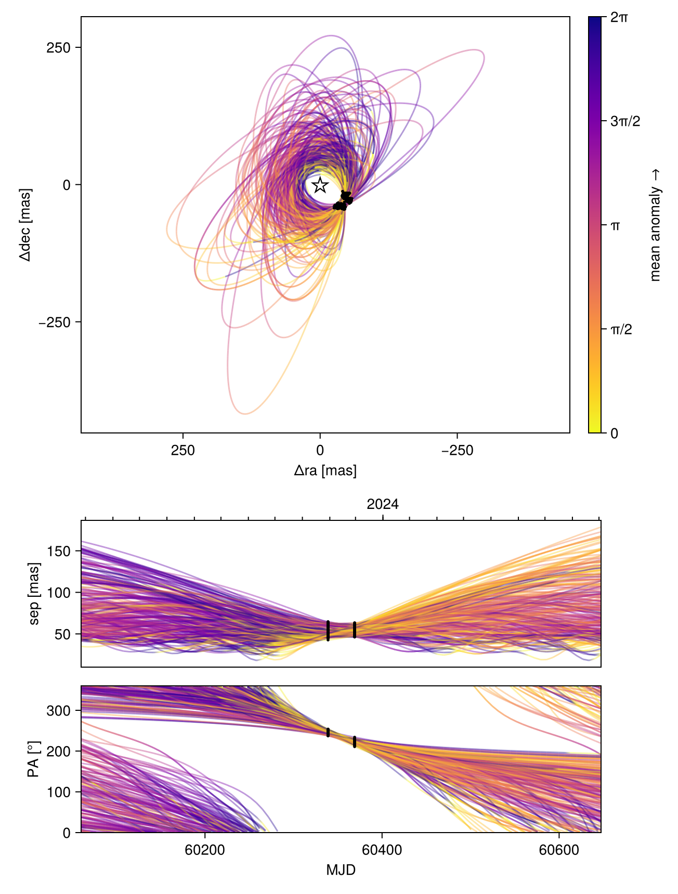
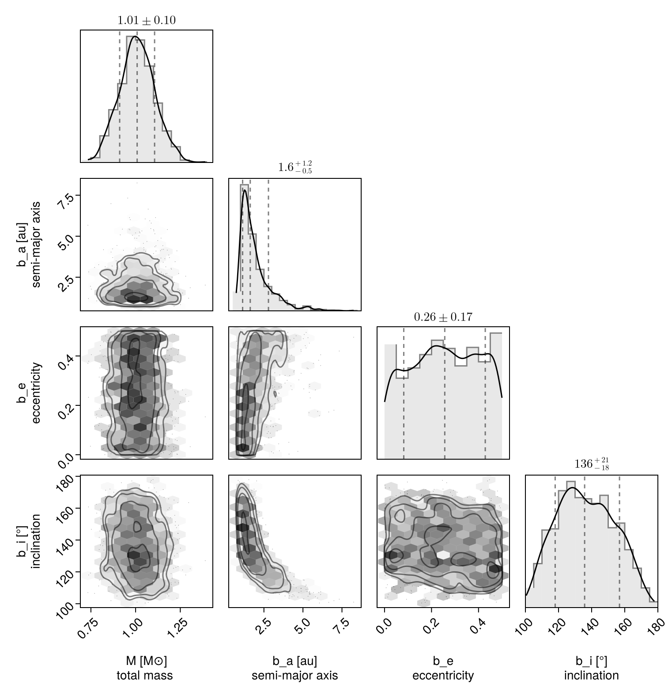
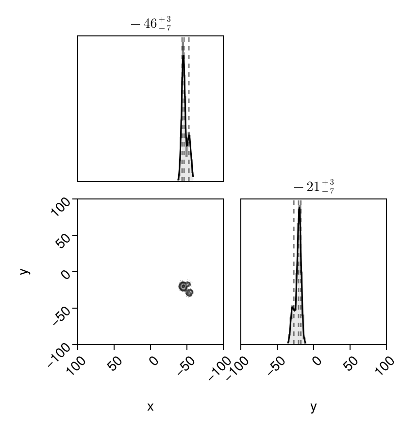
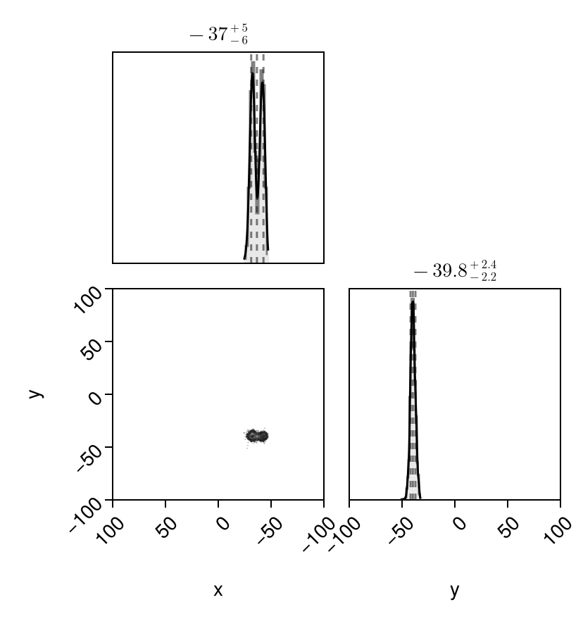
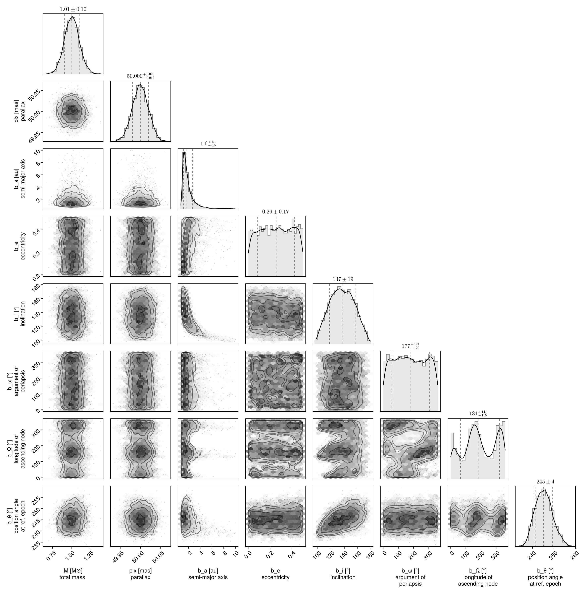

Fitting Likelihood Maps
There are circumstances where you might have a 2D map of planet likelihood vs. position in the plane of the sky ($\Delta$ R.A. and Dec.). These could originate from:
- cleaned interferometer data
- some kind of spectroscopic cube model fitting to detect planets
- some other imaginative modelling process I haven't thought of!
You can feed such 2D likelihood maps in to Octofitter. Simply pass in a list of maps and a platescale mapping the pixel size to a separation in milliarcseconds. You can of course also mix these likelihood maps with relative astrometry, radial velocity, proper motion, images, etc.
If your likelihood map is not centered on the star, you can specify offset dimensions as shown below.
Image modelling is supported in Octofitter via the extension package OctofitterImages. To install it, run pkg> add http://github.com/sefffal/Octofitter.jl:OctofitterImages
For simple models of interferometer data, OctofitterInterferometry.jl can already handle fitting point sources directly to visibilities.
using Octofitter
using Distributions
using OctofitterImages
using Pigeons
using AstroImages┌ Warning: Module Octofitter with build ID ffffffff-ffff-ffff-0000-0052e9e83269 is missing from the cache.
│ This may mean Octofitter [daf3887e-d01a-44a1-9d7e-98f15c5d69c9] does not support precompilation but is imported by a module that does.
└ @ Base loading.jl:1948Typically one would load your likelihood maps from eg. FITS files like so:
# If centred at the star:
image1 = AstroImages.recenter(AstroImages.load("image-example-1.fits",1))
# If not centered at the star:
image1 = AstroImages.load("image-example-1.fits")
image1_offset = AstroImage(
image1,
# Specify coordinates here:
(
# X coordinates should go from negative to positive.
# The image should have +RA at the left.
X(-4.85878653527304:1.0:95.14121346472696),
Y(-69.0877222942365:1.0:30.9122777057635)
)
# Below, there is a platescale option. `platescale` multiplies
# these values by a scaling factor. It can be 1 if the coordinates
# above are already in milliarcseconds.
)
imview(image1_offset)If you're using a FITS file, make sure to store your data in 64-bit floating point format.
For this demonstration, however, we will construct two synthetic likelihood maps using a template orbit. We will create three peaks in two epochs.
orbit_template = orbit(
a = 1.0,
e = 0.1,
i = 0.0,
ω = 0.0,
Ω = 0.5,
plx = 50.0,
M = 1
)
epochs = [
mjd("2024-01-30"),
mjd("2024-02-29"),
]
## Create simulated data with three likelihood peaks at both epochs
x1,y1 = raoff(orbit_template,epochs[1]), decoff(orbit_template,epochs[1])
# The three peaks in our likelihood map
d1 = MvNormal([x1, y1], [
5.0 0.2
0.2 8.0
])
d2 = MvNormal([x1+8.0,y1+4], [
5.0 0.6
0.6 5.0
])
d3 = MvNormal([x1+9.0, y1-10.0], [
6.0 0.6
0.6 6.0
])
d = MixtureModel([d1, d2, d3], [0.5, 0.3, 0.2])
# Calculate a log-likelihood map over a +-50 mas patch around (x1, x2)
lm1 = broadcast(x1 .+ (-50:50), y1 .+ (-50:1:50)') do x, y
logpdf(d, [x, y])
end
# Place in an AstroImage with appropriate offset coordinates
image1_offset = AstroImage(
lm1,
# Specify coordinates here:
(
# X coordinates should go from negative to positive.
# The image should have +RA at the left.
X(x1 .+ (-50:50)),
Y(y1 .+ (-50:1:50))
)
# Below, there is a platescale option. `platescale` multiplies
# these values by a scaling factor. It can be 1 if the coordinates
# above are already in milliarcseconds.
)
imview(10 .^ image1_offset)![]()
That was the first epoch. We now generate data for the second epoch:
x2,y2 = raoff(orbit_template,epochs[2]), decoff(orbit_template,epochs[2])
# The three peaks in our likelihood map
d1 = MvNormal([x2, y2], [
5.0 0.2
0.2 8.0
])
d2 = MvNormal([x2+10.0,y2], [
5.0 0.6
0.6 5.0
])
d3 = MvNormal([x2-4.0, y2-10.0], [
6.0 0.6
0.6 6.0
])
d = MixtureModel([d1, d2, d3], [0.5, 0.3, 0.2])
lm2 = broadcast(x2 .+ (-50:50), y2 .+ (-50:1:50)') do x, y
logpdf(d, [x, y])
end
# Place in an AstroImage with appropriate offset coordinates
image2_offset = AstroImage(
lm2,
# Specify coordinates here:
(
# X coordinates should go from negative to positive.
# The image should have +RA at the left.
X(x2 .+ (-50:50)),
Y(y2 .+ (-50:1:50))
)
# Below, there is a platescale option. `platescale` multiplies
# these values by a scaling factor. It can be 1 if the coordinates
# above are already in milliarcseconds.
)
imview(10 .^ image2_offset)![]()
Okay, we have our synthetic data. We now set up a LogLikelihoodMap object to contain our matrices of log likelihood values:
loglikemap = LogLikelihoodMap(
(;
epoch=epochs[1],
map=image1_offset,
platescale=1.0 # milliarcseconds/pixel of the map
),
(;
epoch=epochs[2],
map=image2_offset,
platescale=1.0 # milliarcseconds/pixel of the map
)
);OctofitterImages.LogLikelihoodMap Table with 5 columns and 2 rows:
epoch map platescale fillvalue mapinterp
┌───────────────────────────────────────────────────────────────────────────
1 │ 60339.0 [-393.192 -387.534 … 1.0 -423.544 101×101 extrapolate…
2 │ 60369.0 [-287.052 -281.177 … 1.0 -423.544 101×101 extrapolate…The likelihood maps will be interpolated using a simple bi-linear interpolation.
We now create a one-planet model and run the fit using octofit_pigeons. This parallel-tempered sampler is slower than the regular octofit, but is recommended over the default Hamiltonian Monte Carlo sampler due to the multi-modal nature of the data.
@planet b Visual{KepOrbit} begin
a ~ Uniform(0, 10)
e ~ Uniform(0.0, 0.5)
i ~ Sine()
ω ~ UniformCircular()
Ω ~ UniformCircular()
θ ~ UniformCircular()
tp = θ_at_epoch_to_tperi(system,b,60339.0) # reference epoch for θ. Choose an MJD date near your data.
end loglikemap
@system Tutoria begin
M ~ truncated(Normal(1.0, 0.1), lower=0)
plx ~ truncated(Normal(50.0, 0.02), lower=0)
end b
model = Octofitter.LogDensityModel(Tutoria)
chain, pt = octofit_pigeons(model, n_rounds=10) # increase n_rounds until log(Z₁/Z₀) converges.
display(chain)┌ Info: Determining initial positions using pathfinder
└ chain_no = 1
┌ Info: Determining initial positions using pathfinder
└ chain_no = 2
┌ Info: Determining initial positions using pathfinder
└ chain_no = 3
┌ Info: Determining initial positions using pathfinder
└ chain_no = 4
┌ Info: Determining initial positions using pathfinder
└ chain_no = 5
┌ Info: Determining initial positions using pathfinder
└ chain_no = 6
┌ Info: Determining initial positions using pathfinder
└ chain_no = 7
┌ Info: Determining initial positions using pathfinder
└ chain_no = 8
┌ Info: Determining initial positions using pathfinder
└ chain_no = 9
┌ Info: Determining initial positions using pathfinder
└ chain_no = 10
┌ Info: Determining initial positions using pathfinder
└ chain_no = 11
┌ Info: Determining initial positions using pathfinder
└ chain_no = 12
┌ Info: Determining initial positions using pathfinder
└ chain_no = 13
┌ Info: Determining initial positions using pathfinder
└ chain_no = 14
┌ Info: Determining initial positions using pathfinder
└ chain_no = 15
┌ Info: Determining initial positions using pathfinder
└ chain_no = 16
┌ Info: Determining initial positions using pathfinder
└ chain_no = 17
┌ Info: Determining initial positions using pathfinder
└ chain_no = 18
┌ Info: Determining initial positions using pathfinder
└ chain_no = 19
┌ Info: Determining initial positions using pathfinder
└ chain_no = 20
┌ Info: Determining initial positions using pathfinder
└ chain_no = 21
┌ Info: Determining initial positions using pathfinder
└ chain_no = 22
┌ Info: Determining initial positions using pathfinder
└ chain_no = 23
┌ Info: Determining initial positions using pathfinder
└ chain_no = 24
┌ Info: Determining initial positions using pathfinder
└ chain_no = 25
┌ Info: Determining initial positions using pathfinder
└ chain_no = 26
┌ Info: Determining initial positions using pathfinder
└ chain_no = 27
┌ Info: Determining initial positions using pathfinder
└ chain_no = 28
┌ Info: Determining initial positions using pathfinder
└ chain_no = 29
┌ Info: Determining initial positions using pathfinder
└ chain_no = 30
┌ Info: Determining initial positions using pathfinder
└ chain_no = 31
┌ Error: Unexpected error occured running pathfinder
│ exception =
│ AssertionError: isfinite(phi_c) && isfinite(dphi_c)
│ Stacktrace:
│ [1] (::LineSearches.HagerZhang{Float64, Base.RefValue{Bool}})(ϕ::Function, ϕdϕ::LineSearches.var"#ϕdϕ#6"{Optim.ManifoldObjective{NLSolversBase.TwiceDifferentiable{Float64, Vector{Float64}, Matrix{Float64}, Vector{Float64}}}, Vector{Float64}, Vector{Float64}, Vector{Float64}}, c::Float64, phi_0::Float64, dphi_0::Float64)
│ @ LineSearches ~/.julia/packages/LineSearches/G1LRk/src/hagerzhang.jl:299
│ [2] HagerZhang
│ @ ~/.julia/packages/LineSearches/G1LRk/src/hagerzhang.jl:101 [inlined]
│ [3] perform_linesearch!(state::Optim.LBFGSState{Vector{Float64}, Vector{Vector{Float64}}, Vector{Vector{Float64}}, Float64, Vector{Float64}}, method::Optim.LBFGS{Nothing, LineSearches.InitialHagerZhang{Float64}, LineSearches.HagerZhang{Float64, Base.RefValue{Bool}}, Optim.var"#20#22"}, d::Optim.ManifoldObjective{NLSolversBase.TwiceDifferentiable{Float64, Vector{Float64}, Matrix{Float64}, Vector{Float64}}})
│ @ Optim ~/.julia/packages/Optim/ZhuZN/src/utilities/perform_linesearch.jl:58
│ [4] update_state!(d::NLSolversBase.TwiceDifferentiable{Float64, Vector{Float64}, Matrix{Float64}, Vector{Float64}}, state::Optim.LBFGSState{Vector{Float64}, Vector{Vector{Float64}}, Vector{Vector{Float64}}, Float64, Vector{Float64}}, method::Optim.LBFGS{Nothing, LineSearches.InitialHagerZhang{Float64}, LineSearches.HagerZhang{Float64, Base.RefValue{Bool}}, Optim.var"#20#22"})
│ @ Optim ~/.julia/packages/Optim/ZhuZN/src/multivariate/solvers/first_order/l_bfgs.jl:204
│ [5] optimize(d::NLSolversBase.TwiceDifferentiable{Float64, Vector{Float64}, Matrix{Float64}, Vector{Float64}}, initial_x::Vector{Float64}, method::Optim.LBFGS{Nothing, LineSearches.InitialHagerZhang{Float64}, LineSearches.HagerZhang{Float64, Base.RefValue{Bool}}, Optim.var"#20#22"}, options::Optim.Options{Float64, OptimizationOptimJL.var"#_cb#12"{OptimizationBase.OptimizationCache{SciMLBase.OptimizationFunction{true, SciMLBase.NoAD, Pathfinder.var"#f#5"{Octofitter.LogDensityModelAny}, OptimizationBase.var"#23#30"{SciMLBase.OptimizationFunction{true, SciMLBase.NoAD, Pathfinder.var"#f#5"{Octofitter.LogDensityModelAny}, Pathfinder.var"#grad#6"{Octofitter.LogDensityModelAny}, Pathfinder.var"#hess#7"{Octofitter.LogDensityModelAny}, Nothing, Nothing, Nothing, Nothing, Nothing, Nothing, Nothing, Nothing, Nothing, typeof(SciMLBase.DEFAULT_OBSERVED_NO_TIME), Nothing, Nothing, Nothing, Nothing, Nothing, Nothing, Nothing, Nothing, Nothing}, OptimizationBase.ReInitCache{Vector{Float64}, Nothing}}, OptimizationBase.var"#24#31"{SciMLBase.OptimizationFunction{true, SciMLBase.NoAD, Pathfinder.var"#f#5"{Octofitter.LogDensityModelAny}, Pathfinder.var"#grad#6"{Octofitter.LogDensityModelAny}, Pathfinder.var"#hess#7"{Octofitter.LogDensityModelAny}, Nothing, Nothing, Nothing, Nothing, Nothing, Nothing, Nothing, Nothing, Nothing, typeof(SciMLBase.DEFAULT_OBSERVED_NO_TIME), Nothing, Nothing, Nothing, Nothing, Nothing, Nothing, Nothing, Nothing, Nothing}, OptimizationBase.ReInitCache{Vector{Float64}, Nothing}}, Nothing, Nothing, Nothing, Nothing, Nothing, Nothing, Nothing, Nothing, Nothing, typeof(SciMLBase.DEFAULT_OBSERVED_NO_TIME), Nothing, Nothing, Nothing, Nothing, Nothing, Nothing, Nothing, Nothing, Nothing}, OptimizationBase.ReInitCache{Vector{Float64}, Nothing}, Nothing, Nothing, Nothing, Nothing, Nothing, Optim.LBFGS{Nothing, LineSearches.InitialHagerZhang{Float64}, LineSearches.HagerZhang{Float64, Base.RefValue{Bool}}, Optim.var"#20#22"}, Base.Iterators.Cycle{Tuple{OptimizationBase.NullData}}, Bool, Pathfinder.OptimizationCallback{Vector{Vector{Float64}}, Vector{Float64}, Vector{Vector{Float64}}, Pathfinder.var"#∇f#9"{SciMLBase.OptimizationFunction{true, SciMLBase.NoAD, Pathfinder.var"#f#5"{Octofitter.LogDensityModelAny}, Pathfinder.var"#grad#6"{Octofitter.LogDensityModelAny}, Pathfinder.var"#hess#7"{Octofitter.LogDensityModelAny}, Nothing, Nothing, Nothing, Nothing, Nothing, Nothing, Nothing, Nothing, Nothing, typeof(SciMLBase.DEFAULT_OBSERVED_NO_TIME), Nothing, Nothing, Nothing, Nothing, Nothing, Nothing, Nothing, Nothing, Nothing}}, Base.UUID, Nothing}, Nothing}}}, state::Optim.LBFGSState{Vector{Float64}, Vector{Vector{Float64}}, Vector{Vector{Float64}}, Float64, Vector{Float64}})
│ @ Optim ~/.julia/packages/Optim/ZhuZN/src/multivariate/optimize/optimize.jl:54
│ [6] optimize(d::NLSolversBase.TwiceDifferentiable{Float64, Vector{Float64}, Matrix{Float64}, Vector{Float64}}, initial_x::Vector{Float64}, method::Optim.LBFGS{Nothing, LineSearches.InitialHagerZhang{Float64}, LineSearches.HagerZhang{Float64, Base.RefValue{Bool}}, Optim.var"#20#22"}, options::Optim.Options{Float64, OptimizationOptimJL.var"#_cb#12"{OptimizationBase.OptimizationCache{SciMLBase.OptimizationFunction{true, SciMLBase.NoAD, Pathfinder.var"#f#5"{Octofitter.LogDensityModelAny}, OptimizationBase.var"#23#30"{SciMLBase.OptimizationFunction{true, SciMLBase.NoAD, Pathfinder.var"#f#5"{Octofitter.LogDensityModelAny}, Pathfinder.var"#grad#6"{Octofitter.LogDensityModelAny}, Pathfinder.var"#hess#7"{Octofitter.LogDensityModelAny}, Nothing, Nothing, Nothing, Nothing, Nothing, Nothing, Nothing, Nothing, Nothing, typeof(SciMLBase.DEFAULT_OBSERVED_NO_TIME), Nothing, Nothing, Nothing, Nothing, Nothing, Nothing, Nothing, Nothing, Nothing}, OptimizationBase.ReInitCache{Vector{Float64}, Nothing}}, OptimizationBase.var"#24#31"{SciMLBase.OptimizationFunction{true, SciMLBase.NoAD, Pathfinder.var"#f#5"{Octofitter.LogDensityModelAny}, Pathfinder.var"#grad#6"{Octofitter.LogDensityModelAny}, Pathfinder.var"#hess#7"{Octofitter.LogDensityModelAny}, Nothing, Nothing, Nothing, Nothing, Nothing, Nothing, Nothing, Nothing, Nothing, typeof(SciMLBase.DEFAULT_OBSERVED_NO_TIME), Nothing, Nothing, Nothing, Nothing, Nothing, Nothing, Nothing, Nothing, Nothing}, OptimizationBase.ReInitCache{Vector{Float64}, Nothing}}, Nothing, Nothing, Nothing, Nothing, Nothing, Nothing, Nothing, Nothing, Nothing, typeof(SciMLBase.DEFAULT_OBSERVED_NO_TIME), Nothing, Nothing, Nothing, Nothing, Nothing, Nothing, Nothing, Nothing, Nothing}, OptimizationBase.ReInitCache{Vector{Float64}, Nothing}, Nothing, Nothing, Nothing, Nothing, Nothing, Optim.LBFGS{Nothing, LineSearches.InitialHagerZhang{Float64}, LineSearches.HagerZhang{Float64, Base.RefValue{Bool}}, Optim.var"#20#22"}, Base.Iterators.Cycle{Tuple{OptimizationBase.NullData}}, Bool, Pathfinder.OptimizationCallback{Vector{Vector{Float64}}, Vector{Float64}, Vector{Vector{Float64}}, Pathfinder.var"#∇f#9"{SciMLBase.OptimizationFunction{true, SciMLBase.NoAD, Pathfinder.var"#f#5"{Octofitter.LogDensityModelAny}, Pathfinder.var"#grad#6"{Octofitter.LogDensityModelAny}, Pathfinder.var"#hess#7"{Octofitter.LogDensityModelAny}, Nothing, Nothing, Nothing, Nothing, Nothing, Nothing, Nothing, Nothing, Nothing, typeof(SciMLBase.DEFAULT_OBSERVED_NO_TIME), Nothing, Nothing, Nothing, Nothing, Nothing, Nothing, Nothing, Nothing, Nothing}}, Base.UUID, Nothing}, Nothing}}})
│ @ Optim ~/.julia/packages/Optim/ZhuZN/src/multivariate/optimize/optimize.jl:36
│ [7] __solve(cache::OptimizationBase.OptimizationCache{SciMLBase.OptimizationFunction{true, SciMLBase.NoAD, Pathfinder.var"#f#5"{Octofitter.LogDensityModelAny}, OptimizationBase.var"#23#30"{SciMLBase.OptimizationFunction{true, SciMLBase.NoAD, Pathfinder.var"#f#5"{Octofitter.LogDensityModelAny}, Pathfinder.var"#grad#6"{Octofitter.LogDensityModelAny}, Pathfinder.var"#hess#7"{Octofitter.LogDensityModelAny}, Nothing, Nothing, Nothing, Nothing, Nothing, Nothing, Nothing, Nothing, Nothing, typeof(SciMLBase.DEFAULT_OBSERVED_NO_TIME), Nothing, Nothing, Nothing, Nothing, Nothing, Nothing, Nothing, Nothing, Nothing}, OptimizationBase.ReInitCache{Vector{Float64}, Nothing}}, OptimizationBase.var"#24#31"{SciMLBase.OptimizationFunction{true, SciMLBase.NoAD, Pathfinder.var"#f#5"{Octofitter.LogDensityModelAny}, Pathfinder.var"#grad#6"{Octofitter.LogDensityModelAny}, Pathfinder.var"#hess#7"{Octofitter.LogDensityModelAny}, Nothing, Nothing, Nothing, Nothing, Nothing, Nothing, Nothing, Nothing, Nothing, typeof(SciMLBase.DEFAULT_OBSERVED_NO_TIME), Nothing, Nothing, Nothing, Nothing, Nothing, Nothing, Nothing, Nothing, Nothing}, OptimizationBase.ReInitCache{Vector{Float64}, Nothing}}, Nothing, Nothing, Nothing, Nothing, Nothing, Nothing, Nothing, Nothing, Nothing, typeof(SciMLBase.DEFAULT_OBSERVED_NO_TIME), Nothing, Nothing, Nothing, Nothing, Nothing, Nothing, Nothing, Nothing, Nothing}, OptimizationBase.ReInitCache{Vector{Float64}, Nothing}, Nothing, Nothing, Nothing, Nothing, Nothing, Optim.LBFGS{Nothing, LineSearches.InitialHagerZhang{Float64}, LineSearches.HagerZhang{Float64, Base.RefValue{Bool}}, Optim.var"#20#22"}, Base.Iterators.Cycle{Tuple{OptimizationBase.NullData}}, Bool, Pathfinder.OptimizationCallback{Vector{Vector{Float64}}, Vector{Float64}, Vector{Vector{Float64}}, Pathfinder.var"#∇f#9"{SciMLBase.OptimizationFunction{true, SciMLBase.NoAD, Pathfinder.var"#f#5"{Octofitter.LogDensityModelAny}, Pathfinder.var"#grad#6"{Octofitter.LogDensityModelAny}, Pathfinder.var"#hess#7"{Octofitter.LogDensityModelAny}, Nothing, Nothing, Nothing, Nothing, Nothing, Nothing, Nothing, Nothing, Nothing, typeof(SciMLBase.DEFAULT_OBSERVED_NO_TIME), Nothing, Nothing, Nothing, Nothing, Nothing, Nothing, Nothing, Nothing, Nothing}}, Base.UUID, Nothing}, Nothing})
│ @ OptimizationOptimJL ~/.julia/packages/OptimizationOptimJL/hDX5k/src/OptimizationOptimJL.jl:224
│ [8] solve!
│ @ ~/.julia/packages/SciMLBase/rR75x/src/solve.jl:188 [inlined]
│ [9] #solve#627
│ @ ~/.julia/packages/SciMLBase/rR75x/src/solve.jl:96 [inlined]
│ [10] optimize_with_trace(prob::SciMLBase.OptimizationProblem{true, SciMLBase.OptimizationFunction{true, SciMLBase.NoAD, Pathfinder.var"#f#5"{Octofitter.LogDensityModelAny}, Pathfinder.var"#grad#6"{Octofitter.LogDensityModelAny}, Pathfinder.var"#hess#7"{Octofitter.LogDensityModelAny}, Nothing, Nothing, Nothing, Nothing, Nothing, Nothing, Nothing, Nothing, Nothing, typeof(SciMLBase.DEFAULT_OBSERVED_NO_TIME), Nothing, Nothing, Nothing, Nothing, Nothing, Nothing, Nothing, Nothing, Nothing}, Vector{Float64}, Nothing, Nothing, Nothing, Nothing, Nothing, Nothing, Nothing, @Kwargs{}}, optimizer::Optim.LBFGS{Nothing, LineSearches.InitialHagerZhang{Float64}, LineSearches.HagerZhang{Float64, Base.RefValue{Bool}}, Optim.var"#20#22"}; progress_name::String, progress_id::Base.UUID, maxiters::Int64, callback::Nothing, fail_on_nonfinite::Bool, kwargs::@Kwargs{progress::Bool, reltol::Float64})
│ @ Pathfinder ~/.julia/packages/Pathfinder/OduAC/src/optimize.jl:46
│ [11] optimize_with_trace
│ @ ~/.julia/packages/Pathfinder/OduAC/src/optimize.jl:20 [inlined]
│ [12] _pathfinder(rng::SplittableRandoms.SplittableRandom, prob::SciMLBase.OptimizationProblem{true, SciMLBase.OptimizationFunction{true, SciMLBase.NoAD, Pathfinder.var"#f#5"{Octofitter.LogDensityModelAny}, Pathfinder.var"#grad#6"{Octofitter.LogDensityModelAny}, Pathfinder.var"#hess#7"{Octofitter.LogDensityModelAny}, Nothing, Nothing, Nothing, Nothing, Nothing, Nothing, Nothing, Nothing, Nothing, typeof(SciMLBase.DEFAULT_OBSERVED_NO_TIME), Nothing, Nothing, Nothing, Nothing, Nothing, Nothing, Nothing, Nothing, Nothing}, Vector{Float64}, Nothing, Nothing, Nothing, Nothing, Nothing, Nothing, Nothing, @Kwargs{}}, logp::Pathfinder.var"#logp#23"{SciMLBase.OptimizationProblem{true, SciMLBase.OptimizationFunction{true, SciMLBase.NoAD, Pathfinder.var"#f#5"{Octofitter.LogDensityModelAny}, Pathfinder.var"#grad#6"{Octofitter.LogDensityModelAny}, Pathfinder.var"#hess#7"{Octofitter.LogDensityModelAny}, Nothing, Nothing, Nothing, Nothing, Nothing, Nothing, Nothing, Nothing, Nothing, typeof(SciMLBase.DEFAULT_OBSERVED_NO_TIME), Nothing, Nothing, Nothing, Nothing, Nothing, Nothing, Nothing, Nothing, Nothing}, Vector{Float64}, Nothing, Nothing, Nothing, Nothing, Nothing, Nothing, Nothing, @Kwargs{}}}; history_length::Int64, optimizer::Optim.LBFGS{Nothing, LineSearches.InitialHagerZhang{Float64}, LineSearches.HagerZhang{Float64, Base.RefValue{Bool}}, Optim.var"#20#22"}, ndraws_elbo::Int64, executor::Transducers.SequentialEx{@NamedTuple{}}, kwargs::@Kwargs{progress_name::String, progress_id::Base.UUID, progress::Bool, maxiters::Int64, reltol::Float64})
│ @ Pathfinder ~/.julia/packages/Pathfinder/OduAC/src/singlepath.jl:288
│ [13] _pathfinder
│ @ ~/.julia/packages/Pathfinder/OduAC/src/singlepath.jl:277 [inlined]
│ [14] _pathfinder_try_until_succeed(rng::SplittableRandoms.SplittableRandom, prob::SciMLBase.OptimizationProblem{true, SciMLBase.OptimizationFunction{true, SciMLBase.NoAD, Pathfinder.var"#f#5"{Octofitter.LogDensityModelAny}, Pathfinder.var"#grad#6"{Octofitter.LogDensityModelAny}, Pathfinder.var"#hess#7"{Octofitter.LogDensityModelAny}, Nothing, Nothing, Nothing, Nothing, Nothing, Nothing, Nothing, Nothing, Nothing, typeof(SciMLBase.DEFAULT_OBSERVED_NO_TIME), Nothing, Nothing, Nothing, Nothing, Nothing, Nothing, Nothing, Nothing, Nothing}, Vector{Float64}, Nothing, Nothing, Nothing, Nothing, Nothing, Nothing, Nothing, @Kwargs{}}, logp::Pathfinder.var"#logp#23"{SciMLBase.OptimizationProblem{true, SciMLBase.OptimizationFunction{true, SciMLBase.NoAD, Pathfinder.var"#f#5"{Octofitter.LogDensityModelAny}, Pathfinder.var"#grad#6"{Octofitter.LogDensityModelAny}, Pathfinder.var"#hess#7"{Octofitter.LogDensityModelAny}, Nothing, Nothing, Nothing, Nothing, Nothing, Nothing, Nothing, Nothing, Nothing, typeof(SciMLBase.DEFAULT_OBSERVED_NO_TIME), Nothing, Nothing, Nothing, Nothing, Nothing, Nothing, Nothing, Nothing, Nothing}, Vector{Float64}, Nothing, Nothing, Nothing, Nothing, Nothing, Nothing, Nothing, @Kwargs{}}}; ntries::Int64, init_scale::Int64, init_sampler::Octofitter.CallableAny, allow_mutating_init::Bool, kwargs::@Kwargs{history_length::Int64, optimizer::Optim.LBFGS{Nothing, LineSearches.InitialHagerZhang{Float64}, LineSearches.HagerZhang{Float64, Base.RefValue{Bool}}, Optim.var"#20#22"}, progress_id::Base.UUID, ndraws_elbo::Int64, progress::Bool, maxiters::Int64, reltol::Float64})
│ @ Pathfinder ~/.julia/packages/Pathfinder/OduAC/src/singlepath.jl:263
│ [15] _pathfinder_try_until_succeed
│ @ ~/.julia/packages/Pathfinder/OduAC/src/singlepath.jl:251 [inlined]
│ [16] #22
│ @ ~/.julia/packages/Pathfinder/OduAC/src/singlepath.jl:180 [inlined]
│ [17] progress(f::Pathfinder.var"#22#24"{SplittableRandoms.SplittableRandom, Int64, Optim.LBFGS{Nothing, LineSearches.InitialHagerZhang{Float64}, LineSearches.HagerZhang{Float64, Base.RefValue{Bool}}, Optim.var"#20#22"}, Int64, @Kwargs{init_sampler::Octofitter.CallableAny, allow_mutating_init::Bool, progress::Bool, maxiters::Int64, reltol::Float64}, SciMLBase.OptimizationProblem{true, SciMLBase.OptimizationFunction{true, SciMLBase.NoAD, Pathfinder.var"#f#5"{Octofitter.LogDensityModelAny}, Pathfinder.var"#grad#6"{Octofitter.LogDensityModelAny}, Pathfinder.var"#hess#7"{Octofitter.LogDensityModelAny}, Nothing, Nothing, Nothing, Nothing, Nothing, Nothing, Nothing, Nothing, Nothing, typeof(SciMLBase.DEFAULT_OBSERVED_NO_TIME), Nothing, Nothing, Nothing, Nothing, Nothing, Nothing, Nothing, Nothing, Nothing}, Vector{Float64}, Nothing, Nothing, Nothing, Nothing, Nothing, Nothing, Nothing, @Kwargs{}}, Pathfinder.var"#logp#23"{SciMLBase.OptimizationProblem{true, SciMLBase.OptimizationFunction{true, SciMLBase.NoAD, Pathfinder.var"#f#5"{Octofitter.LogDensityModelAny}, Pathfinder.var"#grad#6"{Octofitter.LogDensityModelAny}, Pathfinder.var"#hess#7"{Octofitter.LogDensityModelAny}, Nothing, Nothing, Nothing, Nothing, Nothing, Nothing, Nothing, Nothing, Nothing, typeof(SciMLBase.DEFAULT_OBSERVED_NO_TIME), Nothing, Nothing, Nothing, Nothing, Nothing, Nothing, Nothing, Nothing, Nothing}, Vector{Float64}, Nothing, Nothing, Nothing, Nothing, Nothing, Nothing, Nothing, @Kwargs{}}}}; name::String)
│ @ ProgressLogging ~/.julia/packages/ProgressLogging/6KXlp/src/ProgressLogging.jl:262
│ [18] progress
│ @ ~/.julia/packages/ProgressLogging/6KXlp/src/ProgressLogging.jl:258 [inlined]
│ [19] pathfinder(prob::SciMLBase.OptimizationProblem{true, SciMLBase.OptimizationFunction{true, SciMLBase.NoAD, Pathfinder.var"#f#5"{Octofitter.LogDensityModelAny}, Pathfinder.var"#grad#6"{Octofitter.LogDensityModelAny}, Pathfinder.var"#hess#7"{Octofitter.LogDensityModelAny}, Nothing, Nothing, Nothing, Nothing, Nothing, Nothing, Nothing, Nothing, Nothing, typeof(SciMLBase.DEFAULT_OBSERVED_NO_TIME), Nothing, Nothing, Nothing, Nothing, Nothing, Nothing, Nothing, Nothing, Nothing}, Vector{Float64}, Nothing, Nothing, Nothing, Nothing, Nothing, Nothing, Nothing, @Kwargs{}}; rng::SplittableRandoms.SplittableRandom, history_length::Int64, optimizer::Optim.LBFGS{Nothing, LineSearches.InitialHagerZhang{Float64}, LineSearches.HagerZhang{Float64, Base.RefValue{Bool}}, Optim.var"#20#22"}, ndraws_elbo::Int64, ndraws::Int64, input::Octofitter.LogDensityModelAny, kwargs::@Kwargs{init_sampler::Octofitter.CallableAny, allow_mutating_init::Bool, progress::Bool, maxiters::Int64, reltol::Float64})
│ @ Pathfinder ~/.julia/packages/Pathfinder/OduAC/src/singlepath.jl:179
│ [20] pathfinder
│ @ ~/.julia/packages/Pathfinder/OduAC/src/singlepath.jl:165 [inlined]
│ [21] #pathfinder#20
│ @ ~/.julia/packages/Pathfinder/OduAC/src/singlepath.jl:163 [inlined]
│ [22] pathfinder
│ @ ~/.julia/packages/Pathfinder/OduAC/src/singlepath.jl:142 [inlined]
│ [23] pathfinder(ℓ::Octofitter.LogDensityModelAny; input::Octofitter.LogDensityModelAny, kwargs::@Kwargs{init_sampler::Octofitter.CallableAny, progress::Bool, maxiters::Int64, reltol::Float64, rng::SplittableRandoms.SplittableRandom})
│ @ Pathfinder ~/.julia/packages/Pathfinder/OduAC/src/singlepath.jl:140
│ [24] pathfinder
│ @ ~/.julia/packages/Pathfinder/OduAC/src/singlepath.jl:136 [inlined]
│ [25] (::OctofitterPigeonsExt.var"#3#6"{SplittableRandoms.SplittableRandom, Octofitter.LogDensityModelAny, Int64, OctofitterPigeonsExt.var"#2#5"{Octofitter.LogDensityModel{Octofitter.var"#ℓπcallback#61"{System{Priors, Derived, Tuple{}, @NamedTuple{b::Planet{Visual{KepOrbit}, Priors, Derived, Tuple{Octofitter.UnitLengthPrior{:ωy, :ωx}, Octofitter.UnitLengthPrior{:Ωy, :Ωx}, Octofitter.UnitLengthPrior{:θy, :θx}, OctofitterImages.LogLikelihoodMap{Table{@NamedTuple{epoch::Float64, map::AstroImages.AstroImageMat{Float64, Tuple{DimensionalData.Dimensions.X{DimensionalData.Dimensions.Lookups.Sampled{Float64, StepRangeLen{Float64, Float64, Float64, Int64}, DimensionalData.Dimensions.Lookups.ForwardOrdered, DimensionalData.Dimensions.Lookups.Regular{Float64}, DimensionalData.Dimensions.Lookups.Points, DimensionalData.Dimensions.Lookups.NoMetadata}}, DimensionalData.Dimensions.Y{DimensionalData.Dimensions.Lookups.Sampled{Float64, StepRangeLen{Float64, Base.TwicePrecision{Float64}, Base.TwicePrecision{Float64}, Int64}, DimensionalData.Dimensions.Lookups.ForwardOrdered, DimensionalData.Dimensions.Lookups.Regular{Float64}, DimensionalData.Dimensions.Lookups.Points, DimensionalData.Dimensions.Lookups.NoMetadata}}}, Tuple{}, Matrix{Float64}, Tuple{DimensionalData.Dimensions.X{DimensionalData.Dimensions.Lookups.Sampled{Float64, StepRangeLen{Float64, Float64, Float64, Int64}, DimensionalData.Dimensions.Lookups.ForwardOrdered, DimensionalData.Dimensions.Lookups.Regular{Float64}, DimensionalData.Dimensions.Lookups.Points, DimensionalData.Dimensions.Lookups.NoMetadata}}, DimensionalData.Dimensions.Y{DimensionalData.Dimensions.Lookups.Sampled{Float64, StepRangeLen{Float64, Base.TwicePrecision{Float64}, Base.TwicePrecision{Float64}, Int64}, DimensionalData.Dimensions.Lookups.ForwardOrdered, DimensionalData.Dimensions.Lookups.Regular{Float64}, DimensionalData.Dimensions.Lookups.Points, DimensionalData.Dimensions.Lookups.NoMetadata}}}}, platescale::Float64, fillvalue::Float64, mapinterp::Interpolations.FilledExtrapolation{Float64, 2, Interpolations.GriddedInterpolation{Float64, 2, Matrix{Float64}, Interpolations.Gridded{Interpolations.Linear{Interpolations.Throw{Interpolations.OnGrid}}}, Tuple{DimensionalData.Dimensions.Lookups.Sampled{Float64, StepRangeLen{Float64, Float64, Float64, Int64}, DimensionalData.Dimensions.Lookups.ForwardOrdered, DimensionalData.Dimensions.Lookups.Regular{Float64}, DimensionalData.Dimensions.Lookups.Points, DimensionalData.Dimensions.Lookups.NoMetadata}, DimensionalData.Dimensions.Lookups.Sampled{Float64, StepRangeLen{Float64, Base.TwicePrecision{Float64}, Base.TwicePrecision{Float64}, Int64}, DimensionalData.Dimensions.Lookups.ForwardOrdered, DimensionalData.Dimensions.Lookups.Regular{Float64}, DimensionalData.Dimensions.Lookups.Points, DimensionalData.Dimensions.Lookups.NoMetadata}}}, Interpolations.Gridded{Interpolations.Linear{Interpolations.Throw{Interpolations.OnGrid}}}, Float64}}, 1, @NamedTuple{epoch::Vector{Float64}, map::Vector{AstroImages.AstroImageMat{Float64, Tuple{DimensionalData.Dimensions.X{DimensionalData.Dimensions.Lookups.Sampled{Float64, StepRangeLen{Float64, Float64, Float64, Int64}, DimensionalData.Dimensions.Lookups.ForwardOrdered, DimensionalData.Dimensions.Lookups.Regular{Float64}, DimensionalData.Dimensions.Lookups.Points, DimensionalData.Dimensions.Lookups.NoMetadata}}, DimensionalData.Dimensions.Y{DimensionalData.Dimensions.Lookups.Sampled{Float64, StepRangeLen{Float64, Base.TwicePrecision{Float64}, Base.TwicePrecision{Float64}, Int64}, DimensionalData.Dimensions.Lookups.ForwardOrdered, DimensionalData.Dimensions.Lookups.Regular{Float64}, DimensionalData.Dimensions.Lookups.Points, DimensionalData.Dimensions.Lookups.NoMetadata}}}, Tuple{}, Matrix{Float64}, Tuple{DimensionalData.Dimensions.X{DimensionalData.Dimensions.Lookups.Sampled{Float64, StepRangeLen{Float64, Float64, Float64, Int64}, DimensionalData.Dimensions.Lookups.ForwardOrdered, DimensionalData.Dimensions.Lookups.Regular{Float64}, DimensionalData.Dimensions.Lookups.Points, DimensionalData.Dimensions.Lookups.NoMetadata}}, DimensionalData.Dimensions.Y{DimensionalData.Dimensions.Lookups.Sampled{Float64, StepRangeLen{Float64, Base.TwicePrecision{Float64}, Base.TwicePrecision{Float64}, Int64}, DimensionalData.Dimensions.Lookups.ForwardOrdered, DimensionalData.Dimensions.Lookups.Regular{Float64}, DimensionalData.Dimensions.Lookups.Points, DimensionalData.Dimensions.Lookups.NoMetadata}}}}}, platescale::Vector{Float64}, fillvalue::Vector{Float64}, mapinterp::Vector{Interpolations.FilledExtrapolation{Float64, 2, Interpolations.GriddedInterpolation{Float64, 2, Matrix{Float64}, Interpolations.Gridded{Interpolations.Linear{Interpolations.Throw{Interpolations.OnGrid}}}, Tuple{DimensionalData.Dimensions.Lookups.Sampled{Float64, StepRangeLen{Float64, Float64, Float64, Int64}, DimensionalData.Dimensions.Lookups.ForwardOrdered, DimensionalData.Dimensions.Lookups.Regular{Float64}, DimensionalData.Dimensions.Lookups.Points, DimensionalData.Dimensions.Lookups.NoMetadata}, DimensionalData.Dimensions.Lookups.Sampled{Float64, StepRangeLen{Float64, Base.TwicePrecision{Float64}, Base.TwicePrecision{Float64}, Int64}, DimensionalData.Dimensions.Lookups.ForwardOrdered, DimensionalData.Dimensions.Lookups.Regular{Float64}, DimensionalData.Dimensions.Lookups.Points, DimensionalData.Dimensions.Lookups.NoMetadata}}}, Interpolations.Gridded{Interpolations.Linear{Interpolations.Throw{Interpolations.OnGrid}}}, Float64}}}}}}}}}, RuntimeGeneratedFunctions.RuntimeGeneratedFunction{(:arr,), Octofitter.var"#_RGF_ModTag", Octofitter.var"#_RGF_ModTag", (0x4f515703, 0x39f8918b, 0x66558a26, 0x84f574c7, 0xa6c4a71c), Expr}, RuntimeGeneratedFunctions.RuntimeGeneratedFunction{(:arr,), Octofitter.var"#_RGF_ModTag", Octofitter.var"#_RGF_ModTag", (0x7a4c0e3e, 0xd58e1408, 0x83535ce5, 0x2231dff4, 0x4d8e57ce), Expr}, RuntimeGeneratedFunctions.RuntimeGeneratedFunction{(:arr,), Octofitter.var"#_RGF_ModTag", Octofitter.var"#_RGF_ModTag", (0x9e7bec0d, 0x375f4c81, 0xe79559ec, 0x79a1577f, 0xa68036b5), Expr}, RuntimeGeneratedFunctions.RuntimeGeneratedFunction{(:system, :θ_system), Octofitter.var"#_RGF_ModTag", Octofitter.var"#_RGF_ModTag", (0x9816727b, 0xbdc5f6fb, 0x16d24fb0, 0xc316a585, 0x8bdb01c4), Expr}}, Octofitter.var"#57#69"{ForwardDiff.GradientConfig{ForwardDiff.Tag{Octofitter.var"#ℓπcallback#61"{System{Priors, Derived, Tuple{}, @NamedTuple{b::Planet{Visual{KepOrbit}, Priors, Derived, Tuple{Octofitter.UnitLengthPrior{:ωy, :ωx}, Octofitter.UnitLengthPrior{:Ωy, :Ωx}, Octofitter.UnitLengthPrior{:θy, :θx}, OctofitterImages.LogLikelihoodMap{Table{@NamedTuple{epoch::Float64, map::AstroImages.AstroImageMat{Float64, Tuple{DimensionalData.Dimensions.X{DimensionalData.Dimensions.Lookups.Sampled{Float64, StepRangeLen{Float64, Float64, Float64, Int64}, DimensionalData.Dimensions.Lookups.ForwardOrdered, DimensionalData.Dimensions.Lookups.Regular{Float64}, DimensionalData.Dimensions.Lookups.Points, DimensionalData.Dimensions.Lookups.NoMetadata}}, DimensionalData.Dimensions.Y{DimensionalData.Dimensions.Lookups.Sampled{Float64, StepRangeLen{Float64, Base.TwicePrecision{Float64}, Base.TwicePrecision{Float64}, Int64}, DimensionalData.Dimensions.Lookups.ForwardOrdered, DimensionalData.Dimensions.Lookups.Regular{Float64}, DimensionalData.Dimensions.Lookups.Points, DimensionalData.Dimensions.Lookups.NoMetadata}}}, Tuple{}, Matrix{Float64}, Tuple{DimensionalData.Dimensions.X{DimensionalData.Dimensions.Lookups.Sampled{Float64, StepRangeLen{Float64, Float64, Float64, Int64}, DimensionalData.Dimensions.Lookups.ForwardOrdered, DimensionalData.Dimensions.Lookups.Regular{Float64}, DimensionalData.Dimensions.Lookups.Points, DimensionalData.Dimensions.Lookups.NoMetadata}}, DimensionalData.Dimensions.Y{DimensionalData.Dimensions.Lookups.Sampled{Float64, StepRangeLen{Float64, Base.TwicePrecision{Float64}, Base.TwicePrecision{Float64}, Int64}, DimensionalData.Dimensions.Lookups.ForwardOrdered, DimensionalData.Dimensions.Lookups.Regular{Float64}, DimensionalData.Dimensions.Lookups.Points, DimensionalData.Dimensions.Lookups.NoMetadata}}}}, platescale::Float64, fillvalue::Float64, mapinterp::Interpolations.FilledExtrapolation{Float64, 2, Interpolations.GriddedInterpolation{Float64, 2, Matrix{Float64}, Interpolations.Gridded{Interpolations.Linear{Interpolations.Throw{Interpolations.OnGrid}}}, Tuple{DimensionalData.Dimensions.Lookups.Sampled{Float64, StepRangeLen{Float64, Float64, Float64, Int64}, DimensionalData.Dimensions.Lookups.ForwardOrdered, DimensionalData.Dimensions.Lookups.Regular{Float64}, DimensionalData.Dimensions.Lookups.Points, DimensionalData.Dimensions.Lookups.NoMetadata}, DimensionalData.Dimensions.Lookups.Sampled{Float64, StepRangeLen{Float64, Base.TwicePrecision{Float64}, Base.TwicePrecision{Float64}, Int64}, DimensionalData.Dimensions.Lookups.ForwardOrdered, DimensionalData.Dimensions.Lookups.Regular{Float64}, DimensionalData.Dimensions.Lookups.Points, DimensionalData.Dimensions.Lookups.NoMetadata}}}, Interpolations.Gridded{Interpolations.Linear{Interpolations.Throw{Interpolations.OnGrid}}}, Float64}}, 1, @NamedTuple{epoch::Vector{Float64}, map::Vector{AstroImages.AstroImageMat{Float64, Tuple{DimensionalData.Dimensions.X{DimensionalData.Dimensions.Lookups.Sampled{Float64, StepRangeLen{Float64, Float64, Float64, Int64}, DimensionalData.Dimensions.Lookups.ForwardOrdered, DimensionalData.Dimensions.Lookups.Regular{Float64}, DimensionalData.Dimensions.Lookups.Points, DimensionalData.Dimensions.Lookups.NoMetadata}}, DimensionalData.Dimensions.Y{DimensionalData.Dimensions.Lookups.Sampled{Float64, StepRangeLen{Float64, Base.TwicePrecision{Float64}, Base.TwicePrecision{Float64}, Int64}, DimensionalData.Dimensions.Lookups.ForwardOrdered, DimensionalData.Dimensions.Lookups.Regular{Float64}, DimensionalData.Dimensions.Lookups.Points, DimensionalData.Dimensions.Lookups.NoMetadata}}}, Tuple{}, Matrix{Float64}, Tuple{DimensionalData.Dimensions.X{DimensionalData.Dimensions.Lookups.Sampled{Float64, StepRangeLen{Float64, Float64, Float64, Int64}, DimensionalData.Dimensions.Lookups.ForwardOrdered, DimensionalData.Dimensions.Lookups.Regular{Float64}, DimensionalData.Dimensions.Lookups.Points, DimensionalData.Dimensions.Lookups.NoMetadata}}, DimensionalData.Dimensions.Y{DimensionalData.Dimensions.Lookups.Sampled{Float64, StepRangeLen{Float64, Base.TwicePrecision{Float64}, Base.TwicePrecision{Float64}, Int64}, DimensionalData.Dimensions.Lookups.ForwardOrdered, DimensionalData.Dimensions.Lookups.Regular{Float64}, DimensionalData.Dimensions.Lookups.Points, DimensionalData.Dimensions.Lookups.NoMetadata}}}}}, platescale::Vector{Float64}, fillvalue::Vector{Float64}, mapinterp::Vector{Interpolations.FilledExtrapolation{Float64, 2, Interpolations.GriddedInterpolation{Float64, 2, Matrix{Float64}, Interpolations.Gridded{Interpolations.Linear{Interpolations.Throw{Interpolations.OnGrid}}}, Tuple{DimensionalData.Dimensions.Lookups.Sampled{Float64, StepRangeLen{Float64, Float64, Float64, Int64}, DimensionalData.Dimensions.Lookups.ForwardOrdered, DimensionalData.Dimensions.Lookups.Regular{Float64}, DimensionalData.Dimensions.Lookups.Points, DimensionalData.Dimensions.Lookups.NoMetadata}, DimensionalData.Dimensions.Lookups.Sampled{Float64, StepRangeLen{Float64, Base.TwicePrecision{Float64}, Base.TwicePrecision{Float64}, Int64}, DimensionalData.Dimensions.Lookups.ForwardOrdered, DimensionalData.Dimensions.Lookups.Regular{Float64}, DimensionalData.Dimensions.Lookups.Points, DimensionalData.Dimensions.Lookups.NoMetadata}}}, Interpolations.Gridded{Interpolations.Linear{Interpolations.Throw{Interpolations.OnGrid}}}, Float64}}}}}}}}}, RuntimeGeneratedFunctions.RuntimeGeneratedFunction{(:arr,), Octofitter.var"#_RGF_ModTag", Octofitter.var"#_RGF_ModTag", (0x4f515703, 0x39f8918b, 0x66558a26, 0x84f574c7, 0xa6c4a71c), Expr}, RuntimeGeneratedFunctions.RuntimeGeneratedFunction{(:arr,), Octofitter.var"#_RGF_ModTag", Octofitter.var"#_RGF_ModTag", (0x7a4c0e3e, 0xd58e1408, 0x83535ce5, 0x2231dff4, 0x4d8e57ce), Expr}, RuntimeGeneratedFunctions.RuntimeGeneratedFunction{(:arr,), Octofitter.var"#_RGF_ModTag", Octofitter.var"#_RGF_ModTag", (0x9e7bec0d, 0x375f4c81, 0xe79559ec, 0x79a1577f, 0xa68036b5), Expr}, RuntimeGeneratedFunctions.RuntimeGeneratedFunction{(:system, :θ_system), Octofitter.var"#_RGF_ModTag", Octofitter.var"#_RGF_ModTag", (0x9816727b, 0xbdc5f6fb, 0x16d24fb0, 0xc316a585, 0x8bdb01c4), Expr}}, Float64}, Float64, 11, Vector{ForwardDiff.Dual{ForwardDiff.Tag{Octofitter.var"#ℓπcallback#61"{System{Priors, Derived, Tuple{}, @NamedTuple{b::Planet{Visual{KepOrbit}, Priors, Derived, Tuple{Octofitter.UnitLengthPrior{:ωy, :ωx}, Octofitter.UnitLengthPrior{:Ωy, :Ωx}, Octofitter.UnitLengthPrior{:θy, :θx}, OctofitterImages.LogLikelihoodMap{Table{@NamedTuple{epoch::Float64, map::AstroImages.AstroImageMat{Float64, Tuple{DimensionalData.Dimensions.X{DimensionalData.Dimensions.Lookups.Sampled{Float64, StepRangeLen{Float64, Float64, Float64, Int64}, DimensionalData.Dimensions.Lookups.ForwardOrdered, DimensionalData.Dimensions.Lookups.Regular{Float64}, DimensionalData.Dimensions.Lookups.Points, DimensionalData.Dimensions.Lookups.NoMetadata}}, DimensionalData.Dimensions.Y{DimensionalData.Dimensions.Lookups.Sampled{Float64, StepRangeLen{Float64, Base.TwicePrecision{Float64}, Base.TwicePrecision{Float64}, Int64}, DimensionalData.Dimensions.Lookups.ForwardOrdered, DimensionalData.Dimensions.Lookups.Regular{Float64}, DimensionalData.Dimensions.Lookups.Points, DimensionalData.Dimensions.Lookups.NoMetadata}}}, Tuple{}, Matrix{Float64}, Tuple{DimensionalData.Dimensions.X{DimensionalData.Dimensions.Lookups.Sampled{Float64, StepRangeLen{Float64, Float64, Float64, Int64}, DimensionalData.Dimensions.Lookups.ForwardOrdered, DimensionalData.Dimensions.Lookups.Regular{Float64}, DimensionalData.Dimensions.Lookups.Points, DimensionalData.Dimensions.Lookups.NoMetadata}}, DimensionalData.Dimensions.Y{DimensionalData.Dimensions.Lookups.Sampled{Float64, StepRangeLen{Float64, Base.TwicePrecision{Float64}, Base.TwicePrecision{Float64}, Int64}, DimensionalData.Dimensions.Lookups.ForwardOrdered, DimensionalData.Dimensions.Lookups.Regular{Float64}, DimensionalData.Dimensions.Lookups.Points, DimensionalData.Dimensions.Lookups.NoMetadata}}}}, platescale::Float64, fillvalue::Float64, mapinterp::Interpolations.FilledExtrapolation{Float64, 2, Interpolations.GriddedInterpolation{Float64, 2, Matrix{Float64}, Interpolations.Gridded{Interpolations.Linear{Interpolations.Throw{Interpolations.OnGrid}}}, Tuple{DimensionalData.Dimensions.Lookups.Sampled{Float64, StepRangeLen{Float64, Float64, Float64, Int64}, DimensionalData.Dimensions.Lookups.ForwardOrdered, DimensionalData.Dimensions.Lookups.Regular{Float64}, DimensionalData.Dimensions.Lookups.Points, DimensionalData.Dimensions.Lookups.NoMetadata}, DimensionalData.Dimensions.Lookups.Sampled{Float64, StepRangeLen{Float64, Base.TwicePrecision{Float64}, Base.TwicePrecision{Float64}, Int64}, DimensionalData.Dimensions.Lookups.ForwardOrdered, DimensionalData.Dimensions.Lookups.Regular{Float64}, DimensionalData.Dimensions.Lookups.Points, DimensionalData.Dimensions.Lookups.NoMetadata}}}, Interpolations.Gridded{Interpolations.Linear{Interpolations.Throw{Interpolations.OnGrid}}}, Float64}}, 1, @NamedTuple{epoch::Vector{Float64}, map::Vector{AstroImages.AstroImageMat{Float64, Tuple{DimensionalData.Dimensions.X{DimensionalData.Dimensions.Lookups.Sampled{Float64, StepRangeLen{Float64, Float64, Float64, Int64}, DimensionalData.Dimensions.Lookups.ForwardOrdered, DimensionalData.Dimensions.Lookups.Regular{Float64}, DimensionalData.Dimensions.Lookups.Points, DimensionalData.Dimensions.Lookups.NoMetadata}}, DimensionalData.Dimensions.Y{DimensionalData.Dimensions.Lookups.Sampled{Float64, StepRangeLen{Float64, Base.TwicePrecision{Float64}, Base.TwicePrecision{Float64}, Int64}, DimensionalData.Dimensions.Lookups.ForwardOrdered, DimensionalData.Dimensions.Lookups.Regular{Float64}, DimensionalData.Dimensions.Lookups.Points, DimensionalData.Dimensions.Lookups.NoMetadata}}}, Tuple{}, Matrix{Float64}, Tuple{DimensionalData.Dimensions.X{DimensionalData.Dimensions.Lookups.Sampled{Float64, StepRangeLen{Float64, Float64, Float64, Int64}, DimensionalData.Dimensions.Lookups.ForwardOrdered, DimensionalData.Dimensions.Lookups.Regular{Float64}, DimensionalData.Dimensions.Lookups.Points, DimensionalData.Dimensions.Lookups.NoMetadata}}, DimensionalData.Dimensions.Y{DimensionalData.Dimensions.Lookups.Sampled{Float64, StepRangeLen{Float64, Base.TwicePrecision{Float64}, Base.TwicePrecision{Float64}, Int64}, DimensionalData.Dimensions.Lookups.ForwardOrdered, DimensionalData.Dimensions.Lookups.Regular{Float64}, DimensionalData.Dimensions.Lookups.Points, DimensionalData.Dimensions.Lookups.NoMetadata}}}}}, platescale::Vector{Float64}, fillvalue::Vector{Float64}, mapinterp::Vector{Interpolations.FilledExtrapolation{Float64, 2, Interpolations.GriddedInterpolation{Float64, 2, Matrix{Float64}, Interpolations.Gridded{Interpolations.Linear{Interpolations.Throw{Interpolations.OnGrid}}}, Tuple{DimensionalData.Dimensions.Lookups.Sampled{Float64, StepRangeLen{Float64, Float64, Float64, Int64}, DimensionalData.Dimensions.Lookups.ForwardOrdered, DimensionalData.Dimensions.Lookups.Regular{Float64}, DimensionalData.Dimensions.Lookups.Points, DimensionalData.Dimensions.Lookups.NoMetadata}, DimensionalData.Dimensions.Lookups.Sampled{Float64, StepRangeLen{Float64, Base.TwicePrecision{Float64}, Base.TwicePrecision{Float64}, Int64}, DimensionalData.Dimensions.Lookups.ForwardOrdered, DimensionalData.Dimensions.Lookups.Regular{Float64}, DimensionalData.Dimensions.Lookups.Points, DimensionalData.Dimensions.Lookups.NoMetadata}}}, Interpolations.Gridded{Interpolations.Linear{Interpolations.Throw{Interpolations.OnGrid}}}, Float64}}}}}}}}}, RuntimeGeneratedFunctions.RuntimeGeneratedFunction{(:arr,), Octofitter.var"#_RGF_ModTag", Octofitter.var"#_RGF_ModTag", (0x4f515703, 0x39f8918b, 0x66558a26, 0x84f574c7, 0xa6c4a71c), Expr}, RuntimeGeneratedFunctions.RuntimeGeneratedFunction{(:arr,), Octofitter.var"#_RGF_ModTag", Octofitter.var"#_RGF_ModTag", (0x7a4c0e3e, 0xd58e1408, 0x83535ce5, 0x2231dff4, 0x4d8e57ce), Expr}, RuntimeGeneratedFunctions.RuntimeGeneratedFunction{(:arr,), Octofitter.var"#_RGF_ModTag", Octofitter.var"#_RGF_ModTag", (0x9e7bec0d, 0x375f4c81, 0xe79559ec, 0x79a1577f, 0xa68036b5), Expr}, RuntimeGeneratedFunctions.RuntimeGeneratedFunction{(:system, :θ_system), Octofitter.var"#_RGF_ModTag", Octofitter.var"#_RGF_ModTag", (0x9816727b, 0xbdc5f6fb, 0x16d24fb0, 0xc316a585, 0x8bdb01c4), Expr}}, Float64}, Float64, 11}}}, Vector{DiffResults.MutableDiffResult{1, Float64, Tuple{Vector{Float64}}}}, Octofitter.var"#ℓπcallback#61"{System{Priors, Derived, Tuple{}, @NamedTuple{b::Planet{Visual{KepOrbit}, Priors, Derived, Tuple{Octofitter.UnitLengthPrior{:ωy, :ωx}, Octofitter.UnitLengthPrior{:Ωy, :Ωx}, Octofitter.UnitLengthPrior{:θy, :θx}, OctofitterImages.LogLikelihoodMap{Table{@NamedTuple{epoch::Float64, map::AstroImages.AstroImageMat{Float64, Tuple{DimensionalData.Dimensions.X{DimensionalData.Dimensions.Lookups.Sampled{Float64, StepRangeLen{Float64, Float64, Float64, Int64}, DimensionalData.Dimensions.Lookups.ForwardOrdered, DimensionalData.Dimensions.Lookups.Regular{Float64}, DimensionalData.Dimensions.Lookups.Points, DimensionalData.Dimensions.Lookups.NoMetadata}}, DimensionalData.Dimensions.Y{DimensionalData.Dimensions.Lookups.Sampled{Float64, StepRangeLen{Float64, Base.TwicePrecision{Float64}, Base.TwicePrecision{Float64}, Int64}, DimensionalData.Dimensions.Lookups.ForwardOrdered, DimensionalData.Dimensions.Lookups.Regular{Float64}, DimensionalData.Dimensions.Lookups.Points, DimensionalData.Dimensions.Lookups.NoMetadata}}}, Tuple{}, Matrix{Float64}, Tuple{DimensionalData.Dimensions.X{DimensionalData.Dimensions.Lookups.Sampled{Float64, StepRangeLen{Float64, Float64, Float64, Int64}, DimensionalData.Dimensions.Lookups.ForwardOrdered, DimensionalData.Dimensions.Lookups.Regular{Float64}, DimensionalData.Dimensions.Lookups.Points, DimensionalData.Dimensions.Lookups.NoMetadata}}, DimensionalData.Dimensions.Y{DimensionalData.Dimensions.Lookups.Sampled{Float64, StepRangeLen{Float64, Base.TwicePrecision{Float64}, Base.TwicePrecision{Float64}, Int64}, DimensionalData.Dimensions.Lookups.ForwardOrdered, DimensionalData.Dimensions.Lookups.Regular{Float64}, DimensionalData.Dimensions.Lookups.Points, DimensionalData.Dimensions.Lookups.NoMetadata}}}}, platescale::Float64, fillvalue::Float64, mapinterp::Interpolations.FilledExtrapolation{Float64, 2, Interpolations.GriddedInterpolation{Float64, 2, Matrix{Float64}, Interpolations.Gridded{Interpolations.Linear{Interpolations.Throw{Interpolations.OnGrid}}}, Tuple{DimensionalData.Dimensions.Lookups.Sampled{Float64, StepRangeLen{Float64, Float64, Float64, Int64}, DimensionalData.Dimensions.Lookups.ForwardOrdered, DimensionalData.Dimensions.Lookups.Regular{Float64}, DimensionalData.Dimensions.Lookups.Points, DimensionalData.Dimensions.Lookups.NoMetadata}, DimensionalData.Dimensions.Lookups.Sampled{Float64, StepRangeLen{Float64, Base.TwicePrecision{Float64}, Base.TwicePrecision{Float64}, Int64}, DimensionalData.Dimensions.Lookups.ForwardOrdered, DimensionalData.Dimensions.Lookups.Regular{Float64}, DimensionalData.Dimensions.Lookups.Points, DimensionalData.Dimensions.Lookups.NoMetadata}}}, Interpolations.Gridded{Interpolations.Linear{Interpolations.Throw{Interpolations.OnGrid}}}, Float64}}, 1, @NamedTuple{epoch::Vector{Float64}, map::Vector{AstroImages.AstroImageMat{Float64, Tuple{DimensionalData.Dimensions.X{DimensionalData.Dimensions.Lookups.Sampled{Float64, StepRangeLen{Float64, Float64, Float64, Int64}, DimensionalData.Dimensions.Lookups.ForwardOrdered, DimensionalData.Dimensions.Lookups.Regular{Float64}, DimensionalData.Dimensions.Lookups.Points, DimensionalData.Dimensions.Lookups.NoMetadata}}, DimensionalData.Dimensions.Y{DimensionalData.Dimensions.Lookups.Sampled{Float64, StepRangeLen{Float64, Base.TwicePrecision{Float64}, Base.TwicePrecision{Float64}, Int64}, DimensionalData.Dimensions.Lookups.ForwardOrdered, DimensionalData.Dimensions.Lookups.Regular{Float64}, DimensionalData.Dimensions.Lookups.Points, DimensionalData.Dimensions.Lookups.NoMetadata}}}, Tuple{}, Matrix{Float64}, Tuple{DimensionalData.Dimensions.X{DimensionalData.Dimensions.Lookups.Sampled{Float64, StepRangeLen{Float64, Float64, Float64, Int64}, DimensionalData.Dimensions.Lookups.ForwardOrdered, DimensionalData.Dimensions.Lookups.Regular{Float64}, DimensionalData.Dimensions.Lookups.Points, DimensionalData.Dimensions.Lookups.NoMetadata}}, DimensionalData.Dimensions.Y{DimensionalData.Dimensions.Lookups.Sampled{Float64, StepRangeLen{Float64, Base.TwicePrecision{Float64}, Base.TwicePrecision{Float64}, Int64}, DimensionalData.Dimensions.Lookups.ForwardOrdered, DimensionalData.Dimensions.Lookups.Regular{Float64}, DimensionalData.Dimensions.Lookups.Points, DimensionalData.Dimensions.Lookups.NoMetadata}}}}}, platescale::Vector{Float64}, fillvalue::Vector{Float64}, mapinterp::Vector{Interpolations.FilledExtrapolation{Float64, 2, Interpolations.GriddedInterpolation{Float64, 2, Matrix{Float64}, Interpolations.Gridded{Interpolations.Linear{Interpolations.Throw{Interpolations.OnGrid}}}, Tuple{DimensionalData.Dimensions.Lookups.Sampled{Float64, StepRangeLen{Float64, Float64, Float64, Int64}, DimensionalData.Dimensions.Lookups.ForwardOrdered, DimensionalData.Dimensions.Lookups.Regular{Float64}, DimensionalData.Dimensions.Lookups.Points, DimensionalData.Dimensions.Lookups.NoMetadata}, DimensionalData.Dimensions.Lookups.Sampled{Float64, StepRangeLen{Float64, Base.TwicePrecision{Float64}, Base.TwicePrecision{Float64}, Int64}, DimensionalData.Dimensions.Lookups.ForwardOrdered, DimensionalData.Dimensions.Lookups.Regular{Float64}, DimensionalData.Dimensions.Lookups.Points, DimensionalData.Dimensions.Lookups.NoMetadata}}}, Interpolations.Gridded{Interpolations.Linear{Interpolations.Throw{Interpolations.OnGrid}}}, Float64}}}}}}}}}, RuntimeGeneratedFunctions.RuntimeGeneratedFunction{(:arr,), Octofitter.var"#_RGF_ModTag", Octofitter.var"#_RGF_ModTag", (0x4f515703, 0x39f8918b, 0x66558a26, 0x84f574c7, 0xa6c4a71c), Expr}, RuntimeGeneratedFunctions.RuntimeGeneratedFunction{(:arr,), Octofitter.var"#_RGF_ModTag", Octofitter.var"#_RGF_ModTag", (0x7a4c0e3e, 0xd58e1408, 0x83535ce5, 0x2231dff4, 0x4d8e57ce), Expr}, RuntimeGeneratedFunctions.RuntimeGeneratedFunction{(:arr,), Octofitter.var"#_RGF_ModTag", Octofitter.var"#_RGF_ModTag", (0x9e7bec0d, 0x375f4c81, 0xe79559ec, 0x79a1577f, 0xa68036b5), Expr}, RuntimeGeneratedFunctions.RuntimeGeneratedFunction{(:system, :θ_system), Octofitter.var"#_RGF_ModTag", Octofitter.var"#_RGF_ModTag", (0x9816727b, 0xbdc5f6fb, 0x16d24fb0, 0xc316a585, 0x8bdb01c4), Expr}}}, System{Priors, Derived, Tuple{}, @NamedTuple{b::Planet{Visual{KepOrbit}, Priors, Derived, Tuple{Octofitter.UnitLengthPrior{:ωy, :ωx}, Octofitter.UnitLengthPrior{:Ωy, :Ωx}, Octofitter.UnitLengthPrior{:θy, :θx}, OctofitterImages.LogLikelihoodMap{Table{@NamedTuple{epoch::Float64, map::AstroImages.AstroImageMat{Float64, Tuple{DimensionalData.Dimensions.X{DimensionalData.Dimensions.Lookups.Sampled{Float64, StepRangeLen{Float64, Float64, Float64, Int64}, DimensionalData.Dimensions.Lookups.ForwardOrdered, DimensionalData.Dimensions.Lookups.Regular{Float64}, DimensionalData.Dimensions.Lookups.Points, DimensionalData.Dimensions.Lookups.NoMetadata}}, DimensionalData.Dimensions.Y{DimensionalData.Dimensions.Lookups.Sampled{Float64, StepRangeLen{Float64, Base.TwicePrecision{Float64}, Base.TwicePrecision{Float64}, Int64}, DimensionalData.Dimensions.Lookups.ForwardOrdered, DimensionalData.Dimensions.Lookups.Regular{Float64}, DimensionalData.Dimensions.Lookups.Points, DimensionalData.Dimensions.Lookups.NoMetadata}}}, Tuple{}, Matrix{Float64}, Tuple{DimensionalData.Dimensions.X{DimensionalData.Dimensions.Lookups.Sampled{Float64, StepRangeLen{Float64, Float64, Float64, Int64}, DimensionalData.Dimensions.Lookups.ForwardOrdered, DimensionalData.Dimensions.Lookups.Regular{Float64}, DimensionalData.Dimensions.Lookups.Points, DimensionalData.Dimensions.Lookups.NoMetadata}}, DimensionalData.Dimensions.Y{DimensionalData.Dimensions.Lookups.Sampled{Float64, StepRangeLen{Float64, Base.TwicePrecision{Float64}, Base.TwicePrecision{Float64}, Int64}, DimensionalData.Dimensions.Lookups.ForwardOrdered, DimensionalData.Dimensions.Lookups.Regular{Float64}, DimensionalData.Dimensions.Lookups.Points, DimensionalData.Dimensions.Lookups.NoMetadata}}}}, platescale::Float64, fillvalue::Float64, mapinterp::Interpolations.FilledExtrapolation{Float64, 2, Interpolations.GriddedInterpolation{Float64, 2, Matrix{Float64}, Interpolations.Gridded{Interpolations.Linear{Interpolations.Throw{Interpolations.OnGrid}}}, Tuple{DimensionalData.Dimensions.Lookups.Sampled{Float64, StepRangeLen{Float64, Float64, Float64, Int64}, DimensionalData.Dimensions.Lookups.ForwardOrdered, DimensionalData.Dimensions.Lookups.Regular{Float64}, DimensionalData.Dimensions.Lookups.Points, DimensionalData.Dimensions.Lookups.NoMetadata}, DimensionalData.Dimensions.Lookups.Sampled{Float64, StepRangeLen{Float64, Base.TwicePrecision{Float64}, Base.TwicePrecision{Float64}, Int64}, DimensionalData.Dimensions.Lookups.ForwardOrdered, DimensionalData.Dimensions.Lookups.Regular{Float64}, DimensionalData.Dimensions.Lookups.Points, DimensionalData.Dimensions.Lookups.NoMetadata}}}, Interpolations.Gridded{Interpolations.Linear{Interpolations.Throw{Interpolations.OnGrid}}}, Float64}}, 1, @NamedTuple{epoch::Vector{Float64}, map::Vector{AstroImages.AstroImageMat{Float64, Tuple{DimensionalData.Dimensions.X{DimensionalData.Dimensions.Lookups.Sampled{Float64, StepRangeLen{Float64, Float64, Float64, Int64}, DimensionalData.Dimensions.Lookups.ForwardOrdered, DimensionalData.Dimensions.Lookups.Regular{Float64}, DimensionalData.Dimensions.Lookups.Points, DimensionalData.Dimensions.Lookups.NoMetadata}}, DimensionalData.Dimensions.Y{DimensionalData.Dimensions.Lookups.Sampled{Float64, StepRangeLen{Float64, Base.TwicePrecision{Float64}, Base.TwicePrecision{Float64}, Int64}, DimensionalData.Dimensions.Lookups.ForwardOrdered, DimensionalData.Dimensions.Lookups.Regular{Float64}, DimensionalData.Dimensions.Lookups.Points, DimensionalData.Dimensions.Lookups.NoMetadata}}}, Tuple{}, Matrix{Float64}, Tuple{DimensionalData.Dimensions.X{DimensionalData.Dimensions.Lookups.Sampled{Float64, StepRangeLen{Float64, Float64, Float64, Int64}, DimensionalData.Dimensions.Lookups.ForwardOrdered, DimensionalData.Dimensions.Lookups.Regular{Float64}, DimensionalData.Dimensions.Lookups.Points, DimensionalData.Dimensions.Lookups.NoMetadata}}, DimensionalData.Dimensions.Y{DimensionalData.Dimensions.Lookups.Sampled{Float64, StepRangeLen{Float64, Base.TwicePrecision{Float64}, Base.TwicePrecision{Float64}, Int64}, DimensionalData.Dimensions.Lookups.ForwardOrdered, DimensionalData.Dimensions.Lookups.Regular{Float64}, DimensionalData.Dimensions.Lookups.Points, DimensionalData.Dimensions.Lookups.NoMetadata}}}}}, platescale::Vector{Float64}, fillvalue::Vector{Float64}, mapinterp::Vector{Interpolations.FilledExtrapolation{Float64, 2, Interpolations.GriddedInterpolation{Float64, 2, Matrix{Float64}, Interpolations.Gridded{Interpolations.Linear{Interpolations.Throw{Interpolations.OnGrid}}}, Tuple{DimensionalData.Dimensions.Lookups.Sampled{Float64, StepRangeLen{Float64, Float64, Float64, Int64}, DimensionalData.Dimensions.Lookups.ForwardOrdered, DimensionalData.Dimensions.Lookups.Regular{Float64}, DimensionalData.Dimensions.Lookups.Points, DimensionalData.Dimensions.Lookups.NoMetadata}, DimensionalData.Dimensions.Lookups.Sampled{Float64, StepRangeLen{Float64, Base.TwicePrecision{Float64}, Base.TwicePrecision{Float64}, Int64}, DimensionalData.Dimensions.Lookups.ForwardOrdered, DimensionalData.Dimensions.Lookups.Regular{Float64}, DimensionalData.Dimensions.Lookups.Points, DimensionalData.Dimensions.Lookups.NoMetadata}}}, Interpolations.Gridded{Interpolations.Linear{Interpolations.Throw{Interpolations.OnGrid}}}, Float64}}}}}}}}}, Octofitter.var"#49#60"{Vector{Distributions.Distribution{Distributions.Univariate, Distributions.Continuous}}}, RuntimeGeneratedFunctions.RuntimeGeneratedFunction{(:arr,), Octofitter.var"#_RGF_ModTag", Octofitter.var"#_RGF_ModTag", (0x7a4c0e3e, 0xd58e1408, 0x83535ce5, 0x2231dff4, 0x4d8e57ce), Expr}, RuntimeGeneratedFunctions.RuntimeGeneratedFunction{(:arr,), Octofitter.var"#_RGF_ModTag", Octofitter.var"#_RGF_ModTag", (0x4f515703, 0x39f8918b, 0x66558a26, 0x84f574c7, 0xa6c4a71c), Expr}}, Int64}})()
│ @ OctofitterPigeonsExt ~/work/Octofitter.jl/Octofitter.jl/ext/OctofitterPigeonsExt/OctofitterPigeonsExt.jl:51
│ [26] with_logstate(f::Function, logstate::Any)
│ @ Base.CoreLogging ./logging.jl:515
│ [27] with_logger
│ @ ./logging.jl:627 [inlined]
│ [28] initialization(model::Octofitter.LogDensityModel{Octofitter.var"#ℓπcallback#61"{System{Priors, Derived, Tuple{}, @NamedTuple{b::Planet{Visual{KepOrbit}, Priors, Derived, Tuple{Octofitter.UnitLengthPrior{:ωy, :ωx}, Octofitter.UnitLengthPrior{:Ωy, :Ωx}, Octofitter.UnitLengthPrior{:θy, :θx}, OctofitterImages.LogLikelihoodMap{Table{@NamedTuple{epoch::Float64, map::AstroImages.AstroImageMat{Float64, Tuple{DimensionalData.Dimensions.X{DimensionalData.Dimensions.Lookups.Sampled{Float64, StepRangeLen{Float64, Float64, Float64, Int64}, DimensionalData.Dimensions.Lookups.ForwardOrdered, DimensionalData.Dimensions.Lookups.Regular{Float64}, DimensionalData.Dimensions.Lookups.Points, DimensionalData.Dimensions.Lookups.NoMetadata}}, DimensionalData.Dimensions.Y{DimensionalData.Dimensions.Lookups.Sampled{Float64, StepRangeLen{Float64, Base.TwicePrecision{Float64}, Base.TwicePrecision{Float64}, Int64}, DimensionalData.Dimensions.Lookups.ForwardOrdered, DimensionalData.Dimensions.Lookups.Regular{Float64}, DimensionalData.Dimensions.Lookups.Points, DimensionalData.Dimensions.Lookups.NoMetadata}}}, Tuple{}, Matrix{Float64}, Tuple{DimensionalData.Dimensions.X{DimensionalData.Dimensions.Lookups.Sampled{Float64, StepRangeLen{Float64, Float64, Float64, Int64}, DimensionalData.Dimensions.Lookups.ForwardOrdered, DimensionalData.Dimensions.Lookups.Regular{Float64}, DimensionalData.Dimensions.Lookups.Points, DimensionalData.Dimensions.Lookups.NoMetadata}}, DimensionalData.Dimensions.Y{DimensionalData.Dimensions.Lookups.Sampled{Float64, StepRangeLen{Float64, Base.TwicePrecision{Float64}, Base.TwicePrecision{Float64}, Int64}, DimensionalData.Dimensions.Lookups.ForwardOrdered, DimensionalData.Dimensions.Lookups.Regular{Float64}, DimensionalData.Dimensions.Lookups.Points, DimensionalData.Dimensions.Lookups.NoMetadata}}}}, platescale::Float64, fillvalue::Float64, mapinterp::Interpolations.FilledExtrapolation{Float64, 2, Interpolations.GriddedInterpolation{Float64, 2, Matrix{Float64}, Interpolations.Gridded{Interpolations.Linear{Interpolations.Throw{Interpolations.OnGrid}}}, Tuple{DimensionalData.Dimensions.Lookups.Sampled{Float64, StepRangeLen{Float64, Float64, Float64, Int64}, DimensionalData.Dimensions.Lookups.ForwardOrdered, DimensionalData.Dimensions.Lookups.Regular{Float64}, DimensionalData.Dimensions.Lookups.Points, DimensionalData.Dimensions.Lookups.NoMetadata}, DimensionalData.Dimensions.Lookups.Sampled{Float64, StepRangeLen{Float64, Base.TwicePrecision{Float64}, Base.TwicePrecision{Float64}, Int64}, DimensionalData.Dimensions.Lookups.ForwardOrdered, DimensionalData.Dimensions.Lookups.Regular{Float64}, DimensionalData.Dimensions.Lookups.Points, DimensionalData.Dimensions.Lookups.NoMetadata}}}, Interpolations.Gridded{Interpolations.Linear{Interpolations.Throw{Interpolations.OnGrid}}}, Float64}}, 1, @NamedTuple{epoch::Vector{Float64}, map::Vector{AstroImages.AstroImageMat{Float64, Tuple{DimensionalData.Dimensions.X{DimensionalData.Dimensions.Lookups.Sampled{Float64, StepRangeLen{Float64, Float64, Float64, Int64}, DimensionalData.Dimensions.Lookups.ForwardOrdered, DimensionalData.Dimensions.Lookups.Regular{Float64}, DimensionalData.Dimensions.Lookups.Points, DimensionalData.Dimensions.Lookups.NoMetadata}}, DimensionalData.Dimensions.Y{DimensionalData.Dimensions.Lookups.Sampled{Float64, StepRangeLen{Float64, Base.TwicePrecision{Float64}, Base.TwicePrecision{Float64}, Int64}, DimensionalData.Dimensions.Lookups.ForwardOrdered, DimensionalData.Dimensions.Lookups.Regular{Float64}, DimensionalData.Dimensions.Lookups.Points, DimensionalData.Dimensions.Lookups.NoMetadata}}}, Tuple{}, Matrix{Float64}, Tuple{DimensionalData.Dimensions.X{DimensionalData.Dimensions.Lookups.Sampled{Float64, StepRangeLen{Float64, Float64, Float64, Int64}, DimensionalData.Dimensions.Lookups.ForwardOrdered, DimensionalData.Dimensions.Lookups.Regular{Float64}, DimensionalData.Dimensions.Lookups.Points, DimensionalData.Dimensions.Lookups.NoMetadata}}, DimensionalData.Dimensions.Y{DimensionalData.Dimensions.Lookups.Sampled{Float64, StepRangeLen{Float64, Base.TwicePrecision{Float64}, Base.TwicePrecision{Float64}, Int64}, DimensionalData.Dimensions.Lookups.ForwardOrdered, DimensionalData.Dimensions.Lookups.Regular{Float64}, DimensionalData.Dimensions.Lookups.Points, DimensionalData.Dimensions.Lookups.NoMetadata}}}}}, platescale::Vector{Float64}, fillvalue::Vector{Float64}, mapinterp::Vector{Interpolations.FilledExtrapolation{Float64, 2, Interpolations.GriddedInterpolation{Float64, 2, Matrix{Float64}, Interpolations.Gridded{Interpolations.Linear{Interpolations.Throw{Interpolations.OnGrid}}}, Tuple{DimensionalData.Dimensions.Lookups.Sampled{Float64, StepRangeLen{Float64, Float64, Float64, Int64}, DimensionalData.Dimensions.Lookups.ForwardOrdered, DimensionalData.Dimensions.Lookups.Regular{Float64}, DimensionalData.Dimensions.Lookups.Points, DimensionalData.Dimensions.Lookups.NoMetadata}, DimensionalData.Dimensions.Lookups.Sampled{Float64, StepRangeLen{Float64, Base.TwicePrecision{Float64}, Base.TwicePrecision{Float64}, Int64}, DimensionalData.Dimensions.Lookups.ForwardOrdered, DimensionalData.Dimensions.Lookups.Regular{Float64}, DimensionalData.Dimensions.Lookups.Points, DimensionalData.Dimensions.Lookups.NoMetadata}}}, Interpolations.Gridded{Interpolations.Linear{Interpolations.Throw{Interpolations.OnGrid}}}, Float64}}}}}}}}}, RuntimeGeneratedFunctions.RuntimeGeneratedFunction{(:arr,), Octofitter.var"#_RGF_ModTag", Octofitter.var"#_RGF_ModTag", (0x4f515703, 0x39f8918b, 0x66558a26, 0x84f574c7, 0xa6c4a71c), Expr}, RuntimeGeneratedFunctions.RuntimeGeneratedFunction{(:arr,), Octofitter.var"#_RGF_ModTag", Octofitter.var"#_RGF_ModTag", (0x7a4c0e3e, 0xd58e1408, 0x83535ce5, 0x2231dff4, 0x4d8e57ce), Expr}, RuntimeGeneratedFunctions.RuntimeGeneratedFunction{(:arr,), Octofitter.var"#_RGF_ModTag", Octofitter.var"#_RGF_ModTag", (0x9e7bec0d, 0x375f4c81, 0xe79559ec, 0x79a1577f, 0xa68036b5), Expr}, RuntimeGeneratedFunctions.RuntimeGeneratedFunction{(:system, :θ_system), Octofitter.var"#_RGF_ModTag", Octofitter.var"#_RGF_ModTag", (0x9816727b, 0xbdc5f6fb, 0x16d24fb0, 0xc316a585, 0x8bdb01c4), Expr}}, Octofitter.var"#57#69"{ForwardDiff.GradientConfig{ForwardDiff.Tag{Octofitter.var"#ℓπcallback#61"{System{Priors, Derived, Tuple{}, @NamedTuple{b::Planet{Visual{KepOrbit}, Priors, Derived, Tuple{Octofitter.UnitLengthPrior{:ωy, :ωx}, Octofitter.UnitLengthPrior{:Ωy, :Ωx}, Octofitter.UnitLengthPrior{:θy, :θx}, OctofitterImages.LogLikelihoodMap{Table{@NamedTuple{epoch::Float64, map::AstroImages.AstroImageMat{Float64, Tuple{DimensionalData.Dimensions.X{DimensionalData.Dimensions.Lookups.Sampled{Float64, StepRangeLen{Float64, Float64, Float64, Int64}, DimensionalData.Dimensions.Lookups.ForwardOrdered, DimensionalData.Dimensions.Lookups.Regular{Float64}, DimensionalData.Dimensions.Lookups.Points, DimensionalData.Dimensions.Lookups.NoMetadata}}, DimensionalData.Dimensions.Y{DimensionalData.Dimensions.Lookups.Sampled{Float64, StepRangeLen{Float64, Base.TwicePrecision{Float64}, Base.TwicePrecision{Float64}, Int64}, DimensionalData.Dimensions.Lookups.ForwardOrdered, DimensionalData.Dimensions.Lookups.Regular{Float64}, DimensionalData.Dimensions.Lookups.Points, DimensionalData.Dimensions.Lookups.NoMetadata}}}, Tuple{}, Matrix{Float64}, Tuple{DimensionalData.Dimensions.X{DimensionalData.Dimensions.Lookups.Sampled{Float64, StepRangeLen{Float64, Float64, Float64, Int64}, DimensionalData.Dimensions.Lookups.ForwardOrdered, DimensionalData.Dimensions.Lookups.Regular{Float64}, DimensionalData.Dimensions.Lookups.Points, DimensionalData.Dimensions.Lookups.NoMetadata}}, DimensionalData.Dimensions.Y{DimensionalData.Dimensions.Lookups.Sampled{Float64, StepRangeLen{Float64, Base.TwicePrecision{Float64}, Base.TwicePrecision{Float64}, Int64}, DimensionalData.Dimensions.Lookups.ForwardOrdered, DimensionalData.Dimensions.Lookups.Regular{Float64}, DimensionalData.Dimensions.Lookups.Points, DimensionalData.Dimensions.Lookups.NoMetadata}}}}, platescale::Float64, fillvalue::Float64, mapinterp::Interpolations.FilledExtrapolation{Float64, 2, Interpolations.GriddedInterpolation{Float64, 2, Matrix{Float64}, Interpolations.Gridded{Interpolations.Linear{Interpolations.Throw{Interpolations.OnGrid}}}, Tuple{DimensionalData.Dimensions.Lookups.Sampled{Float64, StepRangeLen{Float64, Float64, Float64, Int64}, DimensionalData.Dimensions.Lookups.ForwardOrdered, DimensionalData.Dimensions.Lookups.Regular{Float64}, DimensionalData.Dimensions.Lookups.Points, DimensionalData.Dimensions.Lookups.NoMetadata}, DimensionalData.Dimensions.Lookups.Sampled{Float64, StepRangeLen{Float64, Base.TwicePrecision{Float64}, Base.TwicePrecision{Float64}, Int64}, DimensionalData.Dimensions.Lookups.ForwardOrdered, DimensionalData.Dimensions.Lookups.Regular{Float64}, DimensionalData.Dimensions.Lookups.Points, DimensionalData.Dimensions.Lookups.NoMetadata}}}, Interpolations.Gridded{Interpolations.Linear{Interpolations.Throw{Interpolations.OnGrid}}}, Float64}}, 1, @NamedTuple{epoch::Vector{Float64}, map::Vector{AstroImages.AstroImageMat{Float64, Tuple{DimensionalData.Dimensions.X{DimensionalData.Dimensions.Lookups.Sampled{Float64, StepRangeLen{Float64, Float64, Float64, Int64}, DimensionalData.Dimensions.Lookups.ForwardOrdered, DimensionalData.Dimensions.Lookups.Regular{Float64}, DimensionalData.Dimensions.Lookups.Points, DimensionalData.Dimensions.Lookups.NoMetadata}}, DimensionalData.Dimensions.Y{DimensionalData.Dimensions.Lookups.Sampled{Float64, StepRangeLen{Float64, Base.TwicePrecision{Float64}, Base.TwicePrecision{Float64}, Int64}, DimensionalData.Dimensions.Lookups.ForwardOrdered, DimensionalData.Dimensions.Lookups.Regular{Float64}, DimensionalData.Dimensions.Lookups.Points, DimensionalData.Dimensions.Lookups.NoMetadata}}}, Tuple{}, Matrix{Float64}, Tuple{DimensionalData.Dimensions.X{DimensionalData.Dimensions.Lookups.Sampled{Float64, StepRangeLen{Float64, Float64, Float64, Int64}, DimensionalData.Dimensions.Lookups.ForwardOrdered, DimensionalData.Dimensions.Lookups.Regular{Float64}, DimensionalData.Dimensions.Lookups.Points, DimensionalData.Dimensions.Lookups.NoMetadata}}, DimensionalData.Dimensions.Y{DimensionalData.Dimensions.Lookups.Sampled{Float64, StepRangeLen{Float64, Base.TwicePrecision{Float64}, Base.TwicePrecision{Float64}, Int64}, DimensionalData.Dimensions.Lookups.ForwardOrdered, DimensionalData.Dimensions.Lookups.Regular{Float64}, DimensionalData.Dimensions.Lookups.Points, DimensionalData.Dimensions.Lookups.NoMetadata}}}}}, platescale::Vector{Float64}, fillvalue::Vector{Float64}, mapinterp::Vector{Interpolations.FilledExtrapolation{Float64, 2, Interpolations.GriddedInterpolation{Float64, 2, Matrix{Float64}, Interpolations.Gridded{Interpolations.Linear{Interpolations.Throw{Interpolations.OnGrid}}}, Tuple{DimensionalData.Dimensions.Lookups.Sampled{Float64, StepRangeLen{Float64, Float64, Float64, Int64}, DimensionalData.Dimensions.Lookups.ForwardOrdered, DimensionalData.Dimensions.Lookups.Regular{Float64}, DimensionalData.Dimensions.Lookups.Points, DimensionalData.Dimensions.Lookups.NoMetadata}, DimensionalData.Dimensions.Lookups.Sampled{Float64, StepRangeLen{Float64, Base.TwicePrecision{Float64}, Base.TwicePrecision{Float64}, Int64}, DimensionalData.Dimensions.Lookups.ForwardOrdered, DimensionalData.Dimensions.Lookups.Regular{Float64}, DimensionalData.Dimensions.Lookups.Points, DimensionalData.Dimensions.Lookups.NoMetadata}}}, Interpolations.Gridded{Interpolations.Linear{Interpolations.Throw{Interpolations.OnGrid}}}, Float64}}}}}}}}}, RuntimeGeneratedFunctions.RuntimeGeneratedFunction{(:arr,), Octofitter.var"#_RGF_ModTag", Octofitter.var"#_RGF_ModTag", (0x4f515703, 0x39f8918b, 0x66558a26, 0x84f574c7, 0xa6c4a71c), Expr}, RuntimeGeneratedFunctions.RuntimeGeneratedFunction{(:arr,), Octofitter.var"#_RGF_ModTag", Octofitter.var"#_RGF_ModTag", (0x7a4c0e3e, 0xd58e1408, 0x83535ce5, 0x2231dff4, 0x4d8e57ce), Expr}, RuntimeGeneratedFunctions.RuntimeGeneratedFunction{(:arr,), Octofitter.var"#_RGF_ModTag", Octofitter.var"#_RGF_ModTag", (0x9e7bec0d, 0x375f4c81, 0xe79559ec, 0x79a1577f, 0xa68036b5), Expr}, RuntimeGeneratedFunctions.RuntimeGeneratedFunction{(:system, :θ_system), Octofitter.var"#_RGF_ModTag", Octofitter.var"#_RGF_ModTag", (0x9816727b, 0xbdc5f6fb, 0x16d24fb0, 0xc316a585, 0x8bdb01c4), Expr}}, Float64}, Float64, 11, Vector{ForwardDiff.Dual{ForwardDiff.Tag{Octofitter.var"#ℓπcallback#61"{System{Priors, Derived, Tuple{}, @NamedTuple{b::Planet{Visual{KepOrbit}, Priors, Derived, Tuple{Octofitter.UnitLengthPrior{:ωy, :ωx}, Octofitter.UnitLengthPrior{:Ωy, :Ωx}, Octofitter.UnitLengthPrior{:θy, :θx}, OctofitterImages.LogLikelihoodMap{Table{@NamedTuple{epoch::Float64, map::AstroImages.AstroImageMat{Float64, Tuple{DimensionalData.Dimensions.X{DimensionalData.Dimensions.Lookups.Sampled{Float64, StepRangeLen{Float64, Float64, Float64, Int64}, DimensionalData.Dimensions.Lookups.ForwardOrdered, DimensionalData.Dimensions.Lookups.Regular{Float64}, DimensionalData.Dimensions.Lookups.Points, DimensionalData.Dimensions.Lookups.NoMetadata}}, DimensionalData.Dimensions.Y{DimensionalData.Dimensions.Lookups.Sampled{Float64, StepRangeLen{Float64, Base.TwicePrecision{Float64}, Base.TwicePrecision{Float64}, Int64}, DimensionalData.Dimensions.Lookups.ForwardOrdered, DimensionalData.Dimensions.Lookups.Regular{Float64}, DimensionalData.Dimensions.Lookups.Points, DimensionalData.Dimensions.Lookups.NoMetadata}}}, Tuple{}, Matrix{Float64}, Tuple{DimensionalData.Dimensions.X{DimensionalData.Dimensions.Lookups.Sampled{Float64, StepRangeLen{Float64, Float64, Float64, Int64}, DimensionalData.Dimensions.Lookups.ForwardOrdered, DimensionalData.Dimensions.Lookups.Regular{Float64}, DimensionalData.Dimensions.Lookups.Points, DimensionalData.Dimensions.Lookups.NoMetadata}}, DimensionalData.Dimensions.Y{DimensionalData.Dimensions.Lookups.Sampled{Float64, StepRangeLen{Float64, Base.TwicePrecision{Float64}, Base.TwicePrecision{Float64}, Int64}, DimensionalData.Dimensions.Lookups.ForwardOrdered, DimensionalData.Dimensions.Lookups.Regular{Float64}, DimensionalData.Dimensions.Lookups.Points, DimensionalData.Dimensions.Lookups.NoMetadata}}}}, platescale::Float64, fillvalue::Float64, mapinterp::Interpolations.FilledExtrapolation{Float64, 2, Interpolations.GriddedInterpolation{Float64, 2, Matrix{Float64}, Interpolations.Gridded{Interpolations.Linear{Interpolations.Throw{Interpolations.OnGrid}}}, Tuple{DimensionalData.Dimensions.Lookups.Sampled{Float64, StepRangeLen{Float64, Float64, Float64, Int64}, DimensionalData.Dimensions.Lookups.ForwardOrdered, DimensionalData.Dimensions.Lookups.Regular{Float64}, DimensionalData.Dimensions.Lookups.Points, DimensionalData.Dimensions.Lookups.NoMetadata}, DimensionalData.Dimensions.Lookups.Sampled{Float64, StepRangeLen{Float64, Base.TwicePrecision{Float64}, Base.TwicePrecision{Float64}, Int64}, DimensionalData.Dimensions.Lookups.ForwardOrdered, DimensionalData.Dimensions.Lookups.Regular{Float64}, DimensionalData.Dimensions.Lookups.Points, DimensionalData.Dimensions.Lookups.NoMetadata}}}, Interpolations.Gridded{Interpolations.Linear{Interpolations.Throw{Interpolations.OnGrid}}}, Float64}}, 1, @NamedTuple{epoch::Vector{Float64}, map::Vector{AstroImages.AstroImageMat{Float64, Tuple{DimensionalData.Dimensions.X{DimensionalData.Dimensions.Lookups.Sampled{Float64, StepRangeLen{Float64, Float64, Float64, Int64}, DimensionalData.Dimensions.Lookups.ForwardOrdered, DimensionalData.Dimensions.Lookups.Regular{Float64}, DimensionalData.Dimensions.Lookups.Points, DimensionalData.Dimensions.Lookups.NoMetadata}}, DimensionalData.Dimensions.Y{DimensionalData.Dimensions.Lookups.Sampled{Float64, StepRangeLen{Float64, Base.TwicePrecision{Float64}, Base.TwicePrecision{Float64}, Int64}, DimensionalData.Dimensions.Lookups.ForwardOrdered, DimensionalData.Dimensions.Lookups.Regular{Float64}, DimensionalData.Dimensions.Lookups.Points, DimensionalData.Dimensions.Lookups.NoMetadata}}}, Tuple{}, Matrix{Float64}, Tuple{DimensionalData.Dimensions.X{DimensionalData.Dimensions.Lookups.Sampled{Float64, StepRangeLen{Float64, Float64, Float64, Int64}, DimensionalData.Dimensions.Lookups.ForwardOrdered, DimensionalData.Dimensions.Lookups.Regular{Float64}, DimensionalData.Dimensions.Lookups.Points, DimensionalData.Dimensions.Lookups.NoMetadata}}, DimensionalData.Dimensions.Y{DimensionalData.Dimensions.Lookups.Sampled{Float64, StepRangeLen{Float64, Base.TwicePrecision{Float64}, Base.TwicePrecision{Float64}, Int64}, DimensionalData.Dimensions.Lookups.ForwardOrdered, DimensionalData.Dimensions.Lookups.Regular{Float64}, DimensionalData.Dimensions.Lookups.Points, DimensionalData.Dimensions.Lookups.NoMetadata}}}}}, platescale::Vector{Float64}, fillvalue::Vector{Float64}, mapinterp::Vector{Interpolations.FilledExtrapolation{Float64, 2, Interpolations.GriddedInterpolation{Float64, 2, Matrix{Float64}, Interpolations.Gridded{Interpolations.Linear{Interpolations.Throw{Interpolations.OnGrid}}}, Tuple{DimensionalData.Dimensions.Lookups.Sampled{Float64, StepRangeLen{Float64, Float64, Float64, Int64}, DimensionalData.Dimensions.Lookups.ForwardOrdered, DimensionalData.Dimensions.Lookups.Regular{Float64}, DimensionalData.Dimensions.Lookups.Points, DimensionalData.Dimensions.Lookups.NoMetadata}, DimensionalData.Dimensions.Lookups.Sampled{Float64, StepRangeLen{Float64, Base.TwicePrecision{Float64}, Base.TwicePrecision{Float64}, Int64}, DimensionalData.Dimensions.Lookups.ForwardOrdered, DimensionalData.Dimensions.Lookups.Regular{Float64}, DimensionalData.Dimensions.Lookups.Points, DimensionalData.Dimensions.Lookups.NoMetadata}}}, Interpolations.Gridded{Interpolations.Linear{Interpolations.Throw{Interpolations.OnGrid}}}, Float64}}}}}}}}}, RuntimeGeneratedFunctions.RuntimeGeneratedFunction{(:arr,), Octofitter.var"#_RGF_ModTag", Octofitter.var"#_RGF_ModTag", (0x4f515703, 0x39f8918b, 0x66558a26, 0x84f574c7, 0xa6c4a71c), Expr}, RuntimeGeneratedFunctions.RuntimeGeneratedFunction{(:arr,), Octofitter.var"#_RGF_ModTag", Octofitter.var"#_RGF_ModTag", (0x7a4c0e3e, 0xd58e1408, 0x83535ce5, 0x2231dff4, 0x4d8e57ce), Expr}, RuntimeGeneratedFunctions.RuntimeGeneratedFunction{(:arr,), Octofitter.var"#_RGF_ModTag", Octofitter.var"#_RGF_ModTag", (0x9e7bec0d, 0x375f4c81, 0xe79559ec, 0x79a1577f, 0xa68036b5), Expr}, RuntimeGeneratedFunctions.RuntimeGeneratedFunction{(:system, :θ_system), Octofitter.var"#_RGF_ModTag", Octofitter.var"#_RGF_ModTag", (0x9816727b, 0xbdc5f6fb, 0x16d24fb0, 0xc316a585, 0x8bdb01c4), Expr}}, Float64}, Float64, 11}}}, Vector{DiffResults.MutableDiffResult{1, Float64, Tuple{Vector{Float64}}}}, Octofitter.var"#ℓπcallback#61"{System{Priors, Derived, Tuple{}, @NamedTuple{b::Planet{Visual{KepOrbit}, Priors, Derived, Tuple{Octofitter.UnitLengthPrior{:ωy, :ωx}, Octofitter.UnitLengthPrior{:Ωy, :Ωx}, Octofitter.UnitLengthPrior{:θy, :θx}, OctofitterImages.LogLikelihoodMap{Table{@NamedTuple{epoch::Float64, map::AstroImages.AstroImageMat{Float64, Tuple{DimensionalData.Dimensions.X{DimensionalData.Dimensions.Lookups.Sampled{Float64, StepRangeLen{Float64, Float64, Float64, Int64}, DimensionalData.Dimensions.Lookups.ForwardOrdered, DimensionalData.Dimensions.Lookups.Regular{Float64}, DimensionalData.Dimensions.Lookups.Points, DimensionalData.Dimensions.Lookups.NoMetadata}}, DimensionalData.Dimensions.Y{DimensionalData.Dimensions.Lookups.Sampled{Float64, StepRangeLen{Float64, Base.TwicePrecision{Float64}, Base.TwicePrecision{Float64}, Int64}, DimensionalData.Dimensions.Lookups.ForwardOrdered, DimensionalData.Dimensions.Lookups.Regular{Float64}, DimensionalData.Dimensions.Lookups.Points, DimensionalData.Dimensions.Lookups.NoMetadata}}}, Tuple{}, Matrix{Float64}, Tuple{DimensionalData.Dimensions.X{DimensionalData.Dimensions.Lookups.Sampled{Float64, StepRangeLen{Float64, Float64, Float64, Int64}, DimensionalData.Dimensions.Lookups.ForwardOrdered, DimensionalData.Dimensions.Lookups.Regular{Float64}, DimensionalData.Dimensions.Lookups.Points, DimensionalData.Dimensions.Lookups.NoMetadata}}, DimensionalData.Dimensions.Y{DimensionalData.Dimensions.Lookups.Sampled{Float64, StepRangeLen{Float64, Base.TwicePrecision{Float64}, Base.TwicePrecision{Float64}, Int64}, DimensionalData.Dimensions.Lookups.ForwardOrdered, DimensionalData.Dimensions.Lookups.Regular{Float64}, DimensionalData.Dimensions.Lookups.Points, DimensionalData.Dimensions.Lookups.NoMetadata}}}}, platescale::Float64, fillvalue::Float64, mapinterp::Interpolations.FilledExtrapolation{Float64, 2, Interpolations.GriddedInterpolation{Float64, 2, Matrix{Float64}, Interpolations.Gridded{Interpolations.Linear{Interpolations.Throw{Interpolations.OnGrid}}}, Tuple{DimensionalData.Dimensions.Lookups.Sampled{Float64, StepRangeLen{Float64, Float64, Float64, Int64}, DimensionalData.Dimensions.Lookups.ForwardOrdered, DimensionalData.Dimensions.Lookups.Regular{Float64}, DimensionalData.Dimensions.Lookups.Points, DimensionalData.Dimensions.Lookups.NoMetadata}, DimensionalData.Dimensions.Lookups.Sampled{Float64, StepRangeLen{Float64, Base.TwicePrecision{Float64}, Base.TwicePrecision{Float64}, Int64}, DimensionalData.Dimensions.Lookups.ForwardOrdered, DimensionalData.Dimensions.Lookups.Regular{Float64}, DimensionalData.Dimensions.Lookups.Points, DimensionalData.Dimensions.Lookups.NoMetadata}}}, Interpolations.Gridded{Interpolations.Linear{Interpolations.Throw{Interpolations.OnGrid}}}, Float64}}, 1, @NamedTuple{epoch::Vector{Float64}, map::Vector{AstroImages.AstroImageMat{Float64, Tuple{DimensionalData.Dimensions.X{DimensionalData.Dimensions.Lookups.Sampled{Float64, StepRangeLen{Float64, Float64, Float64, Int64}, DimensionalData.Dimensions.Lookups.ForwardOrdered, DimensionalData.Dimensions.Lookups.Regular{Float64}, DimensionalData.Dimensions.Lookups.Points, DimensionalData.Dimensions.Lookups.NoMetadata}}, DimensionalData.Dimensions.Y{DimensionalData.Dimensions.Lookups.Sampled{Float64, StepRangeLen{Float64, Base.TwicePrecision{Float64}, Base.TwicePrecision{Float64}, Int64}, DimensionalData.Dimensions.Lookups.ForwardOrdered, DimensionalData.Dimensions.Lookups.Regular{Float64}, DimensionalData.Dimensions.Lookups.Points, DimensionalData.Dimensions.Lookups.NoMetadata}}}, Tuple{}, Matrix{Float64}, Tuple{DimensionalData.Dimensions.X{DimensionalData.Dimensions.Lookups.Sampled{Float64, StepRangeLen{Float64, Float64, Float64, Int64}, DimensionalData.Dimensions.Lookups.ForwardOrdered, DimensionalData.Dimensions.Lookups.Regular{Float64}, DimensionalData.Dimensions.Lookups.Points, DimensionalData.Dimensions.Lookups.NoMetadata}}, DimensionalData.Dimensions.Y{DimensionalData.Dimensions.Lookups.Sampled{Float64, StepRangeLen{Float64, Base.TwicePrecision{Float64}, Base.TwicePrecision{Float64}, Int64}, DimensionalData.Dimensions.Lookups.ForwardOrdered, DimensionalData.Dimensions.Lookups.Regular{Float64}, DimensionalData.Dimensions.Lookups.Points, DimensionalData.Dimensions.Lookups.NoMetadata}}}}}, platescale::Vector{Float64}, fillvalue::Vector{Float64}, mapinterp::Vector{Interpolations.FilledExtrapolation{Float64, 2, Interpolations.GriddedInterpolation{Float64, 2, Matrix{Float64}, Interpolations.Gridded{Interpolations.Linear{Interpolations.Throw{Interpolations.OnGrid}}}, Tuple{DimensionalData.Dimensions.Lookups.Sampled{Float64, StepRangeLen{Float64, Float64, Float64, Int64}, DimensionalData.Dimensions.Lookups.ForwardOrdered, DimensionalData.Dimensions.Lookups.Regular{Float64}, DimensionalData.Dimensions.Lookups.Points, DimensionalData.Dimensions.Lookups.NoMetadata}, DimensionalData.Dimensions.Lookups.Sampled{Float64, StepRangeLen{Float64, Base.TwicePrecision{Float64}, Base.TwicePrecision{Float64}, Int64}, DimensionalData.Dimensions.Lookups.ForwardOrdered, DimensionalData.Dimensions.Lookups.Regular{Float64}, DimensionalData.Dimensions.Lookups.Points, DimensionalData.Dimensions.Lookups.NoMetadata}}}, Interpolations.Gridded{Interpolations.Linear{Interpolations.Throw{Interpolations.OnGrid}}}, Float64}}}}}}}}}, RuntimeGeneratedFunctions.RuntimeGeneratedFunction{(:arr,), Octofitter.var"#_RGF_ModTag", Octofitter.var"#_RGF_ModTag", (0x4f515703, 0x39f8918b, 0x66558a26, 0x84f574c7, 0xa6c4a71c), Expr}, RuntimeGeneratedFunctions.RuntimeGeneratedFunction{(:arr,), Octofitter.var"#_RGF_ModTag", Octofitter.var"#_RGF_ModTag", (0x7a4c0e3e, 0xd58e1408, 0x83535ce5, 0x2231dff4, 0x4d8e57ce), Expr}, RuntimeGeneratedFunctions.RuntimeGeneratedFunction{(:arr,), Octofitter.var"#_RGF_ModTag", Octofitter.var"#_RGF_ModTag", (0x9e7bec0d, 0x375f4c81, 0xe79559ec, 0x79a1577f, 0xa68036b5), Expr}, RuntimeGeneratedFunctions.RuntimeGeneratedFunction{(:system, :θ_system), Octofitter.var"#_RGF_ModTag", Octofitter.var"#_RGF_ModTag", (0x9816727b, 0xbdc5f6fb, 0x16d24fb0, 0xc316a585, 0x8bdb01c4), Expr}}}, System{Priors, Derived, Tuple{}, @NamedTuple{b::Planet{Visual{KepOrbit}, Priors, Derived, Tuple{Octofitter.UnitLengthPrior{:ωy, :ωx}, Octofitter.UnitLengthPrior{:Ωy, :Ωx}, Octofitter.UnitLengthPrior{:θy, :θx}, OctofitterImages.LogLikelihoodMap{Table{@NamedTuple{epoch::Float64, map::AstroImages.AstroImageMat{Float64, Tuple{DimensionalData.Dimensions.X{DimensionalData.Dimensions.Lookups.Sampled{Float64, StepRangeLen{Float64, Float64, Float64, Int64}, DimensionalData.Dimensions.Lookups.ForwardOrdered, DimensionalData.Dimensions.Lookups.Regular{Float64}, DimensionalData.Dimensions.Lookups.Points, DimensionalData.Dimensions.Lookups.NoMetadata}}, DimensionalData.Dimensions.Y{DimensionalData.Dimensions.Lookups.Sampled{Float64, StepRangeLen{Float64, Base.TwicePrecision{Float64}, Base.TwicePrecision{Float64}, Int64}, DimensionalData.Dimensions.Lookups.ForwardOrdered, DimensionalData.Dimensions.Lookups.Regular{Float64}, DimensionalData.Dimensions.Lookups.Points, DimensionalData.Dimensions.Lookups.NoMetadata}}}, Tuple{}, Matrix{Float64}, Tuple{DimensionalData.Dimensions.X{DimensionalData.Dimensions.Lookups.Sampled{Float64, StepRangeLen{Float64, Float64, Float64, Int64}, DimensionalData.Dimensions.Lookups.ForwardOrdered, DimensionalData.Dimensions.Lookups.Regular{Float64}, DimensionalData.Dimensions.Lookups.Points, DimensionalData.Dimensions.Lookups.NoMetadata}}, DimensionalData.Dimensions.Y{DimensionalData.Dimensions.Lookups.Sampled{Float64, StepRangeLen{Float64, Base.TwicePrecision{Float64}, Base.TwicePrecision{Float64}, Int64}, DimensionalData.Dimensions.Lookups.ForwardOrdered, DimensionalData.Dimensions.Lookups.Regular{Float64}, DimensionalData.Dimensions.Lookups.Points, DimensionalData.Dimensions.Lookups.NoMetadata}}}}, platescale::Float64, fillvalue::Float64, mapinterp::Interpolations.FilledExtrapolation{Float64, 2, Interpolations.GriddedInterpolation{Float64, 2, Matrix{Float64}, Interpolations.Gridded{Interpolations.Linear{Interpolations.Throw{Interpolations.OnGrid}}}, Tuple{DimensionalData.Dimensions.Lookups.Sampled{Float64, StepRangeLen{Float64, Float64, Float64, Int64}, DimensionalData.Dimensions.Lookups.ForwardOrdered, DimensionalData.Dimensions.Lookups.Regular{Float64}, DimensionalData.Dimensions.Lookups.Points, DimensionalData.Dimensions.Lookups.NoMetadata}, DimensionalData.Dimensions.Lookups.Sampled{Float64, StepRangeLen{Float64, Base.TwicePrecision{Float64}, Base.TwicePrecision{Float64}, Int64}, DimensionalData.Dimensions.Lookups.ForwardOrdered, DimensionalData.Dimensions.Lookups.Regular{Float64}, DimensionalData.Dimensions.Lookups.Points, DimensionalData.Dimensions.Lookups.NoMetadata}}}, Interpolations.Gridded{Interpolations.Linear{Interpolations.Throw{Interpolations.OnGrid}}}, Float64}}, 1, @NamedTuple{epoch::Vector{Float64}, map::Vector{AstroImages.AstroImageMat{Float64, Tuple{DimensionalData.Dimensions.X{DimensionalData.Dimensions.Lookups.Sampled{Float64, StepRangeLen{Float64, Float64, Float64, Int64}, DimensionalData.Dimensions.Lookups.ForwardOrdered, DimensionalData.Dimensions.Lookups.Regular{Float64}, DimensionalData.Dimensions.Lookups.Points, DimensionalData.Dimensions.Lookups.NoMetadata}}, DimensionalData.Dimensions.Y{DimensionalData.Dimensions.Lookups.Sampled{Float64, StepRangeLen{Float64, Base.TwicePrecision{Float64}, Base.TwicePrecision{Float64}, Int64}, DimensionalData.Dimensions.Lookups.ForwardOrdered, DimensionalData.Dimensions.Lookups.Regular{Float64}, DimensionalData.Dimensions.Lookups.Points, DimensionalData.Dimensions.Lookups.NoMetadata}}}, Tuple{}, Matrix{Float64}, Tuple{DimensionalData.Dimensions.X{DimensionalData.Dimensions.Lookups.Sampled{Float64, StepRangeLen{Float64, Float64, Float64, Int64}, DimensionalData.Dimensions.Lookups.ForwardOrdered, DimensionalData.Dimensions.Lookups.Regular{Float64}, DimensionalData.Dimensions.Lookups.Points, DimensionalData.Dimensions.Lookups.NoMetadata}}, DimensionalData.Dimensions.Y{DimensionalData.Dimensions.Lookups.Sampled{Float64, StepRangeLen{Float64, Base.TwicePrecision{Float64}, Base.TwicePrecision{Float64}, Int64}, DimensionalData.Dimensions.Lookups.ForwardOrdered, DimensionalData.Dimensions.Lookups.Regular{Float64}, DimensionalData.Dimensions.Lookups.Points, DimensionalData.Dimensions.Lookups.NoMetadata}}}}}, platescale::Vector{Float64}, fillvalue::Vector{Float64}, mapinterp::Vector{Interpolations.FilledExtrapolation{Float64, 2, Interpolations.GriddedInterpolation{Float64, 2, Matrix{Float64}, Interpolations.Gridded{Interpolations.Linear{Interpolations.Throw{Interpolations.OnGrid}}}, Tuple{DimensionalData.Dimensions.Lookups.Sampled{Float64, StepRangeLen{Float64, Float64, Float64, Int64}, DimensionalData.Dimensions.Lookups.ForwardOrdered, DimensionalData.Dimensions.Lookups.Regular{Float64}, DimensionalData.Dimensions.Lookups.Points, DimensionalData.Dimensions.Lookups.NoMetadata}, DimensionalData.Dimensions.Lookups.Sampled{Float64, StepRangeLen{Float64, Base.TwicePrecision{Float64}, Base.TwicePrecision{Float64}, Int64}, DimensionalData.Dimensions.Lookups.ForwardOrdered, DimensionalData.Dimensions.Lookups.Regular{Float64}, DimensionalData.Dimensions.Lookups.Points, DimensionalData.Dimensions.Lookups.NoMetadata}}}, Interpolations.Gridded{Interpolations.Linear{Interpolations.Throw{Interpolations.OnGrid}}}, Float64}}}}}}}}}, Octofitter.var"#49#60"{Vector{Distributions.Distribution{Distributions.Univariate, Distributions.Continuous}}}, RuntimeGeneratedFunctions.RuntimeGeneratedFunction{(:arr,), Octofitter.var"#_RGF_ModTag", Octofitter.var"#_RGF_ModTag", (0x7a4c0e3e, 0xd58e1408, 0x83535ce5, 0x2231dff4, 0x4d8e57ce), Expr}, RuntimeGeneratedFunctions.RuntimeGeneratedFunction{(:arr,), Octofitter.var"#_RGF_ModTag", Octofitter.var"#_RGF_ModTag", (0x4f515703, 0x39f8918b, 0x66558a26, 0x84f574c7, 0xa6c4a71c), Expr}}, rng::SplittableRandoms.SplittableRandom, chain_no::Int64)
│ @ OctofitterPigeonsExt ~/work/Octofitter.jl/Octofitter.jl/ext/OctofitterPigeonsExt/OctofitterPigeonsExt.jl:50
│ [29] initialization
│ @ ~/.julia/packages/Pigeons/6MDk5/src/replicas/replicas.jl:101 [inlined]
│ [30] #137
│ @ ./none:0 [inlined]
│ [31] iterate
│ @ ./generator.jl:47 [inlined]
│ [32] collect_to!(dest::Vector{Vector{Float64}}, itr::Base.Generator{Base.OneTo{Int64}, Pigeons.var"#137#139"{UnitRange{Int64}, Pigeons.Inputs{Octofitter.LogDensityModel{Octofitter.var"#ℓπcallback#61"{System{Priors, Derived, Tuple{}, @NamedTuple{b::Planet{Visual{KepOrbit}, Priors, Derived, Tuple{Octofitter.UnitLengthPrior{:ωy, :ωx}, Octofitter.UnitLengthPrior{:Ωy, :Ωx}, Octofitter.UnitLengthPrior{:θy, :θx}, OctofitterImages.LogLikelihoodMap{Table{@NamedTuple{epoch::Float64, map::AstroImages.AstroImageMat{Float64, Tuple{DimensionalData.Dimensions.X{DimensionalData.Dimensions.Lookups.Sampled{Float64, StepRangeLen{Float64, Float64, Float64, Int64}, DimensionalData.Dimensions.Lookups.ForwardOrdered, DimensionalData.Dimensions.Lookups.Regular{Float64}, DimensionalData.Dimensions.Lookups.Points, DimensionalData.Dimensions.Lookups.NoMetadata}}, DimensionalData.Dimensions.Y{DimensionalData.Dimensions.Lookups.Sampled{Float64, StepRangeLen{Float64, Base.TwicePrecision{Float64}, Base.TwicePrecision{Float64}, Int64}, DimensionalData.Dimensions.Lookups.ForwardOrdered, DimensionalData.Dimensions.Lookups.Regular{Float64}, DimensionalData.Dimensions.Lookups.Points, DimensionalData.Dimensions.Lookups.NoMetadata}}}, Tuple{}, Matrix{Float64}, Tuple{DimensionalData.Dimensions.X{DimensionalData.Dimensions.Lookups.Sampled{Float64, StepRangeLen{Float64, Float64, Float64, Int64}, DimensionalData.Dimensions.Lookups.ForwardOrdered, DimensionalData.Dimensions.Lookups.Regular{Float64}, DimensionalData.Dimensions.Lookups.Points, DimensionalData.Dimensions.Lookups.NoMetadata}}, DimensionalData.Dimensions.Y{DimensionalData.Dimensions.Lookups.Sampled{Float64, StepRangeLen{Float64, Base.TwicePrecision{Float64}, Base.TwicePrecision{Float64}, Int64}, DimensionalData.Dimensions.Lookups.ForwardOrdered, DimensionalData.Dimensions.Lookups.Regular{Float64}, DimensionalData.Dimensions.Lookups.Points, DimensionalData.Dimensions.Lookups.NoMetadata}}}}, platescale::Float64, fillvalue::Float64, mapinterp::Interpolations.FilledExtrapolation{Float64, 2, Interpolations.GriddedInterpolation{Float64, 2, Matrix{Float64}, Interpolations.Gridded{Interpolations.Linear{Interpolations.Throw{Interpolations.OnGrid}}}, Tuple{DimensionalData.Dimensions.Lookups.Sampled{Float64, StepRangeLen{Float64, Float64, Float64, Int64}, DimensionalData.Dimensions.Lookups.ForwardOrdered, DimensionalData.Dimensions.Lookups.Regular{Float64}, DimensionalData.Dimensions.Lookups.Points, DimensionalData.Dimensions.Lookups.NoMetadata}, DimensionalData.Dimensions.Lookups.Sampled{Float64, StepRangeLen{Float64, Base.TwicePrecision{Float64}, Base.TwicePrecision{Float64}, Int64}, DimensionalData.Dimensions.Lookups.ForwardOrdered, DimensionalData.Dimensions.Lookups.Regular{Float64}, DimensionalData.Dimensions.Lookups.Points, DimensionalData.Dimensions.Lookups.NoMetadata}}}, Interpolations.Gridded{Interpolations.Linear{Interpolations.Throw{Interpolations.OnGrid}}}, Float64}}, 1, @NamedTuple{epoch::Vector{Float64}, map::Vector{AstroImages.AstroImageMat{Float64, Tuple{DimensionalData.Dimensions.X{DimensionalData.Dimensions.Lookups.Sampled{Float64, StepRangeLen{Float64, Float64, Float64, Int64}, DimensionalData.Dimensions.Lookups.ForwardOrdered, DimensionalData.Dimensions.Lookups.Regular{Float64}, DimensionalData.Dimensions.Lookups.Points, DimensionalData.Dimensions.Lookups.NoMetadata}}, DimensionalData.Dimensions.Y{DimensionalData.Dimensions.Lookups.Sampled{Float64, StepRangeLen{Float64, Base.TwicePrecision{Float64}, Base.TwicePrecision{Float64}, Int64}, DimensionalData.Dimensions.Lookups.ForwardOrdered, DimensionalData.Dimensions.Lookups.Regular{Float64}, DimensionalData.Dimensions.Lookups.Points, DimensionalData.Dimensions.Lookups.NoMetadata}}}, Tuple{}, Matrix{Float64}, Tuple{DimensionalData.Dimensions.X{DimensionalData.Dimensions.Lookups.Sampled{Float64, StepRangeLen{Float64, Float64, Float64, Int64}, DimensionalData.Dimensions.Lookups.ForwardOrdered, DimensionalData.Dimensions.Lookups.Regular{Float64}, DimensionalData.Dimensions.Lookups.Points, DimensionalData.Dimensions.Lookups.NoMetadata}}, DimensionalData.Dimensions.Y{DimensionalData.Dimensions.Lookups.Sampled{Float64, StepRangeLen{Float64, Base.TwicePrecision{Float64}, Base.TwicePrecision{Float64}, Int64}, DimensionalData.Dimensions.Lookups.ForwardOrdered, DimensionalData.Dimensions.Lookups.Regular{Float64}, DimensionalData.Dimensions.Lookups.Points, DimensionalData.Dimensions.Lookups.NoMetadata}}}}}, platescale::Vector{Float64}, fillvalue::Vector{Float64}, mapinterp::Vector{Interpolations.FilledExtrapolation{Float64, 2, Interpolations.GriddedInterpolation{Float64, 2, Matrix{Float64}, Interpolations.Gridded{Interpolations.Linear{Interpolations.Throw{Interpolations.OnGrid}}}, Tuple{DimensionalData.Dimensions.Lookups.Sampled{Float64, StepRangeLen{Float64, Float64, Float64, Int64}, DimensionalData.Dimensions.Lookups.ForwardOrdered, DimensionalData.Dimensions.Lookups.Regular{Float64}, DimensionalData.Dimensions.Lookups.Points, DimensionalData.Dimensions.Lookups.NoMetadata}, DimensionalData.Dimensions.Lookups.Sampled{Float64, StepRangeLen{Float64, Base.TwicePrecision{Float64}, Base.TwicePrecision{Float64}, Int64}, DimensionalData.Dimensions.Lookups.ForwardOrdered, DimensionalData.Dimensions.Lookups.Regular{Float64}, DimensionalData.Dimensions.Lookups.Points, DimensionalData.Dimensions.Lookups.NoMetadata}}}, Interpolations.Gridded{Interpolations.Linear{Interpolations.Throw{Interpolations.OnGrid}}}, Float64}}}}}}}}}, RuntimeGeneratedFunctions.RuntimeGeneratedFunction{(:arr,), Octofitter.var"#_RGF_ModTag", Octofitter.var"#_RGF_ModTag", (0x4f515703, 0x39f8918b, 0x66558a26, 0x84f574c7, 0xa6c4a71c), Expr}, RuntimeGeneratedFunctions.RuntimeGeneratedFunction{(:arr,), Octofitter.var"#_RGF_ModTag", Octofitter.var"#_RGF_ModTag", (0x7a4c0e3e, 0xd58e1408, 0x83535ce5, 0x2231dff4, 0x4d8e57ce), Expr}, RuntimeGeneratedFunctions.RuntimeGeneratedFunction{(:arr,), Octofitter.var"#_RGF_ModTag", Octofitter.var"#_RGF_ModTag", (0x9e7bec0d, 0x375f4c81, 0xe79559ec, 0x79a1577f, 0xa68036b5), Expr}, RuntimeGeneratedFunctions.RuntimeGeneratedFunction{(:system, :θ_system), Octofitter.var"#_RGF_ModTag", Octofitter.var"#_RGF_ModTag", (0x9816727b, 0xbdc5f6fb, 0x16d24fb0, 0xc316a585, 0x8bdb01c4), Expr}}, Octofitter.var"#57#69"{ForwardDiff.GradientConfig{ForwardDiff.Tag{Octofitter.var"#ℓπcallback#61"{System{Priors, Derived, Tuple{}, @NamedTuple{b::Planet{Visual{KepOrbit}, Priors, Derived, Tuple{Octofitter.UnitLengthPrior{:ωy, :ωx}, Octofitter.UnitLengthPrior{:Ωy, :Ωx}, Octofitter.UnitLengthPrior{:θy, :θx}, OctofitterImages.LogLikelihoodMap{Table{@NamedTuple{epoch::Float64, map::AstroImages.AstroImageMat{Float64, Tuple{DimensionalData.Dimensions.X{DimensionalData.Dimensions.Lookups.Sampled{Float64, StepRangeLen{Float64, Float64, Float64, Int64}, DimensionalData.Dimensions.Lookups.ForwardOrdered, DimensionalData.Dimensions.Lookups.Regular{Float64}, DimensionalData.Dimensions.Lookups.Points, DimensionalData.Dimensions.Lookups.NoMetadata}}, DimensionalData.Dimensions.Y{DimensionalData.Dimensions.Lookups.Sampled{Float64, StepRangeLen{Float64, Base.TwicePrecision{Float64}, Base.TwicePrecision{Float64}, Int64}, DimensionalData.Dimensions.Lookups.ForwardOrdered, DimensionalData.Dimensions.Lookups.Regular{Float64}, DimensionalData.Dimensions.Lookups.Points, DimensionalData.Dimensions.Lookups.NoMetadata}}}, Tuple{}, Matrix{Float64}, Tuple{DimensionalData.Dimensions.X{DimensionalData.Dimensions.Lookups.Sampled{Float64, StepRangeLen{Float64, Float64, Float64, Int64}, DimensionalData.Dimensions.Lookups.ForwardOrdered, DimensionalData.Dimensions.Lookups.Regular{Float64}, DimensionalData.Dimensions.Lookups.Points, DimensionalData.Dimensions.Lookups.NoMetadata}}, DimensionalData.Dimensions.Y{DimensionalData.Dimensions.Lookups.Sampled{Float64, StepRangeLen{Float64, Base.TwicePrecision{Float64}, Base.TwicePrecision{Float64}, Int64}, DimensionalData.Dimensions.Lookups.ForwardOrdered, DimensionalData.Dimensions.Lookups.Regular{Float64}, DimensionalData.Dimensions.Lookups.Points, DimensionalData.Dimensions.Lookups.NoMetadata}}}}, platescale::Float64, fillvalue::Float64, mapinterp::Interpolations.FilledExtrapolation{Float64, 2, Interpolations.GriddedInterpolation{Float64, 2, Matrix{Float64}, Interpolations.Gridded{Interpolations.Linear{Interpolations.Throw{Interpolations.OnGrid}}}, Tuple{DimensionalData.Dimensions.Lookups.Sampled{Float64, StepRangeLen{Float64, Float64, Float64, Int64}, DimensionalData.Dimensions.Lookups.ForwardOrdered, DimensionalData.Dimensions.Lookups.Regular{Float64}, DimensionalData.Dimensions.Lookups.Points, DimensionalData.Dimensions.Lookups.NoMetadata}, DimensionalData.Dimensions.Lookups.Sampled{Float64, StepRangeLen{Float64, Base.TwicePrecision{Float64}, Base.TwicePrecision{Float64}, Int64}, DimensionalData.Dimensions.Lookups.ForwardOrdered, DimensionalData.Dimensions.Lookups.Regular{Float64}, DimensionalData.Dimensions.Lookups.Points, DimensionalData.Dimensions.Lookups.NoMetadata}}}, Interpolations.Gridded{Interpolations.Linear{Interpolations.Throw{Interpolations.OnGrid}}}, Float64}}, 1, @NamedTuple{epoch::Vector{Float64}, map::Vector{AstroImages.AstroImageMat{Float64, Tuple{DimensionalData.Dimensions.X{DimensionalData.Dimensions.Lookups.Sampled{Float64, StepRangeLen{Float64, Float64, Float64, Int64}, DimensionalData.Dimensions.Lookups.ForwardOrdered, DimensionalData.Dimensions.Lookups.Regular{Float64}, DimensionalData.Dimensions.Lookups.Points, DimensionalData.Dimensions.Lookups.NoMetadata}}, DimensionalData.Dimensions.Y{DimensionalData.Dimensions.Lookups.Sampled{Float64, StepRangeLen{Float64, Base.TwicePrecision{Float64}, Base.TwicePrecision{Float64}, Int64}, DimensionalData.Dimensions.Lookups.ForwardOrdered, DimensionalData.Dimensions.Lookups.Regular{Float64}, DimensionalData.Dimensions.Lookups.Points, DimensionalData.Dimensions.Lookups.NoMetadata}}}, Tuple{}, Matrix{Float64}, Tuple{DimensionalData.Dimensions.X{DimensionalData.Dimensions.Lookups.Sampled{Float64, StepRangeLen{Float64, Float64, Float64, Int64}, DimensionalData.Dimensions.Lookups.ForwardOrdered, DimensionalData.Dimensions.Lookups.Regular{Float64}, DimensionalData.Dimensions.Lookups.Points, DimensionalData.Dimensions.Lookups.NoMetadata}}, DimensionalData.Dimensions.Y{DimensionalData.Dimensions.Lookups.Sampled{Float64, StepRangeLen{Float64, Base.TwicePrecision{Float64}, Base.TwicePrecision{Float64}, Int64}, DimensionalData.Dimensions.Lookups.ForwardOrdered, DimensionalData.Dimensions.Lookups.Regular{Float64}, DimensionalData.Dimensions.Lookups.Points, DimensionalData.Dimensions.Lookups.NoMetadata}}}}}, platescale::Vector{Float64}, fillvalue::Vector{Float64}, mapinterp::Vector{Interpolations.FilledExtrapolation{Float64, 2, Interpolations.GriddedInterpolation{Float64, 2, Matrix{Float64}, Interpolations.Gridded{Interpolations.Linear{Interpolations.Throw{Interpolations.OnGrid}}}, Tuple{DimensionalData.Dimensions.Lookups.Sampled{Float64, StepRangeLen{Float64, Float64, Float64, Int64}, DimensionalData.Dimensions.Lookups.ForwardOrdered, DimensionalData.Dimensions.Lookups.Regular{Float64}, DimensionalData.Dimensions.Lookups.Points, DimensionalData.Dimensions.Lookups.NoMetadata}, DimensionalData.Dimensions.Lookups.Sampled{Float64, StepRangeLen{Float64, Base.TwicePrecision{Float64}, Base.TwicePrecision{Float64}, Int64}, DimensionalData.Dimensions.Lookups.ForwardOrdered, DimensionalData.Dimensions.Lookups.Regular{Float64}, DimensionalData.Dimensions.Lookups.Points, DimensionalData.Dimensions.Lookups.NoMetadata}}}, Interpolations.Gridded{Interpolations.Linear{Interpolations.Throw{Interpolations.OnGrid}}}, Float64}}}}}}}}}, RuntimeGeneratedFunctions.RuntimeGeneratedFunction{(:arr,), Octofitter.var"#_RGF_ModTag", Octofitter.var"#_RGF_ModTag", (0x4f515703, 0x39f8918b, 0x66558a26, 0x84f574c7, 0xa6c4a71c), Expr}, RuntimeGeneratedFunctions.RuntimeGeneratedFunction{(:arr,), Octofitter.var"#_RGF_ModTag", Octofitter.var"#_RGF_ModTag", (0x7a4c0e3e, 0xd58e1408, 0x83535ce5, 0x2231dff4, 0x4d8e57ce), Expr}, RuntimeGeneratedFunctions.RuntimeGeneratedFunction{(:arr,), Octofitter.var"#_RGF_ModTag", Octofitter.var"#_RGF_ModTag", (0x9e7bec0d, 0x375f4c81, 0xe79559ec, 0x79a1577f, 0xa68036b5), Expr}, RuntimeGeneratedFunctions.RuntimeGeneratedFunction{(:system, :θ_system), Octofitter.var"#_RGF_ModTag", Octofitter.var"#_RGF_ModTag", (0x9816727b, 0xbdc5f6fb, 0x16d24fb0, 0xc316a585, 0x8bdb01c4), Expr}}, Float64}, Float64, 11, Vector{ForwardDiff.Dual{ForwardDiff.Tag{Octofitter.var"#ℓπcallback#61"{System{Priors, Derived, Tuple{}, @NamedTuple{b::Planet{Visual{KepOrbit}, Priors, Derived, Tuple{Octofitter.UnitLengthPrior{:ωy, :ωx}, Octofitter.UnitLengthPrior{:Ωy, :Ωx}, Octofitter.UnitLengthPrior{:θy, :θx}, OctofitterImages.LogLikelihoodMap{Table{@NamedTuple{epoch::Float64, map::AstroImages.AstroImageMat{Float64, Tuple{DimensionalData.Dimensions.X{DimensionalData.Dimensions.Lookups.Sampled{Float64, StepRangeLen{Float64, Float64, Float64, Int64}, DimensionalData.Dimensions.Lookups.ForwardOrdered, DimensionalData.Dimensions.Lookups.Regular{Float64}, DimensionalData.Dimensions.Lookups.Points, DimensionalData.Dimensions.Lookups.NoMetadata}}, DimensionalData.Dimensions.Y{DimensionalData.Dimensions.Lookups.Sampled{Float64, StepRangeLen{Float64, Base.TwicePrecision{Float64}, Base.TwicePrecision{Float64}, Int64}, DimensionalData.Dimensions.Lookups.ForwardOrdered, DimensionalData.Dimensions.Lookups.Regular{Float64}, DimensionalData.Dimensions.Lookups.Points, DimensionalData.Dimensions.Lookups.NoMetadata}}}, Tuple{}, Matrix{Float64}, Tuple{DimensionalData.Dimensions.X{DimensionalData.Dimensions.Lookups.Sampled{Float64, StepRangeLen{Float64, Float64, Float64, Int64}, DimensionalData.Dimensions.Lookups.ForwardOrdered, DimensionalData.Dimensions.Lookups.Regular{Float64}, DimensionalData.Dimensions.Lookups.Points, DimensionalData.Dimensions.Lookups.NoMetadata}}, DimensionalData.Dimensions.Y{DimensionalData.Dimensions.Lookups.Sampled{Float64, StepRangeLen{Float64, Base.TwicePrecision{Float64}, Base.TwicePrecision{Float64}, Int64}, DimensionalData.Dimensions.Lookups.ForwardOrdered, DimensionalData.Dimensions.Lookups.Regular{Float64}, DimensionalData.Dimensions.Lookups.Points, DimensionalData.Dimensions.Lookups.NoMetadata}}}}, platescale::Float64, fillvalue::Float64, mapinterp::Interpolations.FilledExtrapolation{Float64, 2, Interpolations.GriddedInterpolation{Float64, 2, Matrix{Float64}, Interpolations.Gridded{Interpolations.Linear{Interpolations.Throw{Interpolations.OnGrid}}}, Tuple{DimensionalData.Dimensions.Lookups.Sampled{Float64, StepRangeLen{Float64, Float64, Float64, Int64}, DimensionalData.Dimensions.Lookups.ForwardOrdered, DimensionalData.Dimensions.Lookups.Regular{Float64}, DimensionalData.Dimensions.Lookups.Points, DimensionalData.Dimensions.Lookups.NoMetadata}, DimensionalData.Dimensions.Lookups.Sampled{Float64, StepRangeLen{Float64, Base.TwicePrecision{Float64}, Base.TwicePrecision{Float64}, Int64}, DimensionalData.Dimensions.Lookups.ForwardOrdered, DimensionalData.Dimensions.Lookups.Regular{Float64}, DimensionalData.Dimensions.Lookups.Points, DimensionalData.Dimensions.Lookups.NoMetadata}}}, Interpolations.Gridded{Interpolations.Linear{Interpolations.Throw{Interpolations.OnGrid}}}, Float64}}, 1, @NamedTuple{epoch::Vector{Float64}, map::Vector{AstroImages.AstroImageMat{Float64, Tuple{DimensionalData.Dimensions.X{DimensionalData.Dimensions.Lookups.Sampled{Float64, StepRangeLen{Float64, Float64, Float64, Int64}, DimensionalData.Dimensions.Lookups.ForwardOrdered, DimensionalData.Dimensions.Lookups.Regular{Float64}, DimensionalData.Dimensions.Lookups.Points, DimensionalData.Dimensions.Lookups.NoMetadata}}, DimensionalData.Dimensions.Y{DimensionalData.Dimensions.Lookups.Sampled{Float64, StepRangeLen{Float64, Base.TwicePrecision{Float64}, Base.TwicePrecision{Float64}, Int64}, DimensionalData.Dimensions.Lookups.ForwardOrdered, DimensionalData.Dimensions.Lookups.Regular{Float64}, DimensionalData.Dimensions.Lookups.Points, DimensionalData.Dimensions.Lookups.NoMetadata}}}, Tuple{}, Matrix{Float64}, Tuple{DimensionalData.Dimensions.X{DimensionalData.Dimensions.Lookups.Sampled{Float64, StepRangeLen{Float64, Float64, Float64, Int64}, DimensionalData.Dimensions.Lookups.ForwardOrdered, DimensionalData.Dimensions.Lookups.Regular{Float64}, DimensionalData.Dimensions.Lookups.Points, DimensionalData.Dimensions.Lookups.NoMetadata}}, DimensionalData.Dimensions.Y{DimensionalData.Dimensions.Lookups.Sampled{Float64, StepRangeLen{Float64, Base.TwicePrecision{Float64}, Base.TwicePrecision{Float64}, Int64}, DimensionalData.Dimensions.Lookups.ForwardOrdered, DimensionalData.Dimensions.Lookups.Regular{Float64}, DimensionalData.Dimensions.Lookups.Points, DimensionalData.Dimensions.Lookups.NoMetadata}}}}}, platescale::Vector{Float64}, fillvalue::Vector{Float64}, mapinterp::Vector{Interpolations.FilledExtrapolation{Float64, 2, Interpolations.GriddedInterpolation{Float64, 2, Matrix{Float64}, Interpolations.Gridded{Interpolations.Linear{Interpolations.Throw{Interpolations.OnGrid}}}, Tuple{DimensionalData.Dimensions.Lookups.Sampled{Float64, StepRangeLen{Float64, Float64, Float64, Int64}, DimensionalData.Dimensions.Lookups.ForwardOrdered, DimensionalData.Dimensions.Lookups.Regular{Float64}, DimensionalData.Dimensions.Lookups.Points, DimensionalData.Dimensions.Lookups.NoMetadata}, DimensionalData.Dimensions.Lookups.Sampled{Float64, StepRangeLen{Float64, Base.TwicePrecision{Float64}, Base.TwicePrecision{Float64}, Int64}, DimensionalData.Dimensions.Lookups.ForwardOrdered, DimensionalData.Dimensions.Lookups.Regular{Float64}, DimensionalData.Dimensions.Lookups.Points, DimensionalData.Dimensions.Lookups.NoMetadata}}}, Interpolations.Gridded{Interpolations.Linear{Interpolations.Throw{Interpolations.OnGrid}}}, Float64}}}}}}}}}, RuntimeGeneratedFunctions.RuntimeGeneratedFunction{(:arr,), Octofitter.var"#_RGF_ModTag", Octofitter.var"#_RGF_ModTag", (0x4f515703, 0x39f8918b, 0x66558a26, 0x84f574c7, 0xa6c4a71c), Expr}, RuntimeGeneratedFunctions.RuntimeGeneratedFunction{(:arr,), Octofitter.var"#_RGF_ModTag", Octofitter.var"#_RGF_ModTag", (0x7a4c0e3e, 0xd58e1408, 0x83535ce5, 0x2231dff4, 0x4d8e57ce), Expr}, RuntimeGeneratedFunctions.RuntimeGeneratedFunction{(:arr,), Octofitter.var"#_RGF_ModTag", Octofitter.var"#_RGF_ModTag", (0x9e7bec0d, 0x375f4c81, 0xe79559ec, 0x79a1577f, 0xa68036b5), Expr}, RuntimeGeneratedFunctions.RuntimeGeneratedFunction{(:system, :θ_system), Octofitter.var"#_RGF_ModTag", Octofitter.var"#_RGF_ModTag", (0x9816727b, 0xbdc5f6fb, 0x16d24fb0, 0xc316a585, 0x8bdb01c4), Expr}}, Float64}, Float64, 11}}}, Vector{DiffResults.MutableDiffResult{1, Float64, Tuple{Vector{Float64}}}}, Octofitter.var"#ℓπcallback#61"{System{Priors, Derived, Tuple{}, @NamedTuple{b::Planet{Visual{KepOrbit}, Priors, Derived, Tuple{Octofitter.UnitLengthPrior{:ωy, :ωx}, Octofitter.UnitLengthPrior{:Ωy, :Ωx}, Octofitter.UnitLengthPrior{:θy, :θx}, OctofitterImages.LogLikelihoodMap{Table{@NamedTuple{epoch::Float64, map::AstroImages.AstroImageMat{Float64, Tuple{DimensionalData.Dimensions.X{DimensionalData.Dimensions.Lookups.Sampled{Float64, StepRangeLen{Float64, Float64, Float64, Int64}, DimensionalData.Dimensions.Lookups.ForwardOrdered, DimensionalData.Dimensions.Lookups.Regular{Float64}, DimensionalData.Dimensions.Lookups.Points, DimensionalData.Dimensions.Lookups.NoMetadata}}, DimensionalData.Dimensions.Y{DimensionalData.Dimensions.Lookups.Sampled{Float64, StepRangeLen{Float64, Base.TwicePrecision{Float64}, Base.TwicePrecision{Float64}, Int64}, DimensionalData.Dimensions.Lookups.ForwardOrdered, DimensionalData.Dimensions.Lookups.Regular{Float64}, DimensionalData.Dimensions.Lookups.Points, DimensionalData.Dimensions.Lookups.NoMetadata}}}, Tuple{}, Matrix{Float64}, Tuple{DimensionalData.Dimensions.X{DimensionalData.Dimensions.Lookups.Sampled{Float64, StepRangeLen{Float64, Float64, Float64, Int64}, DimensionalData.Dimensions.Lookups.ForwardOrdered, DimensionalData.Dimensions.Lookups.Regular{Float64}, DimensionalData.Dimensions.Lookups.Points, DimensionalData.Dimensions.Lookups.NoMetadata}}, DimensionalData.Dimensions.Y{DimensionalData.Dimensions.Lookups.Sampled{Float64, StepRangeLen{Float64, Base.TwicePrecision{Float64}, Base.TwicePrecision{Float64}, Int64}, DimensionalData.Dimensions.Lookups.ForwardOrdered, DimensionalData.Dimensions.Lookups.Regular{Float64}, DimensionalData.Dimensions.Lookups.Points, DimensionalData.Dimensions.Lookups.NoMetadata}}}}, platescale::Float64, fillvalue::Float64, mapinterp::Interpolations.FilledExtrapolation{Float64, 2, Interpolations.GriddedInterpolation{Float64, 2, Matrix{Float64}, Interpolations.Gridded{Interpolations.Linear{Interpolations.Throw{Interpolations.OnGrid}}}, Tuple{DimensionalData.Dimensions.Lookups.Sampled{Float64, StepRangeLen{Float64, Float64, Float64, Int64}, DimensionalData.Dimensions.Lookups.ForwardOrdered, DimensionalData.Dimensions.Lookups.Regular{Float64}, DimensionalData.Dimensions.Lookups.Points, DimensionalData.Dimensions.Lookups.NoMetadata}, DimensionalData.Dimensions.Lookups.Sampled{Float64, StepRangeLen{Float64, Base.TwicePrecision{Float64}, Base.TwicePrecision{Float64}, Int64}, DimensionalData.Dimensions.Lookups.ForwardOrdered, DimensionalData.Dimensions.Lookups.Regular{Float64}, DimensionalData.Dimensions.Lookups.Points, DimensionalData.Dimensions.Lookups.NoMetadata}}}, Interpolations.Gridded{Interpolations.Linear{Interpolations.Throw{Interpolations.OnGrid}}}, Float64}}, 1, @NamedTuple{epoch::Vector{Float64}, map::Vector{AstroImages.AstroImageMat{Float64, Tuple{DimensionalData.Dimensions.X{DimensionalData.Dimensions.Lookups.Sampled{Float64, StepRangeLen{Float64, Float64, Float64, Int64}, DimensionalData.Dimensions.Lookups.ForwardOrdered, DimensionalData.Dimensions.Lookups.Regular{Float64}, DimensionalData.Dimensions.Lookups.Points, DimensionalData.Dimensions.Lookups.NoMetadata}}, DimensionalData.Dimensions.Y{DimensionalData.Dimensions.Lookups.Sampled{Float64, StepRangeLen{Float64, Base.TwicePrecision{Float64}, Base.TwicePrecision{Float64}, Int64}, DimensionalData.Dimensions.Lookups.ForwardOrdered, DimensionalData.Dimensions.Lookups.Regular{Float64}, DimensionalData.Dimensions.Lookups.Points, DimensionalData.Dimensions.Lookups.NoMetadata}}}, Tuple{}, Matrix{Float64}, Tuple{DimensionalData.Dimensions.X{DimensionalData.Dimensions.Lookups.Sampled{Float64, StepRangeLen{Float64, Float64, Float64, Int64}, DimensionalData.Dimensions.Lookups.ForwardOrdered, DimensionalData.Dimensions.Lookups.Regular{Float64}, DimensionalData.Dimensions.Lookups.Points, DimensionalData.Dimensions.Lookups.NoMetadata}}, DimensionalData.Dimensions.Y{DimensionalData.Dimensions.Lookups.Sampled{Float64, StepRangeLen{Float64, Base.TwicePrecision{Float64}, Base.TwicePrecision{Float64}, Int64}, DimensionalData.Dimensions.Lookups.ForwardOrdered, DimensionalData.Dimensions.Lookups.Regular{Float64}, DimensionalData.Dimensions.Lookups.Points, DimensionalData.Dimensions.Lookups.NoMetadata}}}}}, platescale::Vector{Float64}, fillvalue::Vector{Float64}, mapinterp::Vector{Interpolations.FilledExtrapolation{Float64, 2, Interpolations.GriddedInterpolation{Float64, 2, Matrix{Float64}, Interpolations.Gridded{Interpolations.Linear{Interpolations.Throw{Interpolations.OnGrid}}}, Tuple{DimensionalData.Dimensions.Lookups.Sampled{Float64, StepRangeLen{Float64, Float64, Float64, Int64}, DimensionalData.Dimensions.Lookups.ForwardOrdered, DimensionalData.Dimensions.Lookups.Regular{Float64}, DimensionalData.Dimensions.Lookups.Points, DimensionalData.Dimensions.Lookups.NoMetadata}, DimensionalData.Dimensions.Lookups.Sampled{Float64, StepRangeLen{Float64, Base.TwicePrecision{Float64}, Base.TwicePrecision{Float64}, Int64}, DimensionalData.Dimensions.Lookups.ForwardOrdered, DimensionalData.Dimensions.Lookups.Regular{Float64}, DimensionalData.Dimensions.Lookups.Points, DimensionalData.Dimensions.Lookups.NoMetadata}}}, Interpolations.Gridded{Interpolations.Linear{Interpolations.Throw{Interpolations.OnGrid}}}, Float64}}}}}}}}}, RuntimeGeneratedFunctions.RuntimeGeneratedFunction{(:arr,), Octofitter.var"#_RGF_ModTag", Octofitter.var"#_RGF_ModTag", (0x4f515703, 0x39f8918b, 0x66558a26, 0x84f574c7, 0xa6c4a71c), Expr}, RuntimeGeneratedFunctions.RuntimeGeneratedFunction{(:arr,), Octofitter.var"#_RGF_ModTag", Octofitter.var"#_RGF_ModTag", (0x7a4c0e3e, 0xd58e1408, 0x83535ce5, 0x2231dff4, 0x4d8e57ce), Expr}, RuntimeGeneratedFunctions.RuntimeGeneratedFunction{(:arr,), Octofitter.var"#_RGF_ModTag", Octofitter.var"#_RGF_ModTag", (0x9e7bec0d, 0x375f4c81, 0xe79559ec, 0x79a1577f, 0xa68036b5), Expr}, RuntimeGeneratedFunctions.RuntimeGeneratedFunction{(:system, :θ_system), Octofitter.var"#_RGF_ModTag", Octofitter.var"#_RGF_ModTag", (0x9816727b, 0xbdc5f6fb, 0x16d24fb0, 0xc316a585, 0x8bdb01c4), Expr}}}, System{Priors, Derived, Tuple{}, @NamedTuple{b::Planet{Visual{KepOrbit}, Priors, Derived, Tuple{Octofitter.UnitLengthPrior{:ωy, :ωx}, Octofitter.UnitLengthPrior{:Ωy, :Ωx}, Octofitter.UnitLengthPrior{:θy, :θx}, OctofitterImages.LogLikelihoodMap{Table{@NamedTuple{epoch::Float64, map::AstroImages.AstroImageMat{Float64, Tuple{DimensionalData.Dimensions.X{DimensionalData.Dimensions.Lookups.Sampled{Float64, StepRangeLen{Float64, Float64, Float64, Int64}, DimensionalData.Dimensions.Lookups.ForwardOrdered, DimensionalData.Dimensions.Lookups.Regular{Float64}, DimensionalData.Dimensions.Lookups.Points, DimensionalData.Dimensions.Lookups.NoMetadata}}, DimensionalData.Dimensions.Y{DimensionalData.Dimensions.Lookups.Sampled{Float64, StepRangeLen{Float64, Base.TwicePrecision{Float64}, Base.TwicePrecision{Float64}, Int64}, DimensionalData.Dimensions.Lookups.ForwardOrdered, DimensionalData.Dimensions.Lookups.Regular{Float64}, DimensionalData.Dimensions.Lookups.Points, DimensionalData.Dimensions.Lookups.NoMetadata}}}, Tuple{}, Matrix{Float64}, Tuple{DimensionalData.Dimensions.X{DimensionalData.Dimensions.Lookups.Sampled{Float64, StepRangeLen{Float64, Float64, Float64, Int64}, DimensionalData.Dimensions.Lookups.ForwardOrdered, DimensionalData.Dimensions.Lookups.Regular{Float64}, DimensionalData.Dimensions.Lookups.Points, DimensionalData.Dimensions.Lookups.NoMetadata}}, DimensionalData.Dimensions.Y{DimensionalData.Dimensions.Lookups.Sampled{Float64, StepRangeLen{Float64, Base.TwicePrecision{Float64}, Base.TwicePrecision{Float64}, Int64}, DimensionalData.Dimensions.Lookups.ForwardOrdered, DimensionalData.Dimensions.Lookups.Regular{Float64}, DimensionalData.Dimensions.Lookups.Points, DimensionalData.Dimensions.Lookups.NoMetadata}}}}, platescale::Float64, fillvalue::Float64, mapinterp::Interpolations.FilledExtrapolation{Float64, 2, Interpolations.GriddedInterpolation{Float64, 2, Matrix{Float64}, Interpolations.Gridded{Interpolations.Linear{Interpolations.Throw{Interpolations.OnGrid}}}, Tuple{DimensionalData.Dimensions.Lookups.Sampled{Float64, StepRangeLen{Float64, Float64, Float64, Int64}, DimensionalData.Dimensions.Lookups.ForwardOrdered, DimensionalData.Dimensions.Lookups.Regular{Float64}, DimensionalData.Dimensions.Lookups.Points, DimensionalData.Dimensions.Lookups.NoMetadata}, DimensionalData.Dimensions.Lookups.Sampled{Float64, StepRangeLen{Float64, Base.TwicePrecision{Float64}, Base.TwicePrecision{Float64}, Int64}, DimensionalData.Dimensions.Lookups.ForwardOrdered, DimensionalData.Dimensions.Lookups.Regular{Float64}, DimensionalData.Dimensions.Lookups.Points, DimensionalData.Dimensions.Lookups.NoMetadata}}}, Interpolations.Gridded{Interpolations.Linear{Interpolations.Throw{Interpolations.OnGrid}}}, Float64}}, 1, @NamedTuple{epoch::Vector{Float64}, map::Vector{AstroImages.AstroImageMat{Float64, Tuple{DimensionalData.Dimensions.X{DimensionalData.Dimensions.Lookups.Sampled{Float64, StepRangeLen{Float64, Float64, Float64, Int64}, DimensionalData.Dimensions.Lookups.ForwardOrdered, DimensionalData.Dimensions.Lookups.Regular{Float64}, DimensionalData.Dimensions.Lookups.Points, DimensionalData.Dimensions.Lookups.NoMetadata}}, DimensionalData.Dimensions.Y{DimensionalData.Dimensions.Lookups.Sampled{Float64, StepRangeLen{Float64, Base.TwicePrecision{Float64}, Base.TwicePrecision{Float64}, Int64}, DimensionalData.Dimensions.Lookups.ForwardOrdered, DimensionalData.Dimensions.Lookups.Regular{Float64}, DimensionalData.Dimensions.Lookups.Points, DimensionalData.Dimensions.Lookups.NoMetadata}}}, Tuple{}, Matrix{Float64}, Tuple{DimensionalData.Dimensions.X{DimensionalData.Dimensions.Lookups.Sampled{Float64, StepRangeLen{Float64, Float64, Float64, Int64}, DimensionalData.Dimensions.Lookups.ForwardOrdered, DimensionalData.Dimensions.Lookups.Regular{Float64}, DimensionalData.Dimensions.Lookups.Points, DimensionalData.Dimensions.Lookups.NoMetadata}}, DimensionalData.Dimensions.Y{DimensionalData.Dimensions.Lookups.Sampled{Float64, StepRangeLen{Float64, Base.TwicePrecision{Float64}, Base.TwicePrecision{Float64}, Int64}, DimensionalData.Dimensions.Lookups.ForwardOrdered, DimensionalData.Dimensions.Lookups.Regular{Float64}, DimensionalData.Dimensions.Lookups.Points, DimensionalData.Dimensions.Lookups.NoMetadata}}}}}, platescale::Vector{Float64}, fillvalue::Vector{Float64}, mapinterp::Vector{Interpolations.FilledExtrapolation{Float64, 2, Interpolations.GriddedInterpolation{Float64, 2, Matrix{Float64}, Interpolations.Gridded{Interpolations.Linear{Interpolations.Throw{Interpolations.OnGrid}}}, Tuple{DimensionalData.Dimensions.Lookups.Sampled{Float64, StepRangeLen{Float64, Float64, Float64, Int64}, DimensionalData.Dimensions.Lookups.ForwardOrdered, DimensionalData.Dimensions.Lookups.Regular{Float64}, DimensionalData.Dimensions.Lookups.Points, DimensionalData.Dimensions.Lookups.NoMetadata}, DimensionalData.Dimensions.Lookups.Sampled{Float64, StepRangeLen{Float64, Base.TwicePrecision{Float64}, Base.TwicePrecision{Float64}, Int64}, DimensionalData.Dimensions.Lookups.ForwardOrdered, DimensionalData.Dimensions.Lookups.Regular{Float64}, DimensionalData.Dimensions.Lookups.Points, DimensionalData.Dimensions.Lookups.NoMetadata}}}, Interpolations.Gridded{Interpolations.Linear{Interpolations.Throw{Interpolations.OnGrid}}}, Float64}}}}}}}}}, Octofitter.var"#49#60"{Vector{Distributions.Distribution{Distributions.Univariate, Distributions.Continuous}}}, RuntimeGeneratedFunctions.RuntimeGeneratedFunction{(:arr,), Octofitter.var"#_RGF_ModTag", Octofitter.var"#_RGF_ModTag", (0x7a4c0e3e, 0xd58e1408, 0x83535ce5, 0x2231dff4, 0x4d8e57ce), Expr}, RuntimeGeneratedFunctions.RuntimeGeneratedFunction{(:arr,), Octofitter.var"#_RGF_ModTag", Octofitter.var"#_RGF_ModTag", (0x4f515703, 0x39f8918b, 0x66558a26, 0x84f574c7, 0xa6c4a71c), Expr}}, Pigeons.GaussianReference, Nothing, Nothing, Nothing}, Vector{SplittableRandoms.SplittableRandom}}}, offs::Int64, st::Int64)
│ @ Base ./array.jl:892
│ [33] collect_to_with_first!(dest::Vector{Vector{Float64}}, v1::Vector{Float64}, itr::Base.Generator{Base.OneTo{Int64}, Pigeons.var"#137#139"{UnitRange{Int64}, Pigeons.Inputs{Octofitter.LogDensityModel{Octofitter.var"#ℓπcallback#61"{System{Priors, Derived, Tuple{}, @NamedTuple{b::Planet{Visual{KepOrbit}, Priors, Derived, Tuple{Octofitter.UnitLengthPrior{:ωy, :ωx}, Octofitter.UnitLengthPrior{:Ωy, :Ωx}, Octofitter.UnitLengthPrior{:θy, :θx}, OctofitterImages.LogLikelihoodMap{Table{@NamedTuple{epoch::Float64, map::AstroImages.AstroImageMat{Float64, Tuple{DimensionalData.Dimensions.X{DimensionalData.Dimensions.Lookups.Sampled{Float64, StepRangeLen{Float64, Float64, Float64, Int64}, DimensionalData.Dimensions.Lookups.ForwardOrdered, DimensionalData.Dimensions.Lookups.Regular{Float64}, DimensionalData.Dimensions.Lookups.Points, DimensionalData.Dimensions.Lookups.NoMetadata}}, DimensionalData.Dimensions.Y{DimensionalData.Dimensions.Lookups.Sampled{Float64, StepRangeLen{Float64, Base.TwicePrecision{Float64}, Base.TwicePrecision{Float64}, Int64}, DimensionalData.Dimensions.Lookups.ForwardOrdered, DimensionalData.Dimensions.Lookups.Regular{Float64}, DimensionalData.Dimensions.Lookups.Points, DimensionalData.Dimensions.Lookups.NoMetadata}}}, Tuple{}, Matrix{Float64}, Tuple{DimensionalData.Dimensions.X{DimensionalData.Dimensions.Lookups.Sampled{Float64, StepRangeLen{Float64, Float64, Float64, Int64}, DimensionalData.Dimensions.Lookups.ForwardOrdered, DimensionalData.Dimensions.Lookups.Regular{Float64}, DimensionalData.Dimensions.Lookups.Points, DimensionalData.Dimensions.Lookups.NoMetadata}}, DimensionalData.Dimensions.Y{DimensionalData.Dimensions.Lookups.Sampled{Float64, StepRangeLen{Float64, Base.TwicePrecision{Float64}, Base.TwicePrecision{Float64}, Int64}, DimensionalData.Dimensions.Lookups.ForwardOrdered, DimensionalData.Dimensions.Lookups.Regular{Float64}, DimensionalData.Dimensions.Lookups.Points, DimensionalData.Dimensions.Lookups.NoMetadata}}}}, platescale::Float64, fillvalue::Float64, mapinterp::Interpolations.FilledExtrapolation{Float64, 2, Interpolations.GriddedInterpolation{Float64, 2, Matrix{Float64}, Interpolations.Gridded{Interpolations.Linear{Interpolations.Throw{Interpolations.OnGrid}}}, Tuple{DimensionalData.Dimensions.Lookups.Sampled{Float64, StepRangeLen{Float64, Float64, Float64, Int64}, DimensionalData.Dimensions.Lookups.ForwardOrdered, DimensionalData.Dimensions.Lookups.Regular{Float64}, DimensionalData.Dimensions.Lookups.Points, DimensionalData.Dimensions.Lookups.NoMetadata}, DimensionalData.Dimensions.Lookups.Sampled{Float64, StepRangeLen{Float64, Base.TwicePrecision{Float64}, Base.TwicePrecision{Float64}, Int64}, DimensionalData.Dimensions.Lookups.ForwardOrdered, DimensionalData.Dimensions.Lookups.Regular{Float64}, DimensionalData.Dimensions.Lookups.Points, DimensionalData.Dimensions.Lookups.NoMetadata}}}, Interpolations.Gridded{Interpolations.Linear{Interpolations.Throw{Interpolations.OnGrid}}}, Float64}}, 1, @NamedTuple{epoch::Vector{Float64}, map::Vector{AstroImages.AstroImageMat{Float64, Tuple{DimensionalData.Dimensions.X{DimensionalData.Dimensions.Lookups.Sampled{Float64, StepRangeLen{Float64, Float64, Float64, Int64}, DimensionalData.Dimensions.Lookups.ForwardOrdered, DimensionalData.Dimensions.Lookups.Regular{Float64}, DimensionalData.Dimensions.Lookups.Points, DimensionalData.Dimensions.Lookups.NoMetadata}}, DimensionalData.Dimensions.Y{DimensionalData.Dimensions.Lookups.Sampled{Float64, StepRangeLen{Float64, Base.TwicePrecision{Float64}, Base.TwicePrecision{Float64}, Int64}, DimensionalData.Dimensions.Lookups.ForwardOrdered, DimensionalData.Dimensions.Lookups.Regular{Float64}, DimensionalData.Dimensions.Lookups.Points, DimensionalData.Dimensions.Lookups.NoMetadata}}}, Tuple{}, Matrix{Float64}, Tuple{DimensionalData.Dimensions.X{DimensionalData.Dimensions.Lookups.Sampled{Float64, StepRangeLen{Float64, Float64, Float64, Int64}, DimensionalData.Dimensions.Lookups.ForwardOrdered, DimensionalData.Dimensions.Lookups.Regular{Float64}, DimensionalData.Dimensions.Lookups.Points, DimensionalData.Dimensions.Lookups.NoMetadata}}, DimensionalData.Dimensions.Y{DimensionalData.Dimensions.Lookups.Sampled{Float64, StepRangeLen{Float64, Base.TwicePrecision{Float64}, Base.TwicePrecision{Float64}, Int64}, DimensionalData.Dimensions.Lookups.ForwardOrdered, DimensionalData.Dimensions.Lookups.Regular{Float64}, DimensionalData.Dimensions.Lookups.Points, DimensionalData.Dimensions.Lookups.NoMetadata}}}}}, platescale::Vector{Float64}, fillvalue::Vector{Float64}, mapinterp::Vector{Interpolations.FilledExtrapolation{Float64, 2, Interpolations.GriddedInterpolation{Float64, 2, Matrix{Float64}, Interpolations.Gridded{Interpolations.Linear{Interpolations.Throw{Interpolations.OnGrid}}}, Tuple{DimensionalData.Dimensions.Lookups.Sampled{Float64, StepRangeLen{Float64, Float64, Float64, Int64}, DimensionalData.Dimensions.Lookups.ForwardOrdered, DimensionalData.Dimensions.Lookups.Regular{Float64}, DimensionalData.Dimensions.Lookups.Points, DimensionalData.Dimensions.Lookups.NoMetadata}, DimensionalData.Dimensions.Lookups.Sampled{Float64, StepRangeLen{Float64, Base.TwicePrecision{Float64}, Base.TwicePrecision{Float64}, Int64}, DimensionalData.Dimensions.Lookups.ForwardOrdered, DimensionalData.Dimensions.Lookups.Regular{Float64}, DimensionalData.Dimensions.Lookups.Points, DimensionalData.Dimensions.Lookups.NoMetadata}}}, Interpolations.Gridded{Interpolations.Linear{Interpolations.Throw{Interpolations.OnGrid}}}, Float64}}}}}}}}}, RuntimeGeneratedFunctions.RuntimeGeneratedFunction{(:arr,), Octofitter.var"#_RGF_ModTag", Octofitter.var"#_RGF_ModTag", (0x4f515703, 0x39f8918b, 0x66558a26, 0x84f574c7, 0xa6c4a71c), Expr}, RuntimeGeneratedFunctions.RuntimeGeneratedFunction{(:arr,), Octofitter.var"#_RGF_ModTag", Octofitter.var"#_RGF_ModTag", (0x7a4c0e3e, 0xd58e1408, 0x83535ce5, 0x2231dff4, 0x4d8e57ce), Expr}, RuntimeGeneratedFunctions.RuntimeGeneratedFunction{(:arr,), Octofitter.var"#_RGF_ModTag", Octofitter.var"#_RGF_ModTag", (0x9e7bec0d, 0x375f4c81, 0xe79559ec, 0x79a1577f, 0xa68036b5), Expr}, RuntimeGeneratedFunctions.RuntimeGeneratedFunction{(:system, :θ_system), Octofitter.var"#_RGF_ModTag", Octofitter.var"#_RGF_ModTag", (0x9816727b, 0xbdc5f6fb, 0x16d24fb0, 0xc316a585, 0x8bdb01c4), Expr}}, Octofitter.var"#57#69"{ForwardDiff.GradientConfig{ForwardDiff.Tag{Octofitter.var"#ℓπcallback#61"{System{Priors, Derived, Tuple{}, @NamedTuple{b::Planet{Visual{KepOrbit}, Priors, Derived, Tuple{Octofitter.UnitLengthPrior{:ωy, :ωx}, Octofitter.UnitLengthPrior{:Ωy, :Ωx}, Octofitter.UnitLengthPrior{:θy, :θx}, OctofitterImages.LogLikelihoodMap{Table{@NamedTuple{epoch::Float64, map::AstroImages.AstroImageMat{Float64, Tuple{DimensionalData.Dimensions.X{DimensionalData.Dimensions.Lookups.Sampled{Float64, StepRangeLen{Float64, Float64, Float64, Int64}, DimensionalData.Dimensions.Lookups.ForwardOrdered, DimensionalData.Dimensions.Lookups.Regular{Float64}, DimensionalData.Dimensions.Lookups.Points, DimensionalData.Dimensions.Lookups.NoMetadata}}, DimensionalData.Dimensions.Y{DimensionalData.Dimensions.Lookups.Sampled{Float64, StepRangeLen{Float64, Base.TwicePrecision{Float64}, Base.TwicePrecision{Float64}, Int64}, DimensionalData.Dimensions.Lookups.ForwardOrdered, DimensionalData.Dimensions.Lookups.Regular{Float64}, DimensionalData.Dimensions.Lookups.Points, DimensionalData.Dimensions.Lookups.NoMetadata}}}, Tuple{}, Matrix{Float64}, Tuple{DimensionalData.Dimensions.X{DimensionalData.Dimensions.Lookups.Sampled{Float64, StepRangeLen{Float64, Float64, Float64, Int64}, DimensionalData.Dimensions.Lookups.ForwardOrdered, DimensionalData.Dimensions.Lookups.Regular{Float64}, DimensionalData.Dimensions.Lookups.Points, DimensionalData.Dimensions.Lookups.NoMetadata}}, DimensionalData.Dimensions.Y{DimensionalData.Dimensions.Lookups.Sampled{Float64, StepRangeLen{Float64, Base.TwicePrecision{Float64}, Base.TwicePrecision{Float64}, Int64}, DimensionalData.Dimensions.Lookups.ForwardOrdered, DimensionalData.Dimensions.Lookups.Regular{Float64}, DimensionalData.Dimensions.Lookups.Points, DimensionalData.Dimensions.Lookups.NoMetadata}}}}, platescale::Float64, fillvalue::Float64, mapinterp::Interpolations.FilledExtrapolation{Float64, 2, Interpolations.GriddedInterpolation{Float64, 2, Matrix{Float64}, Interpolations.Gridded{Interpolations.Linear{Interpolations.Throw{Interpolations.OnGrid}}}, Tuple{DimensionalData.Dimensions.Lookups.Sampled{Float64, StepRangeLen{Float64, Float64, Float64, Int64}, DimensionalData.Dimensions.Lookups.ForwardOrdered, DimensionalData.Dimensions.Lookups.Regular{Float64}, DimensionalData.Dimensions.Lookups.Points, DimensionalData.Dimensions.Lookups.NoMetadata}, DimensionalData.Dimensions.Lookups.Sampled{Float64, StepRangeLen{Float64, Base.TwicePrecision{Float64}, Base.TwicePrecision{Float64}, Int64}, DimensionalData.Dimensions.Lookups.ForwardOrdered, DimensionalData.Dimensions.Lookups.Regular{Float64}, DimensionalData.Dimensions.Lookups.Points, DimensionalData.Dimensions.Lookups.NoMetadata}}}, Interpolations.Gridded{Interpolations.Linear{Interpolations.Throw{Interpolations.OnGrid}}}, Float64}}, 1, @NamedTuple{epoch::Vector{Float64}, map::Vector{AstroImages.AstroImageMat{Float64, Tuple{DimensionalData.Dimensions.X{DimensionalData.Dimensions.Lookups.Sampled{Float64, StepRangeLen{Float64, Float64, Float64, Int64}, DimensionalData.Dimensions.Lookups.ForwardOrdered, DimensionalData.Dimensions.Lookups.Regular{Float64}, DimensionalData.Dimensions.Lookups.Points, DimensionalData.Dimensions.Lookups.NoMetadata}}, DimensionalData.Dimensions.Y{DimensionalData.Dimensions.Lookups.Sampled{Float64, StepRangeLen{Float64, Base.TwicePrecision{Float64}, Base.TwicePrecision{Float64}, Int64}, DimensionalData.Dimensions.Lookups.ForwardOrdered, DimensionalData.Dimensions.Lookups.Regular{Float64}, DimensionalData.Dimensions.Lookups.Points, DimensionalData.Dimensions.Lookups.NoMetadata}}}, Tuple{}, Matrix{Float64}, Tuple{DimensionalData.Dimensions.X{DimensionalData.Dimensions.Lookups.Sampled{Float64, StepRangeLen{Float64, Float64, Float64, Int64}, DimensionalData.Dimensions.Lookups.ForwardOrdered, DimensionalData.Dimensions.Lookups.Regular{Float64}, DimensionalData.Dimensions.Lookups.Points, DimensionalData.Dimensions.Lookups.NoMetadata}}, DimensionalData.Dimensions.Y{DimensionalData.Dimensions.Lookups.Sampled{Float64, StepRangeLen{Float64, Base.TwicePrecision{Float64}, Base.TwicePrecision{Float64}, Int64}, DimensionalData.Dimensions.Lookups.ForwardOrdered, DimensionalData.Dimensions.Lookups.Regular{Float64}, DimensionalData.Dimensions.Lookups.Points, DimensionalData.Dimensions.Lookups.NoMetadata}}}}}, platescale::Vector{Float64}, fillvalue::Vector{Float64}, mapinterp::Vector{Interpolations.FilledExtrapolation{Float64, 2, Interpolations.GriddedInterpolation{Float64, 2, Matrix{Float64}, Interpolations.Gridded{Interpolations.Linear{Interpolations.Throw{Interpolations.OnGrid}}}, Tuple{DimensionalData.Dimensions.Lookups.Sampled{Float64, StepRangeLen{Float64, Float64, Float64, Int64}, DimensionalData.Dimensions.Lookups.ForwardOrdered, DimensionalData.Dimensions.Lookups.Regular{Float64}, DimensionalData.Dimensions.Lookups.Points, DimensionalData.Dimensions.Lookups.NoMetadata}, DimensionalData.Dimensions.Lookups.Sampled{Float64, StepRangeLen{Float64, Base.TwicePrecision{Float64}, Base.TwicePrecision{Float64}, Int64}, DimensionalData.Dimensions.Lookups.ForwardOrdered, DimensionalData.Dimensions.Lookups.Regular{Float64}, DimensionalData.Dimensions.Lookups.Points, DimensionalData.Dimensions.Lookups.NoMetadata}}}, Interpolations.Gridded{Interpolations.Linear{Interpolations.Throw{Interpolations.OnGrid}}}, Float64}}}}}}}}}, RuntimeGeneratedFunctions.RuntimeGeneratedFunction{(:arr,), Octofitter.var"#_RGF_ModTag", Octofitter.var"#_RGF_ModTag", (0x4f515703, 0x39f8918b, 0x66558a26, 0x84f574c7, 0xa6c4a71c), Expr}, RuntimeGeneratedFunctions.RuntimeGeneratedFunction{(:arr,), Octofitter.var"#_RGF_ModTag", Octofitter.var"#_RGF_ModTag", (0x7a4c0e3e, 0xd58e1408, 0x83535ce5, 0x2231dff4, 0x4d8e57ce), Expr}, RuntimeGeneratedFunctions.RuntimeGeneratedFunction{(:arr,), Octofitter.var"#_RGF_ModTag", Octofitter.var"#_RGF_ModTag", (0x9e7bec0d, 0x375f4c81, 0xe79559ec, 0x79a1577f, 0xa68036b5), Expr}, RuntimeGeneratedFunctions.RuntimeGeneratedFunction{(:system, :θ_system), Octofitter.var"#_RGF_ModTag", Octofitter.var"#_RGF_ModTag", (0x9816727b, 0xbdc5f6fb, 0x16d24fb0, 0xc316a585, 0x8bdb01c4), Expr}}, Float64}, Float64, 11, Vector{ForwardDiff.Dual{ForwardDiff.Tag{Octofitter.var"#ℓπcallback#61"{System{Priors, Derived, Tuple{}, @NamedTuple{b::Planet{Visual{KepOrbit}, Priors, Derived, Tuple{Octofitter.UnitLengthPrior{:ωy, :ωx}, Octofitter.UnitLengthPrior{:Ωy, :Ωx}, Octofitter.UnitLengthPrior{:θy, :θx}, OctofitterImages.LogLikelihoodMap{Table{@NamedTuple{epoch::Float64, map::AstroImages.AstroImageMat{Float64, Tuple{DimensionalData.Dimensions.X{DimensionalData.Dimensions.Lookups.Sampled{Float64, StepRangeLen{Float64, Float64, Float64, Int64}, DimensionalData.Dimensions.Lookups.ForwardOrdered, DimensionalData.Dimensions.Lookups.Regular{Float64}, DimensionalData.Dimensions.Lookups.Points, DimensionalData.Dimensions.Lookups.NoMetadata}}, DimensionalData.Dimensions.Y{DimensionalData.Dimensions.Lookups.Sampled{Float64, StepRangeLen{Float64, Base.TwicePrecision{Float64}, Base.TwicePrecision{Float64}, Int64}, DimensionalData.Dimensions.Lookups.ForwardOrdered, DimensionalData.Dimensions.Lookups.Regular{Float64}, DimensionalData.Dimensions.Lookups.Points, DimensionalData.Dimensions.Lookups.NoMetadata}}}, Tuple{}, Matrix{Float64}, Tuple{DimensionalData.Dimensions.X{DimensionalData.Dimensions.Lookups.Sampled{Float64, StepRangeLen{Float64, Float64, Float64, Int64}, DimensionalData.Dimensions.Lookups.ForwardOrdered, DimensionalData.Dimensions.Lookups.Regular{Float64}, DimensionalData.Dimensions.Lookups.Points, DimensionalData.Dimensions.Lookups.NoMetadata}}, DimensionalData.Dimensions.Y{DimensionalData.Dimensions.Lookups.Sampled{Float64, StepRangeLen{Float64, Base.TwicePrecision{Float64}, Base.TwicePrecision{Float64}, Int64}, DimensionalData.Dimensions.Lookups.ForwardOrdered, DimensionalData.Dimensions.Lookups.Regular{Float64}, DimensionalData.Dimensions.Lookups.Points, DimensionalData.Dimensions.Lookups.NoMetadata}}}}, platescale::Float64, fillvalue::Float64, mapinterp::Interpolations.FilledExtrapolation{Float64, 2, Interpolations.GriddedInterpolation{Float64, 2, Matrix{Float64}, Interpolations.Gridded{Interpolations.Linear{Interpolations.Throw{Interpolations.OnGrid}}}, Tuple{DimensionalData.Dimensions.Lookups.Sampled{Float64, StepRangeLen{Float64, Float64, Float64, Int64}, DimensionalData.Dimensions.Lookups.ForwardOrdered, DimensionalData.Dimensions.Lookups.Regular{Float64}, DimensionalData.Dimensions.Lookups.Points, DimensionalData.Dimensions.Lookups.NoMetadata}, DimensionalData.Dimensions.Lookups.Sampled{Float64, StepRangeLen{Float64, Base.TwicePrecision{Float64}, Base.TwicePrecision{Float64}, Int64}, DimensionalData.Dimensions.Lookups.ForwardOrdered, DimensionalData.Dimensions.Lookups.Regular{Float64}, DimensionalData.Dimensions.Lookups.Points, DimensionalData.Dimensions.Lookups.NoMetadata}}}, Interpolations.Gridded{Interpolations.Linear{Interpolations.Throw{Interpolations.OnGrid}}}, Float64}}, 1, @NamedTuple{epoch::Vector{Float64}, map::Vector{AstroImages.AstroImageMat{Float64, Tuple{DimensionalData.Dimensions.X{DimensionalData.Dimensions.Lookups.Sampled{Float64, StepRangeLen{Float64, Float64, Float64, Int64}, DimensionalData.Dimensions.Lookups.ForwardOrdered, DimensionalData.Dimensions.Lookups.Regular{Float64}, DimensionalData.Dimensions.Lookups.Points, DimensionalData.Dimensions.Lookups.NoMetadata}}, DimensionalData.Dimensions.Y{DimensionalData.Dimensions.Lookups.Sampled{Float64, StepRangeLen{Float64, Base.TwicePrecision{Float64}, Base.TwicePrecision{Float64}, Int64}, DimensionalData.Dimensions.Lookups.ForwardOrdered, DimensionalData.Dimensions.Lookups.Regular{Float64}, DimensionalData.Dimensions.Lookups.Points, DimensionalData.Dimensions.Lookups.NoMetadata}}}, Tuple{}, Matrix{Float64}, Tuple{DimensionalData.Dimensions.X{DimensionalData.Dimensions.Lookups.Sampled{Float64, StepRangeLen{Float64, Float64, Float64, Int64}, DimensionalData.Dimensions.Lookups.ForwardOrdered, DimensionalData.Dimensions.Lookups.Regular{Float64}, DimensionalData.Dimensions.Lookups.Points, DimensionalData.Dimensions.Lookups.NoMetadata}}, DimensionalData.Dimensions.Y{DimensionalData.Dimensions.Lookups.Sampled{Float64, StepRangeLen{Float64, Base.TwicePrecision{Float64}, Base.TwicePrecision{Float64}, Int64}, DimensionalData.Dimensions.Lookups.ForwardOrdered, DimensionalData.Dimensions.Lookups.Regular{Float64}, DimensionalData.Dimensions.Lookups.Points, DimensionalData.Dimensions.Lookups.NoMetadata}}}}}, platescale::Vector{Float64}, fillvalue::Vector{Float64}, mapinterp::Vector{Interpolations.FilledExtrapolation{Float64, 2, Interpolations.GriddedInterpolation{Float64, 2, Matrix{Float64}, Interpolations.Gridded{Interpolations.Linear{Interpolations.Throw{Interpolations.OnGrid}}}, Tuple{DimensionalData.Dimensions.Lookups.Sampled{Float64, StepRangeLen{Float64, Float64, Float64, Int64}, DimensionalData.Dimensions.Lookups.ForwardOrdered, DimensionalData.Dimensions.Lookups.Regular{Float64}, DimensionalData.Dimensions.Lookups.Points, DimensionalData.Dimensions.Lookups.NoMetadata}, DimensionalData.Dimensions.Lookups.Sampled{Float64, StepRangeLen{Float64, Base.TwicePrecision{Float64}, Base.TwicePrecision{Float64}, Int64}, DimensionalData.Dimensions.Lookups.ForwardOrdered, DimensionalData.Dimensions.Lookups.Regular{Float64}, DimensionalData.Dimensions.Lookups.Points, DimensionalData.Dimensions.Lookups.NoMetadata}}}, Interpolations.Gridded{Interpolations.Linear{Interpolations.Throw{Interpolations.OnGrid}}}, Float64}}}}}}}}}, RuntimeGeneratedFunctions.RuntimeGeneratedFunction{(:arr,), Octofitter.var"#_RGF_ModTag", Octofitter.var"#_RGF_ModTag", (0x4f515703, 0x39f8918b, 0x66558a26, 0x84f574c7, 0xa6c4a71c), Expr}, RuntimeGeneratedFunctions.RuntimeGeneratedFunction{(:arr,), Octofitter.var"#_RGF_ModTag", Octofitter.var"#_RGF_ModTag", (0x7a4c0e3e, 0xd58e1408, 0x83535ce5, 0x2231dff4, 0x4d8e57ce), Expr}, RuntimeGeneratedFunctions.RuntimeGeneratedFunction{(:arr,), Octofitter.var"#_RGF_ModTag", Octofitter.var"#_RGF_ModTag", (0x9e7bec0d, 0x375f4c81, 0xe79559ec, 0x79a1577f, 0xa68036b5), Expr}, RuntimeGeneratedFunctions.RuntimeGeneratedFunction{(:system, :θ_system), Octofitter.var"#_RGF_ModTag", Octofitter.var"#_RGF_ModTag", (0x9816727b, 0xbdc5f6fb, 0x16d24fb0, 0xc316a585, 0x8bdb01c4), Expr}}, Float64}, Float64, 11}}}, Vector{DiffResults.MutableDiffResult{1, Float64, Tuple{Vector{Float64}}}}, Octofitter.var"#ℓπcallback#61"{System{Priors, Derived, Tuple{}, @NamedTuple{b::Planet{Visual{KepOrbit}, Priors, Derived, Tuple{Octofitter.UnitLengthPrior{:ωy, :ωx}, Octofitter.UnitLengthPrior{:Ωy, :Ωx}, Octofitter.UnitLengthPrior{:θy, :θx}, OctofitterImages.LogLikelihoodMap{Table{@NamedTuple{epoch::Float64, map::AstroImages.AstroImageMat{Float64, Tuple{DimensionalData.Dimensions.X{DimensionalData.Dimensions.Lookups.Sampled{Float64, StepRangeLen{Float64, Float64, Float64, Int64}, DimensionalData.Dimensions.Lookups.ForwardOrdered, DimensionalData.Dimensions.Lookups.Regular{Float64}, DimensionalData.Dimensions.Lookups.Points, DimensionalData.Dimensions.Lookups.NoMetadata}}, DimensionalData.Dimensions.Y{DimensionalData.Dimensions.Lookups.Sampled{Float64, StepRangeLen{Float64, Base.TwicePrecision{Float64}, Base.TwicePrecision{Float64}, Int64}, DimensionalData.Dimensions.Lookups.ForwardOrdered, DimensionalData.Dimensions.Lookups.Regular{Float64}, DimensionalData.Dimensions.Lookups.Points, DimensionalData.Dimensions.Lookups.NoMetadata}}}, Tuple{}, Matrix{Float64}, Tuple{DimensionalData.Dimensions.X{DimensionalData.Dimensions.Lookups.Sampled{Float64, StepRangeLen{Float64, Float64, Float64, Int64}, DimensionalData.Dimensions.Lookups.ForwardOrdered, DimensionalData.Dimensions.Lookups.Regular{Float64}, DimensionalData.Dimensions.Lookups.Points, DimensionalData.Dimensions.Lookups.NoMetadata}}, DimensionalData.Dimensions.Y{DimensionalData.Dimensions.Lookups.Sampled{Float64, StepRangeLen{Float64, Base.TwicePrecision{Float64}, Base.TwicePrecision{Float64}, Int64}, DimensionalData.Dimensions.Lookups.ForwardOrdered, DimensionalData.Dimensions.Lookups.Regular{Float64}, DimensionalData.Dimensions.Lookups.Points, DimensionalData.Dimensions.Lookups.NoMetadata}}}}, platescale::Float64, fillvalue::Float64, mapinterp::Interpolations.FilledExtrapolation{Float64, 2, Interpolations.GriddedInterpolation{Float64, 2, Matrix{Float64}, Interpolations.Gridded{Interpolations.Linear{Interpolations.Throw{Interpolations.OnGrid}}}, Tuple{DimensionalData.Dimensions.Lookups.Sampled{Float64, StepRangeLen{Float64, Float64, Float64, Int64}, DimensionalData.Dimensions.Lookups.ForwardOrdered, DimensionalData.Dimensions.Lookups.Regular{Float64}, DimensionalData.Dimensions.Lookups.Points, DimensionalData.Dimensions.Lookups.NoMetadata}, DimensionalData.Dimensions.Lookups.Sampled{Float64, StepRangeLen{Float64, Base.TwicePrecision{Float64}, Base.TwicePrecision{Float64}, Int64}, DimensionalData.Dimensions.Lookups.ForwardOrdered, DimensionalData.Dimensions.Lookups.Regular{Float64}, DimensionalData.Dimensions.Lookups.Points, DimensionalData.Dimensions.Lookups.NoMetadata}}}, Interpolations.Gridded{Interpolations.Linear{Interpolations.Throw{Interpolations.OnGrid}}}, Float64}}, 1, @NamedTuple{epoch::Vector{Float64}, map::Vector{AstroImages.AstroImageMat{Float64, Tuple{DimensionalData.Dimensions.X{DimensionalData.Dimensions.Lookups.Sampled{Float64, StepRangeLen{Float64, Float64, Float64, Int64}, DimensionalData.Dimensions.Lookups.ForwardOrdered, DimensionalData.Dimensions.Lookups.Regular{Float64}, DimensionalData.Dimensions.Lookups.Points, DimensionalData.Dimensions.Lookups.NoMetadata}}, DimensionalData.Dimensions.Y{DimensionalData.Dimensions.Lookups.Sampled{Float64, StepRangeLen{Float64, Base.TwicePrecision{Float64}, Base.TwicePrecision{Float64}, Int64}, DimensionalData.Dimensions.Lookups.ForwardOrdered, DimensionalData.Dimensions.Lookups.Regular{Float64}, DimensionalData.Dimensions.Lookups.Points, DimensionalData.Dimensions.Lookups.NoMetadata}}}, Tuple{}, Matrix{Float64}, Tuple{DimensionalData.Dimensions.X{DimensionalData.Dimensions.Lookups.Sampled{Float64, StepRangeLen{Float64, Float64, Float64, Int64}, DimensionalData.Dimensions.Lookups.ForwardOrdered, DimensionalData.Dimensions.Lookups.Regular{Float64}, DimensionalData.Dimensions.Lookups.Points, DimensionalData.Dimensions.Lookups.NoMetadata}}, DimensionalData.Dimensions.Y{DimensionalData.Dimensions.Lookups.Sampled{Float64, StepRangeLen{Float64, Base.TwicePrecision{Float64}, Base.TwicePrecision{Float64}, Int64}, DimensionalData.Dimensions.Lookups.ForwardOrdered, DimensionalData.Dimensions.Lookups.Regular{Float64}, DimensionalData.Dimensions.Lookups.Points, DimensionalData.Dimensions.Lookups.NoMetadata}}}}}, platescale::Vector{Float64}, fillvalue::Vector{Float64}, mapinterp::Vector{Interpolations.FilledExtrapolation{Float64, 2, Interpolations.GriddedInterpolation{Float64, 2, Matrix{Float64}, Interpolations.Gridded{Interpolations.Linear{Interpolations.Throw{Interpolations.OnGrid}}}, Tuple{DimensionalData.Dimensions.Lookups.Sampled{Float64, StepRangeLen{Float64, Float64, Float64, Int64}, DimensionalData.Dimensions.Lookups.ForwardOrdered, DimensionalData.Dimensions.Lookups.Regular{Float64}, DimensionalData.Dimensions.Lookups.Points, DimensionalData.Dimensions.Lookups.NoMetadata}, DimensionalData.Dimensions.Lookups.Sampled{Float64, StepRangeLen{Float64, Base.TwicePrecision{Float64}, Base.TwicePrecision{Float64}, Int64}, DimensionalData.Dimensions.Lookups.ForwardOrdered, DimensionalData.Dimensions.Lookups.Regular{Float64}, DimensionalData.Dimensions.Lookups.Points, DimensionalData.Dimensions.Lookups.NoMetadata}}}, Interpolations.Gridded{Interpolations.Linear{Interpolations.Throw{Interpolations.OnGrid}}}, Float64}}}}}}}}}, RuntimeGeneratedFunctions.RuntimeGeneratedFunction{(:arr,), Octofitter.var"#_RGF_ModTag", Octofitter.var"#_RGF_ModTag", (0x4f515703, 0x39f8918b, 0x66558a26, 0x84f574c7, 0xa6c4a71c), Expr}, RuntimeGeneratedFunctions.RuntimeGeneratedFunction{(:arr,), Octofitter.var"#_RGF_ModTag", Octofitter.var"#_RGF_ModTag", (0x7a4c0e3e, 0xd58e1408, 0x83535ce5, 0x2231dff4, 0x4d8e57ce), Expr}, RuntimeGeneratedFunctions.RuntimeGeneratedFunction{(:arr,), Octofitter.var"#_RGF_ModTag", Octofitter.var"#_RGF_ModTag", (0x9e7bec0d, 0x375f4c81, 0xe79559ec, 0x79a1577f, 0xa68036b5), Expr}, RuntimeGeneratedFunctions.RuntimeGeneratedFunction{(:system, :θ_system), Octofitter.var"#_RGF_ModTag", Octofitter.var"#_RGF_ModTag", (0x9816727b, 0xbdc5f6fb, 0x16d24fb0, 0xc316a585, 0x8bdb01c4), Expr}}}, System{Priors, Derived, Tuple{}, @NamedTuple{b::Planet{Visual{KepOrbit}, Priors, Derived, Tuple{Octofitter.UnitLengthPrior{:ωy, :ωx}, Octofitter.UnitLengthPrior{:Ωy, :Ωx}, Octofitter.UnitLengthPrior{:θy, :θx}, OctofitterImages.LogLikelihoodMap{Table{@NamedTuple{epoch::Float64, map::AstroImages.AstroImageMat{Float64, Tuple{DimensionalData.Dimensions.X{DimensionalData.Dimensions.Lookups.Sampled{Float64, StepRangeLen{Float64, Float64, Float64, Int64}, DimensionalData.Dimensions.Lookups.ForwardOrdered, DimensionalData.Dimensions.Lookups.Regular{Float64}, DimensionalData.Dimensions.Lookups.Points, DimensionalData.Dimensions.Lookups.NoMetadata}}, DimensionalData.Dimensions.Y{DimensionalData.Dimensions.Lookups.Sampled{Float64, StepRangeLen{Float64, Base.TwicePrecision{Float64}, Base.TwicePrecision{Float64}, Int64}, DimensionalData.Dimensions.Lookups.ForwardOrdered, DimensionalData.Dimensions.Lookups.Regular{Float64}, DimensionalData.Dimensions.Lookups.Points, DimensionalData.Dimensions.Lookups.NoMetadata}}}, Tuple{}, Matrix{Float64}, Tuple{DimensionalData.Dimensions.X{DimensionalData.Dimensions.Lookups.Sampled{Float64, StepRangeLen{Float64, Float64, Float64, Int64}, DimensionalData.Dimensions.Lookups.ForwardOrdered, DimensionalData.Dimensions.Lookups.Regular{Float64}, DimensionalData.Dimensions.Lookups.Points, DimensionalData.Dimensions.Lookups.NoMetadata}}, DimensionalData.Dimensions.Y{DimensionalData.Dimensions.Lookups.Sampled{Float64, StepRangeLen{Float64, Base.TwicePrecision{Float64}, Base.TwicePrecision{Float64}, Int64}, DimensionalData.Dimensions.Lookups.ForwardOrdered, DimensionalData.Dimensions.Lookups.Regular{Float64}, DimensionalData.Dimensions.Lookups.Points, DimensionalData.Dimensions.Lookups.NoMetadata}}}}, platescale::Float64, fillvalue::Float64, mapinterp::Interpolations.FilledExtrapolation{Float64, 2, Interpolations.GriddedInterpolation{Float64, 2, Matrix{Float64}, Interpolations.Gridded{Interpolations.Linear{Interpolations.Throw{Interpolations.OnGrid}}}, Tuple{DimensionalData.Dimensions.Lookups.Sampled{Float64, StepRangeLen{Float64, Float64, Float64, Int64}, DimensionalData.Dimensions.Lookups.ForwardOrdered, DimensionalData.Dimensions.Lookups.Regular{Float64}, DimensionalData.Dimensions.Lookups.Points, DimensionalData.Dimensions.Lookups.NoMetadata}, DimensionalData.Dimensions.Lookups.Sampled{Float64, StepRangeLen{Float64, Base.TwicePrecision{Float64}, Base.TwicePrecision{Float64}, Int64}, DimensionalData.Dimensions.Lookups.ForwardOrdered, DimensionalData.Dimensions.Lookups.Regular{Float64}, DimensionalData.Dimensions.Lookups.Points, DimensionalData.Dimensions.Lookups.NoMetadata}}}, Interpolations.Gridded{Interpolations.Linear{Interpolations.Throw{Interpolations.OnGrid}}}, Float64}}, 1, @NamedTuple{epoch::Vector{Float64}, map::Vector{AstroImages.AstroImageMat{Float64, Tuple{DimensionalData.Dimensions.X{DimensionalData.Dimensions.Lookups.Sampled{Float64, StepRangeLen{Float64, Float64, Float64, Int64}, DimensionalData.Dimensions.Lookups.ForwardOrdered, DimensionalData.Dimensions.Lookups.Regular{Float64}, DimensionalData.Dimensions.Lookups.Points, DimensionalData.Dimensions.Lookups.NoMetadata}}, DimensionalData.Dimensions.Y{DimensionalData.Dimensions.Lookups.Sampled{Float64, StepRangeLen{Float64, Base.TwicePrecision{Float64}, Base.TwicePrecision{Float64}, Int64}, DimensionalData.Dimensions.Lookups.ForwardOrdered, DimensionalData.Dimensions.Lookups.Regular{Float64}, DimensionalData.Dimensions.Lookups.Points, DimensionalData.Dimensions.Lookups.NoMetadata}}}, Tuple{}, Matrix{Float64}, Tuple{DimensionalData.Dimensions.X{DimensionalData.Dimensions.Lookups.Sampled{Float64, StepRangeLen{Float64, Float64, Float64, Int64}, DimensionalData.Dimensions.Lookups.ForwardOrdered, DimensionalData.Dimensions.Lookups.Regular{Float64}, DimensionalData.Dimensions.Lookups.Points, DimensionalData.Dimensions.Lookups.NoMetadata}}, DimensionalData.Dimensions.Y{DimensionalData.Dimensions.Lookups.Sampled{Float64, StepRangeLen{Float64, Base.TwicePrecision{Float64}, Base.TwicePrecision{Float64}, Int64}, DimensionalData.Dimensions.Lookups.ForwardOrdered, DimensionalData.Dimensions.Lookups.Regular{Float64}, DimensionalData.Dimensions.Lookups.Points, DimensionalData.Dimensions.Lookups.NoMetadata}}}}}, platescale::Vector{Float64}, fillvalue::Vector{Float64}, mapinterp::Vector{Interpolations.FilledExtrapolation{Float64, 2, Interpolations.GriddedInterpolation{Float64, 2, Matrix{Float64}, Interpolations.Gridded{Interpolations.Linear{Interpolations.Throw{Interpolations.OnGrid}}}, Tuple{DimensionalData.Dimensions.Lookups.Sampled{Float64, StepRangeLen{Float64, Float64, Float64, Int64}, DimensionalData.Dimensions.Lookups.ForwardOrdered, DimensionalData.Dimensions.Lookups.Regular{Float64}, DimensionalData.Dimensions.Lookups.Points, DimensionalData.Dimensions.Lookups.NoMetadata}, DimensionalData.Dimensions.Lookups.Sampled{Float64, StepRangeLen{Float64, Base.TwicePrecision{Float64}, Base.TwicePrecision{Float64}, Int64}, DimensionalData.Dimensions.Lookups.ForwardOrdered, DimensionalData.Dimensions.Lookups.Regular{Float64}, DimensionalData.Dimensions.Lookups.Points, DimensionalData.Dimensions.Lookups.NoMetadata}}}, Interpolations.Gridded{Interpolations.Linear{Interpolations.Throw{Interpolations.OnGrid}}}, Float64}}}}}}}}}, Octofitter.var"#49#60"{Vector{Distributions.Distribution{Distributions.Univariate, Distributions.Continuous}}}, RuntimeGeneratedFunctions.RuntimeGeneratedFunction{(:arr,), Octofitter.var"#_RGF_ModTag", Octofitter.var"#_RGF_ModTag", (0x7a4c0e3e, 0xd58e1408, 0x83535ce5, 0x2231dff4, 0x4d8e57ce), Expr}, RuntimeGeneratedFunctions.RuntimeGeneratedFunction{(:arr,), Octofitter.var"#_RGF_ModTag", Octofitter.var"#_RGF_ModTag", (0x4f515703, 0x39f8918b, 0x66558a26, 0x84f574c7, 0xa6c4a71c), Expr}}, Pigeons.GaussianReference, Nothing, Nothing, Nothing}, Vector{SplittableRandoms.SplittableRandom}}}, st::Int64)
│ @ Base ./array.jl:870
│ [34] collect(itr::Base.Generator{Base.OneTo{Int64}, Pigeons.var"#137#139"{UnitRange{Int64}, Pigeons.Inputs{Octofitter.LogDensityModel{Octofitter.var"#ℓπcallback#61"{System{Priors, Derived, Tuple{}, @NamedTuple{b::Planet{Visual{KepOrbit}, Priors, Derived, Tuple{Octofitter.UnitLengthPrior{:ωy, :ωx}, Octofitter.UnitLengthPrior{:Ωy, :Ωx}, Octofitter.UnitLengthPrior{:θy, :θx}, OctofitterImages.LogLikelihoodMap{Table{@NamedTuple{epoch::Float64, map::AstroImages.AstroImageMat{Float64, Tuple{DimensionalData.Dimensions.X{DimensionalData.Dimensions.Lookups.Sampled{Float64, StepRangeLen{Float64, Float64, Float64, Int64}, DimensionalData.Dimensions.Lookups.ForwardOrdered, DimensionalData.Dimensions.Lookups.Regular{Float64}, DimensionalData.Dimensions.Lookups.Points, DimensionalData.Dimensions.Lookups.NoMetadata}}, DimensionalData.Dimensions.Y{DimensionalData.Dimensions.Lookups.Sampled{Float64, StepRangeLen{Float64, Base.TwicePrecision{Float64}, Base.TwicePrecision{Float64}, Int64}, DimensionalData.Dimensions.Lookups.ForwardOrdered, DimensionalData.Dimensions.Lookups.Regular{Float64}, DimensionalData.Dimensions.Lookups.Points, DimensionalData.Dimensions.Lookups.NoMetadata}}}, Tuple{}, Matrix{Float64}, Tuple{DimensionalData.Dimensions.X{DimensionalData.Dimensions.Lookups.Sampled{Float64, StepRangeLen{Float64, Float64, Float64, Int64}, DimensionalData.Dimensions.Lookups.ForwardOrdered, DimensionalData.Dimensions.Lookups.Regular{Float64}, DimensionalData.Dimensions.Lookups.Points, DimensionalData.Dimensions.Lookups.NoMetadata}}, DimensionalData.Dimensions.Y{DimensionalData.Dimensions.Lookups.Sampled{Float64, StepRangeLen{Float64, Base.TwicePrecision{Float64}, Base.TwicePrecision{Float64}, Int64}, DimensionalData.Dimensions.Lookups.ForwardOrdered, DimensionalData.Dimensions.Lookups.Regular{Float64}, DimensionalData.Dimensions.Lookups.Points, DimensionalData.Dimensions.Lookups.NoMetadata}}}}, platescale::Float64, fillvalue::Float64, mapinterp::Interpolations.FilledExtrapolation{Float64, 2, Interpolations.GriddedInterpolation{Float64, 2, Matrix{Float64}, Interpolations.Gridded{Interpolations.Linear{Interpolations.Throw{Interpolations.OnGrid}}}, Tuple{DimensionalData.Dimensions.Lookups.Sampled{Float64, StepRangeLen{Float64, Float64, Float64, Int64}, DimensionalData.Dimensions.Lookups.ForwardOrdered, DimensionalData.Dimensions.Lookups.Regular{Float64}, DimensionalData.Dimensions.Lookups.Points, DimensionalData.Dimensions.Lookups.NoMetadata}, DimensionalData.Dimensions.Lookups.Sampled{Float64, StepRangeLen{Float64, Base.TwicePrecision{Float64}, Base.TwicePrecision{Float64}, Int64}, DimensionalData.Dimensions.Lookups.ForwardOrdered, DimensionalData.Dimensions.Lookups.Regular{Float64}, DimensionalData.Dimensions.Lookups.Points, DimensionalData.Dimensions.Lookups.NoMetadata}}}, Interpolations.Gridded{Interpolations.Linear{Interpolations.Throw{Interpolations.OnGrid}}}, Float64}}, 1, @NamedTuple{epoch::Vector{Float64}, map::Vector{AstroImages.AstroImageMat{Float64, Tuple{DimensionalData.Dimensions.X{DimensionalData.Dimensions.Lookups.Sampled{Float64, StepRangeLen{Float64, Float64, Float64, Int64}, DimensionalData.Dimensions.Lookups.ForwardOrdered, DimensionalData.Dimensions.Lookups.Regular{Float64}, DimensionalData.Dimensions.Lookups.Points, DimensionalData.Dimensions.Lookups.NoMetadata}}, DimensionalData.Dimensions.Y{DimensionalData.Dimensions.Lookups.Sampled{Float64, StepRangeLen{Float64, Base.TwicePrecision{Float64}, Base.TwicePrecision{Float64}, Int64}, DimensionalData.Dimensions.Lookups.ForwardOrdered, DimensionalData.Dimensions.Lookups.Regular{Float64}, DimensionalData.Dimensions.Lookups.Points, DimensionalData.Dimensions.Lookups.NoMetadata}}}, Tuple{}, Matrix{Float64}, Tuple{DimensionalData.Dimensions.X{DimensionalData.Dimensions.Lookups.Sampled{Float64, StepRangeLen{Float64, Float64, Float64, Int64}, DimensionalData.Dimensions.Lookups.ForwardOrdered, DimensionalData.Dimensions.Lookups.Regular{Float64}, DimensionalData.Dimensions.Lookups.Points, DimensionalData.Dimensions.Lookups.NoMetadata}}, DimensionalData.Dimensions.Y{DimensionalData.Dimensions.Lookups.Sampled{Float64, StepRangeLen{Float64, Base.TwicePrecision{Float64}, Base.TwicePrecision{Float64}, Int64}, DimensionalData.Dimensions.Lookups.ForwardOrdered, DimensionalData.Dimensions.Lookups.Regular{Float64}, DimensionalData.Dimensions.Lookups.Points, DimensionalData.Dimensions.Lookups.NoMetadata}}}}}, platescale::Vector{Float64}, fillvalue::Vector{Float64}, mapinterp::Vector{Interpolations.FilledExtrapolation{Float64, 2, Interpolations.GriddedInterpolation{Float64, 2, Matrix{Float64}, Interpolations.Gridded{Interpolations.Linear{Interpolations.Throw{Interpolations.OnGrid}}}, Tuple{DimensionalData.Dimensions.Lookups.Sampled{Float64, StepRangeLen{Float64, Float64, Float64, Int64}, DimensionalData.Dimensions.Lookups.ForwardOrdered, DimensionalData.Dimensions.Lookups.Regular{Float64}, DimensionalData.Dimensions.Lookups.Points, DimensionalData.Dimensions.Lookups.NoMetadata}, DimensionalData.Dimensions.Lookups.Sampled{Float64, StepRangeLen{Float64, Base.TwicePrecision{Float64}, Base.TwicePrecision{Float64}, Int64}, DimensionalData.Dimensions.Lookups.ForwardOrdered, DimensionalData.Dimensions.Lookups.Regular{Float64}, DimensionalData.Dimensions.Lookups.Points, DimensionalData.Dimensions.Lookups.NoMetadata}}}, Interpolations.Gridded{Interpolations.Linear{Interpolations.Throw{Interpolations.OnGrid}}}, Float64}}}}}}}}}, RuntimeGeneratedFunctions.RuntimeGeneratedFunction{(:arr,), Octofitter.var"#_RGF_ModTag", Octofitter.var"#_RGF_ModTag", (0x4f515703, 0x39f8918b, 0x66558a26, 0x84f574c7, 0xa6c4a71c), Expr}, RuntimeGeneratedFunctions.RuntimeGeneratedFunction{(:arr,), Octofitter.var"#_RGF_ModTag", Octofitter.var"#_RGF_ModTag", (0x7a4c0e3e, 0xd58e1408, 0x83535ce5, 0x2231dff4, 0x4d8e57ce), Expr}, RuntimeGeneratedFunctions.RuntimeGeneratedFunction{(:arr,), Octofitter.var"#_RGF_ModTag", Octofitter.var"#_RGF_ModTag", (0x9e7bec0d, 0x375f4c81, 0xe79559ec, 0x79a1577f, 0xa68036b5), Expr}, RuntimeGeneratedFunctions.RuntimeGeneratedFunction{(:system, :θ_system), Octofitter.var"#_RGF_ModTag", Octofitter.var"#_RGF_ModTag", (0x9816727b, 0xbdc5f6fb, 0x16d24fb0, 0xc316a585, 0x8bdb01c4), Expr}}, Octofitter.var"#57#69"{ForwardDiff.GradientConfig{ForwardDiff.Tag{Octofitter.var"#ℓπcallback#61"{System{Priors, Derived, Tuple{}, @NamedTuple{b::Planet{Visual{KepOrbit}, Priors, Derived, Tuple{Octofitter.UnitLengthPrior{:ωy, :ωx}, Octofitter.UnitLengthPrior{:Ωy, :Ωx}, Octofitter.UnitLengthPrior{:θy, :θx}, OctofitterImages.LogLikelihoodMap{Table{@NamedTuple{epoch::Float64, map::AstroImages.AstroImageMat{Float64, Tuple{DimensionalData.Dimensions.X{DimensionalData.Dimensions.Lookups.Sampled{Float64, StepRangeLen{Float64, Float64, Float64, Int64}, DimensionalData.Dimensions.Lookups.ForwardOrdered, DimensionalData.Dimensions.Lookups.Regular{Float64}, DimensionalData.Dimensions.Lookups.Points, DimensionalData.Dimensions.Lookups.NoMetadata}}, DimensionalData.Dimensions.Y{DimensionalData.Dimensions.Lookups.Sampled{Float64, StepRangeLen{Float64, Base.TwicePrecision{Float64}, Base.TwicePrecision{Float64}, Int64}, DimensionalData.Dimensions.Lookups.ForwardOrdered, DimensionalData.Dimensions.Lookups.Regular{Float64}, DimensionalData.Dimensions.Lookups.Points, DimensionalData.Dimensions.Lookups.NoMetadata}}}, Tuple{}, Matrix{Float64}, Tuple{DimensionalData.Dimensions.X{DimensionalData.Dimensions.Lookups.Sampled{Float64, StepRangeLen{Float64, Float64, Float64, Int64}, DimensionalData.Dimensions.Lookups.ForwardOrdered, DimensionalData.Dimensions.Lookups.Regular{Float64}, DimensionalData.Dimensions.Lookups.Points, DimensionalData.Dimensions.Lookups.NoMetadata}}, DimensionalData.Dimensions.Y{DimensionalData.Dimensions.Lookups.Sampled{Float64, StepRangeLen{Float64, Base.TwicePrecision{Float64}, Base.TwicePrecision{Float64}, Int64}, DimensionalData.Dimensions.Lookups.ForwardOrdered, DimensionalData.Dimensions.Lookups.Regular{Float64}, DimensionalData.Dimensions.Lookups.Points, DimensionalData.Dimensions.Lookups.NoMetadata}}}}, platescale::Float64, fillvalue::Float64, mapinterp::Interpolations.FilledExtrapolation{Float64, 2, Interpolations.GriddedInterpolation{Float64, 2, Matrix{Float64}, Interpolations.Gridded{Interpolations.Linear{Interpolations.Throw{Interpolations.OnGrid}}}, Tuple{DimensionalData.Dimensions.Lookups.Sampled{Float64, StepRangeLen{Float64, Float64, Float64, Int64}, DimensionalData.Dimensions.Lookups.ForwardOrdered, DimensionalData.Dimensions.Lookups.Regular{Float64}, DimensionalData.Dimensions.Lookups.Points, DimensionalData.Dimensions.Lookups.NoMetadata}, DimensionalData.Dimensions.Lookups.Sampled{Float64, StepRangeLen{Float64, Base.TwicePrecision{Float64}, Base.TwicePrecision{Float64}, Int64}, DimensionalData.Dimensions.Lookups.ForwardOrdered, DimensionalData.Dimensions.Lookups.Regular{Float64}, DimensionalData.Dimensions.Lookups.Points, DimensionalData.Dimensions.Lookups.NoMetadata}}}, Interpolations.Gridded{Interpolations.Linear{Interpolations.Throw{Interpolations.OnGrid}}}, Float64}}, 1, @NamedTuple{epoch::Vector{Float64}, map::Vector{AstroImages.AstroImageMat{Float64, Tuple{DimensionalData.Dimensions.X{DimensionalData.Dimensions.Lookups.Sampled{Float64, StepRangeLen{Float64, Float64, Float64, Int64}, DimensionalData.Dimensions.Lookups.ForwardOrdered, DimensionalData.Dimensions.Lookups.Regular{Float64}, DimensionalData.Dimensions.Lookups.Points, DimensionalData.Dimensions.Lookups.NoMetadata}}, DimensionalData.Dimensions.Y{DimensionalData.Dimensions.Lookups.Sampled{Float64, StepRangeLen{Float64, Base.TwicePrecision{Float64}, Base.TwicePrecision{Float64}, Int64}, DimensionalData.Dimensions.Lookups.ForwardOrdered, DimensionalData.Dimensions.Lookups.Regular{Float64}, DimensionalData.Dimensions.Lookups.Points, DimensionalData.Dimensions.Lookups.NoMetadata}}}, Tuple{}, Matrix{Float64}, Tuple{DimensionalData.Dimensions.X{DimensionalData.Dimensions.Lookups.Sampled{Float64, StepRangeLen{Float64, Float64, Float64, Int64}, DimensionalData.Dimensions.Lookups.ForwardOrdered, DimensionalData.Dimensions.Lookups.Regular{Float64}, DimensionalData.Dimensions.Lookups.Points, DimensionalData.Dimensions.Lookups.NoMetadata}}, DimensionalData.Dimensions.Y{DimensionalData.Dimensions.Lookups.Sampled{Float64, StepRangeLen{Float64, Base.TwicePrecision{Float64}, Base.TwicePrecision{Float64}, Int64}, DimensionalData.Dimensions.Lookups.ForwardOrdered, DimensionalData.Dimensions.Lookups.Regular{Float64}, DimensionalData.Dimensions.Lookups.Points, DimensionalData.Dimensions.Lookups.NoMetadata}}}}}, platescale::Vector{Float64}, fillvalue::Vector{Float64}, mapinterp::Vector{Interpolations.FilledExtrapolation{Float64, 2, Interpolations.GriddedInterpolation{Float64, 2, Matrix{Float64}, Interpolations.Gridded{Interpolations.Linear{Interpolations.Throw{Interpolations.OnGrid}}}, Tuple{DimensionalData.Dimensions.Lookups.Sampled{Float64, StepRangeLen{Float64, Float64, Float64, Int64}, DimensionalData.Dimensions.Lookups.ForwardOrdered, DimensionalData.Dimensions.Lookups.Regular{Float64}, DimensionalData.Dimensions.Lookups.Points, DimensionalData.Dimensions.Lookups.NoMetadata}, DimensionalData.Dimensions.Lookups.Sampled{Float64, StepRangeLen{Float64, Base.TwicePrecision{Float64}, Base.TwicePrecision{Float64}, Int64}, DimensionalData.Dimensions.Lookups.ForwardOrdered, DimensionalData.Dimensions.Lookups.Regular{Float64}, DimensionalData.Dimensions.Lookups.Points, DimensionalData.Dimensions.Lookups.NoMetadata}}}, Interpolations.Gridded{Interpolations.Linear{Interpolations.Throw{Interpolations.OnGrid}}}, Float64}}}}}}}}}, RuntimeGeneratedFunctions.RuntimeGeneratedFunction{(:arr,), Octofitter.var"#_RGF_ModTag", Octofitter.var"#_RGF_ModTag", (0x4f515703, 0x39f8918b, 0x66558a26, 0x84f574c7, 0xa6c4a71c), Expr}, RuntimeGeneratedFunctions.RuntimeGeneratedFunction{(:arr,), Octofitter.var"#_RGF_ModTag", Octofitter.var"#_RGF_ModTag", (0x7a4c0e3e, 0xd58e1408, 0x83535ce5, 0x2231dff4, 0x4d8e57ce), Expr}, RuntimeGeneratedFunctions.RuntimeGeneratedFunction{(:arr,), Octofitter.var"#_RGF_ModTag", Octofitter.var"#_RGF_ModTag", (0x9e7bec0d, 0x375f4c81, 0xe79559ec, 0x79a1577f, 0xa68036b5), Expr}, RuntimeGeneratedFunctions.RuntimeGeneratedFunction{(:system, :θ_system), Octofitter.var"#_RGF_ModTag", Octofitter.var"#_RGF_ModTag", (0x9816727b, 0xbdc5f6fb, 0x16d24fb0, 0xc316a585, 0x8bdb01c4), Expr}}, Float64}, Float64, 11, Vector{ForwardDiff.Dual{ForwardDiff.Tag{Octofitter.var"#ℓπcallback#61"{System{Priors, Derived, Tuple{}, @NamedTuple{b::Planet{Visual{KepOrbit}, Priors, Derived, Tuple{Octofitter.UnitLengthPrior{:ωy, :ωx}, Octofitter.UnitLengthPrior{:Ωy, :Ωx}, Octofitter.UnitLengthPrior{:θy, :θx}, OctofitterImages.LogLikelihoodMap{Table{@NamedTuple{epoch::Float64, map::AstroImages.AstroImageMat{Float64, Tuple{DimensionalData.Dimensions.X{DimensionalData.Dimensions.Lookups.Sampled{Float64, StepRangeLen{Float64, Float64, Float64, Int64}, DimensionalData.Dimensions.Lookups.ForwardOrdered, DimensionalData.Dimensions.Lookups.Regular{Float64}, DimensionalData.Dimensions.Lookups.Points, DimensionalData.Dimensions.Lookups.NoMetadata}}, DimensionalData.Dimensions.Y{DimensionalData.Dimensions.Lookups.Sampled{Float64, StepRangeLen{Float64, Base.TwicePrecision{Float64}, Base.TwicePrecision{Float64}, Int64}, DimensionalData.Dimensions.Lookups.ForwardOrdered, DimensionalData.Dimensions.Lookups.Regular{Float64}, DimensionalData.Dimensions.Lookups.Points, DimensionalData.Dimensions.Lookups.NoMetadata}}}, Tuple{}, Matrix{Float64}, Tuple{DimensionalData.Dimensions.X{DimensionalData.Dimensions.Lookups.Sampled{Float64, StepRangeLen{Float64, Float64, Float64, Int64}, DimensionalData.Dimensions.Lookups.ForwardOrdered, DimensionalData.Dimensions.Lookups.Regular{Float64}, DimensionalData.Dimensions.Lookups.Points, DimensionalData.Dimensions.Lookups.NoMetadata}}, DimensionalData.Dimensions.Y{DimensionalData.Dimensions.Lookups.Sampled{Float64, StepRangeLen{Float64, Base.TwicePrecision{Float64}, Base.TwicePrecision{Float64}, Int64}, DimensionalData.Dimensions.Lookups.ForwardOrdered, DimensionalData.Dimensions.Lookups.Regular{Float64}, DimensionalData.Dimensions.Lookups.Points, DimensionalData.Dimensions.Lookups.NoMetadata}}}}, platescale::Float64, fillvalue::Float64, mapinterp::Interpolations.FilledExtrapolation{Float64, 2, Interpolations.GriddedInterpolation{Float64, 2, Matrix{Float64}, Interpolations.Gridded{Interpolations.Linear{Interpolations.Throw{Interpolations.OnGrid}}}, Tuple{DimensionalData.Dimensions.Lookups.Sampled{Float64, StepRangeLen{Float64, Float64, Float64, Int64}, DimensionalData.Dimensions.Lookups.ForwardOrdered, DimensionalData.Dimensions.Lookups.Regular{Float64}, DimensionalData.Dimensions.Lookups.Points, DimensionalData.Dimensions.Lookups.NoMetadata}, DimensionalData.Dimensions.Lookups.Sampled{Float64, StepRangeLen{Float64, Base.TwicePrecision{Float64}, Base.TwicePrecision{Float64}, Int64}, DimensionalData.Dimensions.Lookups.ForwardOrdered, DimensionalData.Dimensions.Lookups.Regular{Float64}, DimensionalData.Dimensions.Lookups.Points, DimensionalData.Dimensions.Lookups.NoMetadata}}}, Interpolations.Gridded{Interpolations.Linear{Interpolations.Throw{Interpolations.OnGrid}}}, Float64}}, 1, @NamedTuple{epoch::Vector{Float64}, map::Vector{AstroImages.AstroImageMat{Float64, Tuple{DimensionalData.Dimensions.X{DimensionalData.Dimensions.Lookups.Sampled{Float64, StepRangeLen{Float64, Float64, Float64, Int64}, DimensionalData.Dimensions.Lookups.ForwardOrdered, DimensionalData.Dimensions.Lookups.Regular{Float64}, DimensionalData.Dimensions.Lookups.Points, DimensionalData.Dimensions.Lookups.NoMetadata}}, DimensionalData.Dimensions.Y{DimensionalData.Dimensions.Lookups.Sampled{Float64, StepRangeLen{Float64, Base.TwicePrecision{Float64}, Base.TwicePrecision{Float64}, Int64}, DimensionalData.Dimensions.Lookups.ForwardOrdered, DimensionalData.Dimensions.Lookups.Regular{Float64}, DimensionalData.Dimensions.Lookups.Points, DimensionalData.Dimensions.Lookups.NoMetadata}}}, Tuple{}, Matrix{Float64}, Tuple{DimensionalData.Dimensions.X{DimensionalData.Dimensions.Lookups.Sampled{Float64, StepRangeLen{Float64, Float64, Float64, Int64}, DimensionalData.Dimensions.Lookups.ForwardOrdered, DimensionalData.Dimensions.Lookups.Regular{Float64}, DimensionalData.Dimensions.Lookups.Points, DimensionalData.Dimensions.Lookups.NoMetadata}}, DimensionalData.Dimensions.Y{DimensionalData.Dimensions.Lookups.Sampled{Float64, StepRangeLen{Float64, Base.TwicePrecision{Float64}, Base.TwicePrecision{Float64}, Int64}, DimensionalData.Dimensions.Lookups.ForwardOrdered, DimensionalData.Dimensions.Lookups.Regular{Float64}, DimensionalData.Dimensions.Lookups.Points, DimensionalData.Dimensions.Lookups.NoMetadata}}}}}, platescale::Vector{Float64}, fillvalue::Vector{Float64}, mapinterp::Vector{Interpolations.FilledExtrapolation{Float64, 2, Interpolations.GriddedInterpolation{Float64, 2, Matrix{Float64}, Interpolations.Gridded{Interpolations.Linear{Interpolations.Throw{Interpolations.OnGrid}}}, Tuple{DimensionalData.Dimensions.Lookups.Sampled{Float64, StepRangeLen{Float64, Float64, Float64, Int64}, DimensionalData.Dimensions.Lookups.ForwardOrdered, DimensionalData.Dimensions.Lookups.Regular{Float64}, DimensionalData.Dimensions.Lookups.Points, DimensionalData.Dimensions.Lookups.NoMetadata}, DimensionalData.Dimensions.Lookups.Sampled{Float64, StepRangeLen{Float64, Base.TwicePrecision{Float64}, Base.TwicePrecision{Float64}, Int64}, DimensionalData.Dimensions.Lookups.ForwardOrdered, DimensionalData.Dimensions.Lookups.Regular{Float64}, DimensionalData.Dimensions.Lookups.Points, DimensionalData.Dimensions.Lookups.NoMetadata}}}, Interpolations.Gridded{Interpolations.Linear{Interpolations.Throw{Interpolations.OnGrid}}}, Float64}}}}}}}}}, RuntimeGeneratedFunctions.RuntimeGeneratedFunction{(:arr,), Octofitter.var"#_RGF_ModTag", Octofitter.var"#_RGF_ModTag", (0x4f515703, 0x39f8918b, 0x66558a26, 0x84f574c7, 0xa6c4a71c), Expr}, RuntimeGeneratedFunctions.RuntimeGeneratedFunction{(:arr,), Octofitter.var"#_RGF_ModTag", Octofitter.var"#_RGF_ModTag", (0x7a4c0e3e, 0xd58e1408, 0x83535ce5, 0x2231dff4, 0x4d8e57ce), Expr}, RuntimeGeneratedFunctions.RuntimeGeneratedFunction{(:arr,), Octofitter.var"#_RGF_ModTag", Octofitter.var"#_RGF_ModTag", (0x9e7bec0d, 0x375f4c81, 0xe79559ec, 0x79a1577f, 0xa68036b5), Expr}, RuntimeGeneratedFunctions.RuntimeGeneratedFunction{(:system, :θ_system), Octofitter.var"#_RGF_ModTag", Octofitter.var"#_RGF_ModTag", (0x9816727b, 0xbdc5f6fb, 0x16d24fb0, 0xc316a585, 0x8bdb01c4), Expr}}, Float64}, Float64, 11}}}, Vector{DiffResults.MutableDiffResult{1, Float64, Tuple{Vector{Float64}}}}, Octofitter.var"#ℓπcallback#61"{System{Priors, Derived, Tuple{}, @NamedTuple{b::Planet{Visual{KepOrbit}, Priors, Derived, Tuple{Octofitter.UnitLengthPrior{:ωy, :ωx}, Octofitter.UnitLengthPrior{:Ωy, :Ωx}, Octofitter.UnitLengthPrior{:θy, :θx}, OctofitterImages.LogLikelihoodMap{Table{@NamedTuple{epoch::Float64, map::AstroImages.AstroImageMat{Float64, Tuple{DimensionalData.Dimensions.X{DimensionalData.Dimensions.Lookups.Sampled{Float64, StepRangeLen{Float64, Float64, Float64, Int64}, DimensionalData.Dimensions.Lookups.ForwardOrdered, DimensionalData.Dimensions.Lookups.Regular{Float64}, DimensionalData.Dimensions.Lookups.Points, DimensionalData.Dimensions.Lookups.NoMetadata}}, DimensionalData.Dimensions.Y{DimensionalData.Dimensions.Lookups.Sampled{Float64, StepRangeLen{Float64, Base.TwicePrecision{Float64}, Base.TwicePrecision{Float64}, Int64}, DimensionalData.Dimensions.Lookups.ForwardOrdered, DimensionalData.Dimensions.Lookups.Regular{Float64}, DimensionalData.Dimensions.Lookups.Points, DimensionalData.Dimensions.Lookups.NoMetadata}}}, Tuple{}, Matrix{Float64}, Tuple{DimensionalData.Dimensions.X{DimensionalData.Dimensions.Lookups.Sampled{Float64, StepRangeLen{Float64, Float64, Float64, Int64}, DimensionalData.Dimensions.Lookups.ForwardOrdered, DimensionalData.Dimensions.Lookups.Regular{Float64}, DimensionalData.Dimensions.Lookups.Points, DimensionalData.Dimensions.Lookups.NoMetadata}}, DimensionalData.Dimensions.Y{DimensionalData.Dimensions.Lookups.Sampled{Float64, StepRangeLen{Float64, Base.TwicePrecision{Float64}, Base.TwicePrecision{Float64}, Int64}, DimensionalData.Dimensions.Lookups.ForwardOrdered, DimensionalData.Dimensions.Lookups.Regular{Float64}, DimensionalData.Dimensions.Lookups.Points, DimensionalData.Dimensions.Lookups.NoMetadata}}}}, platescale::Float64, fillvalue::Float64, mapinterp::Interpolations.FilledExtrapolation{Float64, 2, Interpolations.GriddedInterpolation{Float64, 2, Matrix{Float64}, Interpolations.Gridded{Interpolations.Linear{Interpolations.Throw{Interpolations.OnGrid}}}, Tuple{DimensionalData.Dimensions.Lookups.Sampled{Float64, StepRangeLen{Float64, Float64, Float64, Int64}, DimensionalData.Dimensions.Lookups.ForwardOrdered, DimensionalData.Dimensions.Lookups.Regular{Float64}, DimensionalData.Dimensions.Lookups.Points, DimensionalData.Dimensions.Lookups.NoMetadata}, DimensionalData.Dimensions.Lookups.Sampled{Float64, StepRangeLen{Float64, Base.TwicePrecision{Float64}, Base.TwicePrecision{Float64}, Int64}, DimensionalData.Dimensions.Lookups.ForwardOrdered, DimensionalData.Dimensions.Lookups.Regular{Float64}, DimensionalData.Dimensions.Lookups.Points, DimensionalData.Dimensions.Lookups.NoMetadata}}}, Interpolations.Gridded{Interpolations.Linear{Interpolations.Throw{Interpolations.OnGrid}}}, Float64}}, 1, @NamedTuple{epoch::Vector{Float64}, map::Vector{AstroImages.AstroImageMat{Float64, Tuple{DimensionalData.Dimensions.X{DimensionalData.Dimensions.Lookups.Sampled{Float64, StepRangeLen{Float64, Float64, Float64, Int64}, DimensionalData.Dimensions.Lookups.ForwardOrdered, DimensionalData.Dimensions.Lookups.Regular{Float64}, DimensionalData.Dimensions.Lookups.Points, DimensionalData.Dimensions.Lookups.NoMetadata}}, DimensionalData.Dimensions.Y{DimensionalData.Dimensions.Lookups.Sampled{Float64, StepRangeLen{Float64, Base.TwicePrecision{Float64}, Base.TwicePrecision{Float64}, Int64}, DimensionalData.Dimensions.Lookups.ForwardOrdered, DimensionalData.Dimensions.Lookups.Regular{Float64}, DimensionalData.Dimensions.Lookups.Points, DimensionalData.Dimensions.Lookups.NoMetadata}}}, Tuple{}, Matrix{Float64}, Tuple{DimensionalData.Dimensions.X{DimensionalData.Dimensions.Lookups.Sampled{Float64, StepRangeLen{Float64, Float64, Float64, Int64}, DimensionalData.Dimensions.Lookups.ForwardOrdered, DimensionalData.Dimensions.Lookups.Regular{Float64}, DimensionalData.Dimensions.Lookups.Points, DimensionalData.Dimensions.Lookups.NoMetadata}}, DimensionalData.Dimensions.Y{DimensionalData.Dimensions.Lookups.Sampled{Float64, StepRangeLen{Float64, Base.TwicePrecision{Float64}, Base.TwicePrecision{Float64}, Int64}, DimensionalData.Dimensions.Lookups.ForwardOrdered, DimensionalData.Dimensions.Lookups.Regular{Float64}, DimensionalData.Dimensions.Lookups.Points, DimensionalData.Dimensions.Lookups.NoMetadata}}}}}, platescale::Vector{Float64}, fillvalue::Vector{Float64}, mapinterp::Vector{Interpolations.FilledExtrapolation{Float64, 2, Interpolations.GriddedInterpolation{Float64, 2, Matrix{Float64}, Interpolations.Gridded{Interpolations.Linear{Interpolations.Throw{Interpolations.OnGrid}}}, Tuple{DimensionalData.Dimensions.Lookups.Sampled{Float64, StepRangeLen{Float64, Float64, Float64, Int64}, DimensionalData.Dimensions.Lookups.ForwardOrdered, DimensionalData.Dimensions.Lookups.Regular{Float64}, DimensionalData.Dimensions.Lookups.Points, DimensionalData.Dimensions.Lookups.NoMetadata}, DimensionalData.Dimensions.Lookups.Sampled{Float64, StepRangeLen{Float64, Base.TwicePrecision{Float64}, Base.TwicePrecision{Float64}, Int64}, DimensionalData.Dimensions.Lookups.ForwardOrdered, DimensionalData.Dimensions.Lookups.Regular{Float64}, DimensionalData.Dimensions.Lookups.Points, DimensionalData.Dimensions.Lookups.NoMetadata}}}, Interpolations.Gridded{Interpolations.Linear{Interpolations.Throw{Interpolations.OnGrid}}}, Float64}}}}}}}}}, RuntimeGeneratedFunctions.RuntimeGeneratedFunction{(:arr,), Octofitter.var"#_RGF_ModTag", Octofitter.var"#_RGF_ModTag", (0x4f515703, 0x39f8918b, 0x66558a26, 0x84f574c7, 0xa6c4a71c), Expr}, RuntimeGeneratedFunctions.RuntimeGeneratedFunction{(:arr,), Octofitter.var"#_RGF_ModTag", Octofitter.var"#_RGF_ModTag", (0x7a4c0e3e, 0xd58e1408, 0x83535ce5, 0x2231dff4, 0x4d8e57ce), Expr}, RuntimeGeneratedFunctions.RuntimeGeneratedFunction{(:arr,), Octofitter.var"#_RGF_ModTag", Octofitter.var"#_RGF_ModTag", (0x9e7bec0d, 0x375f4c81, 0xe79559ec, 0x79a1577f, 0xa68036b5), Expr}, RuntimeGeneratedFunctions.RuntimeGeneratedFunction{(:system, :θ_system), Octofitter.var"#_RGF_ModTag", Octofitter.var"#_RGF_ModTag", (0x9816727b, 0xbdc5f6fb, 0x16d24fb0, 0xc316a585, 0x8bdb01c4), Expr}}}, System{Priors, Derived, Tuple{}, @NamedTuple{b::Planet{Visual{KepOrbit}, Priors, Derived, Tuple{Octofitter.UnitLengthPrior{:ωy, :ωx}, Octofitter.UnitLengthPrior{:Ωy, :Ωx}, Octofitter.UnitLengthPrior{:θy, :θx}, OctofitterImages.LogLikelihoodMap{Table{@NamedTuple{epoch::Float64, map::AstroImages.AstroImageMat{Float64, Tuple{DimensionalData.Dimensions.X{DimensionalData.Dimensions.Lookups.Sampled{Float64, StepRangeLen{Float64, Float64, Float64, Int64}, DimensionalData.Dimensions.Lookups.ForwardOrdered, DimensionalData.Dimensions.Lookups.Regular{Float64}, DimensionalData.Dimensions.Lookups.Points, DimensionalData.Dimensions.Lookups.NoMetadata}}, DimensionalData.Dimensions.Y{DimensionalData.Dimensions.Lookups.Sampled{Float64, StepRangeLen{Float64, Base.TwicePrecision{Float64}, Base.TwicePrecision{Float64}, Int64}, DimensionalData.Dimensions.Lookups.ForwardOrdered, DimensionalData.Dimensions.Lookups.Regular{Float64}, DimensionalData.Dimensions.Lookups.Points, DimensionalData.Dimensions.Lookups.NoMetadata}}}, Tuple{}, Matrix{Float64}, Tuple{DimensionalData.Dimensions.X{DimensionalData.Dimensions.Lookups.Sampled{Float64, StepRangeLen{Float64, Float64, Float64, Int64}, DimensionalData.Dimensions.Lookups.ForwardOrdered, DimensionalData.Dimensions.Lookups.Regular{Float64}, DimensionalData.Dimensions.Lookups.Points, DimensionalData.Dimensions.Lookups.NoMetadata}}, DimensionalData.Dimensions.Y{DimensionalData.Dimensions.Lookups.Sampled{Float64, StepRangeLen{Float64, Base.TwicePrecision{Float64}, Base.TwicePrecision{Float64}, Int64}, DimensionalData.Dimensions.Lookups.ForwardOrdered, DimensionalData.Dimensions.Lookups.Regular{Float64}, DimensionalData.Dimensions.Lookups.Points, DimensionalData.Dimensions.Lookups.NoMetadata}}}}, platescale::Float64, fillvalue::Float64, mapinterp::Interpolations.FilledExtrapolation{Float64, 2, Interpolations.GriddedInterpolation{Float64, 2, Matrix{Float64}, Interpolations.Gridded{Interpolations.Linear{Interpolations.Throw{Interpolations.OnGrid}}}, Tuple{DimensionalData.Dimensions.Lookups.Sampled{Float64, StepRangeLen{Float64, Float64, Float64, Int64}, DimensionalData.Dimensions.Lookups.ForwardOrdered, DimensionalData.Dimensions.Lookups.Regular{Float64}, DimensionalData.Dimensions.Lookups.Points, DimensionalData.Dimensions.Lookups.NoMetadata}, DimensionalData.Dimensions.Lookups.Sampled{Float64, StepRangeLen{Float64, Base.TwicePrecision{Float64}, Base.TwicePrecision{Float64}, Int64}, DimensionalData.Dimensions.Lookups.ForwardOrdered, DimensionalData.Dimensions.Lookups.Regular{Float64}, DimensionalData.Dimensions.Lookups.Points, DimensionalData.Dimensions.Lookups.NoMetadata}}}, Interpolations.Gridded{Interpolations.Linear{Interpolations.Throw{Interpolations.OnGrid}}}, Float64}}, 1, @NamedTuple{epoch::Vector{Float64}, map::Vector{AstroImages.AstroImageMat{Float64, Tuple{DimensionalData.Dimensions.X{DimensionalData.Dimensions.Lookups.Sampled{Float64, StepRangeLen{Float64, Float64, Float64, Int64}, DimensionalData.Dimensions.Lookups.ForwardOrdered, DimensionalData.Dimensions.Lookups.Regular{Float64}, DimensionalData.Dimensions.Lookups.Points, DimensionalData.Dimensions.Lookups.NoMetadata}}, DimensionalData.Dimensions.Y{DimensionalData.Dimensions.Lookups.Sampled{Float64, StepRangeLen{Float64, Base.TwicePrecision{Float64}, Base.TwicePrecision{Float64}, Int64}, DimensionalData.Dimensions.Lookups.ForwardOrdered, DimensionalData.Dimensions.Lookups.Regular{Float64}, DimensionalData.Dimensions.Lookups.Points, DimensionalData.Dimensions.Lookups.NoMetadata}}}, Tuple{}, Matrix{Float64}, Tuple{DimensionalData.Dimensions.X{DimensionalData.Dimensions.Lookups.Sampled{Float64, StepRangeLen{Float64, Float64, Float64, Int64}, DimensionalData.Dimensions.Lookups.ForwardOrdered, DimensionalData.Dimensions.Lookups.Regular{Float64}, DimensionalData.Dimensions.Lookups.Points, DimensionalData.Dimensions.Lookups.NoMetadata}}, DimensionalData.Dimensions.Y{DimensionalData.Dimensions.Lookups.Sampled{Float64, StepRangeLen{Float64, Base.TwicePrecision{Float64}, Base.TwicePrecision{Float64}, Int64}, DimensionalData.Dimensions.Lookups.ForwardOrdered, DimensionalData.Dimensions.Lookups.Regular{Float64}, DimensionalData.Dimensions.Lookups.Points, DimensionalData.Dimensions.Lookups.NoMetadata}}}}}, platescale::Vector{Float64}, fillvalue::Vector{Float64}, mapinterp::Vector{Interpolations.FilledExtrapolation{Float64, 2, Interpolations.GriddedInterpolation{Float64, 2, Matrix{Float64}, Interpolations.Gridded{Interpolations.Linear{Interpolations.Throw{Interpolations.OnGrid}}}, Tuple{DimensionalData.Dimensions.Lookups.Sampled{Float64, StepRangeLen{Float64, Float64, Float64, Int64}, DimensionalData.Dimensions.Lookups.ForwardOrdered, DimensionalData.Dimensions.Lookups.Regular{Float64}, DimensionalData.Dimensions.Lookups.Points, DimensionalData.Dimensions.Lookups.NoMetadata}, DimensionalData.Dimensions.Lookups.Sampled{Float64, StepRangeLen{Float64, Base.TwicePrecision{Float64}, Base.TwicePrecision{Float64}, Int64}, DimensionalData.Dimensions.Lookups.ForwardOrdered, DimensionalData.Dimensions.Lookups.Regular{Float64}, DimensionalData.Dimensions.Lookups.Points, DimensionalData.Dimensions.Lookups.NoMetadata}}}, Interpolations.Gridded{Interpolations.Linear{Interpolations.Throw{Interpolations.OnGrid}}}, Float64}}}}}}}}}, Octofitter.var"#49#60"{Vector{Distributions.Distribution{Distributions.Univariate, Distributions.Continuous}}}, RuntimeGeneratedFunctions.RuntimeGeneratedFunction{(:arr,), Octofitter.var"#_RGF_ModTag", Octofitter.var"#_RGF_ModTag", (0x7a4c0e3e, 0xd58e1408, 0x83535ce5, 0x2231dff4, 0x4d8e57ce), Expr}, RuntimeGeneratedFunctions.RuntimeGeneratedFunction{(:arr,), Octofitter.var"#_RGF_ModTag", Octofitter.var"#_RGF_ModTag", (0x4f515703, 0x39f8918b, 0x66558a26, 0x84f574c7, 0xa6c4a71c), Expr}}, Pigeons.GaussianReference, Nothing, Nothing, Nothing}, Vector{SplittableRandoms.SplittableRandom}}})
│ @ Base ./array.jl:844
│ [35] _create_locals(my_global_indices::UnitRange{Int64}, inputs::Pigeons.Inputs{Octofitter.LogDensityModel{Octofitter.var"#ℓπcallback#61"{System{Priors, Derived, Tuple{}, @NamedTuple{b::Planet{Visual{KepOrbit}, Priors, Derived, Tuple{Octofitter.UnitLengthPrior{:ωy, :ωx}, Octofitter.UnitLengthPrior{:Ωy, :Ωx}, Octofitter.UnitLengthPrior{:θy, :θx}, OctofitterImages.LogLikelihoodMap{Table{@NamedTuple{epoch::Float64, map::AstroImages.AstroImageMat{Float64, Tuple{DimensionalData.Dimensions.X{DimensionalData.Dimensions.Lookups.Sampled{Float64, StepRangeLen{Float64, Float64, Float64, Int64}, DimensionalData.Dimensions.Lookups.ForwardOrdered, DimensionalData.Dimensions.Lookups.Regular{Float64}, DimensionalData.Dimensions.Lookups.Points, DimensionalData.Dimensions.Lookups.NoMetadata}}, DimensionalData.Dimensions.Y{DimensionalData.Dimensions.Lookups.Sampled{Float64, StepRangeLen{Float64, Base.TwicePrecision{Float64}, Base.TwicePrecision{Float64}, Int64}, DimensionalData.Dimensions.Lookups.ForwardOrdered, DimensionalData.Dimensions.Lookups.Regular{Float64}, DimensionalData.Dimensions.Lookups.Points, DimensionalData.Dimensions.Lookups.NoMetadata}}}, Tuple{}, Matrix{Float64}, Tuple{DimensionalData.Dimensions.X{DimensionalData.Dimensions.Lookups.Sampled{Float64, StepRangeLen{Float64, Float64, Float64, Int64}, DimensionalData.Dimensions.Lookups.ForwardOrdered, DimensionalData.Dimensions.Lookups.Regular{Float64}, DimensionalData.Dimensions.Lookups.Points, DimensionalData.Dimensions.Lookups.NoMetadata}}, DimensionalData.Dimensions.Y{DimensionalData.Dimensions.Lookups.Sampled{Float64, StepRangeLen{Float64, Base.TwicePrecision{Float64}, Base.TwicePrecision{Float64}, Int64}, DimensionalData.Dimensions.Lookups.ForwardOrdered, DimensionalData.Dimensions.Lookups.Regular{Float64}, DimensionalData.Dimensions.Lookups.Points, DimensionalData.Dimensions.Lookups.NoMetadata}}}}, platescale::Float64, fillvalue::Float64, mapinterp::Interpolations.FilledExtrapolation{Float64, 2, Interpolations.GriddedInterpolation{Float64, 2, Matrix{Float64}, Interpolations.Gridded{Interpolations.Linear{Interpolations.Throw{Interpolations.OnGrid}}}, Tuple{DimensionalData.Dimensions.Lookups.Sampled{Float64, StepRangeLen{Float64, Float64, Float64, Int64}, DimensionalData.Dimensions.Lookups.ForwardOrdered, DimensionalData.Dimensions.Lookups.Regular{Float64}, DimensionalData.Dimensions.Lookups.Points, DimensionalData.Dimensions.Lookups.NoMetadata}, DimensionalData.Dimensions.Lookups.Sampled{Float64, StepRangeLen{Float64, Base.TwicePrecision{Float64}, Base.TwicePrecision{Float64}, Int64}, DimensionalData.Dimensions.Lookups.ForwardOrdered, DimensionalData.Dimensions.Lookups.Regular{Float64}, DimensionalData.Dimensions.Lookups.Points, DimensionalData.Dimensions.Lookups.NoMetadata}}}, Interpolations.Gridded{Interpolations.Linear{Interpolations.Throw{Interpolations.OnGrid}}}, Float64}}, 1, @NamedTuple{epoch::Vector{Float64}, map::Vector{AstroImages.AstroImageMat{Float64, Tuple{DimensionalData.Dimensions.X{DimensionalData.Dimensions.Lookups.Sampled{Float64, StepRangeLen{Float64, Float64, Float64, Int64}, DimensionalData.Dimensions.Lookups.ForwardOrdered, DimensionalData.Dimensions.Lookups.Regular{Float64}, DimensionalData.Dimensions.Lookups.Points, DimensionalData.Dimensions.Lookups.NoMetadata}}, DimensionalData.Dimensions.Y{DimensionalData.Dimensions.Lookups.Sampled{Float64, StepRangeLen{Float64, Base.TwicePrecision{Float64}, Base.TwicePrecision{Float64}, Int64}, DimensionalData.Dimensions.Lookups.ForwardOrdered, DimensionalData.Dimensions.Lookups.Regular{Float64}, DimensionalData.Dimensions.Lookups.Points, DimensionalData.Dimensions.Lookups.NoMetadata}}}, Tuple{}, Matrix{Float64}, Tuple{DimensionalData.Dimensions.X{DimensionalData.Dimensions.Lookups.Sampled{Float64, StepRangeLen{Float64, Float64, Float64, Int64}, DimensionalData.Dimensions.Lookups.ForwardOrdered, DimensionalData.Dimensions.Lookups.Regular{Float64}, DimensionalData.Dimensions.Lookups.Points, DimensionalData.Dimensions.Lookups.NoMetadata}}, DimensionalData.Dimensions.Y{DimensionalData.Dimensions.Lookups.Sampled{Float64, StepRangeLen{Float64, Base.TwicePrecision{Float64}, Base.TwicePrecision{Float64}, Int64}, DimensionalData.Dimensions.Lookups.ForwardOrdered, DimensionalData.Dimensions.Lookups.Regular{Float64}, DimensionalData.Dimensions.Lookups.Points, DimensionalData.Dimensions.Lookups.NoMetadata}}}}}, platescale::Vector{Float64}, fillvalue::Vector{Float64}, mapinterp::Vector{Interpolations.FilledExtrapolation{Float64, 2, Interpolations.GriddedInterpolation{Float64, 2, Matrix{Float64}, Interpolations.Gridded{Interpolations.Linear{Interpolations.Throw{Interpolations.OnGrid}}}, Tuple{DimensionalData.Dimensions.Lookups.Sampled{Float64, StepRangeLen{Float64, Float64, Float64, Int64}, DimensionalData.Dimensions.Lookups.ForwardOrdered, DimensionalData.Dimensions.Lookups.Regular{Float64}, DimensionalData.Dimensions.Lookups.Points, DimensionalData.Dimensions.Lookups.NoMetadata}, DimensionalData.Dimensions.Lookups.Sampled{Float64, StepRangeLen{Float64, Base.TwicePrecision{Float64}, Base.TwicePrecision{Float64}, Int64}, DimensionalData.Dimensions.Lookups.ForwardOrdered, DimensionalData.Dimensions.Lookups.Regular{Float64}, DimensionalData.Dimensions.Lookups.Points, DimensionalData.Dimensions.Lookups.NoMetadata}}}, Interpolations.Gridded{Interpolations.Linear{Interpolations.Throw{Interpolations.OnGrid}}}, Float64}}}}}}}}}, RuntimeGeneratedFunctions.RuntimeGeneratedFunction{(:arr,), Octofitter.var"#_RGF_ModTag", Octofitter.var"#_RGF_ModTag", (0x4f515703, 0x39f8918b, 0x66558a26, 0x84f574c7, 0xa6c4a71c), Expr}, RuntimeGeneratedFunctions.RuntimeGeneratedFunction{(:arr,), Octofitter.var"#_RGF_ModTag", Octofitter.var"#_RGF_ModTag", (0x7a4c0e3e, 0xd58e1408, 0x83535ce5, 0x2231dff4, 0x4d8e57ce), Expr}, RuntimeGeneratedFunctions.RuntimeGeneratedFunction{(:arr,), Octofitter.var"#_RGF_ModTag", Octofitter.var"#_RGF_ModTag", (0x9e7bec0d, 0x375f4c81, 0xe79559ec, 0x79a1577f, 0xa68036b5), Expr}, RuntimeGeneratedFunctions.RuntimeGeneratedFunction{(:system, :θ_system), Octofitter.var"#_RGF_ModTag", Octofitter.var"#_RGF_ModTag", (0x9816727b, 0xbdc5f6fb, 0x16d24fb0, 0xc316a585, 0x8bdb01c4), Expr}}, Octofitter.var"#57#69"{ForwardDiff.GradientConfig{ForwardDiff.Tag{Octofitter.var"#ℓπcallback#61"{System{Priors, Derived, Tuple{}, @NamedTuple{b::Planet{Visual{KepOrbit}, Priors, Derived, Tuple{Octofitter.UnitLengthPrior{:ωy, :ωx}, Octofitter.UnitLengthPrior{:Ωy, :Ωx}, Octofitter.UnitLengthPrior{:θy, :θx}, OctofitterImages.LogLikelihoodMap{Table{@NamedTuple{epoch::Float64, map::AstroImages.AstroImageMat{Float64, Tuple{DimensionalData.Dimensions.X{DimensionalData.Dimensions.Lookups.Sampled{Float64, StepRangeLen{Float64, Float64, Float64, Int64}, DimensionalData.Dimensions.Lookups.ForwardOrdered, DimensionalData.Dimensions.Lookups.Regular{Float64}, DimensionalData.Dimensions.Lookups.Points, DimensionalData.Dimensions.Lookups.NoMetadata}}, DimensionalData.Dimensions.Y{DimensionalData.Dimensions.Lookups.Sampled{Float64, StepRangeLen{Float64, Base.TwicePrecision{Float64}, Base.TwicePrecision{Float64}, Int64}, DimensionalData.Dimensions.Lookups.ForwardOrdered, DimensionalData.Dimensions.Lookups.Regular{Float64}, DimensionalData.Dimensions.Lookups.Points, DimensionalData.Dimensions.Lookups.NoMetadata}}}, Tuple{}, Matrix{Float64}, Tuple{DimensionalData.Dimensions.X{DimensionalData.Dimensions.Lookups.Sampled{Float64, StepRangeLen{Float64, Float64, Float64, Int64}, DimensionalData.Dimensions.Lookups.ForwardOrdered, DimensionalData.Dimensions.Lookups.Regular{Float64}, DimensionalData.Dimensions.Lookups.Points, DimensionalData.Dimensions.Lookups.NoMetadata}}, DimensionalData.Dimensions.Y{DimensionalData.Dimensions.Lookups.Sampled{Float64, StepRangeLen{Float64, Base.TwicePrecision{Float64}, Base.TwicePrecision{Float64}, Int64}, DimensionalData.Dimensions.Lookups.ForwardOrdered, DimensionalData.Dimensions.Lookups.Regular{Float64}, DimensionalData.Dimensions.Lookups.Points, DimensionalData.Dimensions.Lookups.NoMetadata}}}}, platescale::Float64, fillvalue::Float64, mapinterp::Interpolations.FilledExtrapolation{Float64, 2, Interpolations.GriddedInterpolation{Float64, 2, Matrix{Float64}, Interpolations.Gridded{Interpolations.Linear{Interpolations.Throw{Interpolations.OnGrid}}}, Tuple{DimensionalData.Dimensions.Lookups.Sampled{Float64, StepRangeLen{Float64, Float64, Float64, Int64}, DimensionalData.Dimensions.Lookups.ForwardOrdered, DimensionalData.Dimensions.Lookups.Regular{Float64}, DimensionalData.Dimensions.Lookups.Points, DimensionalData.Dimensions.Lookups.NoMetadata}, DimensionalData.Dimensions.Lookups.Sampled{Float64, StepRangeLen{Float64, Base.TwicePrecision{Float64}, Base.TwicePrecision{Float64}, Int64}, DimensionalData.Dimensions.Lookups.ForwardOrdered, DimensionalData.Dimensions.Lookups.Regular{Float64}, DimensionalData.Dimensions.Lookups.Points, DimensionalData.Dimensions.Lookups.NoMetadata}}}, Interpolations.Gridded{Interpolations.Linear{Interpolations.Throw{Interpolations.OnGrid}}}, Float64}}, 1, @NamedTuple{epoch::Vector{Float64}, map::Vector{AstroImages.AstroImageMat{Float64, Tuple{DimensionalData.Dimensions.X{DimensionalData.Dimensions.Lookups.Sampled{Float64, StepRangeLen{Float64, Float64, Float64, Int64}, DimensionalData.Dimensions.Lookups.ForwardOrdered, DimensionalData.Dimensions.Lookups.Regular{Float64}, DimensionalData.Dimensions.Lookups.Points, DimensionalData.Dimensions.Lookups.NoMetadata}}, DimensionalData.Dimensions.Y{DimensionalData.Dimensions.Lookups.Sampled{Float64, StepRangeLen{Float64, Base.TwicePrecision{Float64}, Base.TwicePrecision{Float64}, Int64}, DimensionalData.Dimensions.Lookups.ForwardOrdered, DimensionalData.Dimensions.Lookups.Regular{Float64}, DimensionalData.Dimensions.Lookups.Points, DimensionalData.Dimensions.Lookups.NoMetadata}}}, Tuple{}, Matrix{Float64}, Tuple{DimensionalData.Dimensions.X{DimensionalData.Dimensions.Lookups.Sampled{Float64, StepRangeLen{Float64, Float64, Float64, Int64}, DimensionalData.Dimensions.Lookups.ForwardOrdered, DimensionalData.Dimensions.Lookups.Regular{Float64}, DimensionalData.Dimensions.Lookups.Points, DimensionalData.Dimensions.Lookups.NoMetadata}}, DimensionalData.Dimensions.Y{DimensionalData.Dimensions.Lookups.Sampled{Float64, StepRangeLen{Float64, Base.TwicePrecision{Float64}, Base.TwicePrecision{Float64}, Int64}, DimensionalData.Dimensions.Lookups.ForwardOrdered, DimensionalData.Dimensions.Lookups.Regular{Float64}, DimensionalData.Dimensions.Lookups.Points, DimensionalData.Dimensions.Lookups.NoMetadata}}}}}, platescale::Vector{Float64}, fillvalue::Vector{Float64}, mapinterp::Vector{Interpolations.FilledExtrapolation{Float64, 2, Interpolations.GriddedInterpolation{Float64, 2, Matrix{Float64}, Interpolations.Gridded{Interpolations.Linear{Interpolations.Throw{Interpolations.OnGrid}}}, Tuple{DimensionalData.Dimensions.Lookups.Sampled{Float64, StepRangeLen{Float64, Float64, Float64, Int64}, DimensionalData.Dimensions.Lookups.ForwardOrdered, DimensionalData.Dimensions.Lookups.Regular{Float64}, DimensionalData.Dimensions.Lookups.Points, DimensionalData.Dimensions.Lookups.NoMetadata}, DimensionalData.Dimensions.Lookups.Sampled{Float64, StepRangeLen{Float64, Base.TwicePrecision{Float64}, Base.TwicePrecision{Float64}, Int64}, DimensionalData.Dimensions.Lookups.ForwardOrdered, DimensionalData.Dimensions.Lookups.Regular{Float64}, DimensionalData.Dimensions.Lookups.Points, DimensionalData.Dimensions.Lookups.NoMetadata}}}, Interpolations.Gridded{Interpolations.Linear{Interpolations.Throw{Interpolations.OnGrid}}}, Float64}}}}}}}}}, RuntimeGeneratedFunctions.RuntimeGeneratedFunction{(:arr,), Octofitter.var"#_RGF_ModTag", Octofitter.var"#_RGF_ModTag", (0x4f515703, 0x39f8918b, 0x66558a26, 0x84f574c7, 0xa6c4a71c), Expr}, RuntimeGeneratedFunctions.RuntimeGeneratedFunction{(:arr,), Octofitter.var"#_RGF_ModTag", Octofitter.var"#_RGF_ModTag", (0x7a4c0e3e, 0xd58e1408, 0x83535ce5, 0x2231dff4, 0x4d8e57ce), Expr}, RuntimeGeneratedFunctions.RuntimeGeneratedFunction{(:arr,), Octofitter.var"#_RGF_ModTag", Octofitter.var"#_RGF_ModTag", (0x9e7bec0d, 0x375f4c81, 0xe79559ec, 0x79a1577f, 0xa68036b5), Expr}, RuntimeGeneratedFunctions.RuntimeGeneratedFunction{(:system, :θ_system), Octofitter.var"#_RGF_ModTag", Octofitter.var"#_RGF_ModTag", (0x9816727b, 0xbdc5f6fb, 0x16d24fb0, 0xc316a585, 0x8bdb01c4), Expr}}, Float64}, Float64, 11, Vector{ForwardDiff.Dual{ForwardDiff.Tag{Octofitter.var"#ℓπcallback#61"{System{Priors, Derived, Tuple{}, @NamedTuple{b::Planet{Visual{KepOrbit}, Priors, Derived, Tuple{Octofitter.UnitLengthPrior{:ωy, :ωx}, Octofitter.UnitLengthPrior{:Ωy, :Ωx}, Octofitter.UnitLengthPrior{:θy, :θx}, OctofitterImages.LogLikelihoodMap{Table{@NamedTuple{epoch::Float64, map::AstroImages.AstroImageMat{Float64, Tuple{DimensionalData.Dimensions.X{DimensionalData.Dimensions.Lookups.Sampled{Float64, StepRangeLen{Float64, Float64, Float64, Int64}, DimensionalData.Dimensions.Lookups.ForwardOrdered, DimensionalData.Dimensions.Lookups.Regular{Float64}, DimensionalData.Dimensions.Lookups.Points, DimensionalData.Dimensions.Lookups.NoMetadata}}, DimensionalData.Dimensions.Y{DimensionalData.Dimensions.Lookups.Sampled{Float64, StepRangeLen{Float64, Base.TwicePrecision{Float64}, Base.TwicePrecision{Float64}, Int64}, DimensionalData.Dimensions.Lookups.ForwardOrdered, DimensionalData.Dimensions.Lookups.Regular{Float64}, DimensionalData.Dimensions.Lookups.Points, DimensionalData.Dimensions.Lookups.NoMetadata}}}, Tuple{}, Matrix{Float64}, Tuple{DimensionalData.Dimensions.X{DimensionalData.Dimensions.Lookups.Sampled{Float64, StepRangeLen{Float64, Float64, Float64, Int64}, DimensionalData.Dimensions.Lookups.ForwardOrdered, DimensionalData.Dimensions.Lookups.Regular{Float64}, DimensionalData.Dimensions.Lookups.Points, DimensionalData.Dimensions.Lookups.NoMetadata}}, DimensionalData.Dimensions.Y{DimensionalData.Dimensions.Lookups.Sampled{Float64, StepRangeLen{Float64, Base.TwicePrecision{Float64}, Base.TwicePrecision{Float64}, Int64}, DimensionalData.Dimensions.Lookups.ForwardOrdered, DimensionalData.Dimensions.Lookups.Regular{Float64}, DimensionalData.Dimensions.Lookups.Points, DimensionalData.Dimensions.Lookups.NoMetadata}}}}, platescale::Float64, fillvalue::Float64, mapinterp::Interpolations.FilledExtrapolation{Float64, 2, Interpolations.GriddedInterpolation{Float64, 2, Matrix{Float64}, Interpolations.Gridded{Interpolations.Linear{Interpolations.Throw{Interpolations.OnGrid}}}, Tuple{DimensionalData.Dimensions.Lookups.Sampled{Float64, StepRangeLen{Float64, Float64, Float64, Int64}, DimensionalData.Dimensions.Lookups.ForwardOrdered, DimensionalData.Dimensions.Lookups.Regular{Float64}, DimensionalData.Dimensions.Lookups.Points, DimensionalData.Dimensions.Lookups.NoMetadata}, DimensionalData.Dimensions.Lookups.Sampled{Float64, StepRangeLen{Float64, Base.TwicePrecision{Float64}, Base.TwicePrecision{Float64}, Int64}, DimensionalData.Dimensions.Lookups.ForwardOrdered, DimensionalData.Dimensions.Lookups.Regular{Float64}, DimensionalData.Dimensions.Lookups.Points, DimensionalData.Dimensions.Lookups.NoMetadata}}}, Interpolations.Gridded{Interpolations.Linear{Interpolations.Throw{Interpolations.OnGrid}}}, Float64}}, 1, @NamedTuple{epoch::Vector{Float64}, map::Vector{AstroImages.AstroImageMat{Float64, Tuple{DimensionalData.Dimensions.X{DimensionalData.Dimensions.Lookups.Sampled{Float64, StepRangeLen{Float64, Float64, Float64, Int64}, DimensionalData.Dimensions.Lookups.ForwardOrdered, DimensionalData.Dimensions.Lookups.Regular{Float64}, DimensionalData.Dimensions.Lookups.Points, DimensionalData.Dimensions.Lookups.NoMetadata}}, DimensionalData.Dimensions.Y{DimensionalData.Dimensions.Lookups.Sampled{Float64, StepRangeLen{Float64, Base.TwicePrecision{Float64}, Base.TwicePrecision{Float64}, Int64}, DimensionalData.Dimensions.Lookups.ForwardOrdered, DimensionalData.Dimensions.Lookups.Regular{Float64}, DimensionalData.Dimensions.Lookups.Points, DimensionalData.Dimensions.Lookups.NoMetadata}}}, Tuple{}, Matrix{Float64}, Tuple{DimensionalData.Dimensions.X{DimensionalData.Dimensions.Lookups.Sampled{Float64, StepRangeLen{Float64, Float64, Float64, Int64}, DimensionalData.Dimensions.Lookups.ForwardOrdered, DimensionalData.Dimensions.Lookups.Regular{Float64}, DimensionalData.Dimensions.Lookups.Points, DimensionalData.Dimensions.Lookups.NoMetadata}}, DimensionalData.Dimensions.Y{DimensionalData.Dimensions.Lookups.Sampled{Float64, StepRangeLen{Float64, Base.TwicePrecision{Float64}, Base.TwicePrecision{Float64}, Int64}, DimensionalData.Dimensions.Lookups.ForwardOrdered, DimensionalData.Dimensions.Lookups.Regular{Float64}, DimensionalData.Dimensions.Lookups.Points, DimensionalData.Dimensions.Lookups.NoMetadata}}}}}, platescale::Vector{Float64}, fillvalue::Vector{Float64}, mapinterp::Vector{Interpolations.FilledExtrapolation{Float64, 2, Interpolations.GriddedInterpolation{Float64, 2, Matrix{Float64}, Interpolations.Gridded{Interpolations.Linear{Interpolations.Throw{Interpolations.OnGrid}}}, Tuple{DimensionalData.Dimensions.Lookups.Sampled{Float64, StepRangeLen{Float64, Float64, Float64, Int64}, DimensionalData.Dimensions.Lookups.ForwardOrdered, DimensionalData.Dimensions.Lookups.Regular{Float64}, DimensionalData.Dimensions.Lookups.Points, DimensionalData.Dimensions.Lookups.NoMetadata}, DimensionalData.Dimensions.Lookups.Sampled{Float64, StepRangeLen{Float64, Base.TwicePrecision{Float64}, Base.TwicePrecision{Float64}, Int64}, DimensionalData.Dimensions.Lookups.ForwardOrdered, DimensionalData.Dimensions.Lookups.Regular{Float64}, DimensionalData.Dimensions.Lookups.Points, DimensionalData.Dimensions.Lookups.NoMetadata}}}, Interpolations.Gridded{Interpolations.Linear{Interpolations.Throw{Interpolations.OnGrid}}}, Float64}}}}}}}}}, RuntimeGeneratedFunctions.RuntimeGeneratedFunction{(:arr,), Octofitter.var"#_RGF_ModTag", Octofitter.var"#_RGF_ModTag", (0x4f515703, 0x39f8918b, 0x66558a26, 0x84f574c7, 0xa6c4a71c), Expr}, RuntimeGeneratedFunctions.RuntimeGeneratedFunction{(:arr,), Octofitter.var"#_RGF_ModTag", Octofitter.var"#_RGF_ModTag", (0x7a4c0e3e, 0xd58e1408, 0x83535ce5, 0x2231dff4, 0x4d8e57ce), Expr}, RuntimeGeneratedFunctions.RuntimeGeneratedFunction{(:arr,), Octofitter.var"#_RGF_ModTag", Octofitter.var"#_RGF_ModTag", (0x9e7bec0d, 0x375f4c81, 0xe79559ec, 0x79a1577f, 0xa68036b5), Expr}, RuntimeGeneratedFunctions.RuntimeGeneratedFunction{(:system, :θ_system), Octofitter.var"#_RGF_ModTag", Octofitter.var"#_RGF_ModTag", (0x9816727b, 0xbdc5f6fb, 0x16d24fb0, 0xc316a585, 0x8bdb01c4), Expr}}, Float64}, Float64, 11}}}, Vector{DiffResults.MutableDiffResult{1, Float64, Tuple{Vector{Float64}}}}, Octofitter.var"#ℓπcallback#61"{System{Priors, Derived, Tuple{}, @NamedTuple{b::Planet{Visual{KepOrbit}, Priors, Derived, Tuple{Octofitter.UnitLengthPrior{:ωy, :ωx}, Octofitter.UnitLengthPrior{:Ωy, :Ωx}, Octofitter.UnitLengthPrior{:θy, :θx}, OctofitterImages.LogLikelihoodMap{Table{@NamedTuple{epoch::Float64, map::AstroImages.AstroImageMat{Float64, Tuple{DimensionalData.Dimensions.X{DimensionalData.Dimensions.Lookups.Sampled{Float64, StepRangeLen{Float64, Float64, Float64, Int64}, DimensionalData.Dimensions.Lookups.ForwardOrdered, DimensionalData.Dimensions.Lookups.Regular{Float64}, DimensionalData.Dimensions.Lookups.Points, DimensionalData.Dimensions.Lookups.NoMetadata}}, DimensionalData.Dimensions.Y{DimensionalData.Dimensions.Lookups.Sampled{Float64, StepRangeLen{Float64, Base.TwicePrecision{Float64}, Base.TwicePrecision{Float64}, Int64}, DimensionalData.Dimensions.Lookups.ForwardOrdered, DimensionalData.Dimensions.Lookups.Regular{Float64}, DimensionalData.Dimensions.Lookups.Points, DimensionalData.Dimensions.Lookups.NoMetadata}}}, Tuple{}, Matrix{Float64}, Tuple{DimensionalData.Dimensions.X{DimensionalData.Dimensions.Lookups.Sampled{Float64, StepRangeLen{Float64, Float64, Float64, Int64}, DimensionalData.Dimensions.Lookups.ForwardOrdered, DimensionalData.Dimensions.Lookups.Regular{Float64}, DimensionalData.Dimensions.Lookups.Points, DimensionalData.Dimensions.Lookups.NoMetadata}}, DimensionalData.Dimensions.Y{DimensionalData.Dimensions.Lookups.Sampled{Float64, StepRangeLen{Float64, Base.TwicePrecision{Float64}, Base.TwicePrecision{Float64}, Int64}, DimensionalData.Dimensions.Lookups.ForwardOrdered, DimensionalData.Dimensions.Lookups.Regular{Float64}, DimensionalData.Dimensions.Lookups.Points, DimensionalData.Dimensions.Lookups.NoMetadata}}}}, platescale::Float64, fillvalue::Float64, mapinterp::Interpolations.FilledExtrapolation{Float64, 2, Interpolations.GriddedInterpolation{Float64, 2, Matrix{Float64}, Interpolations.Gridded{Interpolations.Linear{Interpolations.Throw{Interpolations.OnGrid}}}, Tuple{DimensionalData.Dimensions.Lookups.Sampled{Float64, StepRangeLen{Float64, Float64, Float64, Int64}, DimensionalData.Dimensions.Lookups.ForwardOrdered, DimensionalData.Dimensions.Lookups.Regular{Float64}, DimensionalData.Dimensions.Lookups.Points, DimensionalData.Dimensions.Lookups.NoMetadata}, DimensionalData.Dimensions.Lookups.Sampled{Float64, StepRangeLen{Float64, Base.TwicePrecision{Float64}, Base.TwicePrecision{Float64}, Int64}, DimensionalData.Dimensions.Lookups.ForwardOrdered, DimensionalData.Dimensions.Lookups.Regular{Float64}, DimensionalData.Dimensions.Lookups.Points, DimensionalData.Dimensions.Lookups.NoMetadata}}}, Interpolations.Gridded{Interpolations.Linear{Interpolations.Throw{Interpolations.OnGrid}}}, Float64}}, 1, @NamedTuple{epoch::Vector{Float64}, map::Vector{AstroImages.AstroImageMat{Float64, Tuple{DimensionalData.Dimensions.X{DimensionalData.Dimensions.Lookups.Sampled{Float64, StepRangeLen{Float64, Float64, Float64, Int64}, DimensionalData.Dimensions.Lookups.ForwardOrdered, DimensionalData.Dimensions.Lookups.Regular{Float64}, DimensionalData.Dimensions.Lookups.Points, DimensionalData.Dimensions.Lookups.NoMetadata}}, DimensionalData.Dimensions.Y{DimensionalData.Dimensions.Lookups.Sampled{Float64, StepRangeLen{Float64, Base.TwicePrecision{Float64}, Base.TwicePrecision{Float64}, Int64}, DimensionalData.Dimensions.Lookups.ForwardOrdered, DimensionalData.Dimensions.Lookups.Regular{Float64}, DimensionalData.Dimensions.Lookups.Points, DimensionalData.Dimensions.Lookups.NoMetadata}}}, Tuple{}, Matrix{Float64}, Tuple{DimensionalData.Dimensions.X{DimensionalData.Dimensions.Lookups.Sampled{Float64, StepRangeLen{Float64, Float64, Float64, Int64}, DimensionalData.Dimensions.Lookups.ForwardOrdered, DimensionalData.Dimensions.Lookups.Regular{Float64}, DimensionalData.Dimensions.Lookups.Points, DimensionalData.Dimensions.Lookups.NoMetadata}}, DimensionalData.Dimensions.Y{DimensionalData.Dimensions.Lookups.Sampled{Float64, StepRangeLen{Float64, Base.TwicePrecision{Float64}, Base.TwicePrecision{Float64}, Int64}, DimensionalData.Dimensions.Lookups.ForwardOrdered, DimensionalData.Dimensions.Lookups.Regular{Float64}, DimensionalData.Dimensions.Lookups.Points, DimensionalData.Dimensions.Lookups.NoMetadata}}}}}, platescale::Vector{Float64}, fillvalue::Vector{Float64}, mapinterp::Vector{Interpolations.FilledExtrapolation{Float64, 2, Interpolations.GriddedInterpolation{Float64, 2, Matrix{Float64}, Interpolations.Gridded{Interpolations.Linear{Interpolations.Throw{Interpolations.OnGrid}}}, Tuple{DimensionalData.Dimensions.Lookups.Sampled{Float64, StepRangeLen{Float64, Float64, Float64, Int64}, DimensionalData.Dimensions.Lookups.ForwardOrdered, DimensionalData.Dimensions.Lookups.Regular{Float64}, DimensionalData.Dimensions.Lookups.Points, DimensionalData.Dimensions.Lookups.NoMetadata}, DimensionalData.Dimensions.Lookups.Sampled{Float64, StepRangeLen{Float64, Base.TwicePrecision{Float64}, Base.TwicePrecision{Float64}, Int64}, DimensionalData.Dimensions.Lookups.ForwardOrdered, DimensionalData.Dimensions.Lookups.Regular{Float64}, DimensionalData.Dimensions.Lookups.Points, DimensionalData.Dimensions.Lookups.NoMetadata}}}, Interpolations.Gridded{Interpolations.Linear{Interpolations.Throw{Interpolations.OnGrid}}}, Float64}}}}}}}}}, RuntimeGeneratedFunctions.RuntimeGeneratedFunction{(:arr,), Octofitter.var"#_RGF_ModTag", Octofitter.var"#_RGF_ModTag", (0x4f515703, 0x39f8918b, 0x66558a26, 0x84f574c7, 0xa6c4a71c), Expr}, RuntimeGeneratedFunctions.RuntimeGeneratedFunction{(:arr,), Octofitter.var"#_RGF_ModTag", Octofitter.var"#_RGF_ModTag", (0x7a4c0e3e, 0xd58e1408, 0x83535ce5, 0x2231dff4, 0x4d8e57ce), Expr}, RuntimeGeneratedFunctions.RuntimeGeneratedFunction{(:arr,), Octofitter.var"#_RGF_ModTag", Octofitter.var"#_RGF_ModTag", (0x9e7bec0d, 0x375f4c81, 0xe79559ec, 0x79a1577f, 0xa68036b5), Expr}, RuntimeGeneratedFunctions.RuntimeGeneratedFunction{(:system, :θ_system), Octofitter.var"#_RGF_ModTag", Octofitter.var"#_RGF_ModTag", (0x9816727b, 0xbdc5f6fb, 0x16d24fb0, 0xc316a585, 0x8bdb01c4), Expr}}}, System{Priors, Derived, Tuple{}, @NamedTuple{b::Planet{Visual{KepOrbit}, Priors, Derived, Tuple{Octofitter.UnitLengthPrior{:ωy, :ωx}, Octofitter.UnitLengthPrior{:Ωy, :Ωx}, Octofitter.UnitLengthPrior{:θy, :θx}, OctofitterImages.LogLikelihoodMap{Table{@NamedTuple{epoch::Float64, map::AstroImages.AstroImageMat{Float64, Tuple{DimensionalData.Dimensions.X{DimensionalData.Dimensions.Lookups.Sampled{Float64, StepRangeLen{Float64, Float64, Float64, Int64}, DimensionalData.Dimensions.Lookups.ForwardOrdered, DimensionalData.Dimensions.Lookups.Regular{Float64}, DimensionalData.Dimensions.Lookups.Points, DimensionalData.Dimensions.Lookups.NoMetadata}}, DimensionalData.Dimensions.Y{DimensionalData.Dimensions.Lookups.Sampled{Float64, StepRangeLen{Float64, Base.TwicePrecision{Float64}, Base.TwicePrecision{Float64}, Int64}, DimensionalData.Dimensions.Lookups.ForwardOrdered, DimensionalData.Dimensions.Lookups.Regular{Float64}, DimensionalData.Dimensions.Lookups.Points, DimensionalData.Dimensions.Lookups.NoMetadata}}}, Tuple{}, Matrix{Float64}, Tuple{DimensionalData.Dimensions.X{DimensionalData.Dimensions.Lookups.Sampled{Float64, StepRangeLen{Float64, Float64, Float64, Int64}, DimensionalData.Dimensions.Lookups.ForwardOrdered, DimensionalData.Dimensions.Lookups.Regular{Float64}, DimensionalData.Dimensions.Lookups.Points, DimensionalData.Dimensions.Lookups.NoMetadata}}, DimensionalData.Dimensions.Y{DimensionalData.Dimensions.Lookups.Sampled{Float64, StepRangeLen{Float64, Base.TwicePrecision{Float64}, Base.TwicePrecision{Float64}, Int64}, DimensionalData.Dimensions.Lookups.ForwardOrdered, DimensionalData.Dimensions.Lookups.Regular{Float64}, DimensionalData.Dimensions.Lookups.Points, DimensionalData.Dimensions.Lookups.NoMetadata}}}}, platescale::Float64, fillvalue::Float64, mapinterp::Interpolations.FilledExtrapolation{Float64, 2, Interpolations.GriddedInterpolation{Float64, 2, Matrix{Float64}, Interpolations.Gridded{Interpolations.Linear{Interpolations.Throw{Interpolations.OnGrid}}}, Tuple{DimensionalData.Dimensions.Lookups.Sampled{Float64, StepRangeLen{Float64, Float64, Float64, Int64}, DimensionalData.Dimensions.Lookups.ForwardOrdered, DimensionalData.Dimensions.Lookups.Regular{Float64}, DimensionalData.Dimensions.Lookups.Points, DimensionalData.Dimensions.Lookups.NoMetadata}, DimensionalData.Dimensions.Lookups.Sampled{Float64, StepRangeLen{Float64, Base.TwicePrecision{Float64}, Base.TwicePrecision{Float64}, Int64}, DimensionalData.Dimensions.Lookups.ForwardOrdered, DimensionalData.Dimensions.Lookups.Regular{Float64}, DimensionalData.Dimensions.Lookups.Points, DimensionalData.Dimensions.Lookups.NoMetadata}}}, Interpolations.Gridded{Interpolations.Linear{Interpolations.Throw{Interpolations.OnGrid}}}, Float64}}, 1, @NamedTuple{epoch::Vector{Float64}, map::Vector{AstroImages.AstroImageMat{Float64, Tuple{DimensionalData.Dimensions.X{DimensionalData.Dimensions.Lookups.Sampled{Float64, StepRangeLen{Float64, Float64, Float64, Int64}, DimensionalData.Dimensions.Lookups.ForwardOrdered, DimensionalData.Dimensions.Lookups.Regular{Float64}, DimensionalData.Dimensions.Lookups.Points, DimensionalData.Dimensions.Lookups.NoMetadata}}, DimensionalData.Dimensions.Y{DimensionalData.Dimensions.Lookups.Sampled{Float64, StepRangeLen{Float64, Base.TwicePrecision{Float64}, Base.TwicePrecision{Float64}, Int64}, DimensionalData.Dimensions.Lookups.ForwardOrdered, DimensionalData.Dimensions.Lookups.Regular{Float64}, DimensionalData.Dimensions.Lookups.Points, DimensionalData.Dimensions.Lookups.NoMetadata}}}, Tuple{}, Matrix{Float64}, Tuple{DimensionalData.Dimensions.X{DimensionalData.Dimensions.Lookups.Sampled{Float64, StepRangeLen{Float64, Float64, Float64, Int64}, DimensionalData.Dimensions.Lookups.ForwardOrdered, DimensionalData.Dimensions.Lookups.Regular{Float64}, DimensionalData.Dimensions.Lookups.Points, DimensionalData.Dimensions.Lookups.NoMetadata}}, DimensionalData.Dimensions.Y{DimensionalData.Dimensions.Lookups.Sampled{Float64, StepRangeLen{Float64, Base.TwicePrecision{Float64}, Base.TwicePrecision{Float64}, Int64}, DimensionalData.Dimensions.Lookups.ForwardOrdered, DimensionalData.Dimensions.Lookups.Regular{Float64}, DimensionalData.Dimensions.Lookups.Points, DimensionalData.Dimensions.Lookups.NoMetadata}}}}}, platescale::Vector{Float64}, fillvalue::Vector{Float64}, mapinterp::Vector{Interpolations.FilledExtrapolation{Float64, 2, Interpolations.GriddedInterpolation{Float64, 2, Matrix{Float64}, Interpolations.Gridded{Interpolations.Linear{Interpolations.Throw{Interpolations.OnGrid}}}, Tuple{DimensionalData.Dimensions.Lookups.Sampled{Float64, StepRangeLen{Float64, Float64, Float64, Int64}, DimensionalData.Dimensions.Lookups.ForwardOrdered, DimensionalData.Dimensions.Lookups.Regular{Float64}, DimensionalData.Dimensions.Lookups.Points, DimensionalData.Dimensions.Lookups.NoMetadata}, DimensionalData.Dimensions.Lookups.Sampled{Float64, StepRangeLen{Float64, Base.TwicePrecision{Float64}, Base.TwicePrecision{Float64}, Int64}, DimensionalData.Dimensions.Lookups.ForwardOrdered, DimensionalData.Dimensions.Lookups.Regular{Float64}, DimensionalData.Dimensions.Lookups.Points, DimensionalData.Dimensions.Lookups.NoMetadata}}}, Interpolations.Gridded{Interpolations.Linear{Interpolations.Throw{Interpolations.OnGrid}}}, Float64}}}}}}}}}, Octofitter.var"#49#60"{Vector{Distributions.Distribution{Distributions.Univariate, Distributions.Continuous}}}, RuntimeGeneratedFunctions.RuntimeGeneratedFunction{(:arr,), Octofitter.var"#_RGF_ModTag", Octofitter.var"#_RGF_ModTag", (0x7a4c0e3e, 0xd58e1408, 0x83535ce5, 0x2231dff4, 0x4d8e57ce), Expr}, RuntimeGeneratedFunctions.RuntimeGeneratedFunction{(:arr,), Octofitter.var"#_RGF_ModTag", Octofitter.var"#_RGF_ModTag", (0x4f515703, 0x39f8918b, 0x66558a26, 0x84f574c7, 0xa6c4a71c), Expr}}, Pigeons.GaussianReference, Nothing, Nothing, Nothing}, shared::Shared{...}, ::Nothing)
│ @ Pigeons ~/.julia/packages/Pigeons/6MDk5/src/replicas/replicas.jl:90
│ [36] create_vector_replicas(inputs::Pigeons.Inputs{Octofitter.LogDensityModel{Octofitter.var"#ℓπcallback#61"{System{Priors, Derived, Tuple{}, @NamedTuple{b::Planet{Visual{KepOrbit}, Priors, Derived, Tuple{Octofitter.UnitLengthPrior{:ωy, :ωx}, Octofitter.UnitLengthPrior{:Ωy, :Ωx}, Octofitter.UnitLengthPrior{:θy, :θx}, OctofitterImages.LogLikelihoodMap{Table{@NamedTuple{epoch::Float64, map::AstroImages.AstroImageMat{Float64, Tuple{DimensionalData.Dimensions.X{DimensionalData.Dimensions.Lookups.Sampled{Float64, StepRangeLen{Float64, Float64, Float64, Int64}, DimensionalData.Dimensions.Lookups.ForwardOrdered, DimensionalData.Dimensions.Lookups.Regular{Float64}, DimensionalData.Dimensions.Lookups.Points, DimensionalData.Dimensions.Lookups.NoMetadata}}, DimensionalData.Dimensions.Y{DimensionalData.Dimensions.Lookups.Sampled{Float64, StepRangeLen{Float64, Base.TwicePrecision{Float64}, Base.TwicePrecision{Float64}, Int64}, DimensionalData.Dimensions.Lookups.ForwardOrdered, DimensionalData.Dimensions.Lookups.Regular{Float64}, DimensionalData.Dimensions.Lookups.Points, DimensionalData.Dimensions.Lookups.NoMetadata}}}, Tuple{}, Matrix{Float64}, Tuple{DimensionalData.Dimensions.X{DimensionalData.Dimensions.Lookups.Sampled{Float64, StepRangeLen{Float64, Float64, Float64, Int64}, DimensionalData.Dimensions.Lookups.ForwardOrdered, DimensionalData.Dimensions.Lookups.Regular{Float64}, DimensionalData.Dimensions.Lookups.Points, DimensionalData.Dimensions.Lookups.NoMetadata}}, DimensionalData.Dimensions.Y{DimensionalData.Dimensions.Lookups.Sampled{Float64, StepRangeLen{Float64, Base.TwicePrecision{Float64}, Base.TwicePrecision{Float64}, Int64}, DimensionalData.Dimensions.Lookups.ForwardOrdered, DimensionalData.Dimensions.Lookups.Regular{Float64}, DimensionalData.Dimensions.Lookups.Points, DimensionalData.Dimensions.Lookups.NoMetadata}}}}, platescale::Float64, fillvalue::Float64, mapinterp::Interpolations.FilledExtrapolation{Float64, 2, Interpolations.GriddedInterpolation{Float64, 2, Matrix{Float64}, Interpolations.Gridded{Interpolations.Linear{Interpolations.Throw{Interpolations.OnGrid}}}, Tuple{DimensionalData.Dimensions.Lookups.Sampled{Float64, StepRangeLen{Float64, Float64, Float64, Int64}, DimensionalData.Dimensions.Lookups.ForwardOrdered, DimensionalData.Dimensions.Lookups.Regular{Float64}, DimensionalData.Dimensions.Lookups.Points, DimensionalData.Dimensions.Lookups.NoMetadata}, DimensionalData.Dimensions.Lookups.Sampled{Float64, StepRangeLen{Float64, Base.TwicePrecision{Float64}, Base.TwicePrecision{Float64}, Int64}, DimensionalData.Dimensions.Lookups.ForwardOrdered, DimensionalData.Dimensions.Lookups.Regular{Float64}, DimensionalData.Dimensions.Lookups.Points, DimensionalData.Dimensions.Lookups.NoMetadata}}}, Interpolations.Gridded{Interpolations.Linear{Interpolations.Throw{Interpolations.OnGrid}}}, Float64}}, 1, @NamedTuple{epoch::Vector{Float64}, map::Vector{AstroImages.AstroImageMat{Float64, Tuple{DimensionalData.Dimensions.X{DimensionalData.Dimensions.Lookups.Sampled{Float64, StepRangeLen{Float64, Float64, Float64, Int64}, DimensionalData.Dimensions.Lookups.ForwardOrdered, DimensionalData.Dimensions.Lookups.Regular{Float64}, DimensionalData.Dimensions.Lookups.Points, DimensionalData.Dimensions.Lookups.NoMetadata}}, DimensionalData.Dimensions.Y{DimensionalData.Dimensions.Lookups.Sampled{Float64, StepRangeLen{Float64, Base.TwicePrecision{Float64}, Base.TwicePrecision{Float64}, Int64}, DimensionalData.Dimensions.Lookups.ForwardOrdered, DimensionalData.Dimensions.Lookups.Regular{Float64}, DimensionalData.Dimensions.Lookups.Points, DimensionalData.Dimensions.Lookups.NoMetadata}}}, Tuple{}, Matrix{Float64}, Tuple{DimensionalData.Dimensions.X{DimensionalData.Dimensions.Lookups.Sampled{Float64, StepRangeLen{Float64, Float64, Float64, Int64}, DimensionalData.Dimensions.Lookups.ForwardOrdered, DimensionalData.Dimensions.Lookups.Regular{Float64}, DimensionalData.Dimensions.Lookups.Points, DimensionalData.Dimensions.Lookups.NoMetadata}}, DimensionalData.Dimensions.Y{DimensionalData.Dimensions.Lookups.Sampled{Float64, StepRangeLen{Float64, Base.TwicePrecision{Float64}, Base.TwicePrecision{Float64}, Int64}, DimensionalData.Dimensions.Lookups.ForwardOrdered, DimensionalData.Dimensions.Lookups.Regular{Float64}, DimensionalData.Dimensions.Lookups.Points, DimensionalData.Dimensions.Lookups.NoMetadata}}}}}, platescale::Vector{Float64}, fillvalue::Vector{Float64}, mapinterp::Vector{Interpolations.FilledExtrapolation{Float64, 2, Interpolations.GriddedInterpolation{Float64, 2, Matrix{Float64}, Interpolations.Gridded{Interpolations.Linear{Interpolations.Throw{Interpolations.OnGrid}}}, Tuple{DimensionalData.Dimensions.Lookups.Sampled{Float64, StepRangeLen{Float64, Float64, Float64, Int64}, DimensionalData.Dimensions.Lookups.ForwardOrdered, DimensionalData.Dimensions.Lookups.Regular{Float64}, DimensionalData.Dimensions.Lookups.Points, DimensionalData.Dimensions.Lookups.NoMetadata}, DimensionalData.Dimensions.Lookups.Sampled{Float64, StepRangeLen{Float64, Base.TwicePrecision{Float64}, Base.TwicePrecision{Float64}, Int64}, DimensionalData.Dimensions.Lookups.ForwardOrdered, DimensionalData.Dimensions.Lookups.Regular{Float64}, DimensionalData.Dimensions.Lookups.Points, DimensionalData.Dimensions.Lookups.NoMetadata}}}, Interpolations.Gridded{Interpolations.Linear{Interpolations.Throw{Interpolations.OnGrid}}}, Float64}}}}}}}}}, RuntimeGeneratedFunctions.RuntimeGeneratedFunction{(:arr,), Octofitter.var"#_RGF_ModTag", Octofitter.var"#_RGF_ModTag", (0x4f515703, 0x39f8918b, 0x66558a26, 0x84f574c7, 0xa6c4a71c), Expr}, RuntimeGeneratedFunctions.RuntimeGeneratedFunction{(:arr,), Octofitter.var"#_RGF_ModTag", Octofitter.var"#_RGF_ModTag", (0x7a4c0e3e, 0xd58e1408, 0x83535ce5, 0x2231dff4, 0x4d8e57ce), Expr}, RuntimeGeneratedFunctions.RuntimeGeneratedFunction{(:arr,), Octofitter.var"#_RGF_ModTag", Octofitter.var"#_RGF_ModTag", (0x9e7bec0d, 0x375f4c81, 0xe79559ec, 0x79a1577f, 0xa68036b5), Expr}, RuntimeGeneratedFunctions.RuntimeGeneratedFunction{(:system, :θ_system), Octofitter.var"#_RGF_ModTag", Octofitter.var"#_RGF_ModTag", (0x9816727b, 0xbdc5f6fb, 0x16d24fb0, 0xc316a585, 0x8bdb01c4), Expr}}, Octofitter.var"#57#69"{ForwardDiff.GradientConfig{ForwardDiff.Tag{Octofitter.var"#ℓπcallback#61"{System{Priors, Derived, Tuple{}, @NamedTuple{b::Planet{Visual{KepOrbit}, Priors, Derived, Tuple{Octofitter.UnitLengthPrior{:ωy, :ωx}, Octofitter.UnitLengthPrior{:Ωy, :Ωx}, Octofitter.UnitLengthPrior{:θy, :θx}, OctofitterImages.LogLikelihoodMap{Table{@NamedTuple{epoch::Float64, map::AstroImages.AstroImageMat{Float64, Tuple{DimensionalData.Dimensions.X{DimensionalData.Dimensions.Lookups.Sampled{Float64, StepRangeLen{Float64, Float64, Float64, Int64}, DimensionalData.Dimensions.Lookups.ForwardOrdered, DimensionalData.Dimensions.Lookups.Regular{Float64}, DimensionalData.Dimensions.Lookups.Points, DimensionalData.Dimensions.Lookups.NoMetadata}}, DimensionalData.Dimensions.Y{DimensionalData.Dimensions.Lookups.Sampled{Float64, StepRangeLen{Float64, Base.TwicePrecision{Float64}, Base.TwicePrecision{Float64}, Int64}, DimensionalData.Dimensions.Lookups.ForwardOrdered, DimensionalData.Dimensions.Lookups.Regular{Float64}, DimensionalData.Dimensions.Lookups.Points, DimensionalData.Dimensions.Lookups.NoMetadata}}}, Tuple{}, Matrix{Float64}, Tuple{DimensionalData.Dimensions.X{DimensionalData.Dimensions.Lookups.Sampled{Float64, StepRangeLen{Float64, Float64, Float64, Int64}, DimensionalData.Dimensions.Lookups.ForwardOrdered, DimensionalData.Dimensions.Lookups.Regular{Float64}, DimensionalData.Dimensions.Lookups.Points, DimensionalData.Dimensions.Lookups.NoMetadata}}, DimensionalData.Dimensions.Y{DimensionalData.Dimensions.Lookups.Sampled{Float64, StepRangeLen{Float64, Base.TwicePrecision{Float64}, Base.TwicePrecision{Float64}, Int64}, DimensionalData.Dimensions.Lookups.ForwardOrdered, DimensionalData.Dimensions.Lookups.Regular{Float64}, DimensionalData.Dimensions.Lookups.Points, DimensionalData.Dimensions.Lookups.NoMetadata}}}}, platescale::Float64, fillvalue::Float64, mapinterp::Interpolations.FilledExtrapolation{Float64, 2, Interpolations.GriddedInterpolation{Float64, 2, Matrix{Float64}, Interpolations.Gridded{Interpolations.Linear{Interpolations.Throw{Interpolations.OnGrid}}}, Tuple{DimensionalData.Dimensions.Lookups.Sampled{Float64, StepRangeLen{Float64, Float64, Float64, Int64}, DimensionalData.Dimensions.Lookups.ForwardOrdered, DimensionalData.Dimensions.Lookups.Regular{Float64}, DimensionalData.Dimensions.Lookups.Points, DimensionalData.Dimensions.Lookups.NoMetadata}, DimensionalData.Dimensions.Lookups.Sampled{Float64, StepRangeLen{Float64, Base.TwicePrecision{Float64}, Base.TwicePrecision{Float64}, Int64}, DimensionalData.Dimensions.Lookups.ForwardOrdered, DimensionalData.Dimensions.Lookups.Regular{Float64}, DimensionalData.Dimensions.Lookups.Points, DimensionalData.Dimensions.Lookups.NoMetadata}}}, Interpolations.Gridded{Interpolations.Linear{Interpolations.Throw{Interpolations.OnGrid}}}, Float64}}, 1, @NamedTuple{epoch::Vector{Float64}, map::Vector{AstroImages.AstroImageMat{Float64, Tuple{DimensionalData.Dimensions.X{DimensionalData.Dimensions.Lookups.Sampled{Float64, StepRangeLen{Float64, Float64, Float64, Int64}, DimensionalData.Dimensions.Lookups.ForwardOrdered, DimensionalData.Dimensions.Lookups.Regular{Float64}, DimensionalData.Dimensions.Lookups.Points, DimensionalData.Dimensions.Lookups.NoMetadata}}, DimensionalData.Dimensions.Y{DimensionalData.Dimensions.Lookups.Sampled{Float64, StepRangeLen{Float64, Base.TwicePrecision{Float64}, Base.TwicePrecision{Float64}, Int64}, DimensionalData.Dimensions.Lookups.ForwardOrdered, DimensionalData.Dimensions.Lookups.Regular{Float64}, DimensionalData.Dimensions.Lookups.Points, DimensionalData.Dimensions.Lookups.NoMetadata}}}, Tuple{}, Matrix{Float64}, Tuple{DimensionalData.Dimensions.X{DimensionalData.Dimensions.Lookups.Sampled{Float64, StepRangeLen{Float64, Float64, Float64, Int64}, DimensionalData.Dimensions.Lookups.ForwardOrdered, DimensionalData.Dimensions.Lookups.Regular{Float64}, DimensionalData.Dimensions.Lookups.Points, DimensionalData.Dimensions.Lookups.NoMetadata}}, DimensionalData.Dimensions.Y{DimensionalData.Dimensions.Lookups.Sampled{Float64, StepRangeLen{Float64, Base.TwicePrecision{Float64}, Base.TwicePrecision{Float64}, Int64}, DimensionalData.Dimensions.Lookups.ForwardOrdered, DimensionalData.Dimensions.Lookups.Regular{Float64}, DimensionalData.Dimensions.Lookups.Points, DimensionalData.Dimensions.Lookups.NoMetadata}}}}}, platescale::Vector{Float64}, fillvalue::Vector{Float64}, mapinterp::Vector{Interpolations.FilledExtrapolation{Float64, 2, Interpolations.GriddedInterpolation{Float64, 2, Matrix{Float64}, Interpolations.Gridded{Interpolations.Linear{Interpolations.Throw{Interpolations.OnGrid}}}, Tuple{DimensionalData.Dimensions.Lookups.Sampled{Float64, StepRangeLen{Float64, Float64, Float64, Int64}, DimensionalData.Dimensions.Lookups.ForwardOrdered, DimensionalData.Dimensions.Lookups.Regular{Float64}, DimensionalData.Dimensions.Lookups.Points, DimensionalData.Dimensions.Lookups.NoMetadata}, DimensionalData.Dimensions.Lookups.Sampled{Float64, StepRangeLen{Float64, Base.TwicePrecision{Float64}, Base.TwicePrecision{Float64}, Int64}, DimensionalData.Dimensions.Lookups.ForwardOrdered, DimensionalData.Dimensions.Lookups.Regular{Float64}, DimensionalData.Dimensions.Lookups.Points, DimensionalData.Dimensions.Lookups.NoMetadata}}}, Interpolations.Gridded{Interpolations.Linear{Interpolations.Throw{Interpolations.OnGrid}}}, Float64}}}}}}}}}, RuntimeGeneratedFunctions.RuntimeGeneratedFunction{(:arr,), Octofitter.var"#_RGF_ModTag", Octofitter.var"#_RGF_ModTag", (0x4f515703, 0x39f8918b, 0x66558a26, 0x84f574c7, 0xa6c4a71c), Expr}, RuntimeGeneratedFunctions.RuntimeGeneratedFunction{(:arr,), Octofitter.var"#_RGF_ModTag", Octofitter.var"#_RGF_ModTag", (0x7a4c0e3e, 0xd58e1408, 0x83535ce5, 0x2231dff4, 0x4d8e57ce), Expr}, RuntimeGeneratedFunctions.RuntimeGeneratedFunction{(:arr,), Octofitter.var"#_RGF_ModTag", Octofitter.var"#_RGF_ModTag", (0x9e7bec0d, 0x375f4c81, 0xe79559ec, 0x79a1577f, 0xa68036b5), Expr}, RuntimeGeneratedFunctions.RuntimeGeneratedFunction{(:system, :θ_system), Octofitter.var"#_RGF_ModTag", Octofitter.var"#_RGF_ModTag", (0x9816727b, 0xbdc5f6fb, 0x16d24fb0, 0xc316a585, 0x8bdb01c4), Expr}}, Float64}, Float64, 11, Vector{ForwardDiff.Dual{ForwardDiff.Tag{Octofitter.var"#ℓπcallback#61"{System{Priors, Derived, Tuple{}, @NamedTuple{b::Planet{Visual{KepOrbit}, Priors, Derived, Tuple{Octofitter.UnitLengthPrior{:ωy, :ωx}, Octofitter.UnitLengthPrior{:Ωy, :Ωx}, Octofitter.UnitLengthPrior{:θy, :θx}, OctofitterImages.LogLikelihoodMap{Table{@NamedTuple{epoch::Float64, map::AstroImages.AstroImageMat{Float64, Tuple{DimensionalData.Dimensions.X{DimensionalData.Dimensions.Lookups.Sampled{Float64, StepRangeLen{Float64, Float64, Float64, Int64}, DimensionalData.Dimensions.Lookups.ForwardOrdered, DimensionalData.Dimensions.Lookups.Regular{Float64}, DimensionalData.Dimensions.Lookups.Points, DimensionalData.Dimensions.Lookups.NoMetadata}}, DimensionalData.Dimensions.Y{DimensionalData.Dimensions.Lookups.Sampled{Float64, StepRangeLen{Float64, Base.TwicePrecision{Float64}, Base.TwicePrecision{Float64}, Int64}, DimensionalData.Dimensions.Lookups.ForwardOrdered, DimensionalData.Dimensions.Lookups.Regular{Float64}, DimensionalData.Dimensions.Lookups.Points, DimensionalData.Dimensions.Lookups.NoMetadata}}}, Tuple{}, Matrix{Float64}, Tuple{DimensionalData.Dimensions.X{DimensionalData.Dimensions.Lookups.Sampled{Float64, StepRangeLen{Float64, Float64, Float64, Int64}, DimensionalData.Dimensions.Lookups.ForwardOrdered, DimensionalData.Dimensions.Lookups.Regular{Float64}, DimensionalData.Dimensions.Lookups.Points, DimensionalData.Dimensions.Lookups.NoMetadata}}, DimensionalData.Dimensions.Y{DimensionalData.Dimensions.Lookups.Sampled{Float64, StepRangeLen{Float64, Base.TwicePrecision{Float64}, Base.TwicePrecision{Float64}, Int64}, DimensionalData.Dimensions.Lookups.ForwardOrdered, DimensionalData.Dimensions.Lookups.Regular{Float64}, DimensionalData.Dimensions.Lookups.Points, DimensionalData.Dimensions.Lookups.NoMetadata}}}}, platescale::Float64, fillvalue::Float64, mapinterp::Interpolations.FilledExtrapolation{Float64, 2, Interpolations.GriddedInterpolation{Float64, 2, Matrix{Float64}, Interpolations.Gridded{Interpolations.Linear{Interpolations.Throw{Interpolations.OnGrid}}}, Tuple{DimensionalData.Dimensions.Lookups.Sampled{Float64, StepRangeLen{Float64, Float64, Float64, Int64}, DimensionalData.Dimensions.Lookups.ForwardOrdered, DimensionalData.Dimensions.Lookups.Regular{Float64}, DimensionalData.Dimensions.Lookups.Points, DimensionalData.Dimensions.Lookups.NoMetadata}, DimensionalData.Dimensions.Lookups.Sampled{Float64, StepRangeLen{Float64, Base.TwicePrecision{Float64}, Base.TwicePrecision{Float64}, Int64}, DimensionalData.Dimensions.Lookups.ForwardOrdered, DimensionalData.Dimensions.Lookups.Regular{Float64}, DimensionalData.Dimensions.Lookups.Points, DimensionalData.Dimensions.Lookups.NoMetadata}}}, Interpolations.Gridded{Interpolations.Linear{Interpolations.Throw{Interpolations.OnGrid}}}, Float64}}, 1, @NamedTuple{epoch::Vector{Float64}, map::Vector{AstroImages.AstroImageMat{Float64, Tuple{DimensionalData.Dimensions.X{DimensionalData.Dimensions.Lookups.Sampled{Float64, StepRangeLen{Float64, Float64, Float64, Int64}, DimensionalData.Dimensions.Lookups.ForwardOrdered, DimensionalData.Dimensions.Lookups.Regular{Float64}, DimensionalData.Dimensions.Lookups.Points, DimensionalData.Dimensions.Lookups.NoMetadata}}, DimensionalData.Dimensions.Y{DimensionalData.Dimensions.Lookups.Sampled{Float64, StepRangeLen{Float64, Base.TwicePrecision{Float64}, Base.TwicePrecision{Float64}, Int64}, DimensionalData.Dimensions.Lookups.ForwardOrdered, DimensionalData.Dimensions.Lookups.Regular{Float64}, DimensionalData.Dimensions.Lookups.Points, DimensionalData.Dimensions.Lookups.NoMetadata}}}, Tuple{}, Matrix{Float64}, Tuple{DimensionalData.Dimensions.X{DimensionalData.Dimensions.Lookups.Sampled{Float64, StepRangeLen{Float64, Float64, Float64, Int64}, DimensionalData.Dimensions.Lookups.ForwardOrdered, DimensionalData.Dimensions.Lookups.Regular{Float64}, DimensionalData.Dimensions.Lookups.Points, DimensionalData.Dimensions.Lookups.NoMetadata}}, DimensionalData.Dimensions.Y{DimensionalData.Dimensions.Lookups.Sampled{Float64, StepRangeLen{Float64, Base.TwicePrecision{Float64}, Base.TwicePrecision{Float64}, Int64}, DimensionalData.Dimensions.Lookups.ForwardOrdered, DimensionalData.Dimensions.Lookups.Regular{Float64}, DimensionalData.Dimensions.Lookups.Points, DimensionalData.Dimensions.Lookups.NoMetadata}}}}}, platescale::Vector{Float64}, fillvalue::Vector{Float64}, mapinterp::Vector{Interpolations.FilledExtrapolation{Float64, 2, Interpolations.GriddedInterpolation{Float64, 2, Matrix{Float64}, Interpolations.Gridded{Interpolations.Linear{Interpolations.Throw{Interpolations.OnGrid}}}, Tuple{DimensionalData.Dimensions.Lookups.Sampled{Float64, StepRangeLen{Float64, Float64, Float64, Int64}, DimensionalData.Dimensions.Lookups.ForwardOrdered, DimensionalData.Dimensions.Lookups.Regular{Float64}, DimensionalData.Dimensions.Lookups.Points, DimensionalData.Dimensions.Lookups.NoMetadata}, DimensionalData.Dimensions.Lookups.Sampled{Float64, StepRangeLen{Float64, Base.TwicePrecision{Float64}, Base.TwicePrecision{Float64}, Int64}, DimensionalData.Dimensions.Lookups.ForwardOrdered, DimensionalData.Dimensions.Lookups.Regular{Float64}, DimensionalData.Dimensions.Lookups.Points, DimensionalData.Dimensions.Lookups.NoMetadata}}}, Interpolations.Gridded{Interpolations.Linear{Interpolations.Throw{Interpolations.OnGrid}}}, Float64}}}}}}}}}, RuntimeGeneratedFunctions.RuntimeGeneratedFunction{(:arr,), Octofitter.var"#_RGF_ModTag", Octofitter.var"#_RGF_ModTag", (0x4f515703, 0x39f8918b, 0x66558a26, 0x84f574c7, 0xa6c4a71c), Expr}, RuntimeGeneratedFunctions.RuntimeGeneratedFunction{(:arr,), Octofitter.var"#_RGF_ModTag", Octofitter.var"#_RGF_ModTag", (0x7a4c0e3e, 0xd58e1408, 0x83535ce5, 0x2231dff4, 0x4d8e57ce), Expr}, RuntimeGeneratedFunctions.RuntimeGeneratedFunction{(:arr,), Octofitter.var"#_RGF_ModTag", Octofitter.var"#_RGF_ModTag", (0x9e7bec0d, 0x375f4c81, 0xe79559ec, 0x79a1577f, 0xa68036b5), Expr}, RuntimeGeneratedFunctions.RuntimeGeneratedFunction{(:system, :θ_system), Octofitter.var"#_RGF_ModTag", Octofitter.var"#_RGF_ModTag", (0x9816727b, 0xbdc5f6fb, 0x16d24fb0, 0xc316a585, 0x8bdb01c4), Expr}}, Float64}, Float64, 11}}}, Vector{DiffResults.MutableDiffResult{1, Float64, Tuple{Vector{Float64}}}}, Octofitter.var"#ℓπcallback#61"{System{Priors, Derived, Tuple{}, @NamedTuple{b::Planet{Visual{KepOrbit}, Priors, Derived, Tuple{Octofitter.UnitLengthPrior{:ωy, :ωx}, Octofitter.UnitLengthPrior{:Ωy, :Ωx}, Octofitter.UnitLengthPrior{:θy, :θx}, OctofitterImages.LogLikelihoodMap{Table{@NamedTuple{epoch::Float64, map::AstroImages.AstroImageMat{Float64, Tuple{DimensionalData.Dimensions.X{DimensionalData.Dimensions.Lookups.Sampled{Float64, StepRangeLen{Float64, Float64, Float64, Int64}, DimensionalData.Dimensions.Lookups.ForwardOrdered, DimensionalData.Dimensions.Lookups.Regular{Float64}, DimensionalData.Dimensions.Lookups.Points, DimensionalData.Dimensions.Lookups.NoMetadata}}, DimensionalData.Dimensions.Y{DimensionalData.Dimensions.Lookups.Sampled{Float64, StepRangeLen{Float64, Base.TwicePrecision{Float64}, Base.TwicePrecision{Float64}, Int64}, DimensionalData.Dimensions.Lookups.ForwardOrdered, DimensionalData.Dimensions.Lookups.Regular{Float64}, DimensionalData.Dimensions.Lookups.Points, DimensionalData.Dimensions.Lookups.NoMetadata}}}, Tuple{}, Matrix{Float64}, Tuple{DimensionalData.Dimensions.X{DimensionalData.Dimensions.Lookups.Sampled{Float64, StepRangeLen{Float64, Float64, Float64, Int64}, DimensionalData.Dimensions.Lookups.ForwardOrdered, DimensionalData.Dimensions.Lookups.Regular{Float64}, DimensionalData.Dimensions.Lookups.Points, DimensionalData.Dimensions.Lookups.NoMetadata}}, DimensionalData.Dimensions.Y{DimensionalData.Dimensions.Lookups.Sampled{Float64, StepRangeLen{Float64, Base.TwicePrecision{Float64}, Base.TwicePrecision{Float64}, Int64}, DimensionalData.Dimensions.Lookups.ForwardOrdered, DimensionalData.Dimensions.Lookups.Regular{Float64}, DimensionalData.Dimensions.Lookups.Points, DimensionalData.Dimensions.Lookups.NoMetadata}}}}, platescale::Float64, fillvalue::Float64, mapinterp::Interpolations.FilledExtrapolation{Float64, 2, Interpolations.GriddedInterpolation{Float64, 2, Matrix{Float64}, Interpolations.Gridded{Interpolations.Linear{Interpolations.Throw{Interpolations.OnGrid}}}, Tuple{DimensionalData.Dimensions.Lookups.Sampled{Float64, StepRangeLen{Float64, Float64, Float64, Int64}, DimensionalData.Dimensions.Lookups.ForwardOrdered, DimensionalData.Dimensions.Lookups.Regular{Float64}, DimensionalData.Dimensions.Lookups.Points, DimensionalData.Dimensions.Lookups.NoMetadata}, DimensionalData.Dimensions.Lookups.Sampled{Float64, StepRangeLen{Float64, Base.TwicePrecision{Float64}, Base.TwicePrecision{Float64}, Int64}, DimensionalData.Dimensions.Lookups.ForwardOrdered, DimensionalData.Dimensions.Lookups.Regular{Float64}, DimensionalData.Dimensions.Lookups.Points, DimensionalData.Dimensions.Lookups.NoMetadata}}}, Interpolations.Gridded{Interpolations.Linear{Interpolations.Throw{Interpolations.OnGrid}}}, Float64}}, 1, @NamedTuple{epoch::Vector{Float64}, map::Vector{AstroImages.AstroImageMat{Float64, Tuple{DimensionalData.Dimensions.X{DimensionalData.Dimensions.Lookups.Sampled{Float64, StepRangeLen{Float64, Float64, Float64, Int64}, DimensionalData.Dimensions.Lookups.ForwardOrdered, DimensionalData.Dimensions.Lookups.Regular{Float64}, DimensionalData.Dimensions.Lookups.Points, DimensionalData.Dimensions.Lookups.NoMetadata}}, DimensionalData.Dimensions.Y{DimensionalData.Dimensions.Lookups.Sampled{Float64, StepRangeLen{Float64, Base.TwicePrecision{Float64}, Base.TwicePrecision{Float64}, Int64}, DimensionalData.Dimensions.Lookups.ForwardOrdered, DimensionalData.Dimensions.Lookups.Regular{Float64}, DimensionalData.Dimensions.Lookups.Points, DimensionalData.Dimensions.Lookups.NoMetadata}}}, Tuple{}, Matrix{Float64}, Tuple{DimensionalData.Dimensions.X{DimensionalData.Dimensions.Lookups.Sampled{Float64, StepRangeLen{Float64, Float64, Float64, Int64}, DimensionalData.Dimensions.Lookups.ForwardOrdered, DimensionalData.Dimensions.Lookups.Regular{Float64}, DimensionalData.Dimensions.Lookups.Points, DimensionalData.Dimensions.Lookups.NoMetadata}}, DimensionalData.Dimensions.Y{DimensionalData.Dimensions.Lookups.Sampled{Float64, StepRangeLen{Float64, Base.TwicePrecision{Float64}, Base.TwicePrecision{Float64}, Int64}, DimensionalData.Dimensions.Lookups.ForwardOrdered, DimensionalData.Dimensions.Lookups.Regular{Float64}, DimensionalData.Dimensions.Lookups.Points, DimensionalData.Dimensions.Lookups.NoMetadata}}}}}, platescale::Vector{Float64}, fillvalue::Vector{Float64}, mapinterp::Vector{Interpolations.FilledExtrapolation{Float64, 2, Interpolations.GriddedInterpolation{Float64, 2, Matrix{Float64}, Interpolations.Gridded{Interpolations.Linear{Interpolations.Throw{Interpolations.OnGrid}}}, Tuple{DimensionalData.Dimensions.Lookups.Sampled{Float64, StepRangeLen{Float64, Float64, Float64, Int64}, DimensionalData.Dimensions.Lookups.ForwardOrdered, DimensionalData.Dimensions.Lookups.Regular{Float64}, DimensionalData.Dimensions.Lookups.Points, DimensionalData.Dimensions.Lookups.NoMetadata}, DimensionalData.Dimensions.Lookups.Sampled{Float64, StepRangeLen{Float64, Base.TwicePrecision{Float64}, Base.TwicePrecision{Float64}, Int64}, DimensionalData.Dimensions.Lookups.ForwardOrdered, DimensionalData.Dimensions.Lookups.Regular{Float64}, DimensionalData.Dimensions.Lookups.Points, DimensionalData.Dimensions.Lookups.NoMetadata}}}, Interpolations.Gridded{Interpolations.Linear{Interpolations.Throw{Interpolations.OnGrid}}}, Float64}}}}}}}}}, RuntimeGeneratedFunctions.RuntimeGeneratedFunction{(:arr,), Octofitter.var"#_RGF_ModTag", Octofitter.var"#_RGF_ModTag", (0x4f515703, 0x39f8918b, 0x66558a26, 0x84f574c7, 0xa6c4a71c), Expr}, RuntimeGeneratedFunctions.RuntimeGeneratedFunction{(:arr,), Octofitter.var"#_RGF_ModTag", Octofitter.var"#_RGF_ModTag", (0x7a4c0e3e, 0xd58e1408, 0x83535ce5, 0x2231dff4, 0x4d8e57ce), Expr}, RuntimeGeneratedFunctions.RuntimeGeneratedFunction{(:arr,), Octofitter.var"#_RGF_ModTag", Octofitter.var"#_RGF_ModTag", (0x9e7bec0d, 0x375f4c81, 0xe79559ec, 0x79a1577f, 0xa68036b5), Expr}, RuntimeGeneratedFunctions.RuntimeGeneratedFunction{(:system, :θ_system), Octofitter.var"#_RGF_ModTag", Octofitter.var"#_RGF_ModTag", (0x9816727b, 0xbdc5f6fb, 0x16d24fb0, 0xc316a585, 0x8bdb01c4), Expr}}}, System{Priors, Derived, Tuple{}, @NamedTuple{b::Planet{Visual{KepOrbit}, Priors, Derived, Tuple{Octofitter.UnitLengthPrior{:ωy, :ωx}, Octofitter.UnitLengthPrior{:Ωy, :Ωx}, Octofitter.UnitLengthPrior{:θy, :θx}, OctofitterImages.LogLikelihoodMap{Table{@NamedTuple{epoch::Float64, map::AstroImages.AstroImageMat{Float64, Tuple{DimensionalData.Dimensions.X{DimensionalData.Dimensions.Lookups.Sampled{Float64, StepRangeLen{Float64, Float64, Float64, Int64}, DimensionalData.Dimensions.Lookups.ForwardOrdered, DimensionalData.Dimensions.Lookups.Regular{Float64}, DimensionalData.Dimensions.Lookups.Points, DimensionalData.Dimensions.Lookups.NoMetadata}}, DimensionalData.Dimensions.Y{DimensionalData.Dimensions.Lookups.Sampled{Float64, StepRangeLen{Float64, Base.TwicePrecision{Float64}, Base.TwicePrecision{Float64}, Int64}, DimensionalData.Dimensions.Lookups.ForwardOrdered, DimensionalData.Dimensions.Lookups.Regular{Float64}, DimensionalData.Dimensions.Lookups.Points, DimensionalData.Dimensions.Lookups.NoMetadata}}}, Tuple{}, Matrix{Float64}, Tuple{DimensionalData.Dimensions.X{DimensionalData.Dimensions.Lookups.Sampled{Float64, StepRangeLen{Float64, Float64, Float64, Int64}, DimensionalData.Dimensions.Lookups.ForwardOrdered, DimensionalData.Dimensions.Lookups.Regular{Float64}, DimensionalData.Dimensions.Lookups.Points, DimensionalData.Dimensions.Lookups.NoMetadata}}, DimensionalData.Dimensions.Y{DimensionalData.Dimensions.Lookups.Sampled{Float64, StepRangeLen{Float64, Base.TwicePrecision{Float64}, Base.TwicePrecision{Float64}, Int64}, DimensionalData.Dimensions.Lookups.ForwardOrdered, DimensionalData.Dimensions.Lookups.Regular{Float64}, DimensionalData.Dimensions.Lookups.Points, DimensionalData.Dimensions.Lookups.NoMetadata}}}}, platescale::Float64, fillvalue::Float64, mapinterp::Interpolations.FilledExtrapolation{Float64, 2, Interpolations.GriddedInterpolation{Float64, 2, Matrix{Float64}, Interpolations.Gridded{Interpolations.Linear{Interpolations.Throw{Interpolations.OnGrid}}}, Tuple{DimensionalData.Dimensions.Lookups.Sampled{Float64, StepRangeLen{Float64, Float64, Float64, Int64}, DimensionalData.Dimensions.Lookups.ForwardOrdered, DimensionalData.Dimensions.Lookups.Regular{Float64}, DimensionalData.Dimensions.Lookups.Points, DimensionalData.Dimensions.Lookups.NoMetadata}, DimensionalData.Dimensions.Lookups.Sampled{Float64, StepRangeLen{Float64, Base.TwicePrecision{Float64}, Base.TwicePrecision{Float64}, Int64}, DimensionalData.Dimensions.Lookups.ForwardOrdered, DimensionalData.Dimensions.Lookups.Regular{Float64}, DimensionalData.Dimensions.Lookups.Points, DimensionalData.Dimensions.Lookups.NoMetadata}}}, Interpolations.Gridded{Interpolations.Linear{Interpolations.Throw{Interpolations.OnGrid}}}, Float64}}, 1, @NamedTuple{epoch::Vector{Float64}, map::Vector{AstroImages.AstroImageMat{Float64, Tuple{DimensionalData.Dimensions.X{DimensionalData.Dimensions.Lookups.Sampled{Float64, StepRangeLen{Float64, Float64, Float64, Int64}, DimensionalData.Dimensions.Lookups.ForwardOrdered, DimensionalData.Dimensions.Lookups.Regular{Float64}, DimensionalData.Dimensions.Lookups.Points, DimensionalData.Dimensions.Lookups.NoMetadata}}, DimensionalData.Dimensions.Y{DimensionalData.Dimensions.Lookups.Sampled{Float64, StepRangeLen{Float64, Base.TwicePrecision{Float64}, Base.TwicePrecision{Float64}, Int64}, DimensionalData.Dimensions.Lookups.ForwardOrdered, DimensionalData.Dimensions.Lookups.Regular{Float64}, DimensionalData.Dimensions.Lookups.Points, DimensionalData.Dimensions.Lookups.NoMetadata}}}, Tuple{}, Matrix{Float64}, Tuple{DimensionalData.Dimensions.X{DimensionalData.Dimensions.Lookups.Sampled{Float64, StepRangeLen{Float64, Float64, Float64, Int64}, DimensionalData.Dimensions.Lookups.ForwardOrdered, DimensionalData.Dimensions.Lookups.Regular{Float64}, DimensionalData.Dimensions.Lookups.Points, DimensionalData.Dimensions.Lookups.NoMetadata}}, DimensionalData.Dimensions.Y{DimensionalData.Dimensions.Lookups.Sampled{Float64, StepRangeLen{Float64, Base.TwicePrecision{Float64}, Base.TwicePrecision{Float64}, Int64}, DimensionalData.Dimensions.Lookups.ForwardOrdered, DimensionalData.Dimensions.Lookups.Regular{Float64}, DimensionalData.Dimensions.Lookups.Points, DimensionalData.Dimensions.Lookups.NoMetadata}}}}}, platescale::Vector{Float64}, fillvalue::Vector{Float64}, mapinterp::Vector{Interpolations.FilledExtrapolation{Float64, 2, Interpolations.GriddedInterpolation{Float64, 2, Matrix{Float64}, Interpolations.Gridded{Interpolations.Linear{Interpolations.Throw{Interpolations.OnGrid}}}, Tuple{DimensionalData.Dimensions.Lookups.Sampled{Float64, StepRangeLen{Float64, Float64, Float64, Int64}, DimensionalData.Dimensions.Lookups.ForwardOrdered, DimensionalData.Dimensions.Lookups.Regular{Float64}, DimensionalData.Dimensions.Lookups.Points, DimensionalData.Dimensions.Lookups.NoMetadata}, DimensionalData.Dimensions.Lookups.Sampled{Float64, StepRangeLen{Float64, Base.TwicePrecision{Float64}, Base.TwicePrecision{Float64}, Int64}, DimensionalData.Dimensions.Lookups.ForwardOrdered, DimensionalData.Dimensions.Lookups.Regular{Float64}, DimensionalData.Dimensions.Lookups.Points, DimensionalData.Dimensions.Lookups.NoMetadata}}}, Interpolations.Gridded{Interpolations.Linear{Interpolations.Throw{Interpolations.OnGrid}}}, Float64}}}}}}}}}, Octofitter.var"#49#60"{Vector{Distributions.Distribution{Distributions.Univariate, Distributions.Continuous}}}, RuntimeGeneratedFunctions.RuntimeGeneratedFunction{(:arr,), Octofitter.var"#_RGF_ModTag", Octofitter.var"#_RGF_ModTag", (0x7a4c0e3e, 0xd58e1408, 0x83535ce5, 0x2231dff4, 0x4d8e57ce), Expr}, RuntimeGeneratedFunctions.RuntimeGeneratedFunction{(:arr,), Octofitter.var"#_RGF_ModTag", Octofitter.var"#_RGF_ModTag", (0x4f515703, 0x39f8918b, 0x66558a26, 0x84f574c7, 0xa6c4a71c), Expr}}, Pigeons.GaussianReference, Nothing, Nothing, Nothing}, shared::Shared{...}, source::Nothing)
│ @ Pigeons ~/.julia/packages/Pigeons/6MDk5/src/replicas/replicas.jl:78
│ [37] create_replicas
│ @ ~/.julia/packages/Pigeons/6MDk5/src/replicas/replicas.jl:65 [inlined]
│ [38] create_replicas(inputs::Pigeons.Inputs{Octofitter.LogDensityModel{Octofitter.var"#ℓπcallback#61"{System{Priors, Derived, Tuple{}, @NamedTuple{b::Planet{Visual{KepOrbit}, Priors, Derived, Tuple{Octofitter.UnitLengthPrior{:ωy, :ωx}, Octofitter.UnitLengthPrior{:Ωy, :Ωx}, Octofitter.UnitLengthPrior{:θy, :θx}, OctofitterImages.LogLikelihoodMap{Table{@NamedTuple{epoch::Float64, map::AstroImages.AstroImageMat{Float64, Tuple{DimensionalData.Dimensions.X{DimensionalData.Dimensions.Lookups.Sampled{Float64, StepRangeLen{Float64, Float64, Float64, Int64}, DimensionalData.Dimensions.Lookups.ForwardOrdered, DimensionalData.Dimensions.Lookups.Regular{Float64}, DimensionalData.Dimensions.Lookups.Points, DimensionalData.Dimensions.Lookups.NoMetadata}}, DimensionalData.Dimensions.Y{DimensionalData.Dimensions.Lookups.Sampled{Float64, StepRangeLen{Float64, Base.TwicePrecision{Float64}, Base.TwicePrecision{Float64}, Int64}, DimensionalData.Dimensions.Lookups.ForwardOrdered, DimensionalData.Dimensions.Lookups.Regular{Float64}, DimensionalData.Dimensions.Lookups.Points, DimensionalData.Dimensions.Lookups.NoMetadata}}}, Tuple{}, Matrix{Float64}, Tuple{DimensionalData.Dimensions.X{DimensionalData.Dimensions.Lookups.Sampled{Float64, StepRangeLen{Float64, Float64, Float64, Int64}, DimensionalData.Dimensions.Lookups.ForwardOrdered, DimensionalData.Dimensions.Lookups.Regular{Float64}, DimensionalData.Dimensions.Lookups.Points, DimensionalData.Dimensions.Lookups.NoMetadata}}, DimensionalData.Dimensions.Y{DimensionalData.Dimensions.Lookups.Sampled{Float64, StepRangeLen{Float64, Base.TwicePrecision{Float64}, Base.TwicePrecision{Float64}, Int64}, DimensionalData.Dimensions.Lookups.ForwardOrdered, DimensionalData.Dimensions.Lookups.Regular{Float64}, DimensionalData.Dimensions.Lookups.Points, DimensionalData.Dimensions.Lookups.NoMetadata}}}}, platescale::Float64, fillvalue::Float64, mapinterp::Interpolations.FilledExtrapolation{Float64, 2, Interpolations.GriddedInterpolation{Float64, 2, Matrix{Float64}, Interpolations.Gridded{Interpolations.Linear{Interpolations.Throw{Interpolations.OnGrid}}}, Tuple{DimensionalData.Dimensions.Lookups.Sampled{Float64, StepRangeLen{Float64, Float64, Float64, Int64}, DimensionalData.Dimensions.Lookups.ForwardOrdered, DimensionalData.Dimensions.Lookups.Regular{Float64}, DimensionalData.Dimensions.Lookups.Points, DimensionalData.Dimensions.Lookups.NoMetadata}, DimensionalData.Dimensions.Lookups.Sampled{Float64, StepRangeLen{Float64, Base.TwicePrecision{Float64}, Base.TwicePrecision{Float64}, Int64}, DimensionalData.Dimensions.Lookups.ForwardOrdered, DimensionalData.Dimensions.Lookups.Regular{Float64}, DimensionalData.Dimensions.Lookups.Points, DimensionalData.Dimensions.Lookups.NoMetadata}}}, Interpolations.Gridded{Interpolations.Linear{Interpolations.Throw{Interpolations.OnGrid}}}, Float64}}, 1, @NamedTuple{epoch::Vector{Float64}, map::Vector{AstroImages.AstroImageMat{Float64, Tuple{DimensionalData.Dimensions.X{DimensionalData.Dimensions.Lookups.Sampled{Float64, StepRangeLen{Float64, Float64, Float64, Int64}, DimensionalData.Dimensions.Lookups.ForwardOrdered, DimensionalData.Dimensions.Lookups.Regular{Float64}, DimensionalData.Dimensions.Lookups.Points, DimensionalData.Dimensions.Lookups.NoMetadata}}, DimensionalData.Dimensions.Y{DimensionalData.Dimensions.Lookups.Sampled{Float64, StepRangeLen{Float64, Base.TwicePrecision{Float64}, Base.TwicePrecision{Float64}, Int64}, DimensionalData.Dimensions.Lookups.ForwardOrdered, DimensionalData.Dimensions.Lookups.Regular{Float64}, DimensionalData.Dimensions.Lookups.Points, DimensionalData.Dimensions.Lookups.NoMetadata}}}, Tuple{}, Matrix{Float64}, Tuple{DimensionalData.Dimensions.X{DimensionalData.Dimensions.Lookups.Sampled{Float64, StepRangeLen{Float64, Float64, Float64, Int64}, DimensionalData.Dimensions.Lookups.ForwardOrdered, DimensionalData.Dimensions.Lookups.Regular{Float64}, DimensionalData.Dimensions.Lookups.Points, DimensionalData.Dimensions.Lookups.NoMetadata}}, DimensionalData.Dimensions.Y{DimensionalData.Dimensions.Lookups.Sampled{Float64, StepRangeLen{Float64, Base.TwicePrecision{Float64}, Base.TwicePrecision{Float64}, Int64}, DimensionalData.Dimensions.Lookups.ForwardOrdered, DimensionalData.Dimensions.Lookups.Regular{Float64}, DimensionalData.Dimensions.Lookups.Points, DimensionalData.Dimensions.Lookups.NoMetadata}}}}}, platescale::Vector{Float64}, fillvalue::Vector{Float64}, mapinterp::Vector{Interpolations.FilledExtrapolation{Float64, 2, Interpolations.GriddedInterpolation{Float64, 2, Matrix{Float64}, Interpolations.Gridded{Interpolations.Linear{Interpolations.Throw{Interpolations.OnGrid}}}, Tuple{DimensionalData.Dimensions.Lookups.Sampled{Float64, StepRangeLen{Float64, Float64, Float64, Int64}, DimensionalData.Dimensions.Lookups.ForwardOrdered, DimensionalData.Dimensions.Lookups.Regular{Float64}, DimensionalData.Dimensions.Lookups.Points, DimensionalData.Dimensions.Lookups.NoMetadata}, DimensionalData.Dimensions.Lookups.Sampled{Float64, StepRangeLen{Float64, Base.TwicePrecision{Float64}, Base.TwicePrecision{Float64}, Int64}, DimensionalData.Dimensions.Lookups.ForwardOrdered, DimensionalData.Dimensions.Lookups.Regular{Float64}, DimensionalData.Dimensions.Lookups.Points, DimensionalData.Dimensions.Lookups.NoMetadata}}}, Interpolations.Gridded{Interpolations.Linear{Interpolations.Throw{Interpolations.OnGrid}}}, Float64}}}}}}}}}, RuntimeGeneratedFunctions.RuntimeGeneratedFunction{(:arr,), Octofitter.var"#_RGF_ModTag", Octofitter.var"#_RGF_ModTag", (0x4f515703, 0x39f8918b, 0x66558a26, 0x84f574c7, 0xa6c4a71c), Expr}, RuntimeGeneratedFunctions.RuntimeGeneratedFunction{(:arr,), Octofitter.var"#_RGF_ModTag", Octofitter.var"#_RGF_ModTag", (0x7a4c0e3e, 0xd58e1408, 0x83535ce5, 0x2231dff4, 0x4d8e57ce), Expr}, RuntimeGeneratedFunctions.RuntimeGeneratedFunction{(:arr,), Octofitter.var"#_RGF_ModTag", Octofitter.var"#_RGF_ModTag", (0x9e7bec0d, 0x375f4c81, 0xe79559ec, 0x79a1577f, 0xa68036b5), Expr}, RuntimeGeneratedFunctions.RuntimeGeneratedFunction{(:system, :θ_system), Octofitter.var"#_RGF_ModTag", Octofitter.var"#_RGF_ModTag", (0x9816727b, 0xbdc5f6fb, 0x16d24fb0, 0xc316a585, 0x8bdb01c4), Expr}}, Octofitter.var"#57#69"{ForwardDiff.GradientConfig{ForwardDiff.Tag{Octofitter.var"#ℓπcallback#61"{System{Priors, Derived, Tuple{}, @NamedTuple{b::Planet{Visual{KepOrbit}, Priors, Derived, Tuple{Octofitter.UnitLengthPrior{:ωy, :ωx}, Octofitter.UnitLengthPrior{:Ωy, :Ωx}, Octofitter.UnitLengthPrior{:θy, :θx}, OctofitterImages.LogLikelihoodMap{Table{@NamedTuple{epoch::Float64, map::AstroImages.AstroImageMat{Float64, Tuple{DimensionalData.Dimensions.X{DimensionalData.Dimensions.Lookups.Sampled{Float64, StepRangeLen{Float64, Float64, Float64, Int64}, DimensionalData.Dimensions.Lookups.ForwardOrdered, DimensionalData.Dimensions.Lookups.Regular{Float64}, DimensionalData.Dimensions.Lookups.Points, DimensionalData.Dimensions.Lookups.NoMetadata}}, DimensionalData.Dimensions.Y{DimensionalData.Dimensions.Lookups.Sampled{Float64, StepRangeLen{Float64, Base.TwicePrecision{Float64}, Base.TwicePrecision{Float64}, Int64}, DimensionalData.Dimensions.Lookups.ForwardOrdered, DimensionalData.Dimensions.Lookups.Regular{Float64}, DimensionalData.Dimensions.Lookups.Points, DimensionalData.Dimensions.Lookups.NoMetadata}}}, Tuple{}, Matrix{Float64}, Tuple{DimensionalData.Dimensions.X{DimensionalData.Dimensions.Lookups.Sampled{Float64, StepRangeLen{Float64, Float64, Float64, Int64}, DimensionalData.Dimensions.Lookups.ForwardOrdered, DimensionalData.Dimensions.Lookups.Regular{Float64}, DimensionalData.Dimensions.Lookups.Points, DimensionalData.Dimensions.Lookups.NoMetadata}}, DimensionalData.Dimensions.Y{DimensionalData.Dimensions.Lookups.Sampled{Float64, StepRangeLen{Float64, Base.TwicePrecision{Float64}, Base.TwicePrecision{Float64}, Int64}, DimensionalData.Dimensions.Lookups.ForwardOrdered, DimensionalData.Dimensions.Lookups.Regular{Float64}, DimensionalData.Dimensions.Lookups.Points, DimensionalData.Dimensions.Lookups.NoMetadata}}}}, platescale::Float64, fillvalue::Float64, mapinterp::Interpolations.FilledExtrapolation{Float64, 2, Interpolations.GriddedInterpolation{Float64, 2, Matrix{Float64}, Interpolations.Gridded{Interpolations.Linear{Interpolations.Throw{Interpolations.OnGrid}}}, Tuple{DimensionalData.Dimensions.Lookups.Sampled{Float64, StepRangeLen{Float64, Float64, Float64, Int64}, DimensionalData.Dimensions.Lookups.ForwardOrdered, DimensionalData.Dimensions.Lookups.Regular{Float64}, DimensionalData.Dimensions.Lookups.Points, DimensionalData.Dimensions.Lookups.NoMetadata}, DimensionalData.Dimensions.Lookups.Sampled{Float64, StepRangeLen{Float64, Base.TwicePrecision{Float64}, Base.TwicePrecision{Float64}, Int64}, DimensionalData.Dimensions.Lookups.ForwardOrdered, DimensionalData.Dimensions.Lookups.Regular{Float64}, DimensionalData.Dimensions.Lookups.Points, DimensionalData.Dimensions.Lookups.NoMetadata}}}, Interpolations.Gridded{Interpolations.Linear{Interpolations.Throw{Interpolations.OnGrid}}}, Float64}}, 1, @NamedTuple{epoch::Vector{Float64}, map::Vector{AstroImages.AstroImageMat{Float64, Tuple{DimensionalData.Dimensions.X{DimensionalData.Dimensions.Lookups.Sampled{Float64, StepRangeLen{Float64, Float64, Float64, Int64}, DimensionalData.Dimensions.Lookups.ForwardOrdered, DimensionalData.Dimensions.Lookups.Regular{Float64}, DimensionalData.Dimensions.Lookups.Points, DimensionalData.Dimensions.Lookups.NoMetadata}}, DimensionalData.Dimensions.Y{DimensionalData.Dimensions.Lookups.Sampled{Float64, StepRangeLen{Float64, Base.TwicePrecision{Float64}, Base.TwicePrecision{Float64}, Int64}, DimensionalData.Dimensions.Lookups.ForwardOrdered, DimensionalData.Dimensions.Lookups.Regular{Float64}, DimensionalData.Dimensions.Lookups.Points, DimensionalData.Dimensions.Lookups.NoMetadata}}}, Tuple{}, Matrix{Float64}, Tuple{DimensionalData.Dimensions.X{DimensionalData.Dimensions.Lookups.Sampled{Float64, StepRangeLen{Float64, Float64, Float64, Int64}, DimensionalData.Dimensions.Lookups.ForwardOrdered, DimensionalData.Dimensions.Lookups.Regular{Float64}, DimensionalData.Dimensions.Lookups.Points, DimensionalData.Dimensions.Lookups.NoMetadata}}, DimensionalData.Dimensions.Y{DimensionalData.Dimensions.Lookups.Sampled{Float64, StepRangeLen{Float64, Base.TwicePrecision{Float64}, Base.TwicePrecision{Float64}, Int64}, DimensionalData.Dimensions.Lookups.ForwardOrdered, DimensionalData.Dimensions.Lookups.Regular{Float64}, DimensionalData.Dimensions.Lookups.Points, DimensionalData.Dimensions.Lookups.NoMetadata}}}}}, platescale::Vector{Float64}, fillvalue::Vector{Float64}, mapinterp::Vector{Interpolations.FilledExtrapolation{Float64, 2, Interpolations.GriddedInterpolation{Float64, 2, Matrix{Float64}, Interpolations.Gridded{Interpolations.Linear{Interpolations.Throw{Interpolations.OnGrid}}}, Tuple{DimensionalData.Dimensions.Lookups.Sampled{Float64, StepRangeLen{Float64, Float64, Float64, Int64}, DimensionalData.Dimensions.Lookups.ForwardOrdered, DimensionalData.Dimensions.Lookups.Regular{Float64}, DimensionalData.Dimensions.Lookups.Points, DimensionalData.Dimensions.Lookups.NoMetadata}, DimensionalData.Dimensions.Lookups.Sampled{Float64, StepRangeLen{Float64, Base.TwicePrecision{Float64}, Base.TwicePrecision{Float64}, Int64}, DimensionalData.Dimensions.Lookups.ForwardOrdered, DimensionalData.Dimensions.Lookups.Regular{Float64}, DimensionalData.Dimensions.Lookups.Points, DimensionalData.Dimensions.Lookups.NoMetadata}}}, Interpolations.Gridded{Interpolations.Linear{Interpolations.Throw{Interpolations.OnGrid}}}, Float64}}}}}}}}}, RuntimeGeneratedFunctions.RuntimeGeneratedFunction{(:arr,), Octofitter.var"#_RGF_ModTag", Octofitter.var"#_RGF_ModTag", (0x4f515703, 0x39f8918b, 0x66558a26, 0x84f574c7, 0xa6c4a71c), Expr}, RuntimeGeneratedFunctions.RuntimeGeneratedFunction{(:arr,), Octofitter.var"#_RGF_ModTag", Octofitter.var"#_RGF_ModTag", (0x7a4c0e3e, 0xd58e1408, 0x83535ce5, 0x2231dff4, 0x4d8e57ce), Expr}, RuntimeGeneratedFunctions.RuntimeGeneratedFunction{(:arr,), Octofitter.var"#_RGF_ModTag", Octofitter.var"#_RGF_ModTag", (0x9e7bec0d, 0x375f4c81, 0xe79559ec, 0x79a1577f, 0xa68036b5), Expr}, RuntimeGeneratedFunctions.RuntimeGeneratedFunction{(:system, :θ_system), Octofitter.var"#_RGF_ModTag", Octofitter.var"#_RGF_ModTag", (0x9816727b, 0xbdc5f6fb, 0x16d24fb0, 0xc316a585, 0x8bdb01c4), Expr}}, Float64}, Float64, 11, Vector{ForwardDiff.Dual{ForwardDiff.Tag{Octofitter.var"#ℓπcallback#61"{System{Priors, Derived, Tuple{}, @NamedTuple{b::Planet{Visual{KepOrbit}, Priors, Derived, Tuple{Octofitter.UnitLengthPrior{:ωy, :ωx}, Octofitter.UnitLengthPrior{:Ωy, :Ωx}, Octofitter.UnitLengthPrior{:θy, :θx}, OctofitterImages.LogLikelihoodMap{Table{@NamedTuple{epoch::Float64, map::AstroImages.AstroImageMat{Float64, Tuple{DimensionalData.Dimensions.X{DimensionalData.Dimensions.Lookups.Sampled{Float64, StepRangeLen{Float64, Float64, Float64, Int64}, DimensionalData.Dimensions.Lookups.ForwardOrdered, DimensionalData.Dimensions.Lookups.Regular{Float64}, DimensionalData.Dimensions.Lookups.Points, DimensionalData.Dimensions.Lookups.NoMetadata}}, DimensionalData.Dimensions.Y{DimensionalData.Dimensions.Lookups.Sampled{Float64, StepRangeLen{Float64, Base.TwicePrecision{Float64}, Base.TwicePrecision{Float64}, Int64}, DimensionalData.Dimensions.Lookups.ForwardOrdered, DimensionalData.Dimensions.Lookups.Regular{Float64}, DimensionalData.Dimensions.Lookups.Points, DimensionalData.Dimensions.Lookups.NoMetadata}}}, Tuple{}, Matrix{Float64}, Tuple{DimensionalData.Dimensions.X{DimensionalData.Dimensions.Lookups.Sampled{Float64, StepRangeLen{Float64, Float64, Float64, Int64}, DimensionalData.Dimensions.Lookups.ForwardOrdered, DimensionalData.Dimensions.Lookups.Regular{Float64}, DimensionalData.Dimensions.Lookups.Points, DimensionalData.Dimensions.Lookups.NoMetadata}}, DimensionalData.Dimensions.Y{DimensionalData.Dimensions.Lookups.Sampled{Float64, StepRangeLen{Float64, Base.TwicePrecision{Float64}, Base.TwicePrecision{Float64}, Int64}, DimensionalData.Dimensions.Lookups.ForwardOrdered, DimensionalData.Dimensions.Lookups.Regular{Float64}, DimensionalData.Dimensions.Lookups.Points, DimensionalData.Dimensions.Lookups.NoMetadata}}}}, platescale::Float64, fillvalue::Float64, mapinterp::Interpolations.FilledExtrapolation{Float64, 2, Interpolations.GriddedInterpolation{Float64, 2, Matrix{Float64}, Interpolations.Gridded{Interpolations.Linear{Interpolations.Throw{Interpolations.OnGrid}}}, Tuple{DimensionalData.Dimensions.Lookups.Sampled{Float64, StepRangeLen{Float64, Float64, Float64, Int64}, DimensionalData.Dimensions.Lookups.ForwardOrdered, DimensionalData.Dimensions.Lookups.Regular{Float64}, DimensionalData.Dimensions.Lookups.Points, DimensionalData.Dimensions.Lookups.NoMetadata}, DimensionalData.Dimensions.Lookups.Sampled{Float64, StepRangeLen{Float64, Base.TwicePrecision{Float64}, Base.TwicePrecision{Float64}, Int64}, DimensionalData.Dimensions.Lookups.ForwardOrdered, DimensionalData.Dimensions.Lookups.Regular{Float64}, DimensionalData.Dimensions.Lookups.Points, DimensionalData.Dimensions.Lookups.NoMetadata}}}, Interpolations.Gridded{Interpolations.Linear{Interpolations.Throw{Interpolations.OnGrid}}}, Float64}}, 1, @NamedTuple{epoch::Vector{Float64}, map::Vector{AstroImages.AstroImageMat{Float64, Tuple{DimensionalData.Dimensions.X{DimensionalData.Dimensions.Lookups.Sampled{Float64, StepRangeLen{Float64, Float64, Float64, Int64}, DimensionalData.Dimensions.Lookups.ForwardOrdered, DimensionalData.Dimensions.Lookups.Regular{Float64}, DimensionalData.Dimensions.Lookups.Points, DimensionalData.Dimensions.Lookups.NoMetadata}}, DimensionalData.Dimensions.Y{DimensionalData.Dimensions.Lookups.Sampled{Float64, StepRangeLen{Float64, Base.TwicePrecision{Float64}, Base.TwicePrecision{Float64}, Int64}, DimensionalData.Dimensions.Lookups.ForwardOrdered, DimensionalData.Dimensions.Lookups.Regular{Float64}, DimensionalData.Dimensions.Lookups.Points, DimensionalData.Dimensions.Lookups.NoMetadata}}}, Tuple{}, Matrix{Float64}, Tuple{DimensionalData.Dimensions.X{DimensionalData.Dimensions.Lookups.Sampled{Float64, StepRangeLen{Float64, Float64, Float64, Int64}, DimensionalData.Dimensions.Lookups.ForwardOrdered, DimensionalData.Dimensions.Lookups.Regular{Float64}, DimensionalData.Dimensions.Lookups.Points, DimensionalData.Dimensions.Lookups.NoMetadata}}, DimensionalData.Dimensions.Y{DimensionalData.Dimensions.Lookups.Sampled{Float64, StepRangeLen{Float64, Base.TwicePrecision{Float64}, Base.TwicePrecision{Float64}, Int64}, DimensionalData.Dimensions.Lookups.ForwardOrdered, DimensionalData.Dimensions.Lookups.Regular{Float64}, DimensionalData.Dimensions.Lookups.Points, DimensionalData.Dimensions.Lookups.NoMetadata}}}}}, platescale::Vector{Float64}, fillvalue::Vector{Float64}, mapinterp::Vector{Interpolations.FilledExtrapolation{Float64, 2, Interpolations.GriddedInterpolation{Float64, 2, Matrix{Float64}, Interpolations.Gridded{Interpolations.Linear{Interpolations.Throw{Interpolations.OnGrid}}}, Tuple{DimensionalData.Dimensions.Lookups.Sampled{Float64, StepRangeLen{Float64, Float64, Float64, Int64}, DimensionalData.Dimensions.Lookups.ForwardOrdered, DimensionalData.Dimensions.Lookups.Regular{Float64}, DimensionalData.Dimensions.Lookups.Points, DimensionalData.Dimensions.Lookups.NoMetadata}, DimensionalData.Dimensions.Lookups.Sampled{Float64, StepRangeLen{Float64, Base.TwicePrecision{Float64}, Base.TwicePrecision{Float64}, Int64}, DimensionalData.Dimensions.Lookups.ForwardOrdered, DimensionalData.Dimensions.Lookups.Regular{Float64}, DimensionalData.Dimensions.Lookups.Points, DimensionalData.Dimensions.Lookups.NoMetadata}}}, Interpolations.Gridded{Interpolations.Linear{Interpolations.Throw{Interpolations.OnGrid}}}, Float64}}}}}}}}}, RuntimeGeneratedFunctions.RuntimeGeneratedFunction{(:arr,), Octofitter.var"#_RGF_ModTag", Octofitter.var"#_RGF_ModTag", (0x4f515703, 0x39f8918b, 0x66558a26, 0x84f574c7, 0xa6c4a71c), Expr}, RuntimeGeneratedFunctions.RuntimeGeneratedFunction{(:arr,), Octofitter.var"#_RGF_ModTag", Octofitter.var"#_RGF_ModTag", (0x7a4c0e3e, 0xd58e1408, 0x83535ce5, 0x2231dff4, 0x4d8e57ce), Expr}, RuntimeGeneratedFunctions.RuntimeGeneratedFunction{(:arr,), Octofitter.var"#_RGF_ModTag", Octofitter.var"#_RGF_ModTag", (0x9e7bec0d, 0x375f4c81, 0xe79559ec, 0x79a1577f, 0xa68036b5), Expr}, RuntimeGeneratedFunctions.RuntimeGeneratedFunction{(:system, :θ_system), Octofitter.var"#_RGF_ModTag", Octofitter.var"#_RGF_ModTag", (0x9816727b, 0xbdc5f6fb, 0x16d24fb0, 0xc316a585, 0x8bdb01c4), Expr}}, Float64}, Float64, 11}}}, Vector{DiffResults.MutableDiffResult{1, Float64, Tuple{Vector{Float64}}}}, Octofitter.var"#ℓπcallback#61"{System{Priors, Derived, Tuple{}, @NamedTuple{b::Planet{Visual{KepOrbit}, Priors, Derived, Tuple{Octofitter.UnitLengthPrior{:ωy, :ωx}, Octofitter.UnitLengthPrior{:Ωy, :Ωx}, Octofitter.UnitLengthPrior{:θy, :θx}, OctofitterImages.LogLikelihoodMap{Table{@NamedTuple{epoch::Float64, map::AstroImages.AstroImageMat{Float64, Tuple{DimensionalData.Dimensions.X{DimensionalData.Dimensions.Lookups.Sampled{Float64, StepRangeLen{Float64, Float64, Float64, Int64}, DimensionalData.Dimensions.Lookups.ForwardOrdered, DimensionalData.Dimensions.Lookups.Regular{Float64}, DimensionalData.Dimensions.Lookups.Points, DimensionalData.Dimensions.Lookups.NoMetadata}}, DimensionalData.Dimensions.Y{DimensionalData.Dimensions.Lookups.Sampled{Float64, StepRangeLen{Float64, Base.TwicePrecision{Float64}, Base.TwicePrecision{Float64}, Int64}, DimensionalData.Dimensions.Lookups.ForwardOrdered, DimensionalData.Dimensions.Lookups.Regular{Float64}, DimensionalData.Dimensions.Lookups.Points, DimensionalData.Dimensions.Lookups.NoMetadata}}}, Tuple{}, Matrix{Float64}, Tuple{DimensionalData.Dimensions.X{DimensionalData.Dimensions.Lookups.Sampled{Float64, StepRangeLen{Float64, Float64, Float64, Int64}, DimensionalData.Dimensions.Lookups.ForwardOrdered, DimensionalData.Dimensions.Lookups.Regular{Float64}, DimensionalData.Dimensions.Lookups.Points, DimensionalData.Dimensions.Lookups.NoMetadata}}, DimensionalData.Dimensions.Y{DimensionalData.Dimensions.Lookups.Sampled{Float64, StepRangeLen{Float64, Base.TwicePrecision{Float64}, Base.TwicePrecision{Float64}, Int64}, DimensionalData.Dimensions.Lookups.ForwardOrdered, DimensionalData.Dimensions.Lookups.Regular{Float64}, DimensionalData.Dimensions.Lookups.Points, DimensionalData.Dimensions.Lookups.NoMetadata}}}}, platescale::Float64, fillvalue::Float64, mapinterp::Interpolations.FilledExtrapolation{Float64, 2, Interpolations.GriddedInterpolation{Float64, 2, Matrix{Float64}, Interpolations.Gridded{Interpolations.Linear{Interpolations.Throw{Interpolations.OnGrid}}}, Tuple{DimensionalData.Dimensions.Lookups.Sampled{Float64, StepRangeLen{Float64, Float64, Float64, Int64}, DimensionalData.Dimensions.Lookups.ForwardOrdered, DimensionalData.Dimensions.Lookups.Regular{Float64}, DimensionalData.Dimensions.Lookups.Points, DimensionalData.Dimensions.Lookups.NoMetadata}, DimensionalData.Dimensions.Lookups.Sampled{Float64, StepRangeLen{Float64, Base.TwicePrecision{Float64}, Base.TwicePrecision{Float64}, Int64}, DimensionalData.Dimensions.Lookups.ForwardOrdered, DimensionalData.Dimensions.Lookups.Regular{Float64}, DimensionalData.Dimensions.Lookups.Points, DimensionalData.Dimensions.Lookups.NoMetadata}}}, Interpolations.Gridded{Interpolations.Linear{Interpolations.Throw{Interpolations.OnGrid}}}, Float64}}, 1, @NamedTuple{epoch::Vector{Float64}, map::Vector{AstroImages.AstroImageMat{Float64, Tuple{DimensionalData.Dimensions.X{DimensionalData.Dimensions.Lookups.Sampled{Float64, StepRangeLen{Float64, Float64, Float64, Int64}, DimensionalData.Dimensions.Lookups.ForwardOrdered, DimensionalData.Dimensions.Lookups.Regular{Float64}, DimensionalData.Dimensions.Lookups.Points, DimensionalData.Dimensions.Lookups.NoMetadata}}, DimensionalData.Dimensions.Y{DimensionalData.Dimensions.Lookups.Sampled{Float64, StepRangeLen{Float64, Base.TwicePrecision{Float64}, Base.TwicePrecision{Float64}, Int64}, DimensionalData.Dimensions.Lookups.ForwardOrdered, DimensionalData.Dimensions.Lookups.Regular{Float64}, DimensionalData.Dimensions.Lookups.Points, DimensionalData.Dimensions.Lookups.NoMetadata}}}, Tuple{}, Matrix{Float64}, Tuple{DimensionalData.Dimensions.X{DimensionalData.Dimensions.Lookups.Sampled{Float64, StepRangeLen{Float64, Float64, Float64, Int64}, DimensionalData.Dimensions.Lookups.ForwardOrdered, DimensionalData.Dimensions.Lookups.Regular{Float64}, DimensionalData.Dimensions.Lookups.Points, DimensionalData.Dimensions.Lookups.NoMetadata}}, DimensionalData.Dimensions.Y{DimensionalData.Dimensions.Lookups.Sampled{Float64, StepRangeLen{Float64, Base.TwicePrecision{Float64}, Base.TwicePrecision{Float64}, Int64}, DimensionalData.Dimensions.Lookups.ForwardOrdered, DimensionalData.Dimensions.Lookups.Regular{Float64}, DimensionalData.Dimensions.Lookups.Points, DimensionalData.Dimensions.Lookups.NoMetadata}}}}}, platescale::Vector{Float64}, fillvalue::Vector{Float64}, mapinterp::Vector{Interpolations.FilledExtrapolation{Float64, 2, Interpolations.GriddedInterpolation{Float64, 2, Matrix{Float64}, Interpolations.Gridded{Interpolations.Linear{Interpolations.Throw{Interpolations.OnGrid}}}, Tuple{DimensionalData.Dimensions.Lookups.Sampled{Float64, StepRangeLen{Float64, Float64, Float64, Int64}, DimensionalData.Dimensions.Lookups.ForwardOrdered, DimensionalData.Dimensions.Lookups.Regular{Float64}, DimensionalData.Dimensions.Lookups.Points, DimensionalData.Dimensions.Lookups.NoMetadata}, DimensionalData.Dimensions.Lookups.Sampled{Float64, StepRangeLen{Float64, Base.TwicePrecision{Float64}, Base.TwicePrecision{Float64}, Int64}, DimensionalData.Dimensions.Lookups.ForwardOrdered, DimensionalData.Dimensions.Lookups.Regular{Float64}, DimensionalData.Dimensions.Lookups.Points, DimensionalData.Dimensions.Lookups.NoMetadata}}}, Interpolations.Gridded{Interpolations.Linear{Interpolations.Throw{Interpolations.OnGrid}}}, Float64}}}}}}}}}, RuntimeGeneratedFunctions.RuntimeGeneratedFunction{(:arr,), Octofitter.var"#_RGF_ModTag", Octofitter.var"#_RGF_ModTag", (0x4f515703, 0x39f8918b, 0x66558a26, 0x84f574c7, 0xa6c4a71c), Expr}, RuntimeGeneratedFunctions.RuntimeGeneratedFunction{(:arr,), Octofitter.var"#_RGF_ModTag", Octofitter.var"#_RGF_ModTag", (0x7a4c0e3e, 0xd58e1408, 0x83535ce5, 0x2231dff4, 0x4d8e57ce), Expr}, RuntimeGeneratedFunctions.RuntimeGeneratedFunction{(:arr,), Octofitter.var"#_RGF_ModTag", Octofitter.var"#_RGF_ModTag", (0x9e7bec0d, 0x375f4c81, 0xe79559ec, 0x79a1577f, 0xa68036b5), Expr}, RuntimeGeneratedFunctions.RuntimeGeneratedFunction{(:system, :θ_system), Octofitter.var"#_RGF_ModTag", Octofitter.var"#_RGF_ModTag", (0x9816727b, 0xbdc5f6fb, 0x16d24fb0, 0xc316a585, 0x8bdb01c4), Expr}}}, System{Priors, Derived, Tuple{}, @NamedTuple{b::Planet{Visual{KepOrbit}, Priors, Derived, Tuple{Octofitter.UnitLengthPrior{:ωy, :ωx}, Octofitter.UnitLengthPrior{:Ωy, :Ωx}, Octofitter.UnitLengthPrior{:θy, :θx}, OctofitterImages.LogLikelihoodMap{Table{@NamedTuple{epoch::Float64, map::AstroImages.AstroImageMat{Float64, Tuple{DimensionalData.Dimensions.X{DimensionalData.Dimensions.Lookups.Sampled{Float64, StepRangeLen{Float64, Float64, Float64, Int64}, DimensionalData.Dimensions.Lookups.ForwardOrdered, DimensionalData.Dimensions.Lookups.Regular{Float64}, DimensionalData.Dimensions.Lookups.Points, DimensionalData.Dimensions.Lookups.NoMetadata}}, DimensionalData.Dimensions.Y{DimensionalData.Dimensions.Lookups.Sampled{Float64, StepRangeLen{Float64, Base.TwicePrecision{Float64}, Base.TwicePrecision{Float64}, Int64}, DimensionalData.Dimensions.Lookups.ForwardOrdered, DimensionalData.Dimensions.Lookups.Regular{Float64}, DimensionalData.Dimensions.Lookups.Points, DimensionalData.Dimensions.Lookups.NoMetadata}}}, Tuple{}, Matrix{Float64}, Tuple{DimensionalData.Dimensions.X{DimensionalData.Dimensions.Lookups.Sampled{Float64, StepRangeLen{Float64, Float64, Float64, Int64}, DimensionalData.Dimensions.Lookups.ForwardOrdered, DimensionalData.Dimensions.Lookups.Regular{Float64}, DimensionalData.Dimensions.Lookups.Points, DimensionalData.Dimensions.Lookups.NoMetadata}}, DimensionalData.Dimensions.Y{DimensionalData.Dimensions.Lookups.Sampled{Float64, StepRangeLen{Float64, Base.TwicePrecision{Float64}, Base.TwicePrecision{Float64}, Int64}, DimensionalData.Dimensions.Lookups.ForwardOrdered, DimensionalData.Dimensions.Lookups.Regular{Float64}, DimensionalData.Dimensions.Lookups.Points, DimensionalData.Dimensions.Lookups.NoMetadata}}}}, platescale::Float64, fillvalue::Float64, mapinterp::Interpolations.FilledExtrapolation{Float64, 2, Interpolations.GriddedInterpolation{Float64, 2, Matrix{Float64}, Interpolations.Gridded{Interpolations.Linear{Interpolations.Throw{Interpolations.OnGrid}}}, Tuple{DimensionalData.Dimensions.Lookups.Sampled{Float64, StepRangeLen{Float64, Float64, Float64, Int64}, DimensionalData.Dimensions.Lookups.ForwardOrdered, DimensionalData.Dimensions.Lookups.Regular{Float64}, DimensionalData.Dimensions.Lookups.Points, DimensionalData.Dimensions.Lookups.NoMetadata}, DimensionalData.Dimensions.Lookups.Sampled{Float64, StepRangeLen{Float64, Base.TwicePrecision{Float64}, Base.TwicePrecision{Float64}, Int64}, DimensionalData.Dimensions.Lookups.ForwardOrdered, DimensionalData.Dimensions.Lookups.Regular{Float64}, DimensionalData.Dimensions.Lookups.Points, DimensionalData.Dimensions.Lookups.NoMetadata}}}, Interpolations.Gridded{Interpolations.Linear{Interpolations.Throw{Interpolations.OnGrid}}}, Float64}}, 1, @NamedTuple{epoch::Vector{Float64}, map::Vector{AstroImages.AstroImageMat{Float64, Tuple{DimensionalData.Dimensions.X{DimensionalData.Dimensions.Lookups.Sampled{Float64, StepRangeLen{Float64, Float64, Float64, Int64}, DimensionalData.Dimensions.Lookups.ForwardOrdered, DimensionalData.Dimensions.Lookups.Regular{Float64}, DimensionalData.Dimensions.Lookups.Points, DimensionalData.Dimensions.Lookups.NoMetadata}}, DimensionalData.Dimensions.Y{DimensionalData.Dimensions.Lookups.Sampled{Float64, StepRangeLen{Float64, Base.TwicePrecision{Float64}, Base.TwicePrecision{Float64}, Int64}, DimensionalData.Dimensions.Lookups.ForwardOrdered, DimensionalData.Dimensions.Lookups.Regular{Float64}, DimensionalData.Dimensions.Lookups.Points, DimensionalData.Dimensions.Lookups.NoMetadata}}}, Tuple{}, Matrix{Float64}, Tuple{DimensionalData.Dimensions.X{DimensionalData.Dimensions.Lookups.Sampled{Float64, StepRangeLen{Float64, Float64, Float64, Int64}, DimensionalData.Dimensions.Lookups.ForwardOrdered, DimensionalData.Dimensions.Lookups.Regular{Float64}, DimensionalData.Dimensions.Lookups.Points, DimensionalData.Dimensions.Lookups.NoMetadata}}, DimensionalData.Dimensions.Y{DimensionalData.Dimensions.Lookups.Sampled{Float64, StepRangeLen{Float64, Base.TwicePrecision{Float64}, Base.TwicePrecision{Float64}, Int64}, DimensionalData.Dimensions.Lookups.ForwardOrdered, DimensionalData.Dimensions.Lookups.Regular{Float64}, DimensionalData.Dimensions.Lookups.Points, DimensionalData.Dimensions.Lookups.NoMetadata}}}}}, platescale::Vector{Float64}, fillvalue::Vector{Float64}, mapinterp::Vector{Interpolations.FilledExtrapolation{Float64, 2, Interpolations.GriddedInterpolation{Float64, 2, Matrix{Float64}, Interpolations.Gridded{Interpolations.Linear{Interpolations.Throw{Interpolations.OnGrid}}}, Tuple{DimensionalData.Dimensions.Lookups.Sampled{Float64, StepRangeLen{Float64, Float64, Float64, Int64}, DimensionalData.Dimensions.Lookups.ForwardOrdered, DimensionalData.Dimensions.Lookups.Regular{Float64}, DimensionalData.Dimensions.Lookups.Points, DimensionalData.Dimensions.Lookups.NoMetadata}, DimensionalData.Dimensions.Lookups.Sampled{Float64, StepRangeLen{Float64, Base.TwicePrecision{Float64}, Base.TwicePrecision{Float64}, Int64}, DimensionalData.Dimensions.Lookups.ForwardOrdered, DimensionalData.Dimensions.Lookups.Regular{Float64}, DimensionalData.Dimensions.Lookups.Points, DimensionalData.Dimensions.Lookups.NoMetadata}}}, Interpolations.Gridded{Interpolations.Linear{Interpolations.Throw{Interpolations.OnGrid}}}, Float64}}}}}}}}}, Octofitter.var"#49#60"{Vector{Distributions.Distribution{Distributions.Univariate, Distributions.Continuous}}}, RuntimeGeneratedFunctions.RuntimeGeneratedFunction{(:arr,), Octofitter.var"#_RGF_ModTag", Octofitter.var"#_RGF_ModTag", (0x7a4c0e3e, 0xd58e1408, 0x83535ce5, 0x2231dff4, 0x4d8e57ce), Expr}, RuntimeGeneratedFunctions.RuntimeGeneratedFunction{(:arr,), Octofitter.var"#_RGF_ModTag", Octofitter.var"#_RGF_ModTag", (0x4f515703, 0x39f8918b, 0x66558a26, 0x84f574c7, 0xa6c4a71c), Expr}}, Pigeons.GaussianReference, Nothing, Nothing, Nothing}, shared::Shared{...})
│ @ Pigeons ~/.julia/packages/Pigeons/6MDk5/src/replicas/replicas.jl:65
│ [39] PT(inputs::Pigeons.Inputs{Octofitter.LogDensityModel{Octofitter.var"#ℓπcallback#61"{System{Priors, Derived, Tuple{}, @NamedTuple{b::Planet{Visual{KepOrbit}, Priors, Derived, Tuple{Octofitter.UnitLengthPrior{:ωy, :ωx}, Octofitter.UnitLengthPrior{:Ωy, :Ωx}, Octofitter.UnitLengthPrior{:θy, :θx}, OctofitterImages.LogLikelihoodMap{Table{@NamedTuple{epoch::Float64, map::AstroImages.AstroImageMat{Float64, Tuple{DimensionalData.Dimensions.X{DimensionalData.Dimensions.Lookups.Sampled{Float64, StepRangeLen{Float64, Float64, Float64, Int64}, DimensionalData.Dimensions.Lookups.ForwardOrdered, DimensionalData.Dimensions.Lookups.Regular{Float64}, DimensionalData.Dimensions.Lookups.Points, DimensionalData.Dimensions.Lookups.NoMetadata}}, DimensionalData.Dimensions.Y{DimensionalData.Dimensions.Lookups.Sampled{Float64, StepRangeLen{Float64, Base.TwicePrecision{Float64}, Base.TwicePrecision{Float64}, Int64}, DimensionalData.Dimensions.Lookups.ForwardOrdered, DimensionalData.Dimensions.Lookups.Regular{Float64}, DimensionalData.Dimensions.Lookups.Points, DimensionalData.Dimensions.Lookups.NoMetadata}}}, Tuple{}, Matrix{Float64}, Tuple{DimensionalData.Dimensions.X{DimensionalData.Dimensions.Lookups.Sampled{Float64, StepRangeLen{Float64, Float64, Float64, Int64}, DimensionalData.Dimensions.Lookups.ForwardOrdered, DimensionalData.Dimensions.Lookups.Regular{Float64}, DimensionalData.Dimensions.Lookups.Points, DimensionalData.Dimensions.Lookups.NoMetadata}}, DimensionalData.Dimensions.Y{DimensionalData.Dimensions.Lookups.Sampled{Float64, StepRangeLen{Float64, Base.TwicePrecision{Float64}, Base.TwicePrecision{Float64}, Int64}, DimensionalData.Dimensions.Lookups.ForwardOrdered, DimensionalData.Dimensions.Lookups.Regular{Float64}, DimensionalData.Dimensions.Lookups.Points, DimensionalData.Dimensions.Lookups.NoMetadata}}}}, platescale::Float64, fillvalue::Float64, mapinterp::Interpolations.FilledExtrapolation{Float64, 2, Interpolations.GriddedInterpolation{Float64, 2, Matrix{Float64}, Interpolations.Gridded{Interpolations.Linear{Interpolations.Throw{Interpolations.OnGrid}}}, Tuple{DimensionalData.Dimensions.Lookups.Sampled{Float64, StepRangeLen{Float64, Float64, Float64, Int64}, DimensionalData.Dimensions.Lookups.ForwardOrdered, DimensionalData.Dimensions.Lookups.Regular{Float64}, DimensionalData.Dimensions.Lookups.Points, DimensionalData.Dimensions.Lookups.NoMetadata}, DimensionalData.Dimensions.Lookups.Sampled{Float64, StepRangeLen{Float64, Base.TwicePrecision{Float64}, Base.TwicePrecision{Float64}, Int64}, DimensionalData.Dimensions.Lookups.ForwardOrdered, DimensionalData.Dimensions.Lookups.Regular{Float64}, DimensionalData.Dimensions.Lookups.Points, DimensionalData.Dimensions.Lookups.NoMetadata}}}, Interpolations.Gridded{Interpolations.Linear{Interpolations.Throw{Interpolations.OnGrid}}}, Float64}}, 1, @NamedTuple{epoch::Vector{Float64}, map::Vector{AstroImages.AstroImageMat{Float64, Tuple{DimensionalData.Dimensions.X{DimensionalData.Dimensions.Lookups.Sampled{Float64, StepRangeLen{Float64, Float64, Float64, Int64}, DimensionalData.Dimensions.Lookups.ForwardOrdered, DimensionalData.Dimensions.Lookups.Regular{Float64}, DimensionalData.Dimensions.Lookups.Points, DimensionalData.Dimensions.Lookups.NoMetadata}}, DimensionalData.Dimensions.Y{DimensionalData.Dimensions.Lookups.Sampled{Float64, StepRangeLen{Float64, Base.TwicePrecision{Float64}, Base.TwicePrecision{Float64}, Int64}, DimensionalData.Dimensions.Lookups.ForwardOrdered, DimensionalData.Dimensions.Lookups.Regular{Float64}, DimensionalData.Dimensions.Lookups.Points, DimensionalData.Dimensions.Lookups.NoMetadata}}}, Tuple{}, Matrix{Float64}, Tuple{DimensionalData.Dimensions.X{DimensionalData.Dimensions.Lookups.Sampled{Float64, StepRangeLen{Float64, Float64, Float64, Int64}, DimensionalData.Dimensions.Lookups.ForwardOrdered, DimensionalData.Dimensions.Lookups.Regular{Float64}, DimensionalData.Dimensions.Lookups.Points, DimensionalData.Dimensions.Lookups.NoMetadata}}, DimensionalData.Dimensions.Y{DimensionalData.Dimensions.Lookups.Sampled{Float64, StepRangeLen{Float64, Base.TwicePrecision{Float64}, Base.TwicePrecision{Float64}, Int64}, DimensionalData.Dimensions.Lookups.ForwardOrdered, DimensionalData.Dimensions.Lookups.Regular{Float64}, DimensionalData.Dimensions.Lookups.Points, DimensionalData.Dimensions.Lookups.NoMetadata}}}}}, platescale::Vector{Float64}, fillvalue::Vector{Float64}, mapinterp::Vector{Interpolations.FilledExtrapolation{Float64, 2, Interpolations.GriddedInterpolation{Float64, 2, Matrix{Float64}, Interpolations.Gridded{Interpolations.Linear{Interpolations.Throw{Interpolations.OnGrid}}}, Tuple{DimensionalData.Dimensions.Lookups.Sampled{Float64, StepRangeLen{Float64, Float64, Float64, Int64}, DimensionalData.Dimensions.Lookups.ForwardOrdered, DimensionalData.Dimensions.Lookups.Regular{Float64}, DimensionalData.Dimensions.Lookups.Points, DimensionalData.Dimensions.Lookups.NoMetadata}, DimensionalData.Dimensions.Lookups.Sampled{Float64, StepRangeLen{Float64, Base.TwicePrecision{Float64}, Base.TwicePrecision{Float64}, Int64}, DimensionalData.Dimensions.Lookups.ForwardOrdered, DimensionalData.Dimensions.Lookups.Regular{Float64}, DimensionalData.Dimensions.Lookups.Points, DimensionalData.Dimensions.Lookups.NoMetadata}}}, Interpolations.Gridded{Interpolations.Linear{Interpolations.Throw{Interpolations.OnGrid}}}, Float64}}}}}}}}}, RuntimeGeneratedFunctions.RuntimeGeneratedFunction{(:arr,), Octofitter.var"#_RGF_ModTag", Octofitter.var"#_RGF_ModTag", (0x4f515703, 0x39f8918b, 0x66558a26, 0x84f574c7, 0xa6c4a71c), Expr}, RuntimeGeneratedFunctions.RuntimeGeneratedFunction{(:arr,), Octofitter.var"#_RGF_ModTag", Octofitter.var"#_RGF_ModTag", (0x7a4c0e3e, 0xd58e1408, 0x83535ce5, 0x2231dff4, 0x4d8e57ce), Expr}, RuntimeGeneratedFunctions.RuntimeGeneratedFunction{(:arr,), Octofitter.var"#_RGF_ModTag", Octofitter.var"#_RGF_ModTag", (0x9e7bec0d, 0x375f4c81, 0xe79559ec, 0x79a1577f, 0xa68036b5), Expr}, RuntimeGeneratedFunctions.RuntimeGeneratedFunction{(:system, :θ_system), Octofitter.var"#_RGF_ModTag", Octofitter.var"#_RGF_ModTag", (0x9816727b, 0xbdc5f6fb, 0x16d24fb0, 0xc316a585, 0x8bdb01c4), Expr}}, Octofitter.var"#57#69"{ForwardDiff.GradientConfig{ForwardDiff.Tag{Octofitter.var"#ℓπcallback#61"{System{Priors, Derived, Tuple{}, @NamedTuple{b::Planet{Visual{KepOrbit}, Priors, Derived, Tuple{Octofitter.UnitLengthPrior{:ωy, :ωx}, Octofitter.UnitLengthPrior{:Ωy, :Ωx}, Octofitter.UnitLengthPrior{:θy, :θx}, OctofitterImages.LogLikelihoodMap{Table{@NamedTuple{epoch::Float64, map::AstroImages.AstroImageMat{Float64, Tuple{DimensionalData.Dimensions.X{DimensionalData.Dimensions.Lookups.Sampled{Float64, StepRangeLen{Float64, Float64, Float64, Int64}, DimensionalData.Dimensions.Lookups.ForwardOrdered, DimensionalData.Dimensions.Lookups.Regular{Float64}, DimensionalData.Dimensions.Lookups.Points, DimensionalData.Dimensions.Lookups.NoMetadata}}, DimensionalData.Dimensions.Y{DimensionalData.Dimensions.Lookups.Sampled{Float64, StepRangeLen{Float64, Base.TwicePrecision{Float64}, Base.TwicePrecision{Float64}, Int64}, DimensionalData.Dimensions.Lookups.ForwardOrdered, DimensionalData.Dimensions.Lookups.Regular{Float64}, DimensionalData.Dimensions.Lookups.Points, DimensionalData.Dimensions.Lookups.NoMetadata}}}, Tuple{}, Matrix{Float64}, Tuple{DimensionalData.Dimensions.X{DimensionalData.Dimensions.Lookups.Sampled{Float64, StepRangeLen{Float64, Float64, Float64, Int64}, DimensionalData.Dimensions.Lookups.ForwardOrdered, DimensionalData.Dimensions.Lookups.Regular{Float64}, DimensionalData.Dimensions.Lookups.Points, DimensionalData.Dimensions.Lookups.NoMetadata}}, DimensionalData.Dimensions.Y{DimensionalData.Dimensions.Lookups.Sampled{Float64, StepRangeLen{Float64, Base.TwicePrecision{Float64}, Base.TwicePrecision{Float64}, Int64}, DimensionalData.Dimensions.Lookups.ForwardOrdered, DimensionalData.Dimensions.Lookups.Regular{Float64}, DimensionalData.Dimensions.Lookups.Points, DimensionalData.Dimensions.Lookups.NoMetadata}}}}, platescale::Float64, fillvalue::Float64, mapinterp::Interpolations.FilledExtrapolation{Float64, 2, Interpolations.GriddedInterpolation{Float64, 2, Matrix{Float64}, Interpolations.Gridded{Interpolations.Linear{Interpolations.Throw{Interpolations.OnGrid}}}, Tuple{DimensionalData.Dimensions.Lookups.Sampled{Float64, StepRangeLen{Float64, Float64, Float64, Int64}, DimensionalData.Dimensions.Lookups.ForwardOrdered, DimensionalData.Dimensions.Lookups.Regular{Float64}, DimensionalData.Dimensions.Lookups.Points, DimensionalData.Dimensions.Lookups.NoMetadata}, DimensionalData.Dimensions.Lookups.Sampled{Float64, StepRangeLen{Float64, Base.TwicePrecision{Float64}, Base.TwicePrecision{Float64}, Int64}, DimensionalData.Dimensions.Lookups.ForwardOrdered, DimensionalData.Dimensions.Lookups.Regular{Float64}, DimensionalData.Dimensions.Lookups.Points, DimensionalData.Dimensions.Lookups.NoMetadata}}}, Interpolations.Gridded{Interpolations.Linear{Interpolations.Throw{Interpolations.OnGrid}}}, Float64}}, 1, @NamedTuple{epoch::Vector{Float64}, map::Vector{AstroImages.AstroImageMat{Float64, Tuple{DimensionalData.Dimensions.X{DimensionalData.Dimensions.Lookups.Sampled{Float64, StepRangeLen{Float64, Float64, Float64, Int64}, DimensionalData.Dimensions.Lookups.ForwardOrdered, DimensionalData.Dimensions.Lookups.Regular{Float64}, DimensionalData.Dimensions.Lookups.Points, DimensionalData.Dimensions.Lookups.NoMetadata}}, DimensionalData.Dimensions.Y{DimensionalData.Dimensions.Lookups.Sampled{Float64, StepRangeLen{Float64, Base.TwicePrecision{Float64}, Base.TwicePrecision{Float64}, Int64}, DimensionalData.Dimensions.Lookups.ForwardOrdered, DimensionalData.Dimensions.Lookups.Regular{Float64}, DimensionalData.Dimensions.Lookups.Points, DimensionalData.Dimensions.Lookups.NoMetadata}}}, Tuple{}, Matrix{Float64}, Tuple{DimensionalData.Dimensions.X{DimensionalData.Dimensions.Lookups.Sampled{Float64, StepRangeLen{Float64, Float64, Float64, Int64}, DimensionalData.Dimensions.Lookups.ForwardOrdered, DimensionalData.Dimensions.Lookups.Regular{Float64}, DimensionalData.Dimensions.Lookups.Points, DimensionalData.Dimensions.Lookups.NoMetadata}}, DimensionalData.Dimensions.Y{DimensionalData.Dimensions.Lookups.Sampled{Float64, StepRangeLen{Float64, Base.TwicePrecision{Float64}, Base.TwicePrecision{Float64}, Int64}, DimensionalData.Dimensions.Lookups.ForwardOrdered, DimensionalData.Dimensions.Lookups.Regular{Float64}, DimensionalData.Dimensions.Lookups.Points, DimensionalData.Dimensions.Lookups.NoMetadata}}}}}, platescale::Vector{Float64}, fillvalue::Vector{Float64}, mapinterp::Vector{Interpolations.FilledExtrapolation{Float64, 2, Interpolations.GriddedInterpolation{Float64, 2, Matrix{Float64}, Interpolations.Gridded{Interpolations.Linear{Interpolations.Throw{Interpolations.OnGrid}}}, Tuple{DimensionalData.Dimensions.Lookups.Sampled{Float64, StepRangeLen{Float64, Float64, Float64, Int64}, DimensionalData.Dimensions.Lookups.ForwardOrdered, DimensionalData.Dimensions.Lookups.Regular{Float64}, DimensionalData.Dimensions.Lookups.Points, DimensionalData.Dimensions.Lookups.NoMetadata}, DimensionalData.Dimensions.Lookups.Sampled{Float64, StepRangeLen{Float64, Base.TwicePrecision{Float64}, Base.TwicePrecision{Float64}, Int64}, DimensionalData.Dimensions.Lookups.ForwardOrdered, DimensionalData.Dimensions.Lookups.Regular{Float64}, DimensionalData.Dimensions.Lookups.Points, DimensionalData.Dimensions.Lookups.NoMetadata}}}, Interpolations.Gridded{Interpolations.Linear{Interpolations.Throw{Interpolations.OnGrid}}}, Float64}}}}}}}}}, RuntimeGeneratedFunctions.RuntimeGeneratedFunction{(:arr,), Octofitter.var"#_RGF_ModTag", Octofitter.var"#_RGF_ModTag", (0x4f515703, 0x39f8918b, 0x66558a26, 0x84f574c7, 0xa6c4a71c), Expr}, RuntimeGeneratedFunctions.RuntimeGeneratedFunction{(:arr,), Octofitter.var"#_RGF_ModTag", Octofitter.var"#_RGF_ModTag", (0x7a4c0e3e, 0xd58e1408, 0x83535ce5, 0x2231dff4, 0x4d8e57ce), Expr}, RuntimeGeneratedFunctions.RuntimeGeneratedFunction{(:arr,), Octofitter.var"#_RGF_ModTag", Octofitter.var"#_RGF_ModTag", (0x9e7bec0d, 0x375f4c81, 0xe79559ec, 0x79a1577f, 0xa68036b5), Expr}, RuntimeGeneratedFunctions.RuntimeGeneratedFunction{(:system, :θ_system), Octofitter.var"#_RGF_ModTag", Octofitter.var"#_RGF_ModTag", (0x9816727b, 0xbdc5f6fb, 0x16d24fb0, 0xc316a585, 0x8bdb01c4), Expr}}, Float64}, Float64, 11, Vector{ForwardDiff.Dual{ForwardDiff.Tag{Octofitter.var"#ℓπcallback#61"{System{Priors, Derived, Tuple{}, @NamedTuple{b::Planet{Visual{KepOrbit}, Priors, Derived, Tuple{Octofitter.UnitLengthPrior{:ωy, :ωx}, Octofitter.UnitLengthPrior{:Ωy, :Ωx}, Octofitter.UnitLengthPrior{:θy, :θx}, OctofitterImages.LogLikelihoodMap{Table{@NamedTuple{epoch::Float64, map::AstroImages.AstroImageMat{Float64, Tuple{DimensionalData.Dimensions.X{DimensionalData.Dimensions.Lookups.Sampled{Float64, StepRangeLen{Float64, Float64, Float64, Int64}, DimensionalData.Dimensions.Lookups.ForwardOrdered, DimensionalData.Dimensions.Lookups.Regular{Float64}, DimensionalData.Dimensions.Lookups.Points, DimensionalData.Dimensions.Lookups.NoMetadata}}, DimensionalData.Dimensions.Y{DimensionalData.Dimensions.Lookups.Sampled{Float64, StepRangeLen{Float64, Base.TwicePrecision{Float64}, Base.TwicePrecision{Float64}, Int64}, DimensionalData.Dimensions.Lookups.ForwardOrdered, DimensionalData.Dimensions.Lookups.Regular{Float64}, DimensionalData.Dimensions.Lookups.Points, DimensionalData.Dimensions.Lookups.NoMetadata}}}, Tuple{}, Matrix{Float64}, Tuple{DimensionalData.Dimensions.X{DimensionalData.Dimensions.Lookups.Sampled{Float64, StepRangeLen{Float64, Float64, Float64, Int64}, DimensionalData.Dimensions.Lookups.ForwardOrdered, DimensionalData.Dimensions.Lookups.Regular{Float64}, DimensionalData.Dimensions.Lookups.Points, DimensionalData.Dimensions.Lookups.NoMetadata}}, DimensionalData.Dimensions.Y{DimensionalData.Dimensions.Lookups.Sampled{Float64, StepRangeLen{Float64, Base.TwicePrecision{Float64}, Base.TwicePrecision{Float64}, Int64}, DimensionalData.Dimensions.Lookups.ForwardOrdered, DimensionalData.Dimensions.Lookups.Regular{Float64}, DimensionalData.Dimensions.Lookups.Points, DimensionalData.Dimensions.Lookups.NoMetadata}}}}, platescale::Float64, fillvalue::Float64, mapinterp::Interpolations.FilledExtrapolation{Float64, 2, Interpolations.GriddedInterpolation{Float64, 2, Matrix{Float64}, Interpolations.Gridded{Interpolations.Linear{Interpolations.Throw{Interpolations.OnGrid}}}, Tuple{DimensionalData.Dimensions.Lookups.Sampled{Float64, StepRangeLen{Float64, Float64, Float64, Int64}, DimensionalData.Dimensions.Lookups.ForwardOrdered, DimensionalData.Dimensions.Lookups.Regular{Float64}, DimensionalData.Dimensions.Lookups.Points, DimensionalData.Dimensions.Lookups.NoMetadata}, DimensionalData.Dimensions.Lookups.Sampled{Float64, StepRangeLen{Float64, Base.TwicePrecision{Float64}, Base.TwicePrecision{Float64}, Int64}, DimensionalData.Dimensions.Lookups.ForwardOrdered, DimensionalData.Dimensions.Lookups.Regular{Float64}, DimensionalData.Dimensions.Lookups.Points, DimensionalData.Dimensions.Lookups.NoMetadata}}}, Interpolations.Gridded{Interpolations.Linear{Interpolations.Throw{Interpolations.OnGrid}}}, Float64}}, 1, @NamedTuple{epoch::Vector{Float64}, map::Vector{AstroImages.AstroImageMat{Float64, Tuple{DimensionalData.Dimensions.X{DimensionalData.Dimensions.Lookups.Sampled{Float64, StepRangeLen{Float64, Float64, Float64, Int64}, DimensionalData.Dimensions.Lookups.ForwardOrdered, DimensionalData.Dimensions.Lookups.Regular{Float64}, DimensionalData.Dimensions.Lookups.Points, DimensionalData.Dimensions.Lookups.NoMetadata}}, DimensionalData.Dimensions.Y{DimensionalData.Dimensions.Lookups.Sampled{Float64, StepRangeLen{Float64, Base.TwicePrecision{Float64}, Base.TwicePrecision{Float64}, Int64}, DimensionalData.Dimensions.Lookups.ForwardOrdered, DimensionalData.Dimensions.Lookups.Regular{Float64}, DimensionalData.Dimensions.Lookups.Points, DimensionalData.Dimensions.Lookups.NoMetadata}}}, Tuple{}, Matrix{Float64}, Tuple{DimensionalData.Dimensions.X{DimensionalData.Dimensions.Lookups.Sampled{Float64, StepRangeLen{Float64, Float64, Float64, Int64}, DimensionalData.Dimensions.Lookups.ForwardOrdered, DimensionalData.Dimensions.Lookups.Regular{Float64}, DimensionalData.Dimensions.Lookups.Points, DimensionalData.Dimensions.Lookups.NoMetadata}}, DimensionalData.Dimensions.Y{DimensionalData.Dimensions.Lookups.Sampled{Float64, StepRangeLen{Float64, Base.TwicePrecision{Float64}, Base.TwicePrecision{Float64}, Int64}, DimensionalData.Dimensions.Lookups.ForwardOrdered, DimensionalData.Dimensions.Lookups.Regular{Float64}, DimensionalData.Dimensions.Lookups.Points, DimensionalData.Dimensions.Lookups.NoMetadata}}}}}, platescale::Vector{Float64}, fillvalue::Vector{Float64}, mapinterp::Vector{Interpolations.FilledExtrapolation{Float64, 2, Interpolations.GriddedInterpolation{Float64, 2, Matrix{Float64}, Interpolations.Gridded{Interpolations.Linear{Interpolations.Throw{Interpolations.OnGrid}}}, Tuple{DimensionalData.Dimensions.Lookups.Sampled{Float64, StepRangeLen{Float64, Float64, Float64, Int64}, DimensionalData.Dimensions.Lookups.ForwardOrdered, DimensionalData.Dimensions.Lookups.Regular{Float64}, DimensionalData.Dimensions.Lookups.Points, DimensionalData.Dimensions.Lookups.NoMetadata}, DimensionalData.Dimensions.Lookups.Sampled{Float64, StepRangeLen{Float64, Base.TwicePrecision{Float64}, Base.TwicePrecision{Float64}, Int64}, DimensionalData.Dimensions.Lookups.ForwardOrdered, DimensionalData.Dimensions.Lookups.Regular{Float64}, DimensionalData.Dimensions.Lookups.Points, DimensionalData.Dimensions.Lookups.NoMetadata}}}, Interpolations.Gridded{Interpolations.Linear{Interpolations.Throw{Interpolations.OnGrid}}}, Float64}}}}}}}}}, RuntimeGeneratedFunctions.RuntimeGeneratedFunction{(:arr,), Octofitter.var"#_RGF_ModTag", Octofitter.var"#_RGF_ModTag", (0x4f515703, 0x39f8918b, 0x66558a26, 0x84f574c7, 0xa6c4a71c), Expr}, RuntimeGeneratedFunctions.RuntimeGeneratedFunction{(:arr,), Octofitter.var"#_RGF_ModTag", Octofitter.var"#_RGF_ModTag", (0x7a4c0e3e, 0xd58e1408, 0x83535ce5, 0x2231dff4, 0x4d8e57ce), Expr}, RuntimeGeneratedFunctions.RuntimeGeneratedFunction{(:arr,), Octofitter.var"#_RGF_ModTag", Octofitter.var"#_RGF_ModTag", (0x9e7bec0d, 0x375f4c81, 0xe79559ec, 0x79a1577f, 0xa68036b5), Expr}, RuntimeGeneratedFunctions.RuntimeGeneratedFunction{(:system, :θ_system), Octofitter.var"#_RGF_ModTag", Octofitter.var"#_RGF_ModTag", (0x9816727b, 0xbdc5f6fb, 0x16d24fb0, 0xc316a585, 0x8bdb01c4), Expr}}, Float64}, Float64, 11}}}, Vector{DiffResults.MutableDiffResult{1, Float64, Tuple{Vector{Float64}}}}, Octofitter.var"#ℓπcallback#61"{System{Priors, Derived, Tuple{}, @NamedTuple{b::Planet{Visual{KepOrbit}, Priors, Derived, Tuple{Octofitter.UnitLengthPrior{:ωy, :ωx}, Octofitter.UnitLengthPrior{:Ωy, :Ωx}, Octofitter.UnitLengthPrior{:θy, :θx}, OctofitterImages.LogLikelihoodMap{Table{@NamedTuple{epoch::Float64, map::AstroImages.AstroImageMat{Float64, Tuple{DimensionalData.Dimensions.X{DimensionalData.Dimensions.Lookups.Sampled{Float64, StepRangeLen{Float64, Float64, Float64, Int64}, DimensionalData.Dimensions.Lookups.ForwardOrdered, DimensionalData.Dimensions.Lookups.Regular{Float64}, DimensionalData.Dimensions.Lookups.Points, DimensionalData.Dimensions.Lookups.NoMetadata}}, DimensionalData.Dimensions.Y{DimensionalData.Dimensions.Lookups.Sampled{Float64, StepRangeLen{Float64, Base.TwicePrecision{Float64}, Base.TwicePrecision{Float64}, Int64}, DimensionalData.Dimensions.Lookups.ForwardOrdered, DimensionalData.Dimensions.Lookups.Regular{Float64}, DimensionalData.Dimensions.Lookups.Points, DimensionalData.Dimensions.Lookups.NoMetadata}}}, Tuple{}, Matrix{Float64}, Tuple{DimensionalData.Dimensions.X{DimensionalData.Dimensions.Lookups.Sampled{Float64, StepRangeLen{Float64, Float64, Float64, Int64}, DimensionalData.Dimensions.Lookups.ForwardOrdered, DimensionalData.Dimensions.Lookups.Regular{Float64}, DimensionalData.Dimensions.Lookups.Points, DimensionalData.Dimensions.Lookups.NoMetadata}}, DimensionalData.Dimensions.Y{DimensionalData.Dimensions.Lookups.Sampled{Float64, StepRangeLen{Float64, Base.TwicePrecision{Float64}, Base.TwicePrecision{Float64}, Int64}, DimensionalData.Dimensions.Lookups.ForwardOrdered, DimensionalData.Dimensions.Lookups.Regular{Float64}, DimensionalData.Dimensions.Lookups.Points, DimensionalData.Dimensions.Lookups.NoMetadata}}}}, platescale::Float64, fillvalue::Float64, mapinterp::Interpolations.FilledExtrapolation{Float64, 2, Interpolations.GriddedInterpolation{Float64, 2, Matrix{Float64}, Interpolations.Gridded{Interpolations.Linear{Interpolations.Throw{Interpolations.OnGrid}}}, Tuple{DimensionalData.Dimensions.Lookups.Sampled{Float64, StepRangeLen{Float64, Float64, Float64, Int64}, DimensionalData.Dimensions.Lookups.ForwardOrdered, DimensionalData.Dimensions.Lookups.Regular{Float64}, DimensionalData.Dimensions.Lookups.Points, DimensionalData.Dimensions.Lookups.NoMetadata}, DimensionalData.Dimensions.Lookups.Sampled{Float64, StepRangeLen{Float64, Base.TwicePrecision{Float64}, Base.TwicePrecision{Float64}, Int64}, DimensionalData.Dimensions.Lookups.ForwardOrdered, DimensionalData.Dimensions.Lookups.Regular{Float64}, DimensionalData.Dimensions.Lookups.Points, DimensionalData.Dimensions.Lookups.NoMetadata}}}, Interpolations.Gridded{Interpolations.Linear{Interpolations.Throw{Interpolations.OnGrid}}}, Float64}}, 1, @NamedTuple{epoch::Vector{Float64}, map::Vector{AstroImages.AstroImageMat{Float64, Tuple{DimensionalData.Dimensions.X{DimensionalData.Dimensions.Lookups.Sampled{Float64, StepRangeLen{Float64, Float64, Float64, Int64}, DimensionalData.Dimensions.Lookups.ForwardOrdered, DimensionalData.Dimensions.Lookups.Regular{Float64}, DimensionalData.Dimensions.Lookups.Points, DimensionalData.Dimensions.Lookups.NoMetadata}}, DimensionalData.Dimensions.Y{DimensionalData.Dimensions.Lookups.Sampled{Float64, StepRangeLen{Float64, Base.TwicePrecision{Float64}, Base.TwicePrecision{Float64}, Int64}, DimensionalData.Dimensions.Lookups.ForwardOrdered, DimensionalData.Dimensions.Lookups.Regular{Float64}, DimensionalData.Dimensions.Lookups.Points, DimensionalData.Dimensions.Lookups.NoMetadata}}}, Tuple{}, Matrix{Float64}, Tuple{DimensionalData.Dimensions.X{DimensionalData.Dimensions.Lookups.Sampled{Float64, StepRangeLen{Float64, Float64, Float64, Int64}, DimensionalData.Dimensions.Lookups.ForwardOrdered, DimensionalData.Dimensions.Lookups.Regular{Float64}, DimensionalData.Dimensions.Lookups.Points, DimensionalData.Dimensions.Lookups.NoMetadata}}, DimensionalData.Dimensions.Y{DimensionalData.Dimensions.Lookups.Sampled{Float64, StepRangeLen{Float64, Base.TwicePrecision{Float64}, Base.TwicePrecision{Float64}, Int64}, DimensionalData.Dimensions.Lookups.ForwardOrdered, DimensionalData.Dimensions.Lookups.Regular{Float64}, DimensionalData.Dimensions.Lookups.Points, DimensionalData.Dimensions.Lookups.NoMetadata}}}}}, platescale::Vector{Float64}, fillvalue::Vector{Float64}, mapinterp::Vector{Interpolations.FilledExtrapolation{Float64, 2, Interpolations.GriddedInterpolation{Float64, 2, Matrix{Float64}, Interpolations.Gridded{Interpolations.Linear{Interpolations.Throw{Interpolations.OnGrid}}}, Tuple{DimensionalData.Dimensions.Lookups.Sampled{Float64, StepRangeLen{Float64, Float64, Float64, Int64}, DimensionalData.Dimensions.Lookups.ForwardOrdered, DimensionalData.Dimensions.Lookups.Regular{Float64}, DimensionalData.Dimensions.Lookups.Points, DimensionalData.Dimensions.Lookups.NoMetadata}, DimensionalData.Dimensions.Lookups.Sampled{Float64, StepRangeLen{Float64, Base.TwicePrecision{Float64}, Base.TwicePrecision{Float64}, Int64}, DimensionalData.Dimensions.Lookups.ForwardOrdered, DimensionalData.Dimensions.Lookups.Regular{Float64}, DimensionalData.Dimensions.Lookups.Points, DimensionalData.Dimensions.Lookups.NoMetadata}}}, Interpolations.Gridded{Interpolations.Linear{Interpolations.Throw{Interpolations.OnGrid}}}, Float64}}}}}}}}}, RuntimeGeneratedFunctions.RuntimeGeneratedFunction{(:arr,), Octofitter.var"#_RGF_ModTag", Octofitter.var"#_RGF_ModTag", (0x4f515703, 0x39f8918b, 0x66558a26, 0x84f574c7, 0xa6c4a71c), Expr}, RuntimeGeneratedFunctions.RuntimeGeneratedFunction{(:arr,), Octofitter.var"#_RGF_ModTag", Octofitter.var"#_RGF_ModTag", (0x7a4c0e3e, 0xd58e1408, 0x83535ce5, 0x2231dff4, 0x4d8e57ce), Expr}, RuntimeGeneratedFunctions.RuntimeGeneratedFunction{(:arr,), Octofitter.var"#_RGF_ModTag", Octofitter.var"#_RGF_ModTag", (0x9e7bec0d, 0x375f4c81, 0xe79559ec, 0x79a1577f, 0xa68036b5), Expr}, RuntimeGeneratedFunctions.RuntimeGeneratedFunction{(:system, :θ_system), Octofitter.var"#_RGF_ModTag", Octofitter.var"#_RGF_ModTag", (0x9816727b, 0xbdc5f6fb, 0x16d24fb0, 0xc316a585, 0x8bdb01c4), Expr}}}, System{Priors, Derived, Tuple{}, @NamedTuple{b::Planet{Visual{KepOrbit}, Priors, Derived, Tuple{Octofitter.UnitLengthPrior{:ωy, :ωx}, Octofitter.UnitLengthPrior{:Ωy, :Ωx}, Octofitter.UnitLengthPrior{:θy, :θx}, OctofitterImages.LogLikelihoodMap{Table{@NamedTuple{epoch::Float64, map::AstroImages.AstroImageMat{Float64, Tuple{DimensionalData.Dimensions.X{DimensionalData.Dimensions.Lookups.Sampled{Float64, StepRangeLen{Float64, Float64, Float64, Int64}, DimensionalData.Dimensions.Lookups.ForwardOrdered, DimensionalData.Dimensions.Lookups.Regular{Float64}, DimensionalData.Dimensions.Lookups.Points, DimensionalData.Dimensions.Lookups.NoMetadata}}, DimensionalData.Dimensions.Y{DimensionalData.Dimensions.Lookups.Sampled{Float64, StepRangeLen{Float64, Base.TwicePrecision{Float64}, Base.TwicePrecision{Float64}, Int64}, DimensionalData.Dimensions.Lookups.ForwardOrdered, DimensionalData.Dimensions.Lookups.Regular{Float64}, DimensionalData.Dimensions.Lookups.Points, DimensionalData.Dimensions.Lookups.NoMetadata}}}, Tuple{}, Matrix{Float64}, Tuple{DimensionalData.Dimensions.X{DimensionalData.Dimensions.Lookups.Sampled{Float64, StepRangeLen{Float64, Float64, Float64, Int64}, DimensionalData.Dimensions.Lookups.ForwardOrdered, DimensionalData.Dimensions.Lookups.Regular{Float64}, DimensionalData.Dimensions.Lookups.Points, DimensionalData.Dimensions.Lookups.NoMetadata}}, DimensionalData.Dimensions.Y{DimensionalData.Dimensions.Lookups.Sampled{Float64, StepRangeLen{Float64, Base.TwicePrecision{Float64}, Base.TwicePrecision{Float64}, Int64}, DimensionalData.Dimensions.Lookups.ForwardOrdered, DimensionalData.Dimensions.Lookups.Regular{Float64}, DimensionalData.Dimensions.Lookups.Points, DimensionalData.Dimensions.Lookups.NoMetadata}}}}, platescale::Float64, fillvalue::Float64, mapinterp::Interpolations.FilledExtrapolation{Float64, 2, Interpolations.GriddedInterpolation{Float64, 2, Matrix{Float64}, Interpolations.Gridded{Interpolations.Linear{Interpolations.Throw{Interpolations.OnGrid}}}, Tuple{DimensionalData.Dimensions.Lookups.Sampled{Float64, StepRangeLen{Float64, Float64, Float64, Int64}, DimensionalData.Dimensions.Lookups.ForwardOrdered, DimensionalData.Dimensions.Lookups.Regular{Float64}, DimensionalData.Dimensions.Lookups.Points, DimensionalData.Dimensions.Lookups.NoMetadata}, DimensionalData.Dimensions.Lookups.Sampled{Float64, StepRangeLen{Float64, Base.TwicePrecision{Float64}, Base.TwicePrecision{Float64}, Int64}, DimensionalData.Dimensions.Lookups.ForwardOrdered, DimensionalData.Dimensions.Lookups.Regular{Float64}, DimensionalData.Dimensions.Lookups.Points, DimensionalData.Dimensions.Lookups.NoMetadata}}}, Interpolations.Gridded{Interpolations.Linear{Interpolations.Throw{Interpolations.OnGrid}}}, Float64}}, 1, @NamedTuple{epoch::Vector{Float64}, map::Vector{AstroImages.AstroImageMat{Float64, Tuple{DimensionalData.Dimensions.X{DimensionalData.Dimensions.Lookups.Sampled{Float64, StepRangeLen{Float64, Float64, Float64, Int64}, DimensionalData.Dimensions.Lookups.ForwardOrdered, DimensionalData.Dimensions.Lookups.Regular{Float64}, DimensionalData.Dimensions.Lookups.Points, DimensionalData.Dimensions.Lookups.NoMetadata}}, DimensionalData.Dimensions.Y{DimensionalData.Dimensions.Lookups.Sampled{Float64, StepRangeLen{Float64, Base.TwicePrecision{Float64}, Base.TwicePrecision{Float64}, Int64}, DimensionalData.Dimensions.Lookups.ForwardOrdered, DimensionalData.Dimensions.Lookups.Regular{Float64}, DimensionalData.Dimensions.Lookups.Points, DimensionalData.Dimensions.Lookups.NoMetadata}}}, Tuple{}, Matrix{Float64}, Tuple{DimensionalData.Dimensions.X{DimensionalData.Dimensions.Lookups.Sampled{Float64, StepRangeLen{Float64, Float64, Float64, Int64}, DimensionalData.Dimensions.Lookups.ForwardOrdered, DimensionalData.Dimensions.Lookups.Regular{Float64}, DimensionalData.Dimensions.Lookups.Points, DimensionalData.Dimensions.Lookups.NoMetadata}}, DimensionalData.Dimensions.Y{DimensionalData.Dimensions.Lookups.Sampled{Float64, StepRangeLen{Float64, Base.TwicePrecision{Float64}, Base.TwicePrecision{Float64}, Int64}, DimensionalData.Dimensions.Lookups.ForwardOrdered, DimensionalData.Dimensions.Lookups.Regular{Float64}, DimensionalData.Dimensions.Lookups.Points, DimensionalData.Dimensions.Lookups.NoMetadata}}}}}, platescale::Vector{Float64}, fillvalue::Vector{Float64}, mapinterp::Vector{Interpolations.FilledExtrapolation{Float64, 2, Interpolations.GriddedInterpolation{Float64, 2, Matrix{Float64}, Interpolations.Gridded{Interpolations.Linear{Interpolations.Throw{Interpolations.OnGrid}}}, Tuple{DimensionalData.Dimensions.Lookups.Sampled{Float64, StepRangeLen{Float64, Float64, Float64, Int64}, DimensionalData.Dimensions.Lookups.ForwardOrdered, DimensionalData.Dimensions.Lookups.Regular{Float64}, DimensionalData.Dimensions.Lookups.Points, DimensionalData.Dimensions.Lookups.NoMetadata}, DimensionalData.Dimensions.Lookups.Sampled{Float64, StepRangeLen{Float64, Base.TwicePrecision{Float64}, Base.TwicePrecision{Float64}, Int64}, DimensionalData.Dimensions.Lookups.ForwardOrdered, DimensionalData.Dimensions.Lookups.Regular{Float64}, DimensionalData.Dimensions.Lookups.Points, DimensionalData.Dimensions.Lookups.NoMetadata}}}, Interpolations.Gridded{Interpolations.Linear{Interpolations.Throw{Interpolations.OnGrid}}}, Float64}}}}}}}}}, Octofitter.var"#49#60"{Vector{Distributions.Distribution{Distributions.Univariate, Distributions.Continuous}}}, RuntimeGeneratedFunctions.RuntimeGeneratedFunction{(:arr,), Octofitter.var"#_RGF_ModTag", Octofitter.var"#_RGF_ModTag", (0x7a4c0e3e, 0xd58e1408, 0x83535ce5, 0x2231dff4, 0x4d8e57ce), Expr}, RuntimeGeneratedFunctions.RuntimeGeneratedFunction{(:arr,), Octofitter.var"#_RGF_ModTag", Octofitter.var"#_RGF_ModTag", (0x4f515703, 0x39f8918b, 0x66558a26, 0x84f574c7, 0xa6c4a71c), Expr}}, Pigeons.GaussianReference, Nothing, Nothing, Nothing}; exec_folder::String)
│ @ Pigeons ~/.julia/packages/Pigeons/6MDk5/src/pt/PT.jl:48
│ [40] PT
│ @ ~/.julia/packages/Pigeons/6MDk5/src/pt/PT.jl:46 [inlined]
│ [41] pigeons(pt_arguments::Pigeons.Inputs{Octofitter.LogDensityModel{Octofitter.var"#ℓπcallback#61"{System{Priors, Derived, Tuple{}, @NamedTuple{b::Planet{Visual{KepOrbit}, Priors, Derived, Tuple{Octofitter.UnitLengthPrior{:ωy, :ωx}, Octofitter.UnitLengthPrior{:Ωy, :Ωx}, Octofitter.UnitLengthPrior{:θy, :θx}, OctofitterImages.LogLikelihoodMap{Table{@NamedTuple{epoch::Float64, map::AstroImages.AstroImageMat{Float64, Tuple{DimensionalData.Dimensions.X{DimensionalData.Dimensions.Lookups.Sampled{Float64, StepRangeLen{Float64, Float64, Float64, Int64}, DimensionalData.Dimensions.Lookups.ForwardOrdered, DimensionalData.Dimensions.Lookups.Regular{Float64}, DimensionalData.Dimensions.Lookups.Points, DimensionalData.Dimensions.Lookups.NoMetadata}}, DimensionalData.Dimensions.Y{DimensionalData.Dimensions.Lookups.Sampled{Float64, StepRangeLen{Float64, Base.TwicePrecision{Float64}, Base.TwicePrecision{Float64}, Int64}, DimensionalData.Dimensions.Lookups.ForwardOrdered, DimensionalData.Dimensions.Lookups.Regular{Float64}, DimensionalData.Dimensions.Lookups.Points, DimensionalData.Dimensions.Lookups.NoMetadata}}}, Tuple{}, Matrix{Float64}, Tuple{DimensionalData.Dimensions.X{DimensionalData.Dimensions.Lookups.Sampled{Float64, StepRangeLen{Float64, Float64, Float64, Int64}, DimensionalData.Dimensions.Lookups.ForwardOrdered, DimensionalData.Dimensions.Lookups.Regular{Float64}, DimensionalData.Dimensions.Lookups.Points, DimensionalData.Dimensions.Lookups.NoMetadata}}, DimensionalData.Dimensions.Y{DimensionalData.Dimensions.Lookups.Sampled{Float64, StepRangeLen{Float64, Base.TwicePrecision{Float64}, Base.TwicePrecision{Float64}, Int64}, DimensionalData.Dimensions.Lookups.ForwardOrdered, DimensionalData.Dimensions.Lookups.Regular{Float64}, DimensionalData.Dimensions.Lookups.Points, DimensionalData.Dimensions.Lookups.NoMetadata}}}}, platescale::Float64, fillvalue::Float64, mapinterp::Interpolations.FilledExtrapolation{Float64, 2, Interpolations.GriddedInterpolation{Float64, 2, Matrix{Float64}, Interpolations.Gridded{Interpolations.Linear{Interpolations.Throw{Interpolations.OnGrid}}}, Tuple{DimensionalData.Dimensions.Lookups.Sampled{Float64, StepRangeLen{Float64, Float64, Float64, Int64}, DimensionalData.Dimensions.Lookups.ForwardOrdered, DimensionalData.Dimensions.Lookups.Regular{Float64}, DimensionalData.Dimensions.Lookups.Points, DimensionalData.Dimensions.Lookups.NoMetadata}, DimensionalData.Dimensions.Lookups.Sampled{Float64, StepRangeLen{Float64, Base.TwicePrecision{Float64}, Base.TwicePrecision{Float64}, Int64}, DimensionalData.Dimensions.Lookups.ForwardOrdered, DimensionalData.Dimensions.Lookups.Regular{Float64}, DimensionalData.Dimensions.Lookups.Points, DimensionalData.Dimensions.Lookups.NoMetadata}}}, Interpolations.Gridded{Interpolations.Linear{Interpolations.Throw{Interpolations.OnGrid}}}, Float64}}, 1, @NamedTuple{epoch::Vector{Float64}, map::Vector{AstroImages.AstroImageMat{Float64, Tuple{DimensionalData.Dimensions.X{DimensionalData.Dimensions.Lookups.Sampled{Float64, StepRangeLen{Float64, Float64, Float64, Int64}, DimensionalData.Dimensions.Lookups.ForwardOrdered, DimensionalData.Dimensions.Lookups.Regular{Float64}, DimensionalData.Dimensions.Lookups.Points, DimensionalData.Dimensions.Lookups.NoMetadata}}, DimensionalData.Dimensions.Y{DimensionalData.Dimensions.Lookups.Sampled{Float64, StepRangeLen{Float64, Base.TwicePrecision{Float64}, Base.TwicePrecision{Float64}, Int64}, DimensionalData.Dimensions.Lookups.ForwardOrdered, DimensionalData.Dimensions.Lookups.Regular{Float64}, DimensionalData.Dimensions.Lookups.Points, DimensionalData.Dimensions.Lookups.NoMetadata}}}, Tuple{}, Matrix{Float64}, Tuple{DimensionalData.Dimensions.X{DimensionalData.Dimensions.Lookups.Sampled{Float64, StepRangeLen{Float64, Float64, Float64, Int64}, DimensionalData.Dimensions.Lookups.ForwardOrdered, DimensionalData.Dimensions.Lookups.Regular{Float64}, DimensionalData.Dimensions.Lookups.Points, DimensionalData.Dimensions.Lookups.NoMetadata}}, DimensionalData.Dimensions.Y{DimensionalData.Dimensions.Lookups.Sampled{Float64, StepRangeLen{Float64, Base.TwicePrecision{Float64}, Base.TwicePrecision{Float64}, Int64}, DimensionalData.Dimensions.Lookups.ForwardOrdered, DimensionalData.Dimensions.Lookups.Regular{Float64}, DimensionalData.Dimensions.Lookups.Points, DimensionalData.Dimensions.Lookups.NoMetadata}}}}}, platescale::Vector{Float64}, fillvalue::Vector{Float64}, mapinterp::Vector{Interpolations.FilledExtrapolation{Float64, 2, Interpolations.GriddedInterpolation{Float64, 2, Matrix{Float64}, Interpolations.Gridded{Interpolations.Linear{Interpolations.Throw{Interpolations.OnGrid}}}, Tuple{DimensionalData.Dimensions.Lookups.Sampled{Float64, StepRangeLen{Float64, Float64, Float64, Int64}, DimensionalData.Dimensions.Lookups.ForwardOrdered, DimensionalData.Dimensions.Lookups.Regular{Float64}, DimensionalData.Dimensions.Lookups.Points, DimensionalData.Dimensions.Lookups.NoMetadata}, DimensionalData.Dimensions.Lookups.Sampled{Float64, StepRangeLen{Float64, Base.TwicePrecision{Float64}, Base.TwicePrecision{Float64}, Int64}, DimensionalData.Dimensions.Lookups.ForwardOrdered, DimensionalData.Dimensions.Lookups.Regular{Float64}, DimensionalData.Dimensions.Lookups.Points, DimensionalData.Dimensions.Lookups.NoMetadata}}}, Interpolations.Gridded{Interpolations.Linear{Interpolations.Throw{Interpolations.OnGrid}}}, Float64}}}}}}}}}, RuntimeGeneratedFunctions.RuntimeGeneratedFunction{(:arr,), Octofitter.var"#_RGF_ModTag", Octofitter.var"#_RGF_ModTag", (0x4f515703, 0x39f8918b, 0x66558a26, 0x84f574c7, 0xa6c4a71c), Expr}, RuntimeGeneratedFunctions.RuntimeGeneratedFunction{(:arr,), Octofitter.var"#_RGF_ModTag", Octofitter.var"#_RGF_ModTag", (0x7a4c0e3e, 0xd58e1408, 0x83535ce5, 0x2231dff4, 0x4d8e57ce), Expr}, RuntimeGeneratedFunctions.RuntimeGeneratedFunction{(:arr,), Octofitter.var"#_RGF_ModTag", Octofitter.var"#_RGF_ModTag", (0x9e7bec0d, 0x375f4c81, 0xe79559ec, 0x79a1577f, 0xa68036b5), Expr}, RuntimeGeneratedFunctions.RuntimeGeneratedFunction{(:system, :θ_system), Octofitter.var"#_RGF_ModTag", Octofitter.var"#_RGF_ModTag", (0x9816727b, 0xbdc5f6fb, 0x16d24fb0, 0xc316a585, 0x8bdb01c4), Expr}}, Octofitter.var"#57#69"{ForwardDiff.GradientConfig{ForwardDiff.Tag{Octofitter.var"#ℓπcallback#61"{System{Priors, Derived, Tuple{}, @NamedTuple{b::Planet{Visual{KepOrbit}, Priors, Derived, Tuple{Octofitter.UnitLengthPrior{:ωy, :ωx}, Octofitter.UnitLengthPrior{:Ωy, :Ωx}, Octofitter.UnitLengthPrior{:θy, :θx}, OctofitterImages.LogLikelihoodMap{Table{@NamedTuple{epoch::Float64, map::AstroImages.AstroImageMat{Float64, Tuple{DimensionalData.Dimensions.X{DimensionalData.Dimensions.Lookups.Sampled{Float64, StepRangeLen{Float64, Float64, Float64, Int64}, DimensionalData.Dimensions.Lookups.ForwardOrdered, DimensionalData.Dimensions.Lookups.Regular{Float64}, DimensionalData.Dimensions.Lookups.Points, DimensionalData.Dimensions.Lookups.NoMetadata}}, DimensionalData.Dimensions.Y{DimensionalData.Dimensions.Lookups.Sampled{Float64, StepRangeLen{Float64, Base.TwicePrecision{Float64}, Base.TwicePrecision{Float64}, Int64}, DimensionalData.Dimensions.Lookups.ForwardOrdered, DimensionalData.Dimensions.Lookups.Regular{Float64}, DimensionalData.Dimensions.Lookups.Points, DimensionalData.Dimensions.Lookups.NoMetadata}}}, Tuple{}, Matrix{Float64}, Tuple{DimensionalData.Dimensions.X{DimensionalData.Dimensions.Lookups.Sampled{Float64, StepRangeLen{Float64, Float64, Float64, Int64}, DimensionalData.Dimensions.Lookups.ForwardOrdered, DimensionalData.Dimensions.Lookups.Regular{Float64}, DimensionalData.Dimensions.Lookups.Points, DimensionalData.Dimensions.Lookups.NoMetadata}}, DimensionalData.Dimensions.Y{DimensionalData.Dimensions.Lookups.Sampled{Float64, StepRangeLen{Float64, Base.TwicePrecision{Float64}, Base.TwicePrecision{Float64}, Int64}, DimensionalData.Dimensions.Lookups.ForwardOrdered, DimensionalData.Dimensions.Lookups.Regular{Float64}, DimensionalData.Dimensions.Lookups.Points, DimensionalData.Dimensions.Lookups.NoMetadata}}}}, platescale::Float64, fillvalue::Float64, mapinterp::Interpolations.FilledExtrapolation{Float64, 2, Interpolations.GriddedInterpolation{Float64, 2, Matrix{Float64}, Interpolations.Gridded{Interpolations.Linear{Interpolations.Throw{Interpolations.OnGrid}}}, Tuple{DimensionalData.Dimensions.Lookups.Sampled{Float64, StepRangeLen{Float64, Float64, Float64, Int64}, DimensionalData.Dimensions.Lookups.ForwardOrdered, DimensionalData.Dimensions.Lookups.Regular{Float64}, DimensionalData.Dimensions.Lookups.Points, DimensionalData.Dimensions.Lookups.NoMetadata}, DimensionalData.Dimensions.Lookups.Sampled{Float64, StepRangeLen{Float64, Base.TwicePrecision{Float64}, Base.TwicePrecision{Float64}, Int64}, DimensionalData.Dimensions.Lookups.ForwardOrdered, DimensionalData.Dimensions.Lookups.Regular{Float64}, DimensionalData.Dimensions.Lookups.Points, DimensionalData.Dimensions.Lookups.NoMetadata}}}, Interpolations.Gridded{Interpolations.Linear{Interpolations.Throw{Interpolations.OnGrid}}}, Float64}}, 1, @NamedTuple{epoch::Vector{Float64}, map::Vector{AstroImages.AstroImageMat{Float64, Tuple{DimensionalData.Dimensions.X{DimensionalData.Dimensions.Lookups.Sampled{Float64, StepRangeLen{Float64, Float64, Float64, Int64}, DimensionalData.Dimensions.Lookups.ForwardOrdered, DimensionalData.Dimensions.Lookups.Regular{Float64}, DimensionalData.Dimensions.Lookups.Points, DimensionalData.Dimensions.Lookups.NoMetadata}}, DimensionalData.Dimensions.Y{DimensionalData.Dimensions.Lookups.Sampled{Float64, StepRangeLen{Float64, Base.TwicePrecision{Float64}, Base.TwicePrecision{Float64}, Int64}, DimensionalData.Dimensions.Lookups.ForwardOrdered, DimensionalData.Dimensions.Lookups.Regular{Float64}, DimensionalData.Dimensions.Lookups.Points, DimensionalData.Dimensions.Lookups.NoMetadata}}}, Tuple{}, Matrix{Float64}, Tuple{DimensionalData.Dimensions.X{DimensionalData.Dimensions.Lookups.Sampled{Float64, StepRangeLen{Float64, Float64, Float64, Int64}, DimensionalData.Dimensions.Lookups.ForwardOrdered, DimensionalData.Dimensions.Lookups.Regular{Float64}, DimensionalData.Dimensions.Lookups.Points, DimensionalData.Dimensions.Lookups.NoMetadata}}, DimensionalData.Dimensions.Y{DimensionalData.Dimensions.Lookups.Sampled{Float64, StepRangeLen{Float64, Base.TwicePrecision{Float64}, Base.TwicePrecision{Float64}, Int64}, DimensionalData.Dimensions.Lookups.ForwardOrdered, DimensionalData.Dimensions.Lookups.Regular{Float64}, DimensionalData.Dimensions.Lookups.Points, DimensionalData.Dimensions.Lookups.NoMetadata}}}}}, platescale::Vector{Float64}, fillvalue::Vector{Float64}, mapinterp::Vector{Interpolations.FilledExtrapolation{Float64, 2, Interpolations.GriddedInterpolation{Float64, 2, Matrix{Float64}, Interpolations.Gridded{Interpolations.Linear{Interpolations.Throw{Interpolations.OnGrid}}}, Tuple{DimensionalData.Dimensions.Lookups.Sampled{Float64, StepRangeLen{Float64, Float64, Float64, Int64}, DimensionalData.Dimensions.Lookups.ForwardOrdered, DimensionalData.Dimensions.Lookups.Regular{Float64}, DimensionalData.Dimensions.Lookups.Points, DimensionalData.Dimensions.Lookups.NoMetadata}, DimensionalData.Dimensions.Lookups.Sampled{Float64, StepRangeLen{Float64, Base.TwicePrecision{Float64}, Base.TwicePrecision{Float64}, Int64}, DimensionalData.Dimensions.Lookups.ForwardOrdered, DimensionalData.Dimensions.Lookups.Regular{Float64}, DimensionalData.Dimensions.Lookups.Points, DimensionalData.Dimensions.Lookups.NoMetadata}}}, Interpolations.Gridded{Interpolations.Linear{Interpolations.Throw{Interpolations.OnGrid}}}, Float64}}}}}}}}}, RuntimeGeneratedFunctions.RuntimeGeneratedFunction{(:arr,), Octofitter.var"#_RGF_ModTag", Octofitter.var"#_RGF_ModTag", (0x4f515703, 0x39f8918b, 0x66558a26, 0x84f574c7, 0xa6c4a71c), Expr}, RuntimeGeneratedFunctions.RuntimeGeneratedFunction{(:arr,), Octofitter.var"#_RGF_ModTag", Octofitter.var"#_RGF_ModTag", (0x7a4c0e3e, 0xd58e1408, 0x83535ce5, 0x2231dff4, 0x4d8e57ce), Expr}, RuntimeGeneratedFunctions.RuntimeGeneratedFunction{(:arr,), Octofitter.var"#_RGF_ModTag", Octofitter.var"#_RGF_ModTag", (0x9e7bec0d, 0x375f4c81, 0xe79559ec, 0x79a1577f, 0xa68036b5), Expr}, RuntimeGeneratedFunctions.RuntimeGeneratedFunction{(:system, :θ_system), Octofitter.var"#_RGF_ModTag", Octofitter.var"#_RGF_ModTag", (0x9816727b, 0xbdc5f6fb, 0x16d24fb0, 0xc316a585, 0x8bdb01c4), Expr}}, Float64}, Float64, 11, Vector{ForwardDiff.Dual{ForwardDiff.Tag{Octofitter.var"#ℓπcallback#61"{System{Priors, Derived, Tuple{}, @NamedTuple{b::Planet{Visual{KepOrbit}, Priors, Derived, Tuple{Octofitter.UnitLengthPrior{:ωy, :ωx}, Octofitter.UnitLengthPrior{:Ωy, :Ωx}, Octofitter.UnitLengthPrior{:θy, :θx}, OctofitterImages.LogLikelihoodMap{Table{@NamedTuple{epoch::Float64, map::AstroImages.AstroImageMat{Float64, Tuple{DimensionalData.Dimensions.X{DimensionalData.Dimensions.Lookups.Sampled{Float64, StepRangeLen{Float64, Float64, Float64, Int64}, DimensionalData.Dimensions.Lookups.ForwardOrdered, DimensionalData.Dimensions.Lookups.Regular{Float64}, DimensionalData.Dimensions.Lookups.Points, DimensionalData.Dimensions.Lookups.NoMetadata}}, DimensionalData.Dimensions.Y{DimensionalData.Dimensions.Lookups.Sampled{Float64, StepRangeLen{Float64, Base.TwicePrecision{Float64}, Base.TwicePrecision{Float64}, Int64}, DimensionalData.Dimensions.Lookups.ForwardOrdered, DimensionalData.Dimensions.Lookups.Regular{Float64}, DimensionalData.Dimensions.Lookups.Points, DimensionalData.Dimensions.Lookups.NoMetadata}}}, Tuple{}, Matrix{Float64}, Tuple{DimensionalData.Dimensions.X{DimensionalData.Dimensions.Lookups.Sampled{Float64, StepRangeLen{Float64, Float64, Float64, Int64}, DimensionalData.Dimensions.Lookups.ForwardOrdered, DimensionalData.Dimensions.Lookups.Regular{Float64}, DimensionalData.Dimensions.Lookups.Points, DimensionalData.Dimensions.Lookups.NoMetadata}}, DimensionalData.Dimensions.Y{DimensionalData.Dimensions.Lookups.Sampled{Float64, StepRangeLen{Float64, Base.TwicePrecision{Float64}, Base.TwicePrecision{Float64}, Int64}, DimensionalData.Dimensions.Lookups.ForwardOrdered, DimensionalData.Dimensions.Lookups.Regular{Float64}, DimensionalData.Dimensions.Lookups.Points, DimensionalData.Dimensions.Lookups.NoMetadata}}}}, platescale::Float64, fillvalue::Float64, mapinterp::Interpolations.FilledExtrapolation{Float64, 2, Interpolations.GriddedInterpolation{Float64, 2, Matrix{Float64}, Interpolations.Gridded{Interpolations.Linear{Interpolations.Throw{Interpolations.OnGrid}}}, Tuple{DimensionalData.Dimensions.Lookups.Sampled{Float64, StepRangeLen{Float64, Float64, Float64, Int64}, DimensionalData.Dimensions.Lookups.ForwardOrdered, DimensionalData.Dimensions.Lookups.Regular{Float64}, DimensionalData.Dimensions.Lookups.Points, DimensionalData.Dimensions.Lookups.NoMetadata}, DimensionalData.Dimensions.Lookups.Sampled{Float64, StepRangeLen{Float64, Base.TwicePrecision{Float64}, Base.TwicePrecision{Float64}, Int64}, DimensionalData.Dimensions.Lookups.ForwardOrdered, DimensionalData.Dimensions.Lookups.Regular{Float64}, DimensionalData.Dimensions.Lookups.Points, DimensionalData.Dimensions.Lookups.NoMetadata}}}, Interpolations.Gridded{Interpolations.Linear{Interpolations.Throw{Interpolations.OnGrid}}}, Float64}}, 1, @NamedTuple{epoch::Vector{Float64}, map::Vector{AstroImages.AstroImageMat{Float64, Tuple{DimensionalData.Dimensions.X{DimensionalData.Dimensions.Lookups.Sampled{Float64, StepRangeLen{Float64, Float64, Float64, Int64}, DimensionalData.Dimensions.Lookups.ForwardOrdered, DimensionalData.Dimensions.Lookups.Regular{Float64}, DimensionalData.Dimensions.Lookups.Points, DimensionalData.Dimensions.Lookups.NoMetadata}}, DimensionalData.Dimensions.Y{DimensionalData.Dimensions.Lookups.Sampled{Float64, StepRangeLen{Float64, Base.TwicePrecision{Float64}, Base.TwicePrecision{Float64}, Int64}, DimensionalData.Dimensions.Lookups.ForwardOrdered, DimensionalData.Dimensions.Lookups.Regular{Float64}, DimensionalData.Dimensions.Lookups.Points, DimensionalData.Dimensions.Lookups.NoMetadata}}}, Tuple{}, Matrix{Float64}, Tuple{DimensionalData.Dimensions.X{DimensionalData.Dimensions.Lookups.Sampled{Float64, StepRangeLen{Float64, Float64, Float64, Int64}, DimensionalData.Dimensions.Lookups.ForwardOrdered, DimensionalData.Dimensions.Lookups.Regular{Float64}, DimensionalData.Dimensions.Lookups.Points, DimensionalData.Dimensions.Lookups.NoMetadata}}, DimensionalData.Dimensions.Y{DimensionalData.Dimensions.Lookups.Sampled{Float64, StepRangeLen{Float64, Base.TwicePrecision{Float64}, Base.TwicePrecision{Float64}, Int64}, DimensionalData.Dimensions.Lookups.ForwardOrdered, DimensionalData.Dimensions.Lookups.Regular{Float64}, DimensionalData.Dimensions.Lookups.Points, DimensionalData.Dimensions.Lookups.NoMetadata}}}}}, platescale::Vector{Float64}, fillvalue::Vector{Float64}, mapinterp::Vector{Interpolations.FilledExtrapolation{Float64, 2, Interpolations.GriddedInterpolation{Float64, 2, Matrix{Float64}, Interpolations.Gridded{Interpolations.Linear{Interpolations.Throw{Interpolations.OnGrid}}}, Tuple{DimensionalData.Dimensions.Lookups.Sampled{Float64, StepRangeLen{Float64, Float64, Float64, Int64}, DimensionalData.Dimensions.Lookups.ForwardOrdered, DimensionalData.Dimensions.Lookups.Regular{Float64}, DimensionalData.Dimensions.Lookups.Points, DimensionalData.Dimensions.Lookups.NoMetadata}, DimensionalData.Dimensions.Lookups.Sampled{Float64, StepRangeLen{Float64, Base.TwicePrecision{Float64}, Base.TwicePrecision{Float64}, Int64}, DimensionalData.Dimensions.Lookups.ForwardOrdered, DimensionalData.Dimensions.Lookups.Regular{Float64}, DimensionalData.Dimensions.Lookups.Points, DimensionalData.Dimensions.Lookups.NoMetadata}}}, Interpolations.Gridded{Interpolations.Linear{Interpolations.Throw{Interpolations.OnGrid}}}, Float64}}}}}}}}}, RuntimeGeneratedFunctions.RuntimeGeneratedFunction{(:arr,), Octofitter.var"#_RGF_ModTag", Octofitter.var"#_RGF_ModTag", (0x4f515703, 0x39f8918b, 0x66558a26, 0x84f574c7, 0xa6c4a71c), Expr}, RuntimeGeneratedFunctions.RuntimeGeneratedFunction{(:arr,), Octofitter.var"#_RGF_ModTag", Octofitter.var"#_RGF_ModTag", (0x7a4c0e3e, 0xd58e1408, 0x83535ce5, 0x2231dff4, 0x4d8e57ce), Expr}, RuntimeGeneratedFunctions.RuntimeGeneratedFunction{(:arr,), Octofitter.var"#_RGF_ModTag", Octofitter.var"#_RGF_ModTag", (0x9e7bec0d, 0x375f4c81, 0xe79559ec, 0x79a1577f, 0xa68036b5), Expr}, RuntimeGeneratedFunctions.RuntimeGeneratedFunction{(:system, :θ_system), Octofitter.var"#_RGF_ModTag", Octofitter.var"#_RGF_ModTag", (0x9816727b, 0xbdc5f6fb, 0x16d24fb0, 0xc316a585, 0x8bdb01c4), Expr}}, Float64}, Float64, 11}}}, Vector{DiffResults.MutableDiffResult{1, Float64, Tuple{Vector{Float64}}}}, Octofitter.var"#ℓπcallback#61"{System{Priors, Derived, Tuple{}, @NamedTuple{b::Planet{Visual{KepOrbit}, Priors, Derived, Tuple{Octofitter.UnitLengthPrior{:ωy, :ωx}, Octofitter.UnitLengthPrior{:Ωy, :Ωx}, Octofitter.UnitLengthPrior{:θy, :θx}, OctofitterImages.LogLikelihoodMap{Table{@NamedTuple{epoch::Float64, map::AstroImages.AstroImageMat{Float64, Tuple{DimensionalData.Dimensions.X{DimensionalData.Dimensions.Lookups.Sampled{Float64, StepRangeLen{Float64, Float64, Float64, Int64}, DimensionalData.Dimensions.Lookups.ForwardOrdered, DimensionalData.Dimensions.Lookups.Regular{Float64}, DimensionalData.Dimensions.Lookups.Points, DimensionalData.Dimensions.Lookups.NoMetadata}}, DimensionalData.Dimensions.Y{DimensionalData.Dimensions.Lookups.Sampled{Float64, StepRangeLen{Float64, Base.TwicePrecision{Float64}, Base.TwicePrecision{Float64}, Int64}, DimensionalData.Dimensions.Lookups.ForwardOrdered, DimensionalData.Dimensions.Lookups.Regular{Float64}, DimensionalData.Dimensions.Lookups.Points, DimensionalData.Dimensions.Lookups.NoMetadata}}}, Tuple{}, Matrix{Float64}, Tuple{DimensionalData.Dimensions.X{DimensionalData.Dimensions.Lookups.Sampled{Float64, StepRangeLen{Float64, Float64, Float64, Int64}, DimensionalData.Dimensions.Lookups.ForwardOrdered, DimensionalData.Dimensions.Lookups.Regular{Float64}, DimensionalData.Dimensions.Lookups.Points, DimensionalData.Dimensions.Lookups.NoMetadata}}, DimensionalData.Dimensions.Y{DimensionalData.Dimensions.Lookups.Sampled{Float64, StepRangeLen{Float64, Base.TwicePrecision{Float64}, Base.TwicePrecision{Float64}, Int64}, DimensionalData.Dimensions.Lookups.ForwardOrdered, DimensionalData.Dimensions.Lookups.Regular{Float64}, DimensionalData.Dimensions.Lookups.Points, DimensionalData.Dimensions.Lookups.NoMetadata}}}}, platescale::Float64, fillvalue::Float64, mapinterp::Interpolations.FilledExtrapolation{Float64, 2, Interpolations.GriddedInterpolation{Float64, 2, Matrix{Float64}, Interpolations.Gridded{Interpolations.Linear{Interpolations.Throw{Interpolations.OnGrid}}}, Tuple{DimensionalData.Dimensions.Lookups.Sampled{Float64, StepRangeLen{Float64, Float64, Float64, Int64}, DimensionalData.Dimensions.Lookups.ForwardOrdered, DimensionalData.Dimensions.Lookups.Regular{Float64}, DimensionalData.Dimensions.Lookups.Points, DimensionalData.Dimensions.Lookups.NoMetadata}, DimensionalData.Dimensions.Lookups.Sampled{Float64, StepRangeLen{Float64, Base.TwicePrecision{Float64}, Base.TwicePrecision{Float64}, Int64}, DimensionalData.Dimensions.Lookups.ForwardOrdered, DimensionalData.Dimensions.Lookups.Regular{Float64}, DimensionalData.Dimensions.Lookups.Points, DimensionalData.Dimensions.Lookups.NoMetadata}}}, Interpolations.Gridded{Interpolations.Linear{Interpolations.Throw{Interpolations.OnGrid}}}, Float64}}, 1, @NamedTuple{epoch::Vector{Float64}, map::Vector{AstroImages.AstroImageMat{Float64, Tuple{DimensionalData.Dimensions.X{DimensionalData.Dimensions.Lookups.Sampled{Float64, StepRangeLen{Float64, Float64, Float64, Int64}, DimensionalData.Dimensions.Lookups.ForwardOrdered, DimensionalData.Dimensions.Lookups.Regular{Float64}, DimensionalData.Dimensions.Lookups.Points, DimensionalData.Dimensions.Lookups.NoMetadata}}, DimensionalData.Dimensions.Y{DimensionalData.Dimensions.Lookups.Sampled{Float64, StepRangeLen{Float64, Base.TwicePrecision{Float64}, Base.TwicePrecision{Float64}, Int64}, DimensionalData.Dimensions.Lookups.ForwardOrdered, DimensionalData.Dimensions.Lookups.Regular{Float64}, DimensionalData.Dimensions.Lookups.Points, DimensionalData.Dimensions.Lookups.NoMetadata}}}, Tuple{}, Matrix{Float64}, Tuple{DimensionalData.Dimensions.X{DimensionalData.Dimensions.Lookups.Sampled{Float64, StepRangeLen{Float64, Float64, Float64, Int64}, DimensionalData.Dimensions.Lookups.ForwardOrdered, DimensionalData.Dimensions.Lookups.Regular{Float64}, DimensionalData.Dimensions.Lookups.Points, DimensionalData.Dimensions.Lookups.NoMetadata}}, DimensionalData.Dimensions.Y{DimensionalData.Dimensions.Lookups.Sampled{Float64, StepRangeLen{Float64, Base.TwicePrecision{Float64}, Base.TwicePrecision{Float64}, Int64}, DimensionalData.Dimensions.Lookups.ForwardOrdered, DimensionalData.Dimensions.Lookups.Regular{Float64}, DimensionalData.Dimensions.Lookups.Points, DimensionalData.Dimensions.Lookups.NoMetadata}}}}}, platescale::Vector{Float64}, fillvalue::Vector{Float64}, mapinterp::Vector{Interpolations.FilledExtrapolation{Float64, 2, Interpolations.GriddedInterpolation{Float64, 2, Matrix{Float64}, Interpolations.Gridded{Interpolations.Linear{Interpolations.Throw{Interpolations.OnGrid}}}, Tuple{DimensionalData.Dimensions.Lookups.Sampled{Float64, StepRangeLen{Float64, Float64, Float64, Int64}, DimensionalData.Dimensions.Lookups.ForwardOrdered, DimensionalData.Dimensions.Lookups.Regular{Float64}, DimensionalData.Dimensions.Lookups.Points, DimensionalData.Dimensions.Lookups.NoMetadata}, DimensionalData.Dimensions.Lookups.Sampled{Float64, StepRangeLen{Float64, Base.TwicePrecision{Float64}, Base.TwicePrecision{Float64}, Int64}, DimensionalData.Dimensions.Lookups.ForwardOrdered, DimensionalData.Dimensions.Lookups.Regular{Float64}, DimensionalData.Dimensions.Lookups.Points, DimensionalData.Dimensions.Lookups.NoMetadata}}}, Interpolations.Gridded{Interpolations.Linear{Interpolations.Throw{Interpolations.OnGrid}}}, Float64}}}}}}}}}, RuntimeGeneratedFunctions.RuntimeGeneratedFunction{(:arr,), Octofitter.var"#_RGF_ModTag", Octofitter.var"#_RGF_ModTag", (0x4f515703, 0x39f8918b, 0x66558a26, 0x84f574c7, 0xa6c4a71c), Expr}, RuntimeGeneratedFunctions.RuntimeGeneratedFunction{(:arr,), Octofitter.var"#_RGF_ModTag", Octofitter.var"#_RGF_ModTag", (0x7a4c0e3e, 0xd58e1408, 0x83535ce5, 0x2231dff4, 0x4d8e57ce), Expr}, RuntimeGeneratedFunctions.RuntimeGeneratedFunction{(:arr,), Octofitter.var"#_RGF_ModTag", Octofitter.var"#_RGF_ModTag", (0x9e7bec0d, 0x375f4c81, 0xe79559ec, 0x79a1577f, 0xa68036b5), Expr}, RuntimeGeneratedFunctions.RuntimeGeneratedFunction{(:system, :θ_system), Octofitter.var"#_RGF_ModTag", Octofitter.var"#_RGF_ModTag", (0x9816727b, 0xbdc5f6fb, 0x16d24fb0, 0xc316a585, 0x8bdb01c4), Expr}}}, System{Priors, Derived, Tuple{}, @NamedTuple{b::Planet{Visual{KepOrbit}, Priors, Derived, Tuple{Octofitter.UnitLengthPrior{:ωy, :ωx}, Octofitter.UnitLengthPrior{:Ωy, :Ωx}, Octofitter.UnitLengthPrior{:θy, :θx}, OctofitterImages.LogLikelihoodMap{Table{@NamedTuple{epoch::Float64, map::AstroImages.AstroImageMat{Float64, Tuple{DimensionalData.Dimensions.X{DimensionalData.Dimensions.Lookups.Sampled{Float64, StepRangeLen{Float64, Float64, Float64, Int64}, DimensionalData.Dimensions.Lookups.ForwardOrdered, DimensionalData.Dimensions.Lookups.Regular{Float64}, DimensionalData.Dimensions.Lookups.Points, DimensionalData.Dimensions.Lookups.NoMetadata}}, DimensionalData.Dimensions.Y{DimensionalData.Dimensions.Lookups.Sampled{Float64, StepRangeLen{Float64, Base.TwicePrecision{Float64}, Base.TwicePrecision{Float64}, Int64}, DimensionalData.Dimensions.Lookups.ForwardOrdered, DimensionalData.Dimensions.Lookups.Regular{Float64}, DimensionalData.Dimensions.Lookups.Points, DimensionalData.Dimensions.Lookups.NoMetadata}}}, Tuple{}, Matrix{Float64}, Tuple{DimensionalData.Dimensions.X{DimensionalData.Dimensions.Lookups.Sampled{Float64, StepRangeLen{Float64, Float64, Float64, Int64}, DimensionalData.Dimensions.Lookups.ForwardOrdered, DimensionalData.Dimensions.Lookups.Regular{Float64}, DimensionalData.Dimensions.Lookups.Points, DimensionalData.Dimensions.Lookups.NoMetadata}}, DimensionalData.Dimensions.Y{DimensionalData.Dimensions.Lookups.Sampled{Float64, StepRangeLen{Float64, Base.TwicePrecision{Float64}, Base.TwicePrecision{Float64}, Int64}, DimensionalData.Dimensions.Lookups.ForwardOrdered, DimensionalData.Dimensions.Lookups.Regular{Float64}, DimensionalData.Dimensions.Lookups.Points, DimensionalData.Dimensions.Lookups.NoMetadata}}}}, platescale::Float64, fillvalue::Float64, mapinterp::Interpolations.FilledExtrapolation{Float64, 2, Interpolations.GriddedInterpolation{Float64, 2, Matrix{Float64}, Interpolations.Gridded{Interpolations.Linear{Interpolations.Throw{Interpolations.OnGrid}}}, Tuple{DimensionalData.Dimensions.Lookups.Sampled{Float64, StepRangeLen{Float64, Float64, Float64, Int64}, DimensionalData.Dimensions.Lookups.ForwardOrdered, DimensionalData.Dimensions.Lookups.Regular{Float64}, DimensionalData.Dimensions.Lookups.Points, DimensionalData.Dimensions.Lookups.NoMetadata}, DimensionalData.Dimensions.Lookups.Sampled{Float64, StepRangeLen{Float64, Base.TwicePrecision{Float64}, Base.TwicePrecision{Float64}, Int64}, DimensionalData.Dimensions.Lookups.ForwardOrdered, DimensionalData.Dimensions.Lookups.Regular{Float64}, DimensionalData.Dimensions.Lookups.Points, DimensionalData.Dimensions.Lookups.NoMetadata}}}, Interpolations.Gridded{Interpolations.Linear{Interpolations.Throw{Interpolations.OnGrid}}}, Float64}}, 1, @NamedTuple{epoch::Vector{Float64}, map::Vector{AstroImages.AstroImageMat{Float64, Tuple{DimensionalData.Dimensions.X{DimensionalData.Dimensions.Lookups.Sampled{Float64, StepRangeLen{Float64, Float64, Float64, Int64}, DimensionalData.Dimensions.Lookups.ForwardOrdered, DimensionalData.Dimensions.Lookups.Regular{Float64}, DimensionalData.Dimensions.Lookups.Points, DimensionalData.Dimensions.Lookups.NoMetadata}}, DimensionalData.Dimensions.Y{DimensionalData.Dimensions.Lookups.Sampled{Float64, StepRangeLen{Float64, Base.TwicePrecision{Float64}, Base.TwicePrecision{Float64}, Int64}, DimensionalData.Dimensions.Lookups.ForwardOrdered, DimensionalData.Dimensions.Lookups.Regular{Float64}, DimensionalData.Dimensions.Lookups.Points, DimensionalData.Dimensions.Lookups.NoMetadata}}}, Tuple{}, Matrix{Float64}, Tuple{DimensionalData.Dimensions.X{DimensionalData.Dimensions.Lookups.Sampled{Float64, StepRangeLen{Float64, Float64, Float64, Int64}, DimensionalData.Dimensions.Lookups.ForwardOrdered, DimensionalData.Dimensions.Lookups.Regular{Float64}, DimensionalData.Dimensions.Lookups.Points, DimensionalData.Dimensions.Lookups.NoMetadata}}, DimensionalData.Dimensions.Y{DimensionalData.Dimensions.Lookups.Sampled{Float64, StepRangeLen{Float64, Base.TwicePrecision{Float64}, Base.TwicePrecision{Float64}, Int64}, DimensionalData.Dimensions.Lookups.ForwardOrdered, DimensionalData.Dimensions.Lookups.Regular{Float64}, DimensionalData.Dimensions.Lookups.Points, DimensionalData.Dimensions.Lookups.NoMetadata}}}}}, platescale::Vector{Float64}, fillvalue::Vector{Float64}, mapinterp::Vector{Interpolations.FilledExtrapolation{Float64, 2, Interpolations.GriddedInterpolation{Float64, 2, Matrix{Float64}, Interpolations.Gridded{Interpolations.Linear{Interpolations.Throw{Interpolations.OnGrid}}}, Tuple{DimensionalData.Dimensions.Lookups.Sampled{Float64, StepRangeLen{Float64, Float64, Float64, Int64}, DimensionalData.Dimensions.Lookups.ForwardOrdered, DimensionalData.Dimensions.Lookups.Regular{Float64}, DimensionalData.Dimensions.Lookups.Points, DimensionalData.Dimensions.Lookups.NoMetadata}, DimensionalData.Dimensions.Lookups.Sampled{Float64, StepRangeLen{Float64, Base.TwicePrecision{Float64}, Base.TwicePrecision{Float64}, Int64}, DimensionalData.Dimensions.Lookups.ForwardOrdered, DimensionalData.Dimensions.Lookups.Regular{Float64}, DimensionalData.Dimensions.Lookups.Points, DimensionalData.Dimensions.Lookups.NoMetadata}}}, Interpolations.Gridded{Interpolations.Linear{Interpolations.Throw{Interpolations.OnGrid}}}, Float64}}}}}}}}}, Octofitter.var"#49#60"{Vector{Distributions.Distribution{Distributions.Univariate, Distributions.Continuous}}}, RuntimeGeneratedFunctions.RuntimeGeneratedFunction{(:arr,), Octofitter.var"#_RGF_ModTag", Octofitter.var"#_RGF_ModTag", (0x7a4c0e3e, 0xd58e1408, 0x83535ce5, 0x2231dff4, 0x4d8e57ce), Expr}, RuntimeGeneratedFunctions.RuntimeGeneratedFunction{(:arr,), Octofitter.var"#_RGF_ModTag", Octofitter.var"#_RGF_ModTag", (0x4f515703, 0x39f8918b, 0x66558a26, 0x84f574c7, 0xa6c4a71c), Expr}}, Pigeons.GaussianReference, Nothing, Nothing, Nothing}, ::Pigeons.ThisProcess)
│ @ Pigeons ~/.julia/packages/Pigeons/6MDk5/src/api.jl:19
│ [42] pigeons(pt_arguments::Pigeons.Inputs{Octofitter.LogDensityModel{Octofitter.var"#ℓπcallback#61"{System{Priors, Derived, Tuple{}, @NamedTuple{b::Planet{Visual{KepOrbit}, Priors, Derived, Tuple{Octofitter.UnitLengthPrior{:ωy, :ωx}, Octofitter.UnitLengthPrior{:Ωy, :Ωx}, Octofitter.UnitLengthPrior{:θy, :θx}, OctofitterImages.LogLikelihoodMap{Table{@NamedTuple{epoch::Float64, map::AstroImages.AstroImageMat{Float64, Tuple{DimensionalData.Dimensions.X{DimensionalData.Dimensions.Lookups.Sampled{Float64, StepRangeLen{Float64, Float64, Float64, Int64}, DimensionalData.Dimensions.Lookups.ForwardOrdered, DimensionalData.Dimensions.Lookups.Regular{Float64}, DimensionalData.Dimensions.Lookups.Points, DimensionalData.Dimensions.Lookups.NoMetadata}}, DimensionalData.Dimensions.Y{DimensionalData.Dimensions.Lookups.Sampled{Float64, StepRangeLen{Float64, Base.TwicePrecision{Float64}, Base.TwicePrecision{Float64}, Int64}, DimensionalData.Dimensions.Lookups.ForwardOrdered, DimensionalData.Dimensions.Lookups.Regular{Float64}, DimensionalData.Dimensions.Lookups.Points, DimensionalData.Dimensions.Lookups.NoMetadata}}}, Tuple{}, Matrix{Float64}, Tuple{DimensionalData.Dimensions.X{DimensionalData.Dimensions.Lookups.Sampled{Float64, StepRangeLen{Float64, Float64, Float64, Int64}, DimensionalData.Dimensions.Lookups.ForwardOrdered, DimensionalData.Dimensions.Lookups.Regular{Float64}, DimensionalData.Dimensions.Lookups.Points, DimensionalData.Dimensions.Lookups.NoMetadata}}, DimensionalData.Dimensions.Y{DimensionalData.Dimensions.Lookups.Sampled{Float64, StepRangeLen{Float64, Base.TwicePrecision{Float64}, Base.TwicePrecision{Float64}, Int64}, DimensionalData.Dimensions.Lookups.ForwardOrdered, DimensionalData.Dimensions.Lookups.Regular{Float64}, DimensionalData.Dimensions.Lookups.Points, DimensionalData.Dimensions.Lookups.NoMetadata}}}}, platescale::Float64, fillvalue::Float64, mapinterp::Interpolations.FilledExtrapolation{Float64, 2, Interpolations.GriddedInterpolation{Float64, 2, Matrix{Float64}, Interpolations.Gridded{Interpolations.Linear{Interpolations.Throw{Interpolations.OnGrid}}}, Tuple{DimensionalData.Dimensions.Lookups.Sampled{Float64, StepRangeLen{Float64, Float64, Float64, Int64}, DimensionalData.Dimensions.Lookups.ForwardOrdered, DimensionalData.Dimensions.Lookups.Regular{Float64}, DimensionalData.Dimensions.Lookups.Points, DimensionalData.Dimensions.Lookups.NoMetadata}, DimensionalData.Dimensions.Lookups.Sampled{Float64, StepRangeLen{Float64, Base.TwicePrecision{Float64}, Base.TwicePrecision{Float64}, Int64}, DimensionalData.Dimensions.Lookups.ForwardOrdered, DimensionalData.Dimensions.Lookups.Regular{Float64}, DimensionalData.Dimensions.Lookups.Points, DimensionalData.Dimensions.Lookups.NoMetadata}}}, Interpolations.Gridded{Interpolations.Linear{Interpolations.Throw{Interpolations.OnGrid}}}, Float64}}, 1, @NamedTuple{epoch::Vector{Float64}, map::Vector{AstroImages.AstroImageMat{Float64, Tuple{DimensionalData.Dimensions.X{DimensionalData.Dimensions.Lookups.Sampled{Float64, StepRangeLen{Float64, Float64, Float64, Int64}, DimensionalData.Dimensions.Lookups.ForwardOrdered, DimensionalData.Dimensions.Lookups.Regular{Float64}, DimensionalData.Dimensions.Lookups.Points, DimensionalData.Dimensions.Lookups.NoMetadata}}, DimensionalData.Dimensions.Y{DimensionalData.Dimensions.Lookups.Sampled{Float64, StepRangeLen{Float64, Base.TwicePrecision{Float64}, Base.TwicePrecision{Float64}, Int64}, DimensionalData.Dimensions.Lookups.ForwardOrdered, DimensionalData.Dimensions.Lookups.Regular{Float64}, DimensionalData.Dimensions.Lookups.Points, DimensionalData.Dimensions.Lookups.NoMetadata}}}, Tuple{}, Matrix{Float64}, Tuple{DimensionalData.Dimensions.X{DimensionalData.Dimensions.Lookups.Sampled{Float64, StepRangeLen{Float64, Float64, Float64, Int64}, DimensionalData.Dimensions.Lookups.ForwardOrdered, DimensionalData.Dimensions.Lookups.Regular{Float64}, DimensionalData.Dimensions.Lookups.Points, DimensionalData.Dimensions.Lookups.NoMetadata}}, DimensionalData.Dimensions.Y{DimensionalData.Dimensions.Lookups.Sampled{Float64, StepRangeLen{Float64, Base.TwicePrecision{Float64}, Base.TwicePrecision{Float64}, Int64}, DimensionalData.Dimensions.Lookups.ForwardOrdered, DimensionalData.Dimensions.Lookups.Regular{Float64}, DimensionalData.Dimensions.Lookups.Points, DimensionalData.Dimensions.Lookups.NoMetadata}}}}}, platescale::Vector{Float64}, fillvalue::Vector{Float64}, mapinterp::Vector{Interpolations.FilledExtrapolation{Float64, 2, Interpolations.GriddedInterpolation{Float64, 2, Matrix{Float64}, Interpolations.Gridded{Interpolations.Linear{Interpolations.Throw{Interpolations.OnGrid}}}, Tuple{DimensionalData.Dimensions.Lookups.Sampled{Float64, StepRangeLen{Float64, Float64, Float64, Int64}, DimensionalData.Dimensions.Lookups.ForwardOrdered, DimensionalData.Dimensions.Lookups.Regular{Float64}, DimensionalData.Dimensions.Lookups.Points, DimensionalData.Dimensions.Lookups.NoMetadata}, DimensionalData.Dimensions.Lookups.Sampled{Float64, StepRangeLen{Float64, Base.TwicePrecision{Float64}, Base.TwicePrecision{Float64}, Int64}, DimensionalData.Dimensions.Lookups.ForwardOrdered, DimensionalData.Dimensions.Lookups.Regular{Float64}, DimensionalData.Dimensions.Lookups.Points, DimensionalData.Dimensions.Lookups.NoMetadata}}}, Interpolations.Gridded{Interpolations.Linear{Interpolations.Throw{Interpolations.OnGrid}}}, Float64}}}}}}}}}, RuntimeGeneratedFunctions.RuntimeGeneratedFunction{(:arr,), Octofitter.var"#_RGF_ModTag", Octofitter.var"#_RGF_ModTag", (0x4f515703, 0x39f8918b, 0x66558a26, 0x84f574c7, 0xa6c4a71c), Expr}, RuntimeGeneratedFunctions.RuntimeGeneratedFunction{(:arr,), Octofitter.var"#_RGF_ModTag", Octofitter.var"#_RGF_ModTag", (0x7a4c0e3e, 0xd58e1408, 0x83535ce5, 0x2231dff4, 0x4d8e57ce), Expr}, RuntimeGeneratedFunctions.RuntimeGeneratedFunction{(:arr,), Octofitter.var"#_RGF_ModTag", Octofitter.var"#_RGF_ModTag", (0x9e7bec0d, 0x375f4c81, 0xe79559ec, 0x79a1577f, 0xa68036b5), Expr}, RuntimeGeneratedFunctions.RuntimeGeneratedFunction{(:system, :θ_system), Octofitter.var"#_RGF_ModTag", Octofitter.var"#_RGF_ModTag", (0x9816727b, 0xbdc5f6fb, 0x16d24fb0, 0xc316a585, 0x8bdb01c4), Expr}}, Octofitter.var"#57#69"{ForwardDiff.GradientConfig{ForwardDiff.Tag{Octofitter.var"#ℓπcallback#61"{System{Priors, Derived, Tuple{}, @NamedTuple{b::Planet{Visual{KepOrbit}, Priors, Derived, Tuple{Octofitter.UnitLengthPrior{:ωy, :ωx}, Octofitter.UnitLengthPrior{:Ωy, :Ωx}, Octofitter.UnitLengthPrior{:θy, :θx}, OctofitterImages.LogLikelihoodMap{Table{@NamedTuple{epoch::Float64, map::AstroImages.AstroImageMat{Float64, Tuple{DimensionalData.Dimensions.X{DimensionalData.Dimensions.Lookups.Sampled{Float64, StepRangeLen{Float64, Float64, Float64, Int64}, DimensionalData.Dimensions.Lookups.ForwardOrdered, DimensionalData.Dimensions.Lookups.Regular{Float64}, DimensionalData.Dimensions.Lookups.Points, DimensionalData.Dimensions.Lookups.NoMetadata}}, DimensionalData.Dimensions.Y{DimensionalData.Dimensions.Lookups.Sampled{Float64, StepRangeLen{Float64, Base.TwicePrecision{Float64}, Base.TwicePrecision{Float64}, Int64}, DimensionalData.Dimensions.Lookups.ForwardOrdered, DimensionalData.Dimensions.Lookups.Regular{Float64}, DimensionalData.Dimensions.Lookups.Points, DimensionalData.Dimensions.Lookups.NoMetadata}}}, Tuple{}, Matrix{Float64}, Tuple{DimensionalData.Dimensions.X{DimensionalData.Dimensions.Lookups.Sampled{Float64, StepRangeLen{Float64, Float64, Float64, Int64}, DimensionalData.Dimensions.Lookups.ForwardOrdered, DimensionalData.Dimensions.Lookups.Regular{Float64}, DimensionalData.Dimensions.Lookups.Points, DimensionalData.Dimensions.Lookups.NoMetadata}}, DimensionalData.Dimensions.Y{DimensionalData.Dimensions.Lookups.Sampled{Float64, StepRangeLen{Float64, Base.TwicePrecision{Float64}, Base.TwicePrecision{Float64}, Int64}, DimensionalData.Dimensions.Lookups.ForwardOrdered, DimensionalData.Dimensions.Lookups.Regular{Float64}, DimensionalData.Dimensions.Lookups.Points, DimensionalData.Dimensions.Lookups.NoMetadata}}}}, platescale::Float64, fillvalue::Float64, mapinterp::Interpolations.FilledExtrapolation{Float64, 2, Interpolations.GriddedInterpolation{Float64, 2, Matrix{Float64}, Interpolations.Gridded{Interpolations.Linear{Interpolations.Throw{Interpolations.OnGrid}}}, Tuple{DimensionalData.Dimensions.Lookups.Sampled{Float64, StepRangeLen{Float64, Float64, Float64, Int64}, DimensionalData.Dimensions.Lookups.ForwardOrdered, DimensionalData.Dimensions.Lookups.Regular{Float64}, DimensionalData.Dimensions.Lookups.Points, DimensionalData.Dimensions.Lookups.NoMetadata}, DimensionalData.Dimensions.Lookups.Sampled{Float64, StepRangeLen{Float64, Base.TwicePrecision{Float64}, Base.TwicePrecision{Float64}, Int64}, DimensionalData.Dimensions.Lookups.ForwardOrdered, DimensionalData.Dimensions.Lookups.Regular{Float64}, DimensionalData.Dimensions.Lookups.Points, DimensionalData.Dimensions.Lookups.NoMetadata}}}, Interpolations.Gridded{Interpolations.Linear{Interpolations.Throw{Interpolations.OnGrid}}}, Float64}}, 1, @NamedTuple{epoch::Vector{Float64}, map::Vector{AstroImages.AstroImageMat{Float64, Tuple{DimensionalData.Dimensions.X{DimensionalData.Dimensions.Lookups.Sampled{Float64, StepRangeLen{Float64, Float64, Float64, Int64}, DimensionalData.Dimensions.Lookups.ForwardOrdered, DimensionalData.Dimensions.Lookups.Regular{Float64}, DimensionalData.Dimensions.Lookups.Points, DimensionalData.Dimensions.Lookups.NoMetadata}}, DimensionalData.Dimensions.Y{DimensionalData.Dimensions.Lookups.Sampled{Float64, StepRangeLen{Float64, Base.TwicePrecision{Float64}, Base.TwicePrecision{Float64}, Int64}, DimensionalData.Dimensions.Lookups.ForwardOrdered, DimensionalData.Dimensions.Lookups.Regular{Float64}, DimensionalData.Dimensions.Lookups.Points, DimensionalData.Dimensions.Lookups.NoMetadata}}}, Tuple{}, Matrix{Float64}, Tuple{DimensionalData.Dimensions.X{DimensionalData.Dimensions.Lookups.Sampled{Float64, StepRangeLen{Float64, Float64, Float64, Int64}, DimensionalData.Dimensions.Lookups.ForwardOrdered, DimensionalData.Dimensions.Lookups.Regular{Float64}, DimensionalData.Dimensions.Lookups.Points, DimensionalData.Dimensions.Lookups.NoMetadata}}, DimensionalData.Dimensions.Y{DimensionalData.Dimensions.Lookups.Sampled{Float64, StepRangeLen{Float64, Base.TwicePrecision{Float64}, Base.TwicePrecision{Float64}, Int64}, DimensionalData.Dimensions.Lookups.ForwardOrdered, DimensionalData.Dimensions.Lookups.Regular{Float64}, DimensionalData.Dimensions.Lookups.Points, DimensionalData.Dimensions.Lookups.NoMetadata}}}}}, platescale::Vector{Float64}, fillvalue::Vector{Float64}, mapinterp::Vector{Interpolations.FilledExtrapolation{Float64, 2, Interpolations.GriddedInterpolation{Float64, 2, Matrix{Float64}, Interpolations.Gridded{Interpolations.Linear{Interpolations.Throw{Interpolations.OnGrid}}}, Tuple{DimensionalData.Dimensions.Lookups.Sampled{Float64, StepRangeLen{Float64, Float64, Float64, Int64}, DimensionalData.Dimensions.Lookups.ForwardOrdered, DimensionalData.Dimensions.Lookups.Regular{Float64}, DimensionalData.Dimensions.Lookups.Points, DimensionalData.Dimensions.Lookups.NoMetadata}, DimensionalData.Dimensions.Lookups.Sampled{Float64, StepRangeLen{Float64, Base.TwicePrecision{Float64}, Base.TwicePrecision{Float64}, Int64}, DimensionalData.Dimensions.Lookups.ForwardOrdered, DimensionalData.Dimensions.Lookups.Regular{Float64}, DimensionalData.Dimensions.Lookups.Points, DimensionalData.Dimensions.Lookups.NoMetadata}}}, Interpolations.Gridded{Interpolations.Linear{Interpolations.Throw{Interpolations.OnGrid}}}, Float64}}}}}}}}}, RuntimeGeneratedFunctions.RuntimeGeneratedFunction{(:arr,), Octofitter.var"#_RGF_ModTag", Octofitter.var"#_RGF_ModTag", (0x4f515703, 0x39f8918b, 0x66558a26, 0x84f574c7, 0xa6c4a71c), Expr}, RuntimeGeneratedFunctions.RuntimeGeneratedFunction{(:arr,), Octofitter.var"#_RGF_ModTag", Octofitter.var"#_RGF_ModTag", (0x7a4c0e3e, 0xd58e1408, 0x83535ce5, 0x2231dff4, 0x4d8e57ce), Expr}, RuntimeGeneratedFunctions.RuntimeGeneratedFunction{(:arr,), Octofitter.var"#_RGF_ModTag", Octofitter.var"#_RGF_ModTag", (0x9e7bec0d, 0x375f4c81, 0xe79559ec, 0x79a1577f, 0xa68036b5), Expr}, RuntimeGeneratedFunctions.RuntimeGeneratedFunction{(:system, :θ_system), Octofitter.var"#_RGF_ModTag", Octofitter.var"#_RGF_ModTag", (0x9816727b, 0xbdc5f6fb, 0x16d24fb0, 0xc316a585, 0x8bdb01c4), Expr}}, Float64}, Float64, 11, Vector{ForwardDiff.Dual{ForwardDiff.Tag{Octofitter.var"#ℓπcallback#61"{System{Priors, Derived, Tuple{}, @NamedTuple{b::Planet{Visual{KepOrbit}, Priors, Derived, Tuple{Octofitter.UnitLengthPrior{:ωy, :ωx}, Octofitter.UnitLengthPrior{:Ωy, :Ωx}, Octofitter.UnitLengthPrior{:θy, :θx}, OctofitterImages.LogLikelihoodMap{Table{@NamedTuple{epoch::Float64, map::AstroImages.AstroImageMat{Float64, Tuple{DimensionalData.Dimensions.X{DimensionalData.Dimensions.Lookups.Sampled{Float64, StepRangeLen{Float64, Float64, Float64, Int64}, DimensionalData.Dimensions.Lookups.ForwardOrdered, DimensionalData.Dimensions.Lookups.Regular{Float64}, DimensionalData.Dimensions.Lookups.Points, DimensionalData.Dimensions.Lookups.NoMetadata}}, DimensionalData.Dimensions.Y{DimensionalData.Dimensions.Lookups.Sampled{Float64, StepRangeLen{Float64, Base.TwicePrecision{Float64}, Base.TwicePrecision{Float64}, Int64}, DimensionalData.Dimensions.Lookups.ForwardOrdered, DimensionalData.Dimensions.Lookups.Regular{Float64}, DimensionalData.Dimensions.Lookups.Points, DimensionalData.Dimensions.Lookups.NoMetadata}}}, Tuple{}, Matrix{Float64}, Tuple{DimensionalData.Dimensions.X{DimensionalData.Dimensions.Lookups.Sampled{Float64, StepRangeLen{Float64, Float64, Float64, Int64}, DimensionalData.Dimensions.Lookups.ForwardOrdered, DimensionalData.Dimensions.Lookups.Regular{Float64}, DimensionalData.Dimensions.Lookups.Points, DimensionalData.Dimensions.Lookups.NoMetadata}}, DimensionalData.Dimensions.Y{DimensionalData.Dimensions.Lookups.Sampled{Float64, StepRangeLen{Float64, Base.TwicePrecision{Float64}, Base.TwicePrecision{Float64}, Int64}, DimensionalData.Dimensions.Lookups.ForwardOrdered, DimensionalData.Dimensions.Lookups.Regular{Float64}, DimensionalData.Dimensions.Lookups.Points, DimensionalData.Dimensions.Lookups.NoMetadata}}}}, platescale::Float64, fillvalue::Float64, mapinterp::Interpolations.FilledExtrapolation{Float64, 2, Interpolations.GriddedInterpolation{Float64, 2, Matrix{Float64}, Interpolations.Gridded{Interpolations.Linear{Interpolations.Throw{Interpolations.OnGrid}}}, Tuple{DimensionalData.Dimensions.Lookups.Sampled{Float64, StepRangeLen{Float64, Float64, Float64, Int64}, DimensionalData.Dimensions.Lookups.ForwardOrdered, DimensionalData.Dimensions.Lookups.Regular{Float64}, DimensionalData.Dimensions.Lookups.Points, DimensionalData.Dimensions.Lookups.NoMetadata}, DimensionalData.Dimensions.Lookups.Sampled{Float64, StepRangeLen{Float64, Base.TwicePrecision{Float64}, Base.TwicePrecision{Float64}, Int64}, DimensionalData.Dimensions.Lookups.ForwardOrdered, DimensionalData.Dimensions.Lookups.Regular{Float64}, DimensionalData.Dimensions.Lookups.Points, DimensionalData.Dimensions.Lookups.NoMetadata}}}, Interpolations.Gridded{Interpolations.Linear{Interpolations.Throw{Interpolations.OnGrid}}}, Float64}}, 1, @NamedTuple{epoch::Vector{Float64}, map::Vector{AstroImages.AstroImageMat{Float64, Tuple{DimensionalData.Dimensions.X{DimensionalData.Dimensions.Lookups.Sampled{Float64, StepRangeLen{Float64, Float64, Float64, Int64}, DimensionalData.Dimensions.Lookups.ForwardOrdered, DimensionalData.Dimensions.Lookups.Regular{Float64}, DimensionalData.Dimensions.Lookups.Points, DimensionalData.Dimensions.Lookups.NoMetadata}}, DimensionalData.Dimensions.Y{DimensionalData.Dimensions.Lookups.Sampled{Float64, StepRangeLen{Float64, Base.TwicePrecision{Float64}, Base.TwicePrecision{Float64}, Int64}, DimensionalData.Dimensions.Lookups.ForwardOrdered, DimensionalData.Dimensions.Lookups.Regular{Float64}, DimensionalData.Dimensions.Lookups.Points, DimensionalData.Dimensions.Lookups.NoMetadata}}}, Tuple{}, Matrix{Float64}, Tuple{DimensionalData.Dimensions.X{DimensionalData.Dimensions.Lookups.Sampled{Float64, StepRangeLen{Float64, Float64, Float64, Int64}, DimensionalData.Dimensions.Lookups.ForwardOrdered, DimensionalData.Dimensions.Lookups.Regular{Float64}, DimensionalData.Dimensions.Lookups.Points, DimensionalData.Dimensions.Lookups.NoMetadata}}, DimensionalData.Dimensions.Y{DimensionalData.Dimensions.Lookups.Sampled{Float64, StepRangeLen{Float64, Base.TwicePrecision{Float64}, Base.TwicePrecision{Float64}, Int64}, DimensionalData.Dimensions.Lookups.ForwardOrdered, DimensionalData.Dimensions.Lookups.Regular{Float64}, DimensionalData.Dimensions.Lookups.Points, DimensionalData.Dimensions.Lookups.NoMetadata}}}}}, platescale::Vector{Float64}, fillvalue::Vector{Float64}, mapinterp::Vector{Interpolations.FilledExtrapolation{Float64, 2, Interpolations.GriddedInterpolation{Float64, 2, Matrix{Float64}, Interpolations.Gridded{Interpolations.Linear{Interpolations.Throw{Interpolations.OnGrid}}}, Tuple{DimensionalData.Dimensions.Lookups.Sampled{Float64, StepRangeLen{Float64, Float64, Float64, Int64}, DimensionalData.Dimensions.Lookups.ForwardOrdered, DimensionalData.Dimensions.Lookups.Regular{Float64}, DimensionalData.Dimensions.Lookups.Points, DimensionalData.Dimensions.Lookups.NoMetadata}, DimensionalData.Dimensions.Lookups.Sampled{Float64, StepRangeLen{Float64, Base.TwicePrecision{Float64}, Base.TwicePrecision{Float64}, Int64}, DimensionalData.Dimensions.Lookups.ForwardOrdered, DimensionalData.Dimensions.Lookups.Regular{Float64}, DimensionalData.Dimensions.Lookups.Points, DimensionalData.Dimensions.Lookups.NoMetadata}}}, Interpolations.Gridded{Interpolations.Linear{Interpolations.Throw{Interpolations.OnGrid}}}, Float64}}}}}}}}}, RuntimeGeneratedFunctions.RuntimeGeneratedFunction{(:arr,), Octofitter.var"#_RGF_ModTag", Octofitter.var"#_RGF_ModTag", (0x4f515703, 0x39f8918b, 0x66558a26, 0x84f574c7, 0xa6c4a71c), Expr}, RuntimeGeneratedFunctions.RuntimeGeneratedFunction{(:arr,), Octofitter.var"#_RGF_ModTag", Octofitter.var"#_RGF_ModTag", (0x7a4c0e3e, 0xd58e1408, 0x83535ce5, 0x2231dff4, 0x4d8e57ce), Expr}, RuntimeGeneratedFunctions.RuntimeGeneratedFunction{(:arr,), Octofitter.var"#_RGF_ModTag", Octofitter.var"#_RGF_ModTag", (0x9e7bec0d, 0x375f4c81, 0xe79559ec, 0x79a1577f, 0xa68036b5), Expr}, RuntimeGeneratedFunctions.RuntimeGeneratedFunction{(:system, :θ_system), Octofitter.var"#_RGF_ModTag", Octofitter.var"#_RGF_ModTag", (0x9816727b, 0xbdc5f6fb, 0x16d24fb0, 0xc316a585, 0x8bdb01c4), Expr}}, Float64}, Float64, 11}}}, Vector{DiffResults.MutableDiffResult{1, Float64, Tuple{Vector{Float64}}}}, Octofitter.var"#ℓπcallback#61"{System{Priors, Derived, Tuple{}, @NamedTuple{b::Planet{Visual{KepOrbit}, Priors, Derived, Tuple{Octofitter.UnitLengthPrior{:ωy, :ωx}, Octofitter.UnitLengthPrior{:Ωy, :Ωx}, Octofitter.UnitLengthPrior{:θy, :θx}, OctofitterImages.LogLikelihoodMap{Table{@NamedTuple{epoch::Float64, map::AstroImages.AstroImageMat{Float64, Tuple{DimensionalData.Dimensions.X{DimensionalData.Dimensions.Lookups.Sampled{Float64, StepRangeLen{Float64, Float64, Float64, Int64}, DimensionalData.Dimensions.Lookups.ForwardOrdered, DimensionalData.Dimensions.Lookups.Regular{Float64}, DimensionalData.Dimensions.Lookups.Points, DimensionalData.Dimensions.Lookups.NoMetadata}}, DimensionalData.Dimensions.Y{DimensionalData.Dimensions.Lookups.Sampled{Float64, StepRangeLen{Float64, Base.TwicePrecision{Float64}, Base.TwicePrecision{Float64}, Int64}, DimensionalData.Dimensions.Lookups.ForwardOrdered, DimensionalData.Dimensions.Lookups.Regular{Float64}, DimensionalData.Dimensions.Lookups.Points, DimensionalData.Dimensions.Lookups.NoMetadata}}}, Tuple{}, Matrix{Float64}, Tuple{DimensionalData.Dimensions.X{DimensionalData.Dimensions.Lookups.Sampled{Float64, StepRangeLen{Float64, Float64, Float64, Int64}, DimensionalData.Dimensions.Lookups.ForwardOrdered, DimensionalData.Dimensions.Lookups.Regular{Float64}, DimensionalData.Dimensions.Lookups.Points, DimensionalData.Dimensions.Lookups.NoMetadata}}, DimensionalData.Dimensions.Y{DimensionalData.Dimensions.Lookups.Sampled{Float64, StepRangeLen{Float64, Base.TwicePrecision{Float64}, Base.TwicePrecision{Float64}, Int64}, DimensionalData.Dimensions.Lookups.ForwardOrdered, DimensionalData.Dimensions.Lookups.Regular{Float64}, DimensionalData.Dimensions.Lookups.Points, DimensionalData.Dimensions.Lookups.NoMetadata}}}}, platescale::Float64, fillvalue::Float64, mapinterp::Interpolations.FilledExtrapolation{Float64, 2, Interpolations.GriddedInterpolation{Float64, 2, Matrix{Float64}, Interpolations.Gridded{Interpolations.Linear{Interpolations.Throw{Interpolations.OnGrid}}}, Tuple{DimensionalData.Dimensions.Lookups.Sampled{Float64, StepRangeLen{Float64, Float64, Float64, Int64}, DimensionalData.Dimensions.Lookups.ForwardOrdered, DimensionalData.Dimensions.Lookups.Regular{Float64}, DimensionalData.Dimensions.Lookups.Points, DimensionalData.Dimensions.Lookups.NoMetadata}, DimensionalData.Dimensions.Lookups.Sampled{Float64, StepRangeLen{Float64, Base.TwicePrecision{Float64}, Base.TwicePrecision{Float64}, Int64}, DimensionalData.Dimensions.Lookups.ForwardOrdered, DimensionalData.Dimensions.Lookups.Regular{Float64}, DimensionalData.Dimensions.Lookups.Points, DimensionalData.Dimensions.Lookups.NoMetadata}}}, Interpolations.Gridded{Interpolations.Linear{Interpolations.Throw{Interpolations.OnGrid}}}, Float64}}, 1, @NamedTuple{epoch::Vector{Float64}, map::Vector{AstroImages.AstroImageMat{Float64, Tuple{DimensionalData.Dimensions.X{DimensionalData.Dimensions.Lookups.Sampled{Float64, StepRangeLen{Float64, Float64, Float64, Int64}, DimensionalData.Dimensions.Lookups.ForwardOrdered, DimensionalData.Dimensions.Lookups.Regular{Float64}, DimensionalData.Dimensions.Lookups.Points, DimensionalData.Dimensions.Lookups.NoMetadata}}, DimensionalData.Dimensions.Y{DimensionalData.Dimensions.Lookups.Sampled{Float64, StepRangeLen{Float64, Base.TwicePrecision{Float64}, Base.TwicePrecision{Float64}, Int64}, DimensionalData.Dimensions.Lookups.ForwardOrdered, DimensionalData.Dimensions.Lookups.Regular{Float64}, DimensionalData.Dimensions.Lookups.Points, DimensionalData.Dimensions.Lookups.NoMetadata}}}, Tuple{}, Matrix{Float64}, Tuple{DimensionalData.Dimensions.X{DimensionalData.Dimensions.Lookups.Sampled{Float64, StepRangeLen{Float64, Float64, Float64, Int64}, DimensionalData.Dimensions.Lookups.ForwardOrdered, DimensionalData.Dimensions.Lookups.Regular{Float64}, DimensionalData.Dimensions.Lookups.Points, DimensionalData.Dimensions.Lookups.NoMetadata}}, DimensionalData.Dimensions.Y{DimensionalData.Dimensions.Lookups.Sampled{Float64, StepRangeLen{Float64, Base.TwicePrecision{Float64}, Base.TwicePrecision{Float64}, Int64}, DimensionalData.Dimensions.Lookups.ForwardOrdered, DimensionalData.Dimensions.Lookups.Regular{Float64}, DimensionalData.Dimensions.Lookups.Points, DimensionalData.Dimensions.Lookups.NoMetadata}}}}}, platescale::Vector{Float64}, fillvalue::Vector{Float64}, mapinterp::Vector{Interpolations.FilledExtrapolation{Float64, 2, Interpolations.GriddedInterpolation{Float64, 2, Matrix{Float64}, Interpolations.Gridded{Interpolations.Linear{Interpolations.Throw{Interpolations.OnGrid}}}, Tuple{DimensionalData.Dimensions.Lookups.Sampled{Float64, StepRangeLen{Float64, Float64, Float64, Int64}, DimensionalData.Dimensions.Lookups.ForwardOrdered, DimensionalData.Dimensions.Lookups.Regular{Float64}, DimensionalData.Dimensions.Lookups.Points, DimensionalData.Dimensions.Lookups.NoMetadata}, DimensionalData.Dimensions.Lookups.Sampled{Float64, StepRangeLen{Float64, Base.TwicePrecision{Float64}, Base.TwicePrecision{Float64}, Int64}, DimensionalData.Dimensions.Lookups.ForwardOrdered, DimensionalData.Dimensions.Lookups.Regular{Float64}, DimensionalData.Dimensions.Lookups.Points, DimensionalData.Dimensions.Lookups.NoMetadata}}}, Interpolations.Gridded{Interpolations.Linear{Interpolations.Throw{Interpolations.OnGrid}}}, Float64}}}}}}}}}, RuntimeGeneratedFunctions.RuntimeGeneratedFunction{(:arr,), Octofitter.var"#_RGF_ModTag", Octofitter.var"#_RGF_ModTag", (0x4f515703, 0x39f8918b, 0x66558a26, 0x84f574c7, 0xa6c4a71c), Expr}, RuntimeGeneratedFunctions.RuntimeGeneratedFunction{(:arr,), Octofitter.var"#_RGF_ModTag", Octofitter.var"#_RGF_ModTag", (0x7a4c0e3e, 0xd58e1408, 0x83535ce5, 0x2231dff4, 0x4d8e57ce), Expr}, RuntimeGeneratedFunctions.RuntimeGeneratedFunction{(:arr,), Octofitter.var"#_RGF_ModTag", Octofitter.var"#_RGF_ModTag", (0x9e7bec0d, 0x375f4c81, 0xe79559ec, 0x79a1577f, 0xa68036b5), Expr}, RuntimeGeneratedFunctions.RuntimeGeneratedFunction{(:system, :θ_system), Octofitter.var"#_RGF_ModTag", Octofitter.var"#_RGF_ModTag", (0x9816727b, 0xbdc5f6fb, 0x16d24fb0, 0xc316a585, 0x8bdb01c4), Expr}}}, System{Priors, Derived, Tuple{}, @NamedTuple{b::Planet{Visual{KepOrbit}, Priors, Derived, Tuple{Octofitter.UnitLengthPrior{:ωy, :ωx}, Octofitter.UnitLengthPrior{:Ωy, :Ωx}, Octofitter.UnitLengthPrior{:θy, :θx}, OctofitterImages.LogLikelihoodMap{Table{@NamedTuple{epoch::Float64, map::AstroImages.AstroImageMat{Float64, Tuple{DimensionalData.Dimensions.X{DimensionalData.Dimensions.Lookups.Sampled{Float64, StepRangeLen{Float64, Float64, Float64, Int64}, DimensionalData.Dimensions.Lookups.ForwardOrdered, DimensionalData.Dimensions.Lookups.Regular{Float64}, DimensionalData.Dimensions.Lookups.Points, DimensionalData.Dimensions.Lookups.NoMetadata}}, DimensionalData.Dimensions.Y{DimensionalData.Dimensions.Lookups.Sampled{Float64, StepRangeLen{Float64, Base.TwicePrecision{Float64}, Base.TwicePrecision{Float64}, Int64}, DimensionalData.Dimensions.Lookups.ForwardOrdered, DimensionalData.Dimensions.Lookups.Regular{Float64}, DimensionalData.Dimensions.Lookups.Points, DimensionalData.Dimensions.Lookups.NoMetadata}}}, Tuple{}, Matrix{Float64}, Tuple{DimensionalData.Dimensions.X{DimensionalData.Dimensions.Lookups.Sampled{Float64, StepRangeLen{Float64, Float64, Float64, Int64}, DimensionalData.Dimensions.Lookups.ForwardOrdered, DimensionalData.Dimensions.Lookups.Regular{Float64}, DimensionalData.Dimensions.Lookups.Points, DimensionalData.Dimensions.Lookups.NoMetadata}}, DimensionalData.Dimensions.Y{DimensionalData.Dimensions.Lookups.Sampled{Float64, StepRangeLen{Float64, Base.TwicePrecision{Float64}, Base.TwicePrecision{Float64}, Int64}, DimensionalData.Dimensions.Lookups.ForwardOrdered, DimensionalData.Dimensions.Lookups.Regular{Float64}, DimensionalData.Dimensions.Lookups.Points, DimensionalData.Dimensions.Lookups.NoMetadata}}}}, platescale::Float64, fillvalue::Float64, mapinterp::Interpolations.FilledExtrapolation{Float64, 2, Interpolations.GriddedInterpolation{Float64, 2, Matrix{Float64}, Interpolations.Gridded{Interpolations.Linear{Interpolations.Throw{Interpolations.OnGrid}}}, Tuple{DimensionalData.Dimensions.Lookups.Sampled{Float64, StepRangeLen{Float64, Float64, Float64, Int64}, DimensionalData.Dimensions.Lookups.ForwardOrdered, DimensionalData.Dimensions.Lookups.Regular{Float64}, DimensionalData.Dimensions.Lookups.Points, DimensionalData.Dimensions.Lookups.NoMetadata}, DimensionalData.Dimensions.Lookups.Sampled{Float64, StepRangeLen{Float64, Base.TwicePrecision{Float64}, Base.TwicePrecision{Float64}, Int64}, DimensionalData.Dimensions.Lookups.ForwardOrdered, DimensionalData.Dimensions.Lookups.Regular{Float64}, DimensionalData.Dimensions.Lookups.Points, DimensionalData.Dimensions.Lookups.NoMetadata}}}, Interpolations.Gridded{Interpolations.Linear{Interpolations.Throw{Interpolations.OnGrid}}}, Float64}}, 1, @NamedTuple{epoch::Vector{Float64}, map::Vector{AstroImages.AstroImageMat{Float64, Tuple{DimensionalData.Dimensions.X{DimensionalData.Dimensions.Lookups.Sampled{Float64, StepRangeLen{Float64, Float64, Float64, Int64}, DimensionalData.Dimensions.Lookups.ForwardOrdered, DimensionalData.Dimensions.Lookups.Regular{Float64}, DimensionalData.Dimensions.Lookups.Points, DimensionalData.Dimensions.Lookups.NoMetadata}}, DimensionalData.Dimensions.Y{DimensionalData.Dimensions.Lookups.Sampled{Float64, StepRangeLen{Float64, Base.TwicePrecision{Float64}, Base.TwicePrecision{Float64}, Int64}, DimensionalData.Dimensions.Lookups.ForwardOrdered, DimensionalData.Dimensions.Lookups.Regular{Float64}, DimensionalData.Dimensions.Lookups.Points, DimensionalData.Dimensions.Lookups.NoMetadata}}}, Tuple{}, Matrix{Float64}, Tuple{DimensionalData.Dimensions.X{DimensionalData.Dimensions.Lookups.Sampled{Float64, StepRangeLen{Float64, Float64, Float64, Int64}, DimensionalData.Dimensions.Lookups.ForwardOrdered, DimensionalData.Dimensions.Lookups.Regular{Float64}, DimensionalData.Dimensions.Lookups.Points, DimensionalData.Dimensions.Lookups.NoMetadata}}, DimensionalData.Dimensions.Y{DimensionalData.Dimensions.Lookups.Sampled{Float64, StepRangeLen{Float64, Base.TwicePrecision{Float64}, Base.TwicePrecision{Float64}, Int64}, DimensionalData.Dimensions.Lookups.ForwardOrdered, DimensionalData.Dimensions.Lookups.Regular{Float64}, DimensionalData.Dimensions.Lookups.Points, DimensionalData.Dimensions.Lookups.NoMetadata}}}}}, platescale::Vector{Float64}, fillvalue::Vector{Float64}, mapinterp::Vector{Interpolations.FilledExtrapolation{Float64, 2, Interpolations.GriddedInterpolation{Float64, 2, Matrix{Float64}, Interpolations.Gridded{Interpolations.Linear{Interpolations.Throw{Interpolations.OnGrid}}}, Tuple{DimensionalData.Dimensions.Lookups.Sampled{Float64, StepRangeLen{Float64, Float64, Float64, Int64}, DimensionalData.Dimensions.Lookups.ForwardOrdered, DimensionalData.Dimensions.Lookups.Regular{Float64}, DimensionalData.Dimensions.Lookups.Points, DimensionalData.Dimensions.Lookups.NoMetadata}, DimensionalData.Dimensions.Lookups.Sampled{Float64, StepRangeLen{Float64, Base.TwicePrecision{Float64}, Base.TwicePrecision{Float64}, Int64}, DimensionalData.Dimensions.Lookups.ForwardOrdered, DimensionalData.Dimensions.Lookups.Regular{Float64}, DimensionalData.Dimensions.Lookups.Points, DimensionalData.Dimensions.Lookups.NoMetadata}}}, Interpolations.Gridded{Interpolations.Linear{Interpolations.Throw{Interpolations.OnGrid}}}, Float64}}}}}}}}}, Octofitter.var"#49#60"{Vector{Distributions.Distribution{Distributions.Univariate, Distributions.Continuous}}}, RuntimeGeneratedFunctions.RuntimeGeneratedFunction{(:arr,), Octofitter.var"#_RGF_ModTag", Octofitter.var"#_RGF_ModTag", (0x7a4c0e3e, 0xd58e1408, 0x83535ce5, 0x2231dff4, 0x4d8e57ce), Expr}, RuntimeGeneratedFunctions.RuntimeGeneratedFunction{(:arr,), Octofitter.var"#_RGF_ModTag", Octofitter.var"#_RGF_ModTag", (0x4f515703, 0x39f8918b, 0x66558a26, 0x84f574c7, 0xa6c4a71c), Expr}}, Pigeons.GaussianReference, Nothing, Nothing, Nothing})
│ @ Pigeons ~/.julia/packages/Pigeons/6MDk5/src/api.jl:8
│ [43] octofit_pigeons(inputs::Pigeons.Inputs)
│ @ OctofitterPigeonsExt ~/work/Octofitter.jl/Octofitter.jl/ext/OctofitterPigeonsExt/OctofitterPigeonsExt.jl:191
│ [44] octofit_pigeons(target::Octofitter.LogDensityModel; n_rounds::Int64, n_chains::Int64, n_chains_variational::Int64, checkpoint::Bool, pigeons_kw...)
│ @ OctofitterPigeonsExt ~/work/Octofitter.jl/Octofitter.jl/ext/OctofitterPigeonsExt/OctofitterPigeonsExt.jl:163
│ [45] top-level scope
│ @ fit-likemap.md:188
│ [46] eval
│ @ ./boot.jl:385 [inlined]
│ [47] #58
│ @ ~/.julia/packages/Documenter/qoyeC/src/expander_pipeline.jl:754 [inlined]
│ [48] cd(f::Documenter.var"#58#60"{Module, Expr}, dir::String)
│ @ Base.Filesystem ./file.jl:112
│ [49] (::Documenter.var"#57#59"{Documenter.Page, Module, Expr})()
│ @ Documenter ~/.julia/packages/Documenter/qoyeC/src/expander_pipeline.jl:753
│ [50] (::IOCapture.var"#5#9"{DataType, Documenter.var"#57#59"{Documenter.Page, Module, Expr}, IOContext{Base.PipeEndpoint}, IOContext{Base.PipeEndpoint}, Base.PipeEndpoint, Base.PipeEndpoint})()
│ @ IOCapture ~/.julia/packages/IOCapture/Y5rEA/src/IOCapture.jl:170
│ [51] with_logstate(f::Function, logstate::Any)
│ @ Base.CoreLogging ./logging.jl:515
│ [52] with_logger
│ @ ./logging.jl:627 [inlined]
│ [53] capture(f::Documenter.var"#57#59"{Documenter.Page, Module, Expr}; rethrow::Type, color::Bool, passthrough::Bool, capture_buffer::IOBuffer, io_context::Vector{Any})
│ @ IOCapture ~/.julia/packages/IOCapture/Y5rEA/src/IOCapture.jl:167
│ [54] runner(::Type{Documenter.Expanders.ExampleBlocks}, node::MarkdownAST.Node{Nothing}, page::Documenter.Page, doc::Documenter.Document)
│ @ Documenter ~/.julia/packages/Documenter/qoyeC/src/expander_pipeline.jl:752
│ [55] dispatch(::Type{Documenter.Expanders.ExpanderPipeline}, ::MarkdownAST.Node{Nothing}, ::Vararg{Any})
│ @ Documenter.Selectors ~/.julia/packages/Documenter/qoyeC/src/utilities/Selectors.jl:170
│ [56] expand(doc::Documenter.Document)
│ @ Documenter ~/.julia/packages/Documenter/qoyeC/src/expander_pipeline.jl:22
│ [57] runner(::Type{Documenter.Builder.ExpandTemplates}, doc::Documenter.Document)
│ @ Documenter ~/.julia/packages/Documenter/qoyeC/src/builder_pipeline.jl:222
│ [58] dispatch(::Type{Documenter.Builder.DocumentPipeline}, x::Documenter.Document)
│ @ Documenter.Selectors ~/.julia/packages/Documenter/qoyeC/src/utilities/Selectors.jl:170
│ [59] #86
│ @ ~/.julia/packages/Documenter/qoyeC/src/makedocs.jl:248 [inlined]
│ [60] withenv(::Documenter.var"#86#88"{Documenter.Document}, ::Pair{String, Nothing}, ::Vararg{Pair{String, Nothing}})
│ @ Base ./env.jl:257
│ [61] #85
│ @ ~/.julia/packages/Documenter/qoyeC/src/makedocs.jl:247 [inlined]
│ [62] cd(f::Documenter.var"#85#87"{Documenter.Document}, dir::String)
│ @ Base.Filesystem ./file.jl:112
│ [63] #makedocs#84
│ @ ~/.julia/packages/Documenter/qoyeC/src/makedocs.jl:247 [inlined]
│ [64] top-level scope
│ @ ~/work/Octofitter.jl/Octofitter.jl/docs/make.jl:13
│ [65] include(mod::Module, _path::String)
│ @ Base ./Base.jl:495
│ [66] exec_options(opts::Base.JLOptions)
│ @ Base ./client.jl:318
└ @ OctofitterPigeonsExt ~/work/Octofitter.jl/Octofitter.jl/ext/OctofitterPigeonsExt/OctofitterPigeonsExt.jl:73
┌ Info: Falling back to guessing a starting location by sampling from prior
└ initial_samples = 1000
┌ Info: Determining initial positions using pathfinder
└ chain_no = 32
────────────────────────────────────────────────────────────────────────────────────────────────────────────────────────
scans restarts Λ Λ_var time(s) allc(B) log(Z₁/Z₀) min(α) mean(α) min(αₑ) mean(αₑ)
────────── ────────── ────────── ────────── ────────── ────────── ────────── ────────── ────────── ────────── ──────────
2 0 2.67 3.03 6.05 3.54e+08 -42.5 4.98e-25 0.816 0.924 0.957
4 0 4.69 4.71 0.398 7.55e+07 -24.1 0.00309 0.697 0.891 0.93
8 0 4.74 4.76 0.529 1.27e+08 -19.7 0.266 0.693 0.887 0.921
16 0 4.98 4.66 1.01 2.52e+08 -22.2 0.317 0.689 0.899 0.92
32 0 4.83 4.45 2.02 4.96e+08 -20.5 0.369 0.701 0.894 0.913
64 7 4.48 2.89 5.46 1.12e+09 -20.9 0.514 0.762 0.897 0.909
128 18 4.63 2.93 8.28 2.19e+09 -21 0.586 0.756 0.896 0.909
256 30 4.93 3.16 16.6 4.39e+09 -20.7 0.585 0.739 0.895 0.91
512 72 4.78 3.02 32.9 8.75e+09 -20.8 0.629 0.748 0.892 0.909
1.02e+03 161 4.73 3.02 66.1 1.76e+10 -20.9 0.632 0.75 0.892 0.908
────────────────────────────────────────────────────────────────────────────────────────────────────────────────────────octofit_pigeons scales very well across multiple cores. Start julia with julia --threads=auto to make sure you have multiple threads available for sampling.
Display the results:
octoplot(model, chain)
Corner plot:
using CairoMakie, PairPlots
octocorner(model,chain,small=true,)
And finally let's look at the posterior predictive distributions at both epochs:
els = Octofitter.construct_elements(chain,:b, :)
x = raoff.(els, loglikemap.table.epoch[1])
y = decoff.(els, loglikemap.table.epoch[1])
pairplot(
(;x,y),
axis=(
x = (;
lims=(low=100,high=-100)
),
y = (;
lims=(low=-100,high=100)
)
)
)
x = raoff.(els, loglikemap.table.epoch[2])
y = decoff.(els, loglikemap.table.epoch[2])
pairplot(
(;x,y),
axis=(
x = (;
lims=(low=100,high=-100)
),
y = (;
lims=(low=-100,high=100)
)
)
)
Resume sampling for additional rounds
If you would like to add additional rounds of sampling, you may do the following:
pt = increment_n_rounds!(pt, 2)
chain, pt = octofit_pigeons(pt)(chain = MCMC chain (4096×17×1 Array{Float64, 3}), pt = PT(checkpoint = false, ...))Updated corner plot:
using CairoMakie, PairPlots
octocorner(model,chain,small=false,)